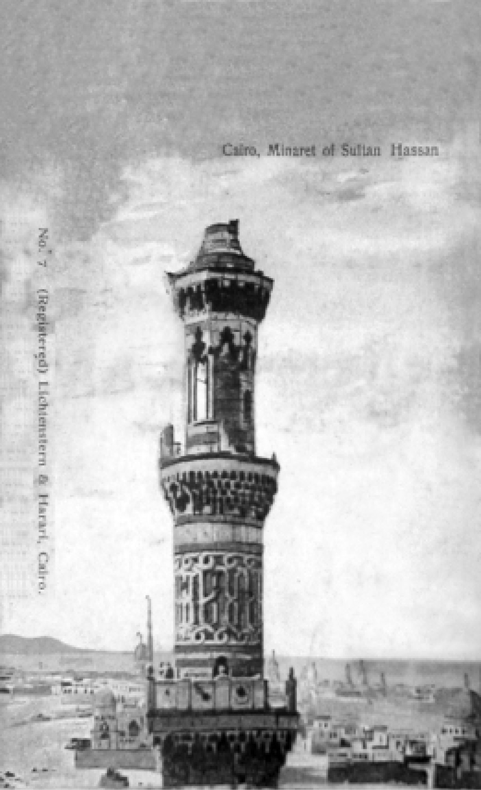
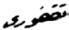
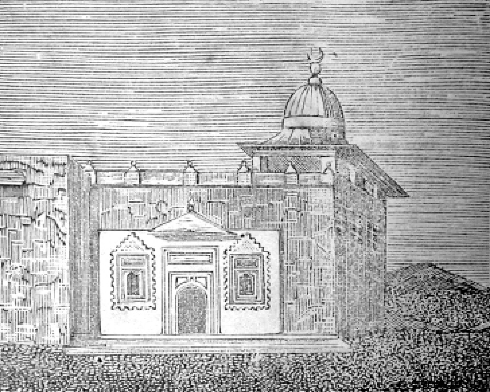
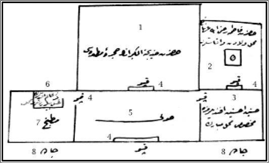
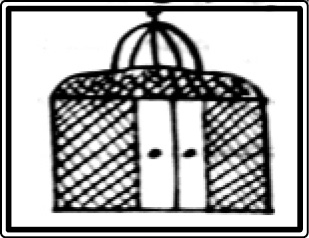
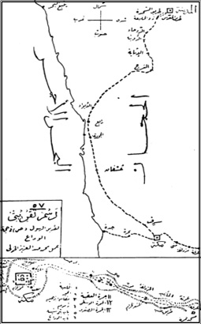
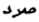

(Yenbu)
) اعوذ بالله من الشيطان الرجيم )1
1 Taşlanmış şeytandan Allah’a sığınırım.
) بسم الله الرحمن الرحيم )2
2 Rahmân, Rahîm Allah’ın adıyla.
) الحمد لله رب العالمين والصلاة والسلام على سيدنا محمد
وعلى اله و صحبه وسلم )3
3 Hamd âlemlerin Rab’bınadır. Salat ve selâm efendimiz Muhammed’e ve O’nun selamete eren yakınlarına ve dostlarına olsun.
İfâde-i Merâm
Bundan altı yedi sene mukaddem meşâyih-ı izâm-i Halvetiyye’den Şeyh Abdüllatif Bursavî kuddise sırruhü’l-celî hazretlerinin Fütûhât Kenzü’l-Kur’ân nâmındaki tefsîr-i şerifini mütâlaa ile şeref-yâb olmuş ve bunda bi’l-münâsebe yazılmış olan muhabbet-i Muhammediyye hakkındaki bahs-i mahsûs ve esrâr-ı hacc-ı Şerîfe dâir olan makale-i latîfe kalb-i hakîrânemde cânib-i Hicaz’a büyük bir şu’le-i aşk uyandırmıştı.
Ziyâret-i Beytullahi’l-Harâm ve Ravza-i hazret-i seyyidü’l-enâm arzûsunun teşeddüdü gün-be-gün kemâl bulmaya başlamış ve hattâ hülyâ rüyâya da intikâl ile âlem-i menâmda güzel güzel rüyâlar görerek ezvâk-ı maneviyyenin tesîrât-ı füyûzât-bahşâsı kendini göstermiş idi.
Bir aralık Edirne’de Şeyh Şuayb Şerefeddin Gülşenî’nin mütâlaa olunan İzâhu’l-Merâm fî Meziyyeti’l-Kelâm nâm eser-i âlîsi dahi kalb-i hakîrânemde şu’le-rîz olan nûr-i muhabbet-i maneviyyeyi tezyîd ettiğinden artık rûz u şeb düşüncem, emelim bu noktaya münhasır kalmış ve beş vakitte Cenâb-ı Hak’tan temeniyât-ı ubûdiyyet-mendânem bu emele nâiliyetten ibâret olmuş idi.
[2] Vâhibü’l-âmâl olan Allah’a bî-nihâye şükr ve senâlar olsun. Esbâb-ı mahsûsa-i zâhiresini dahi halk ve ihsan buyurduğundan:
Kimde kim aşkın nişânı var durur
Âkıbet ma’şûka ânı ir görür
mantûkunca ziyâret-i mukaddeseye muvaffakıyet elvermekle Dersaâdet’ten azîmetten itibâren avdete kadar vâkı’ olacak sergüzeşt-i âşıkaneyi yazmak arzu eylediğimden işbu mantûkunca ziyaret-i mukaddeseye muvaffakiyet elvermekle Dersaâdet’ten azîmetten itibâren avdete kadar vâki olacak sergüzeşt-i âşıkaneyi yazmak arzu eylediğimden işbu eser vücûda gelmekle Hâtıra-i Hicâziyye nâmını verdim.
4( ومن الله التوفيق )
4 Yardım Allah’tandır.
2 Zilkade sene 1323/ 15 Kanun-i evvel 1321(28 Aralık 1905)
Tarîk-ı Halvetî fukarâsından Rüsûmât Emâneti
Mektûbî Kalemi Mümeyyizi Hüseyin Vassâf
İSTANBUL-CİDDE YOLCULUĞU
[3] Beşâret-i Azîmeyi Hâvî Bir Rü’yâ-yı Sâdıka
Hâsıl olan aşk-ı celîl-i Ahmedî münâsebetiyle ravza-i ıtırnâk-i Mustafaviyye’ye yüz, göz sürmek zevk-i şedîdinin câna tesiri yüzünden bir gece âlem-i menâmda zümrüt gibi çayırlar bitmiş dağlardan, ovalardan Medine-i Münevvere’ye azîmet ediyormuşum. Bir müddet sonra Medine-i Münevvere’ye vâsıl ve Harem-i Şerîf’e dâhil olmuşum. Harem-i Şerîf’te gâyet sevdiğim Hacı Nuri Efendi nâmındaki bir zâta vesâir kimselere mülâkî oldum. Hücre-i Saâdet’in dış tarafında Bab-ı Saâdet-i Muhammediyye’nin önünde oturuyorlarmış. Onlara hitâben derûn-i Ravza’ya dahil olacağımı beyân eylediğimde Hacı Nuri Efendi “dur oğlum acele etme” demekle, nâr-ı aşk ile yanıp kavrulduğum Fahr-i Âlem sallallahü aleyhi ve sellem efendimiz hazretlerinin hâk-pâ-yı hâcet-revâ-yı Cenâb-ı risâlet-penah-ı a’zam ve ekremîlerine rû-mâl olmak emel-i âşıkane ve ubûdiyet-mendânesiyle geldiğimden tahammül edemeyerek her halde dâhil-i hücre-i muattara olacağımı bir lisân-ı sûziş beyân ile ifâde edip hemen o me’men-i pür-safâ ve eşref-i makamâtü’l-ulyâ olan Ravza-i seniyyeye şeref-yâb-ı dühûl oldum. Bir de baktım ki nûr-i ayn-ı âlem ve eşref-i benî âdem sallallahü aleyhi ve sellem efendimiz hazretleri bir hâl-i beşâşet-iştimâl ile orasını müstağrak-ı envâr-ı cemâl buyurmuşlardır. Şeref-yâb-ı mülâkat olur olmaz husûle gelen vecd ve şevk ile cehren salât ve selâm îrâdıyla tezyîn-i lisân ve canâna başladım. Üç defa lutfen ve tenezzülen ve merhameten ve âtıfeten “ben senden hoşnudum” hitâb-ı ıtabıyla bu abd-i kemterîni şu sûretle mazhar-ı iltifâta cihân-ı der-cân buyurdukları esnâda dest-i ber-sîne-i tazim olarak cehren salât ve selâm getirmekte ber-devâm ve gözlerimden sirişk-i meserret dökerek pâ-ber-cây-ı tazim ve ihtirâm ettim.
[4] Bu aralık Hacı Nuri Efendi dahi dâhil olmuş ve o da gözlerinden yaşlar dökmekte olduğu ve dest-i ber-sîne-i tazim ve tekrîm bulunduğu halde tasliyeye başlamış idi. Bu hâl-i behcet-iştimâl ile uyandım. Gördüm ki göz yaşları yastığı ıslatmıştır. Derhal kalkıp hamden, şükren abdest alıp iki rek’at namaz kıldım. Ve tâ-be-sabah salât ve selâma ve tilâvet-i Kur’an-i Azimü’ş-şân’a muvâzab oldum.
Aradan bir kaç sene geçti. Bir gün Hacı Nuri Efendi ile sohbet ederken cânib-i Hicaz’a azîmet arzûsunda bulunduğumu beyân ettim. O da böyle bir arzûnun taht-ı tesirinde bulunduğunu anlatmasıyla beraber bu kemtere refâkat edeceğini der-miyân ve kendisinin 16 haccı ve Ravza-i ıtırnak-i Muhammediye’yi 5 defa ziyâreti olduğu cihetle bu defaki seyâhat-i âşıkanede her türlü teshilâttan müstefîd olacağımızı ityân eylemekle azîmet mes’elesi hemen takarrür edip şu emel-i hayra muvaffakiyetimizi Cenâb-ı Hak’tan temenni ile kararımıza fâtiha-hân olduk.
İşte rü’yâ-yı sâdıkanın tesirât-ı hayât-bahşâsı yüz gösterdi. 5( الحمد لله تعالى )
5 Hamd yüce Allah içindir.
Tedârikât-ı Seferiyye ve Hareket
Malzeme-i seferiyyeyi tedârike mübâşeret edip esnâ-yı azîmet ve avdette vücûdu lâ-büdd olan şeyler bir kaç gün zarfında tamamen alındı. Bu sırada Cenâb-ı Hak bu abd-i kemterine bir erkek evlat ihsan ve inâyet buyurmuş olduğundan bunun kudûmünden hayır ve bereket ve nimet ve saâdet âsârının zuhûru istîşâr olundu. Mensup olduğum dâire-i resmiyyeden me’zûniyet istihsâl ettim. Yol tezkireleri alındı. Azîmet proğramı mûcibince Mısır tarîkıyla gidilecek ve bu sebeple Mısır görülecekti.
[5] Fakat icâb-ı hâl bizi doğruca Cidde’ye gitmek mecburiyetinde bulundurduğundan ve Hidiviyye kumpanyasının Asvan nâm vapurunun doğruca Yenbu-Cidde iskelelerine gideceği anlaşıldığından ikinci mevki kamaralardan iki yataklı bir oda tutulmuş ve sekizerden 16 Osmanlı lirası mukabilinde bileti alınmıştır.
Vapurun yevm-i hareketi şehr-i Zilkade’nin ikinci Perşembe günü idiyse de bilâhare Cumartesi’ye ta’lîk edilmiş ve Cumartesi günü de azîmeti taahhur ettiğinden Pazartesi’ye ilan kılınmıştır. Mürûr tezkirelerimizi ve biletimizi almış olmaklığımız ve cümle ehibbâ ile vedalaşmış bulunmaklığımız hasebiyle İstanbul’dan kat’-ı alâka hâsıl olduğundan bir an evvel vapura binmek için insanda hâsıl olan âsâr-ı isti’cal bir hâl-i tahammül-fersâya inkılâp ettiğinden bu günlerde çektiğim ızdırâbât-ı derûniyyeyi tarif mümkün değildir. Her ne hâl ise, Pazartesi günü vapurun hareketi bir gün evvel almağa başladığı yolculardan bir kat daha kesb-i takviyet etmesiyle ne olursa olsun vapura râkib olmağa karar verdik, fakat o gece li-hikmetih gözüme bir türlü uyku girmediğinden insan garip bir hissin tesiri altında kalıyor. Sabahleyin saat dört buçukta Hacı Nuri Efendi ile birleşilmesi takarrür ettiğinden ale’s-seher kalkılıp malzeme-i seferiyyeyi istishâben efendi-i mûmâ-ileyhin hanesine gidilmiş idi. Şu kadar ki evvelce evlâd ü ıyâl ve akrabâ ve taalukât ile bir sûret-i hazînânede vedalaşılmış ve ba’dehû Hacı Nuri Efendi’nin hanesinden arabalarla doğruca yolcu salonuna kadar gidilmiştir.
Cenâb-ı Hak devlet ve millete zevâl vermesin. Hizmetinde bulunduğum dâire-i resmiyyece hâtır-ı kemterâneme riâyeten bir kaç memur-i mahsûs gönderilmiş ve onlar tarafından eşyây-ı seferiyyemiz [6] vapura îsâl edildiğinden rıhtımda berâ-yı teşyi’-ı teşrîf buyuran eızz-i ihvân-ı kirâm sûret-i ittisâm ile göz yaşları içerisinde veda merâsimini bi’l-îfâ bir kayığa atlayarak vapura gittik.
Vapurda 19 Günlük Hayat
Kamaramız iki yataklı olmak üzere ikinci mevkiden bir loca idi. Buraya eşyamızı güzelce yerleştirip yataklarımız dahi kamara yataklarının üzerine serildikten ve her bir şey için bir mahall-i münâsip bularak tertîp edildikten sonra hafifçe bir taâm edilip öğle namazını kıldık. İki yataklı kamara vapurda bizim kamaramızdan başka olmadığından bir üçüncü veya dördüncü yolcunun yanımıza gelmesi ihtimâli olmayıp müstakillen kamaraya sâhip olmaklığımız bu tedbîrdeki isâbetten dolayı bâis-i memnûniyetimiz olmuştur.
Havanın gâyet rüzgârlı, tipi ve karlı olması vapurun Pazartesi günü de hareketini bi’l-ızdırâr dûçâr-ı tehîr ettiğinden bir gün sonra kalkacağı şâyiası biraz neşemizi kaçırmış ise de sâir kamaralardaki yolcularla hâsıl edilen muârefe ve az vakitte husûle gelen âsâr-ı hamiyyet bir dereceye kadar bu neşesizliği ta’dîl etmiş ve vapurumuzun İzmir ve Beyrut’a uğrayacağı şâyiası da henüz oraları görmediğim için görmüş olacağım sevdâsıyla hoşuma gitmişti. Hulâsa şöyle böyle akşam oldu. Akşam taâmını tertîp ve tenâvül edip salât-ı mağribi bi’l-edâ kendi ispirto takımımızla pişirmiş olduğumuz kahveyi içip salona çıktık. Salonda yeni yol arkadaşlarımızla üç buçuka kadar muhabbet edip ba’de edây-ı salâti’l-ışâ kamaramıza çekildik, yataklara yattık. Fakat gözüme bir türlü uyku girmediğinden [7] dört beş saat kadar yatakta o yana, bu yana döndükten sonra uyku eser-i galebe göstermeye başladı. Şu satırlar uykunun kaçtığı sırada yazılmıştır.
7 Zilkade sene 1323 (2 Ocak 1906) yevm-i Salı
Ale’s-seher uyanarak evvel emirde abdest alıp salât-ı fecri edâ eyledik. Ba’dehû çayımızı tertîp ile nûş ettikten sonra, biraz, salonda yol arkadaşlığına dâhil olan zevât-ı kirâm ile bir kaç sâatler muhabbetten sonra vapurumuza hareket için esbâb-ı lâzime tehiyye olunmaya başlandığını haber aldığımızda mesrûr olduk. Şöyle böyle akşam oldu. Kar yağıyordu. Şehr-i şehîri bembeyaz bir hâle koymuştu. Saat onbirde vapurumuz hareket etti. Hemen güverteye koştum, soğuğun şiddetine ve rüzgârın savrıntısına bakmayarak İstanbul’a nazar-ı vedâ ile bakmaya başladım. Gönlüm makamât-ı mübârekeye rû-mâl olmak şerefinin sürûru, aile iftirâkının kederi arasında beht ü hayret içinde kalmış idi. Sürûr ile kederin bir anda insana vâkı’ olan tesiri pek gariptir. Vapurumuz Sarayburnu’nu dolaşınca kamaraya girmek üzere salondan geçerken baktım ki kamara yolcuları salona çıkmışlar. Valide Cami-i Şerîfi hatîbi ve Gümüşsuyu Hastahanesi imamı faziletli Hacı Osman Efendi teyemmünen Sûre-i Feth kırâatine başladı. Huzzâr kemâl-i edep ile dinlemekte idi. Hitâmında beliğ bir duâ etti. Âmîn-hân olduk. Tekrar güverteye çıktım. Bir nazar-ı vedâ daha fırlatmak istedim. Baktım ki vapurumuz Yedikule önünde İstanbul ise nazardan gâib olmakta idi. Kamaraya avdetle akşam taâmın yeyip ferâizı edâ edip salonda üç buçuka kadar muhabbetten sonra uykuya daldık.
[8] Dün geceki uykusuzluk hasebiyle derin bir uykuya dalmışız. Nısfu’l-leylde refîkım Hacı Nuri Efendi birdenbire kalkıp kapıya koştuğundan derhal uyandım, telâşe sebebini sorduğumda “Aman oğlum bir bağrışma vardır. Galiba vapurda bir kaza zuhûr etti” demesiyle yataktan fırladığım sırada bir tarrâka-i hevl-nâktır koptu. Sanki vapur derûnuna birkaç top birden ateş eylemiş idi. Baş açık yalın ayak güverteye koştum. Yolcular da çıkmışlardır. Bir vâveylâ bir fiğândır zuhûr edip kimisi kendini denize atmak istiyor, kimisi şaşkınlığından gülüyor, kimisi ağlıyor, kimisi titriyor, kimisi düşmüş bayılmış idi. “Ne oldu” diye sorduğumuzda “vapur kayaya çarptı” cevâbını aldım. O zaman dizlerimin bağı çözüldü. Kar ve fırtına ber-devam idi. Marmara ortasında kayaya nasıl çarptık, ne mevkideyiz diye düşünmeye ve etrafa bakmaya başladım. Bir dağ kenarında olduğumuzu ve döküntü kayalar yanında bulunduğumuzu anladım. Kaptan ve tayfalar pür-telâş iskandil ediliyor; aşağı yukarı bağrışıyorlardı. Bir iki dakika sonra “Yolcular, telâş etmeyiniz. Anbarlarda bir rahne yoktur. Yola devam edeceğiz” nidâsı biraz tesellî-bahş olmuştur. Tahkîkâtıma göre ikinci kaptan nöbette iken sarhoşluğu hasebiyle geminin istikâmetini ve suların cereyânını hesâp edememiş, Marmara adalarının döküntüsü üzerine düşmekliğimize sebep olmuştur. Vapur delindi şâyiası yine revaç bulduğundan yolcuların gürültüsü, kaptanları ve tayfaları da korkutmuş olduğu için nihâyet hakîkati söylemeye mecbur oldular. “Baş tarafta tatlı su hazinesinin su kesiminden aşağısı delinmiş, başka bir ziyân yok. Yarım yol ile [9] gideceğiz, emin olunuz” diye herkese tesellî-bahş oldular. Saat yediye on var idi. Uzaktan iki vapurun gitmekte olduğunu kandillerinden fark eylediğimiz gibi onların yolu hatt-ı istikâmet oluşuna göre bizim birkaç mil cenûba inhiraf eylediğimiz istidlâl olundu. Mezkûr vapurlardan biri, bizi, “bir hâle dûçâr olmuştur” diye tahmin ederek yaklaşmaya başladı. Nihâyet yaklaştı. Hepimize büyük bir hiss-i hayât geldi. Düdük çaldı. İstifsâr-i hâl eyledi. Bizim vapur işâret-i bahriyye ile hâlini anlattı. Bizi bırakmadı. Yarım yol ile devama başladık. Şunu arz edeyim ki vapurun müsâdeme mahalli su sahrıncına tesâdüf ettiğine ve vapurumuz bölmeli olduğuna mebnî inâyet-i Rabbâniyye ve rûhâniyet-i mukaddese-i Muhmmediyye ile halâsımıza pek büyük sebep olmuştur. Uyku unutuldu. Herkes güvertede, olanca elbisesini giymiş soğuğa mukâvemet ve her gûne ihtiyâta riâyet ederek duruyor, ara sıra vapur batıyor mu gibi muâyenelere koyuluyordu. Bir kaç saat sonra bir fener göründü. Gelibolu feneri imiş. Ortalık ağarıncaya kadar fener istikâmetini takip ve vapur takrîb olundu. Ale’s-seher saat iki buçuk idi. Gelibolu şehrinin önünde demir attık. Selâmete mazhar olduğumuz için çok sevindik. Teşekküren ve tahmîdât-ı ubûdiyet-mendâneye müsâraat ettik.
Gelibolu’da Üç Dört Saatlik Devr-i Hayât
8 Zilkade sene 1323 (3 Ocak 1906) yevm-i Çarşamba
Gelibolu’ya muvâsalâtımız akabinde denize sandal indirildi. Kaptanlar tarafından muâyene edildi. Acele Gelibolu’ya çıktılar. Gerek İstanbul’da ser-acentaya gerek İskenderiye’de merkez-i idâreye telgrafla [10] malumat verildi. Ve alınacak emre intizâr olundu. Vapur esâsen siğortalı olduğundan siğorta şirketinin Gelibolu şube memuru hemen dalgıçlar getirip vapurun karnını muayene ettirdi. Başka bir hasar olmayıp yalnız baş tarafın sol cihetinde beş metre tûl ve bir buçuk metre arzında cesîm bir rahne açılıp rahnenin kısm-ı azamının su kesiminden yukarı olduğu tebeyyün etti.
Vapurumuzun yola devam edemeyeceği şâyiası çıkmasıyla hemen kamaramıza gelip eşyâmızı toplayarak hazır durmaya ve alâ rivayeten kumpanyanın El-Kahire vapuru gelip bizi alacak olursa bir an evvel kapağı oraya atmaya karar verdik.
İstanbul’da ser-acentadan bu aralık gelen telgrafnâme-i cevâbiyye yârın sabah gelip rahneyi re’ye’l-ayn müşahede ve icâb eden tedâbîri ittihâz edeceği der-miyân olunmakla ertesi güne intizâr lâzım gelmiş idi. Vapurumuzda beş altı yüz kadar yolcu olup mahall-i muhtelifeden mürekkeb idi. Keyfiyet-i taahhur-i azîmet ve vapur derûnunda gürültü çıkarmağa sebep olduğundan hâsıl olan iğbirâr-i umûmî netîcesi sarhoşluk beliyyesiyle böyle bir felâkete bâis oldukları için kaptanları öldürmeğe karar verdiler. Ve umûmen silahlandılar. Vapur yolcuları miyânında söz anlayanların reisleri sırasında bulunduğum için böyle bir şeyin çirkin olduğunu ve hacc-ı şerîf yolunda mücâhede-i nefs bâbında îka’-ı cinâyet lâyık olmayacağını ve kaderde böyle bir kazaya uğrayacağımız muayyen olmasaydı azîmetimizin dûçâr-ı taahhur olmaması lazım geleceğini yolculara münâsip lisânla anlatıp biraz işin önünü aldığımız gibi hafiyyen kaptanlara keyfiyyeti ihbâr ettiğimizden onlar da geceyi Gelibolu’da geçirmeye ve vapurda bulunmamaya karar verdiler [11] ve hafiyyen kaçtılar.
Vapurda efkâr-ı umûmiyye keyfiyyet-i atabe-i seniyye-i hazreti hilâfet-penâhiye ba-telgrafnâme arza ve bir an evvel sevkleri için diğer vapurun tesrî-i irsâlini istirhâma mün’atıf oldu. Ve bir kısmı çıkıp umûm nâmına böyle bir telgraf çektiler. Bir kısmı mutasarrıfa mürâcaat ve şikâyet ettiler. Hava sıkı poyraz olduğundan limanda vapurumuz çifte demirli olduğu halde fırıl fırıl dönüyordu. Suların şiddet-i cereyânıyla akıntıya kapılıp bir ikinci kazaya meydan kalmaması için tedâbîr-i müttahizeye mürâcaat olunup tayfalarca re’y-i sa’y ve gayret ibrâz olunmakta idi. Şöyle böyle akşam oldu. Yemeğimizi yeyip salona çıktık. Medine-i Münevvere nâibi faziletli Hilmi Efendi hazretleri ve Vulçitrin kaymakamı izzetli Cemil ve biraderi Fazıl Beyler vesâir zevât ile bir hayli musâhabette bulunuldu. Ve kazâ-yı vâkı’dan sâlimen halâsımız münasebetiyle elsine-i şükrânda bir çok kelimât-ı tahmîdiyye cereyân eyledi. Ba’dehû kamaralarımıza çekildik.
Gelibolu’nun Ahvâl-i Târihiyye ve Coğrafiyyesi
Gelibolu’ya ecnebiler Gallipoli derler. İstanbul’dan giderken boğazın sağ cânibinde olup gâyet ferâh, dil-nişîn câzibedâr bir şehr-i meşhûrdur. Hem-nâmı olan mutasarrıflığın merkezi olup ticâretgâhtır.
20.000 kadar ahâlisi ve iki sun’ı, -aşağıda tarif olacaktır- bir tabiî limanı vardır. Cevâmiı, tekyesi çok olduğu gibi mektepleri de o nisbettedir. Şehrin manzara-i umûmiyyesi hakîkaten dil-rübâ olup fener ciheti müzeyyen köşkler, hanelerle kesb-i umrân eylemiştir.
[12] Bu güzel şehri doya doya seyr ve temâşâ için soğuğun şiddetine rağmen güverteden ayrılamazdım. Boğazın medhalinde bulunduğumuzdan her iki sâhil görünüyordu. Her taraf karla mestûr olmuş her nere bakılsa hazârat yerine beyazlık kaim olduğu meşhûdum bulunmuştur. Hele şehir cihetinde manzara-i dil-firîb için insanda hissiyât-i şâirâne ve tarihiyye galeyân etmemek kabil değildir. Semâya ser çeken mürtefi’ dağlar, dağlar üzerinde ağaçlar kâmilen beyaza bürünmüşlerdi. Bu rengîn temâşâ karşısında zevk-yâb olmaz insan tasavvur edemem.
Güvertede amîk bir tefekküre dalmışım. Bu şehr-i mübeccelin Osmanlılara Rumili toprağında ibtida cilve-gâh olan bir belde-i mühimme olduğu hâtırası yüreğimde büyük bir his uyandırdı. Bundan 565 sene evvel yani hicretin 758 tarihinde6 ve cennet-mekan Gazi Sultan Orhan hazretleri zamanında padişah müşarun ileyhin vezîr-i âlîsi bulunan Şehzade Süleyman Paşa7 hazretleri tarafından feth olunmuştur. Süleyman Paşa’nın beraberinde Hacı İl ve Ece ve Gazi Fazıl ve Bursa muhafızı Evrenos Beyler gibi malumat ve şecâati müsellem zevât-ı kirâm ve müntahap asker olup sallarla Anadolu sahilinden bir gece Gelibolu’ya çıkıp Rumili toprağına pây-ı endâz ve cihâna gulgule-i feth ile terennüm-sâz olmuşlardı. Süleyman Paşa hazretleri ise sonraları bir gün av esnasında atıyla şiddetle bir ağaca çarpıp nâil-i rütbe-i şehâdet olmasıyla bu belde-i mühimme o vücûd-i mukaddese ârâm-gâh olmuş idi. Tarihin bu sayfalarını hayâlen mütâlaaya daldığım sırada akşam ezanı okunuyordu. Havanın şiddeti ise kamaraya girmeye mecbur edecek derecede insanı üşütüyordu.
6 Hüseyin Vassâf’ın yaptığı bu hesaplama hicri takvime göredir. 1323 yılında hacca giden Hüseyin Vassâf, 1323 rakamından fethin tarihi dediği 758 rakamını çıkarır, geçen sürenin 565 yıl olduğunu belirler. Hicri tarih esas alındığında Hüseyin Vassâf’ın bu hesaplaması doğrudur. Bu hesaplamayı miladi takvime göre yaptığımızda durum farklılık gösterir. Hicri 758 yılının miladi karşılığı 1357 tarihidir. Hicri 1323 yılının miladi karşılığı da 1905 yılıdır. 1905 rakamı ile 1357 rakamı arasındaki fark 548 eder. Arada kalan 17 yıllık fark hicri yılın 10 gün eksik olmasından kaynaklanmaktadır.
7 Sultan Orhan’la Nilüfer Hanım’ın oğludur. 1357 yılında ölmüştür.
[13] 9 Zilkade sene 1323 (4 Ocak 1906) yevm-i Perşembe
Bu geceyi rahatça geçirip sabahladık. Vücûdumdaki rahatsızlık zâil olmuş olduğu halde uyandık. Sabah çayımızı içip, namazımızı edâ eyledik. Biraz muhabbetten sonra salona çıktığımda vapurumuzun bugün Çanakkale’ye müteveccihen hareket edip orada tamiri icrâ olunacağı haber-i sahîhi alındı. Yolcuları başka vapura aktarma edecekler şâyiası da ber-devâm idi. Gelibolu’ya çıkıp gezmek ve Rüsûmât Müdürü eızz-i rüfekâ-yı âcizânemden izzetli Hulûsi Bey’i görmek ve husûsiyle Sultânü’l-Âşıkîn, Kutbu’l-Ârifîn Yazıcızâde Muhammed Efendi ve biraderi Ahmed Bîcân Efendi hazerâtını ziyâret ile taleb-i şefâat eylemeye karar verdik. Hava açmış şems-i tâbân eşi’a-i nûruyla etrâfı tenvîr eylemiş idi. Bir sandala râkiben şehre çıktık. Evvel emirde Rüsûmât Dairesi’ne gidip müdîr-i mûmâ-ileyh ile görüştüm. Ve ânî olan ziyâret-i vâkıanın husûle getirdiği meserret ile ne yapacağını şaşırdı. Hayli sohbet eyleyip ba’dehû şehri gezmek ve evliyâ-yı müşârün ileyhimâyı ziyâret eylemek arzusuyla ve taleb-i ruhsatla oradan infikâkimiz sırasında yanımıza rüfekâ-yı kudemâdan olup mukaddemâ emânet-i celîle muhâsebesinde bulunmuş ve el-yevm Gelibolu Rüsûmât’ında tezkire katipliği ile kayrılmış bulunan hakikatli İsmail Hakkı Bey biraderimizi terfîk eyledi. Evvel emirde Yazıcızâde hazretlerini ziyârete şitâbân olduk. Yerler buz tutmuş olduğundan giderken hayli sıkıntı çekilmişti.
Bir çeyrek kadar yol gittikten sonra cesîm bir mezâristâna dâhil ve biraz daha yürüyerek türbe-i şerifeye vâsıl olduk.
[14] Muhammediye Nâm Kitap Müellifi Yazıcızâde’yi Ziyâret ve Müşârun İleyhin Tercüme-i Hâli
Seyyidü ehli’l-garâmet-i ve’l-uşşâk, ve erbâbi’l-muhabbet-i ve’l-iştiyâk Yazıcızâde Muhammed Efendi hazretleri sekizinci asr-ı hicrî meşâhir-i evliyâsından olup Gelibolu’ya yakın Malkara muzâfâtından Kadıköyü’nde şems-i vücûdu tulu’ edip âlem-i dili tenvîr ettikten sonra 855/1451 senesinde Gelibolu’da gurûb eylemiştir.
Hudâvendigâr Gazi hazretlerinin zamân-ı ulyâlarında sefâretle Mısır’da bulunmuş sonraları cezbe-i aşk-ı ilâhî ile mest ü medhûş olarak terk-i memuriyetle tecerrüd âlemine girmiştir. Tercüme-i hâli ciltler teşkîl edecek derecede vâsi’ ve o derece de mühim olan bu zât-ı âlî-kadr Hazreti Bayram Veli kaddesallahü sırrahu’l-celîleden feyz ve irşâda mazhar olup daha sonraları deryâ-yı aşk-ı Muhammedî’ye dalarak mahv-i vücûd eylemiştir. Ümmet-i İslâmiyye’nin elinde medâr-ı zînet olan Muhammediye nâm eser-i bihterînini fahr-i kâinât efendimiz hazretlerinin emr-i celîl-i risâlet-penâhîleriyle yazmıştır. Ka’b ü kemâlâtına evliyâ-yı kirâm bile hayrân ve mahsûl ü aşk u irfân olan Muhammediye’si rütbe-i ulviyyesine burhân-ı belîğu’l-beyândır. Türbe-i şerifesi mamûr ve müzeyyen olup ruhâniyet-i azîme vardır. Ve hele râyiha-i tayyibesinden insan gaşy olur.
Türbe-i münevvereye dahil olduğumuzda evvel emirde teyemmünen ikişer rek’at namaz kıldık. Ve Sûre-i Mülk’ü kıraatle hazretin rûh-i pür-fütûh-i âlîlerine ihdâ ve şeref-yâb-ı ziyâret olup sırran i’tilâ eyledik. Kabr-i âlilerinin üzeri açık ve etrafı kapalı olup ittisâlindeki binâ-yı latîf dergâh ve namazgâhtır.
[15] Duvarda muallak elvâh-ı celîlenin birinde:
Fülk-i âmâli felek sevk eyler iken sû-be-sû
Lenger atmakdı muradım sâhil-i ihsânına
Şimdi Hak me’men idüb mersây-ı lutfi sâmîye
Şimdi erdim hamd ola bahr-i kerem-i dâmânına
Hanîfin oldum yüz sürüp dergahını itdim penâh
Budur âyîn-i kirâm imdâd ider mihmânına
Muharrer olduğu gibi diğerinde:
Elâ ey kutb-i envâr-ı velâyet Yazıcızâde
Şuâ-i şems-i iklîm-i hidâyet Yazıcızâde
N’ola mâh-ı münîr olsa müdevver evc-i ravzanda
Ki şems ü mihr-i âfâka kerâmet Yazıcızâde
Seni bir zât-ı âlî-şâna vassâf itdi Mevlâ kim
Giyer levlakdan eflâka hil’at Yazıcızâde
Anın aşkıyla âh itdin tutuşdu elde evrâkın
Eyâ şem’-i harîmim bezm-i hayret Yazıcızâde
Hicaz Ka’be-i uşşâkına gelsün tavâf itsün
Seni ins ü melek kılsun ziyâret Yazıcızâde
Bu rûhâniyeti Firdevs’den Rıdvan mı gönderdi
Nedir kabrinde yâ hû bu letâfet Yazıcızâde
Eser subh u mesâ sayf u şitâ kabr-i şerifinde
Nesîm-i nefha-i kudsi hüviyet Yazıcızâde
Gubâr-ı hâk-pâyın tûtiyâdır çeşm-i uşşâka
Diyu geldim sana ey kân-i şefkat Yazıcızâde
Habibullah-ı aşkın hürmeti âşıklığın hakkı
Bulam ben dahi dâreynde selâmet Yazıcızâde
Yüzün dergahına kim sürdü elbet olmadı mahrûm
Benim de iltimâsım vardır elbet Yazıcızâde
Gelibolu ser-â-pâ mazhar-ı feyz ü saâdetdir
Kitâbın bu söze eyler şehâdet Yazıcızâde
Bizi de anlara ilhâk idüp hep asl u fer’imle
Be-hakk-ı Ahmed-i Muhtar şefâat Yazıcızâde
Geçer âkil rumûzâtın tefekkür kılsa kendinden
Eyâ mecmûa-i esrâr-ı hikmet Yazıcızâde
Ne esrâr itdin ızhar ol satr-ı pür-mehâbetde
Okunmaz anlaşılmaz hatt-ı kudret Yazıcızâde
[16] Çekerdi kâr-bâr-ı hicrini çokdan beru Zihnî
Bihamdillah erişdi rûz-i vuslat Yazıcızâde
Muharrer idi. Şu medhiyeyi yazarken hürmet ve muhabbet-i âcizânemin galeyânıyla eser-i tanzîm olarak o medhiyeye peyrev oldum. Ve irticâlen manzûme-i âtiyyeyi yazıverdim:
Elâ ey mahzen-i irfân u hikmet Yazıcızâde
Seni ez cân u dil sevdim hakîkat Yazıcızâde
Kemâl-i şevk ile itsem ziyâret kabrini dirken
Muvaffak eyledi ol Rabb-i izzet Yazıcızâde
Şeref-yâb-ı ziyâret olduğum ân-ı saâdetde
Dil-i mahzûnuma geldi meserret Yazıcızâde
Mübârek kabrini gördüm ser-â-pâ gark-ı nûr olmuş
Sana züvvâr olan eyler şehâdet Yazıcızâde
Kitâb-ı müstetâbındır hakikat bahrinin dürrü
Bulunmaz âlem-i zâhirde kıymet Yazıcızâde
Şerîatdan, tarîkatdan, hakîkatdan, dakâyıkdan
Güzelce eylemişsin serd-i hikmet Yazıcızâde
Eyâdî-i muhabbetde gezer te’lîf-i mergûbun
Gece gündüz okurlar cümle ümmet Yazıcızâde
Garîk-i bahr-i aşk-ı Hazret-i Fahr-i Cihansın sen
Eyâ şem’-i şebistân-ı muhabbet Yazıcızâde
[17] Seninçün ümmetin kalbinde vardır mevkı-ı âlî
Sana beslerler elbet hiss-i hürmet Yazıcızâde
Cenâb-ı Fahr-i Âlem aşkına dil-sûz olmuşsun
Elâ ey server-i uşşâk-ı rahmet Yazıcızâde
Tasavvuf âleminde sözlerin iksîr-i a’zamdır
Gül-i gül-zâr-ı erbâb-ı tarîkat Yazıcızâde
Cemîan ehl-i aşka şerbet-i zevki virir hâlin
İdersin dâimâ ibzâl-i himmet Yazıcızâde
Mükerrem nâmını ziver iderler dillerde uşşâk
Hakâyık bülbülü ihsân-ı kudret Yazıcızâde
Kemâl-i aşkına burhan olan âsâr-ı mergûbun
Kabûl-i Hazret-i Fahr-i Risâlet Yazıcızâde
Reîsü’l-evliyâsın mazhar-ı feyz-i Resûlullah
Eyâ misbâh-ı erbâb-ı selâmet Yazıcızâde
Künûz-i hikmetin miftâhı olmuşsun maârifde
Sana herkes ider tazim ü hürmet Yazıcızâde
Yanardı nâr-ı hicrinle nice demden beri Vassâf
İrişdi bezm-i vuslat kıl inâyet Yazıcızâde
İşbu manzûme-i fakîrânem âhiren tahrîr ve teclîd ettirilerek bir çerçeve ile Gelibolu’ya irsâl ve türbe-i şerifede bir köşeye ta’lîk ettirilmiştir.
[18] Türbe-i Şerîfe ve dergâh-ı münifîn devr-i Hazreti Abdülmecid Han’ın ta’mirât-ı mükemmilesi icra kılındığına kapı bâlâsındaki şu tarih delâlet ediyordu:
Kutb-i velâyet-menkıbet Abdülmecid Han’ın
Âlemde zât-ı pâkini kılsa sezâ sâhib-zamân
Ol pâdişâhda var kırk velinin kuvveti
Buldu ufk-ı himmet-i şâhanesiyle dehr amân
Yazıcızâde türbesi ol şâh-ı Tûbâ sâyenin
Mi’mâr-ı eltâfı ile yapıldı çün kasr-ı cinân
Yâ Rab be-câh-ı evliyâ ol pâdişâh-ı âleme
İmdâd-ı kutb-i a’zamı ızhar eyle ân-be-ân
Ziver gelüp bir ehl-i dil söylendi bu târîh-i tâm
Yapdı Yazıcızâde bu türbesini şâh-ı cihân
Koca sultanı esna-yı ziyâretdeki inşirâh-ı derûn vasfa sığar şey değildi. Türbedâr efendi mihrâbın üstünden bir çekmece alıp ihtirâmât-i azîme ile bir sehpânın üzerine koydu. İpek ve sırma işlemeli boğçaları salât ve selâm ile açmağa başladı. Bizler ise pâ-ber-câ-yı tazim ve dest-i ber-sîne-i tefhîm idik. Üzeri yeşil canfesten kaplı dört parmak kalınlığında bir kitap çıkardı. Ve Yazıcızâde’nin kendi kalemiyle yazdığı ve ravza-i seniyye-i Muhammedîye takdîm eylediği Muhammediye nâm te’lîf-i güzîni olduğunu ve nazar-ı tashîh-i peygamberîden geçtiğine delâlet eden çizgiler bulunduğunu bi’l-beyân açtı gösterdi. Hind âbâdîsi ipek kağıt üzerine nesih olarak yazılmış ve pek i’tina edilmiş bir eser-i âli olduğu görüldü. Orta yerinde bir sahife çevirdi. Kavrulmuş gibi bir renk iktisâb etmiş yazıları yine okunacak derecede görünüyordu. “İşte çektiği âh-ı âteş-nâk ile kavrulan sahifedir” dedi. Bu sahifede muharrer olan ebyât medhiyye-i celile-i hazreti peygamber-i zî-şândan ibârettir.
Mebdei
[19] “Elâ ey server-i mahbub mine’l-eyni ile’l-eyni” mısraıdır.
Bunu yazdığı zaman nâr-ı aşkın dil-i mecrûhundaki tesirat-ı kaviyyesinden bir âh-ı âteş-feşan çekip zebân-i âhıyla bu sahife kavruluvermiş.
Bu sahifeye yüzümü, gözümü sürdüm, öptüm. Kalbim rûhâniyet-i celile-i Muhammediyye âsârından hissedâr-ı feyz oldu. Nâil olduğum şu hâlin bahş eylediği meserret ve inşirah unutulacak şey değildir. Koca sultanın vasiyyeti mûcibince türbesi üzeri örtülmemiştir. Fakat demirden tel ile setr olunmuştur. Üstü örtülü binanın sağ köşesinde pederiyle validesi medfun ve rahmet-i Hakk’a makrûndur.
Ziyâretle şeref-yâb ve feyz-i ma’nevî ile kâm-yâb olduktan sonra birâder-i vâlâları Ahmed Bîcân hazretlerinin türbe-i münevveresi ziyâret olundu ki Envâru’l-Âşıkîn ve ve Mağaribü’z-Zaman’ın müellif-i muhteremi ve Ahmediye’nin muharrir-i mufahhami bir zât-ı âli-kadrdir. Ba’dehû şehrin şâyân-ı temâşâ olan yerlerini gezdik. Dâire-i hükûmet cidden güzel bir binâ olup muntazam bir çam ormanının ortasındadır. Sokakları geniş ve muntazam şose olup sâir devâir-i resmiyye ebniyesi dahi şehre zînet vermiştir. Çarşısından bazı eşya mübâyaa edip avdet etmek için dâire-i rüsûmâta geldik. Bu sırada Gelibolu şehrinin sun’î limanlarını gördüm. Pek hoştur ki misâlini ber-vech-i âtî harîta ile gösterelim.

Hüseyin Vassaf’ın çizgisiyle Gelibolu limanı.
1- Çarşı, 2- Birinci Liman, 3- İkinci Liman, 4- Marmara Denizi, 5- Medhal, 6- Rıhtım, 7- Köprü
[20] Denizden sahile atf-ı nazar olunursa bu limanlar görülmez. Zira birinci limanın deniz ile arasına yapılan rıhtım üzerinde gümrük ve sâir ebniye-i resmiyye olduğundan havuz gibi kalmıştır. Büyük yelkenli çektirme serbestçe girebilir.
Rüsûmât Müdürü’ne arz-ı vedâ için gümrüğe geldiğimiz sırada gümrüğün kol sandalı hazırlanmış, sancak çekilmiş gördük ve umûm memûrin-i rüsûmiyyeyi rıhtımda bulduk. Bu abd-i kemtere karşı âsâr-ı ihtirâm göstermek arzusuyla gelmişler. Müdür ve başkâtip beylerle zikri geçen İsmail Hakkı Bey beraberimizde oldukları halde sandal ile bir sûret-i ihtirâm-kârîde bizi vapura mezkûr sandal ile îsâl ettiler. Bir müddet oturup avdet etdiler. Vapurumuz ise hareket düdüğünü öttürdü. Bu sırada yolculardan Acemler arasında bir telâşdır zuhur etti. Meğer beş altı Acem hamama girmişler el-ân avdet etmemişler. Onlar kalacak diye arkadaşları telâşa düşmüşler. Vapurumuz bir çok düdük çaldığı halde gelen olmadığından onları bırakarak bi’z-zarûre tahrîk-i çarh eyledi. Yanımızda Tahlisiyye Şirketi’nin bir vapuru da beraber bulunuyordu. Saat altıda hareket ettik. Yarım yol ile boğazdan içeri yollandık. Boğaz gittikçe darlaşıyordu. Fakat en dar yeri, İstanbul Boğazı’nın en geniş yeri kadar olduğu görüldü. İki taraf dağları bembeyaz kar altında kalmışlardı. Manzaraya doyulmaz idi. Hava gâyet sâkin ve berrak idi. İki saat sonra Çanakkale civarında Bahr-i Sefîd filosu kumandanlık dairesi önünde ve orada ârâm-sâz süfün-i harbiye-i şâhane arasında lenger-endâz olduk. Buranın letâfet-i mevkııyyesi cidden güzel ve doyulmaz derecelerde idi.
Kal’a-i Sultaniye’ye Muvasalat
[21] 10 Zilkade sene 1323 (5 Ocak 1906) yevm-i Cuma
Bugün hava her ne kadar açık ise de rüzgârın serinliği ve dağlarda karın kesreti insana bürûdet bahşediyordu. Onun için kamaradan çıkamadım. Memurîn-i mahsûsa ve bir çok amele vapura gelip geceli gündüzlü çalışmaya ve yaranın bir an evvel kapatılması esbâbının istikmâline başlandı. Arasıra tamirâtın derece-i sür’atini anlamak ve kaç gün sonra hareket edebileceğimizi öğrenmek için güverteye çıkardım. Vapurumuzun yanında Hamidiye zırhlısı ve yakınında Süfün-i Harbiye-i Osmaniye bulunduğundan muzika ve boru sadası eksik değildi. Bir de boğazdan gelip geçen sefâin bu mevkii kumandan münâsebetiyle selâmlamakta olduğundan insanın canı sıkılıyordu. Kumpanyanın Dersaâdet Ser-acentası Mösyö Silli Alfred tamirâtı tesri’ için Dersaâdet’den gelmiş idi. Kamaramıza gelip takırtıdan rahatsız olmamaklığımız için birinci mevkiye naklimizi teklif eylemiş ise de bir beis olmadığını beyân ile teşekkür ettik, oraya gitmeyi arzu etmeyişimizin sebeb-i yegânesi merâsim altına gireceğimiz korkusu idi. Gece salonda hoş bir âlem geçirdik, ba’dehû kamaramıza çekildik.
11 Zilkade sene 1323 (6 Ocak 1906) yevm-i Cumartasi
Bu sabah hava pek latîf ve sıcak idi. Ufukta güneşten başka bir şey görünmüyordu. Boğazın manzara-i letâfet-bahşâsına doyamadığım cihetle hiç kamaraya inmeyerek vaktimi güvertede geçirdim. Gâh tamiratı gâh etrâfı ve gelip geçen vapurları temâşâ eyledim. Tamiratın bir gün sonra hitam bulup pazar günü akşamı veya Pazartesi sabahı vapurumuzun inşallah hareket edeceği şayiası umûmda bir meserret husûle getirdi.
[22] Bulunduğumuz mevki güzelce taayyün etsin diye Boğaz’ın bir haritası talsîk olundu. Buna imâle-i nazar buyurulursa bulunduğumuz mevki Kal’a-i Sultaniye şehrini gösteren siyah nokta ile fener arasında bir sahildir. Burası Tarabya ile Beykoz arası gibi biraz genişçe olup İstanbul cihetine bakılırsa Boğaz’ın yukarı ciheti görülmez. O cihet sanki serâpâ kara imiş gibi zannolunur. Bu noktanın karşısında noktalardan biri Aydos diğeri Kilid-i Bahr’dir. Boğazın en dar mahalli burası olup her ne kadar iki sahil arası hayli geniş gibi görünüyorsa da gelen giden vapurlar Kilid-i Bahr istihkamının önünden geçerler. Zira Kal’a-i Sultaniye ciheti pek sığ ve kumsal olduğundan vapur ve sefâinin karaya oturmak ihtimâli kaviyyen vâriddir. Etrafımızdaki istihkâmât-ı cesîme ve topların menâzır-ı heybet-nümâsı ve Kıla-i Şahanede temevvücnümâ-yı mehâbet olan livâ-yı nusret-i ihtivâ-yı Osmani bu mevkıa başka bir letâfet vermiştir. Vapurumuzun mahall-i tevakkufı ile Kal’a-i Sultaniye beldesi arasındaki mesâfe karadan bir saate karib olup bahren bir çeyrektir.
Arabi ayının vasatına doğru gitmekte olduğumuz için âlem-i mehtâp yüz göstermeğe başladığından bu gece serinliğe bakmayıp mehtap âlemi yaptık. Hamidiye zırhlısında çalınan musikanın ehviye-i latîfesi sâmiamızı okşuyordu. Uykumuzun galebesi hâb-gâhımıza avdeti ihtar etmekle ihtâr-ı vâkıa mütâbeat mecburiyeti yüz gösterdi. Amele gece çalışmakta olduğu için elektrik tenvîrâtı deniz yüzünü gündüze çevirmiş ve tak tuka sadâ-yı umran ihtivâsı devam etmekte bulunmuş idi.
Kal’a-i Sultaniye’nin Ahval-i Tarihiyye ve Coğrafiyyesi
[23] 12 Zilkade sene 1323 (7 Ocak 1906) yevm-i Pazar
Bugün dahi hava Mayıs ayını andıracak derecede ibrâz-ı letâfet ediyordu. Vaktimiz güvertede geçti. Tamirat oldukça ileri gitmiş olduğundan yarın hareket sözü kuvvetleşti. Öğle taâmını ba’de’t-tenâvül Kal’a-i Sultaniye’ye azîmete ve şehri gezmeye karar verdik. Fakat oraya bizi îsâl edecek kayık olmadığından bâlâda ismi geçen Mösyö Silli’ye müracaat ettim. Kumpanyanın ufak bir istimbotu daima kal’aya gidip gelir ve amele ve eşya taşımakta idi. Bununla gitmek için eser-i muvâfakat gösterdi. İstimbota binip bir çeyrek kadar gittikten sonra şehre vâsıl olduk. Beldenin mevki-i ferah-fezâsı pek hoşuma gittiği gibi ebniyesinin zarâfet ve sokak ve caddelerinin vüs’ati memleketin manzara-i letâfet-nümâ-yı hâricîsi nisbetinde dâhilen intizâmı husûsiyle yirmi beşinci sene-i devriye-i cülûsiyye münâsebetiyle yapılan saat kulesi ve çarşısı zikre şâyândır.
Bu belde tarihen eski olmayıp Hazreti Fatih zamanında burada yapılan istihkâm ve köprüyü Mehmed Paşa merhumun boğaza Kilid-i Bahr ve Seddü’l-Bahr istihkâmlarını yaptırdığı sırada burayı merkez-i istihkâmât ittihaz eylemiş, mevkii itibâriyle bir şehir tesisini icâb etmiş ve günden güne vüs’at bulmuş idi. Bu sebepten Kal’a-i Sultaniye nâmı verildi. Avrupalılar Dardanel, avam-ı nas ise Çanakkale derler.
Sath-ı müstevi üzerine mebni bir şehr olup orta cihetinde dağlara doğru manzarası pek hoştur. Camii, mektebi, kilisesi ve sâir mebânî-i umûmiyyesi çoktur. On iki bin nisbetinde ahâlisi olup zâbitân ve askeri çok bulunur.
[24] Hayli dolaşıp başlıca yerlerini gördüm. Hiç olmazsa suyundan da içelim diye bir kahvehaneye girdik. Kahve ve su içerek mevsim-i şitânın en ziyâde âsâr-ı bürûdet gösterdiği erbaîn içinde ve bir haftadan beri deniz üzerinde rutûbet karşısında mangal ve suya sıcaklığından mahrum olmuş olan vücudumuz kahvehanede yanan sobanın sıcaklığından münbasıt oldu ve yeniden can buldu. Biraz istirâhattan sonra câmii şerifte öğle namazını edâ eyledik. Çarşıdan mandalina, portakal, yoğurt, ekmek gibi bazı şeyler iştira ederek bir kayığa atlayıp vapura avdet eyledik. Esnâ-yı avdette denizin râkid olması ortalığa bir kat daha letâfet vermiş idi ki pek güzel bir kış tenezzühü etmiş oluyorduk. İstihkâmâtın temâşâ-yı mehâbet-nümâsı ve hele iki taraf dağlarının nümûne-nümâ-yı azamet-i süphâni olan cesâmeti ve insana bahşeylediği ezvâk-ı latîfe-i şâirâne defter-i hatırâtın parlak sahifelerini teşkil edecek halde idi. Civarımızda Hamidiye zırhlı-i hümayununda terennüm-sâz olan nevbet-i musikıyye-i Humayununun ehdiyye-i latîfesinden hissedâr-ı zevk olduk. Vakt-i gurup takarrub ettiğinden kamaramıza çekilip akşam taâmını ba’de’t-tenâvül namazımızı edâ edip salonda saat dörde kadar müsâmerede bulunduk. Uykunun şeref-vürûdu yataklarımızda bize karşı olan câzibe-i istirâhat-bahşâsı kamaraya avdete mecbûr etmekle bu mecbûriyete karşı ser-fürû ettik.
13 Zilkade sene 1323 (8 Ocak 1906) yevm-i Pazartesi
Bugün ta’mirât kâmilen hitâm bulmuş idiyse de şiddetli bir sûrette lodos rüzgârının vezân olması ve yağmur yağması cümle yolcuları müteessir kılmakla beraber vapurun siğortalı olması mülâbesesiyle icrâ kılınan ta’mirâtını nazar-ı tetkîkden geçirmek üzere siğorta [25] şirketi ser-acentasının İstanbul’dan gece gelecek İtalya vapuruyla bil-vürûd ales-seher vapuru muayene ile ba‘dehû hareket edeceğimiz anlaşıldığından bu taahhurun dahi teessürât-ı vâkıayı tezyîde hayli dahli olmuştur. Ne ise bugün boğazdan dışarı çıkmamakta bir hikmet-i hafiyye-i ilâhiyye vardır diyerek kamara salonunda gece âlemi yapıp sabaha muntazır olduk.
14 Zilkade sene 1323 (9 Ocak 1906) yevm-i Salı
Sabahleyin saat bir idi. Uyanmış idik. Abdest alıp namazı ba’de’l-edâ çay içtik. Vapurda hareket âsârı olup olmadığını anlamak üzere kamaramızdan çıktık. Siğorta ser-acentasının gelmiş olduğunu haber aldığımda pek neşesiz oldum. Çünkü o gelip de muâyene ettikçe vapurumuzun hareketi mümkün değildir. Şayet kaptan onu beklemeyip de kalkacak olursa mesârif-i vâkıayı siğorta şirketi kabul etmez. Ve bilâhare kaptandan istihsâl olunurmuş. Refikim Hacı Nuri Efendi bu işe pek sıkıldı. Başka bir vapurla azîmet için müzâkere etmek bile isteyip Kal’a-i Sultaniye’ye Rus veya Hidiviyye vapurlarından hangisi ne vakit gelecektir anlayalım diye vesâtat-ı âcizi ile mahalli Rüsâmât Müdürü’nden istîzâh-ı keyfiyet-i mecbûriyet oluyordu. Ve eşyamızı ihtiyâten topladık. Müdüre tezkire yazdım. Ve vapurda olduğumu anlatmakla beraber keyfiyeti istîzâh eyledim. Ve beş kuruş vererek bir kayıkçı ile alel-acele yolladım.
Aradan bir saat geçer geçmez Müdür izzetli Nazif Bey gümrük kol sandalıyla vapura geldi. Vapurumuzun Kal’a-i Sultaniye civarında kayaya çarparak sakatlandığı haberi tevatüren söylenmekte [26] ve keyfiyetin umûm efrad-ı âilece mûcib-i merak olduğuna dâir birâderim Nuri Bey’den almış olduğu bir mektubu elime verdi. Derhal taraf-ı âcizanemden keyfiyet tafsîlen yazılarak Gelibolu’da postaya verilmiş olduğundan bahisle bir ikinci mektup yazılıp Müdîr-i mûmâ ileyhe verildi. Ve postaya tevdîi ricâ olundu. Şu hâle göre Gelibolu’dan yazıp gönderdiğim mektubun adem-i vüsûlü canımı sıktı. Halbuki İstanbul’a avdetimde o mektubun vüsûlü tahakkuk etti ki onun vüsûlünden mukaddem mezkur mektubu yazdığı anlaşılmıştır.
Bu gece saat üçte Rus vapurunun Kal’a-i Sultaniye’ye gelip oradan İskenderiye’ye gideceği Müdür Bey’in ifadesinden anlaşılmakla bu ciheti bir daha tetkîk ve müzâkere etmeğe karar verdik ki vapurdan çıkmadığımıza pek isâbet etmişiz. Zira bir kere İstanbul’da verdiğimiz on altı lira iâde olunmayacaktı. Sâniyen Rus vapuruna hayli para verecek İskenderiye’den Süveyş’e kadar şimendüfer için para sarf edeceğimiz gibi Süveyş’ten Cidde’ye kadar da ayrıca nevl verilecek idi. Salisen vapurumuza siğorta mühendisinin vürûdu ve harekete salihdir yolunda verdiği raporu ve ocakların fâyrâb etmesi işe bir kat daha kuvvet verdiğinden o fikirden tamamen rücû’ eyledik ve hareket-i şâyia-i kat’iyyesi cümlemizi ziyâdesiyle sevindirdi.
Gece saat biri yirmi geçiyordu. Vapurumuz fekk-i lenger edip çarhını tedvîr eyledi. Bu sırada hüsn-i savta mâlik biri vapurun baş tarafında selâmet-i sefer için bülend-âvâz ile ezân-ı şerif okumağa başladı. Herkes güvertede idi. Kazâ-yı vâkıın kalblere ilka eylediği dehşetin tesiriyle herkes dinen bir merâsim icrâsında idi. Hamidiye Zırhlî-i Hümayunu’nun yanından geçerken umûm tarafından ve bir ağızdan [27] “Padişahım çok yaşa” zemzeme-i duâiyyesiyle tartîb-i lisân olundu. Hava bulutlu olduğundan etraf pek iyice görülemiyor idiyse de ayın ondördü olmak münâsebetiyle zifîri karanlık dahi değildi. Vapurumuz iki saat boğazı ta’kîp ettikten sonra iki sahilde karşılıklı olarak görünen iki fenerden biri Seddü’l-Bahr diğeri Kumkal’a fenerleri olduğu ve artık boğazdan çıkılacağı anlaşıldı. Saat üç buçuk idi. Boğazdan çıktık. Lodos rüzgarı rû-nümâ oldu. Sallantı gittikçe kesb-i şiddet eyledi. Dalgalar büyüdükçe büyüdü. Âdeta vapurla müsâdemeye ve azîm ve müthiş sadâlar çıkarmağa başladı. Hepimizde uyku kaçtı. Tâ-be-sabah sallantıdan rahatsız olduk.
Midilli’den ve Sakız’dan Beyrut’a Yolculuk
15 Zilkade sene 1323 (10 Ocak 1906) yevm-i Çarşamba
Saat birde yataktan kalkıp sallantının şiddetinden dolayı tutunarak güç hâl ile abdest alıp namaz kılabildim. Ve bulantıdan müteessir olmamak için kuru gevrek yemekle iktifâ eyledim. Hemen güverteye çıktım. Midilli adası açığından gitmekde olduğumuzu anladım. Fırtına kesb-i sükûnet etmiş idiyse de dalgaların şiddeti teskîn olmamış idi. O koca vapurumuz dalıp çıkıyordu. Gündüz saat altı da Sakız cezîresi arkasından geçtik. Vapurumuzun dalgaların karşı gelmesinden dolayı yolu az alarak saatta ancak yedi mil mesâfe kat’ etmekte olduğu ve boğazdan itibâren ancak doksan mil gelebildiği tebeyyün etti. Salonda biraz oturup ba’dehû sallantıdan pek bîzâr olan arkadaşımın hâtırını sormak ve ona limonata yapıp içirmek üzere kamaraya geldim. Ve bir saat sonra yine güverteye can attım. Zira hava iyiden iyiye [28] güzelleşmiş idi. Kaptanın tahmîn ve hesabına göre yarın sabah Rodos’tan geçeceğimiz ve inşallah Cumartesi sabahleyin Beyrut’a muvâsalât edeceğimiz anlaşılıyordu.
16 Zilkade sene 1323 (11 Ocak 1906) yevm-i Perşembe
Hava iyiden iyiye kesb-i letâfet etmiş ve vapurumuz ales-sabah Rodos açıklarında kat’-ı mesâfeye müdâvim idi. Rodos’un dış tarafındaki fener pek büyük ve ziyâsı pek uzaklara kadar münteşir olduğundan sabaha doğru vapurumuzdan görünmeğe başladı. Tam hizâsına geldiğimizde sabah namazı vakti idi. Dalgalar yatışmış hava berraklaşmış idi. Hele şarkımızdan şaşaa nümâ-yı zuhûr olan güneşin tulûu sırasında husûl-yâfte olan safây-ı derûn şâyân-ı kayd ü tezkâr idi. Rodos’u geçtikten sonra vapurumuzun başı garba teveccüh etti. Ve Beyrut’a uğrayacağını ilan etti. Akşama kadar bu sûretle yola devam ettik.
17 Zilkade sene 1323 (12 Ocak 1906) yevm-i Cuma
Havanın güzelliği denizin sükûneti içerisinde vapur tayy-ı mesâfe ediyordu. Kıbrıs adası yedi sekiz saat nazarımızdan gâib olmadı. Bu cesîm ada hizâsına geldiğimiz zaman vapur iyiden iyiye adaya yakın gidiyordu. Ağaçlar, tarlalar görülüyordu. Akşama doğru ada gözden nihân oldu. Yarın sabah inşallah Beyrut’a vâsıl olacağımızdan hepimizin yüzünde âsâr-ı beşâşet görünüyordu.
Beyrut’tan İstanbul’a bir mektup göndermek arzu eylediğimden sergüzeşt-i seyyâhanemizi musavver, mufassal bir mektup yazılarak ihzâr olunmuştu. Akşam olunca vapurumuz yolunu tankîs eylemiştir. Sebebini anlamak üzere hemen kaptan nezdine gittim. Ve eğer tam yol ile gidiliyorsa nısfü’l-leylde Beyrut’a varılacağı için ales-seher li-ecli’l-muvâsale [29] yarım yol gidildiği anlaşıldı. Bi’l-vesîle Beyrut şehr-i şehîrini göreceğim için pek sevindim. Bir an evvel vüsûl için kalbimde eser-i tehâlük husûle gelmiş idi. Gece saat iki buçuk idi. Mâh-ı cihân–ârâ şaşaa-i ikbâliyle şeref-tulu’ edip gâyet râkid olan sath-ı bahrde aks-i şuâiyle ortalığı müstağrak-ı envâr eylemiş idi. Hava râkid deniz gâyet latîf ziyâ-yı kamer pek münevver olmakla beraber vapurumuzun yarım yol ile tayy-ı mesâfe edegelmekte olmasından nâşi vapurda ihtizâz olmadığından çarhın devr-i tesiriyle hafif sûrette hâsıl olan fışıltılar pek ruh-nüvâz idi.
Beyrut’a Muvasalat
Saat beşe kadar âlem-i mehtâbın zevkinden hisseyâb olduktan sonra kamaramıza çekildik, sabahleyin erken kalktım.
18 Zilkade sene 1323 (13 Ocak 1906) yevm-i Cumartesi
Hemen güverteye koştum. Beyrut dağlarının görünmekte olduğu fakat henüz alaca karanlık olduğu için pek güzel seçilmemekte bulunduğu anlaşıldı. Sabah namazı vakti oluyordu. Arkadaşlarımız miyânında Aksaray Valide Camii Şerîfi Hatibi Hafız Osman Efendi tarafından vapurun baş tarafında savt-i hazînânesiyle es-salât virüp ve na’t-i Şerîf okuyup ezân-ı Muhammedî tilâvetiyle cümle mü’minîni namaza davet eyledi. Havanın letâfetinden bil-istifâde güvertede cemâat ile salât-ı fecri edâ eyledik. Bu sırada sâhil iyiden iyiye yaklaşmış Beyrut feneri havanın açılması münâsebetiyle ziyâsını kesr etmiş idi. Cebel-i Lübnan’ın kar ile mestûr şevâhıkı ve Beyrut dağlarının manzara-i dil-rübâsı pek hoşuma gittiği gibi Beyrut şehrinin manzara-i hâriciyyesi de pek zevk-âver idi. Uzaktan Fransız vapuru [30] göründü. Ve pek çabuk bir zamanda yanımıza geliverdi. Ve limana bizden evvel gireceğini sür’atiyle bildirdi. Zaten o posta olduğundan kavâid-i Bahriyye ise postalara bir limana girmek husûsunda hucec-i rüchân bahş eylediğinden vapurumuzun ona yol vermesi de pek tabii idi. Limana evvela o girdi. Arkasından biz girdik. Beyrut limanı haritası ber-vech-i âtîdir:

Hüseyin Vassaf’ın çizgisiyle Beyrut Limanı
1- Ebniye-i âliye, 2- Cadde, 3- Gümrük ebniyesi 4- Yolcu salonu, 5- Posta Nezareti Dairesi, 6- Zabtiye dairesi, Liman dairesi, 7- Karantina, 8- Demiryolu, 9- Geniş cadde, 10- Deniz, 11- Mendirek, 12- Liman dahili, 13- İngiliz vapurları, 14- Livayd vapurları, 15- Deniz tarafına yapılmış bir rıhtım olup üzerinde kömür depoları vardır, 16- Dış liman, 17- Fransız vapurları, 18- Liman medhali, 19- Limanı dalgadan mahfûz etmek için yapılmış duvar, 20- Fener, 21- Bahr-i Sefîd.
Vapur İngiliz bandıralı olduğundan İngiliz vapurlarına mahsus bir yeri işgal ile demirledi. Vapurun doktoru bir sandala atlayıp pratika almak üzere liman ve karantina dairelerine uğrayıp Sıhhiye İdâresi’nin verdiği pratika üzerine vapurdan sarı bayrak indirildi. Herkes bu şehri görmek üzere sandallara binip çıkıyorlardı. Evvel emirde vapurun Beyrut’ta müddet-i ikametini öğrenmek ve ona göre şehri görmek lâzım idi. Dört saat kadar tevakkuf edeceği ve eğer alacağı yolcu ve eşya çok ise yarın sabah azîmeti mukarrer bulunduğu öğrenildi. Biz de bir sandala binip rıhtıma çıkdık. Şehrin Arap tarz-ı mimarisi üzere inşa edilmiş ebniyesi ve başlıca caddelerinin vüs’at ve intizâmı hoşuma gitti. Bender-gâh-ı ticaret olan bu şehr-i şehîrde gördüğüm gulgule-i ticâriyye [31] hayret-âver idi. Şehrin en görülecek yerlerini gezmek ve bazı malzeme mübâyaa ederek avdet fikrinde olduğumuzdan başlıca caddelerini gezdim ve mektubu postahaneye verdim. Fakat şunu arz edeyim ki rıhtımın en şerefli yerinde ecnebi postahanelerini gördüğüm için Osmanlı toprağında Osmanlı postahanesinin gayet itibarsız bir mahalle içinde ve kale bozuntusu yıkık dökük bir binadan ibaret olması bendenizi pek müteessir kılmıştır. Başımızdaki fesler deniz rutubetinden bozulmuş olduğundan bunu kalıplattık. Karpuz, marul, taze peynir ve pek taze portakal ve mandalina ve has fırancala ve yumurta vesâire mübâyaa ettik. Şunu da arz edeyim ki Suriye’de tatlıcılık hayli ileri gitmiş olduğu için buradan baklava almak arzusu bizi en meşhur tatlıcı Misbah Ramazan’ın dükkanına kadar sevk eyledi. Bir kutu baklava aldık. Bir hayli tatlı dükkanda yedik. Ba’dehû vapura avdet ettik. Beyrut arzan hatt-ı istivâya karîb olduğundan İstanbul’a nisbetle havası sıcak idi. İlkbaharı andıracak derecede latîf idi. Ama Beyrutlular sıcağa alışmış oldukları için bu hava onlara soğuk geliyordu. Vapura avdetimizde etrafını eşya dolu mavnaların ihata ettiği ve bir yandan Suriye huccâcı gelmekte ve bir yandan kömür ve su almakta olduğu görüldü. Bir yandan vinçler işliyor, anbarlara eşya indiriliyor. Ve Suriye huccâcı da vapurun merdivenlerine sarılmışlar birbirinden evvel çıkmak ve yer bulmak ümniyyesiyle eser-i tehâlük ve tefevvuk gösteriyorlar idi. Bir müddet şu hâl devam etti. Alınacak alındı, gelecek geldi. Vapur hazırlanmaya başladı. Gece saat üçte her şey hazırlandı. Şu kadar ki hareket etmek üzere idik. Mısır’da idâreden bir telgrafnâme geldi ve Sayda ve Sur [32] iskelelerindeki huccâcı da almak için emir verilmiştir. Kaptan bu münâsebetle vapurun hareketini sabaha tehir etmekle geceyi Beyrut limanında bi’l-mecbûriye geçirmiş olduk. Beyrut’un geceleyin manzara-i hâriciyyesi pek hoştur. Hava gazlarının gözler kamaştırırcasına parlak ziyâları şehrin hey’et-i umûmiyyesinden rû-nümâ olan lamba aydınlıkları fi’l-hakika donanma tarzında bir hal husûle getirmiş idi. Hele o azametli Lübnan dağlarının üzerindeki Lübnan köylerinden görünen lamba aydınlıkları doyulmaz manzaralardan idi. Arabistan’dan bir kıt’a-i cesîme olan Suriye’nin azîm bir iskelesi bulunan bu şehr-i latîfde bulunduğum müddetçe bu havalî-i mübârekede defîn-i hâk-i ıtır-nâk olan enbiyâ-yı ızâm efendilerimizin husûsiyle Şeyh-i Ekber kuddise sırruhu’l-athar hazretlerinin ulüvv-i rûhâniyeti gönlümü pek ziyâde okşadığından bulunduğum müddetçe rûh-i pâk-i enverlerine Yasin-i Şerîf tilâvetiyle ücûr-i cezîlesini ihdâdan kendimi alamadım. Bu şehr-i dil-pezîr hakkındaki malumat-ı târihiyye ile menâzır-ı muhtelifesini musavver resimlerini inşallah âtîde yani avdetde vapurumuz tekrar uğradığı için ikinci gezişimdeki mütâlaâtımla beyân ve irâe ederim.
Sur ve Sayda’ya Azimet
19 Zilkade sene 1323 (14 Ocak 1906) yevm-i Pazar
Sabahleyin saat on iki idi. Zincir gürültüsü bizi uyandırdı. Bir müddet sonra vapurun limandan çıkmakta olduğu görüldü. Salât-ı fecri ba’de’l-edâ çayımızı içtik, güverteye çıktık. Bir müddet etrafı temâşâ eyledim. Fakat bir müddet sonra havayı kaplayan kesif bulutlar şedît bir yağmur husûle getirdi. Tam iki buçuk saat şiddetli bir yağmur yağdı. Biz yolumuza ber-devâm idik.
İstanbul’dan Beyrut’a kadar vapurda gürültü, patırtı olmazdı. Vâkıâ İrânîler [33] eser-i vahşet olmak üzere yek diğeriyle ve akvâm-ı sâire ile imtizâc edemeyüp kavga ederlerdi. Suriyeliler çevik ve son derece gözü açık bir millet olduklarından onlar Acemleri sindirmiş ve ancak kendi gürültüleri her şeyi bastırmış idi. Hele eşya-yı zâtiyyelerinin kesreti vapurda ne gezecek ne de oturacak zerre kadar bir yer bırakmamıştı. O derece gürültü çıkarırlar idi ki insan ta’cîz olurdu. Yağmur münasebetiyle meydandaki eşya ıslanmış ve kurutmak için serecek yer olmadığından çoğunu düşündürmeğe başlamış idi. Bunların çoğu hacı olmayıp Arafat’ta ve Mekke’de çadır kurup Suriye metâını satmak ve bu yüzden ticâret etmek için yanlarında her şey var idi. Vapurlarda yolculara her sabah tatlı su tevzîi âdettir. Beyrut’a gelinceye kadar Acemler birbirinden evvel sıra almak derdiyle hayli gürültü ederlerdi.
Lâkin Suriyeliler onlara kat ender kat baskın geldiğinden Acemlerin kapları elinde kalmıştır. Güvertede gürültü teşeddüt ettiğinden kaptan mahallinden bunları temâşâya koyuldum. Su tulumbasının etrafına, sandıklarla tayfa tarafına hudud yapılmış ve suyu onlar tevzie başlamışlar idi. Suriyeliler değil Acemlere, hatta birbirlerine meydan vermemeye başladıklarından burada husûle gelen su gürültüleri görülecek ve Suriyelilerin halleri hatırdan asla çıkmayacak derecede tuhaf idi. Hepsinin elinde keçi derisinden bir tulum olup tekmil doldurmak sevdasını hâmildirler. Dağıstan ve Çerkes ve Acem hacıları ise bakır ve çinko ve teneke kaplara maliktir. Hepsi su başında birbirine sıkışmışlar, bir bağırtıdır gidiyordu. Suriyeliler pek kızdıklarından Acemlerle Çerkesleri “işe mâni oluyorlar” diye bir güzel dövmek sevdasına düşmüşler idi.
[34] Birbirlerine Arapça bir şeyler söyleyip ba’dehû Acemler ve Çerkesler bir kat daha şiddet-i lisân isti’mâline başladılar. Nihayet onların elindeki bakır ve teneke ve çinko kapları kapıp başlarına indirmeğe cür’et etdiler. Ve böylece yaptılar. Biçâre Acemler ve Çerkesler onlara müdâfaa için yumrukdan başka bir şeye mâlik olmadıklarını görünce yumruklamaya başladılarsa da kalabalığın ziyâdeliği ve sıkışıklık harekete mâni olduğundan kaçacak fırsatı gözetmekden ve su almaktan hatta teneke vesâir kabını bile elde etmekten âciz kalmışlardı. Su başı âdetâ insan kitlesi olmuştu. Bu sırada su kapları havada uçuyordu. Arapların bir kısmı ise insan kitlesinin üstünden yürüyerek suyun başına gitmekte pek kolaylık buluyorlardı. Kaptan işin bu dereceyi bulmasını iyi görmeyerek acele makinadan hortumla bunların üstüne bardaktan boşanırcasına su yağdırmağa başladı. Bu tedbîr filhakika herkesi yerli yerine kaçmaya mecbur etdi. Bu gürültü arasında vapurumuz da Sayda’ya geldi.
Sayda’nın manzara-i bediıyyesi Beyrut’a teffevvuk-ı ferma idi. Arap tarz-ı mimarisinde yapılmış ebniye-i zarîfe ve minârât-ı musannaası şehre hâricen öyle bir güzel manzara vermişti ki cidden hoş idi. Husûsiyle şehrin civarındaki dağlarda limon ve portakal ağaçları, buğday tarlaları, hurmalıklar ve muntazam kâşâneler insanı hakikaten müstağrak-ı vecd ediyordu. Bu şehrin on binden mütecâviz ahâlisi vardır. İki limanı olup biri deniz ortasında Kal’atü’l-Bahr denilen bir harabe ile dalgalardan mahfuz Fenikeliler Sidon derlerdi. Bir zaman Bahr-i Sefîd’in merkez-i ticâreti idi. Hazreti Ömer Efendimiz zaman-ı âlilerinde dâhil-i zümre-i memâlik-i İslamiyye’den sonraları ehl-i salîbin eline geçmiş ise de [35] Yavuz Sultan Selim Han hazretleri zamîme-i memâlik-i Osmaniyye eylemiştir. 1837’de burada azîm bir hareket-i arz olup şehir pek harap olduğundan ehemmiyet-i ticâriyyesi Beyrut’a intikal eylemiş. Şehr el-yevm mamûr ve müzeyyendir, lâkin küçüktür. Portakalı pek meşhur olduğundan vapura gelen bir kayıkçıdan bir çok portakal mübâyaa ettik. Ve hakikat-i lezzet-i rayihası itibâriyle her yerin portakalına fâik bulduk. Vapurumuz burada üç saat tevakkuf etti. Hayli hacı ve eşya aldı. Hareket ettik. İnsan nazarını bu güzel şehirden ayırmak istemiyordu. Bir saat denize açıldık. Poyraz rüzgarı şiddetini gittikçe artırdı. Saat 10 idi. Sur iskelesi hizasına geldik. Fakat limanı olmadığından bir türlü yanaşamadık. Kaptan vapuru Port-Sait’e tevcîh etmeğe mecbur kaldı. Sur’un manzarası dahi zikre şâyân idi. Ebniye-i zarifesi pek nazar-rubâ bir halde idi. Bu şehir dahi Fenikelilerden kalma tarihî bir beldedir. Âsâr-i atîkası çoktur. Deniz üzerinde bir adaya tesis edilip bir rıhtımla karaya rapt olunmuştu. Deniz dalgalarının tesiriyle rıhtım kum üstünde kalıp şehir el-yevm bir şibih-cezire haline girmiştir. Sayda’dan ufaktır. Lakin bahçeleri ve havasının letâfeti şehrengiz-i âfâktır. Terakkiye yüz tutmuştur.
Vapurun Sur iskelesine uğrayacağı şâyia-i kat’iyyesi üzerine Sur’a çıkmak üzere hayli yolcu Sayda’dan binmiş idi. Vapurun biz-zarûre uğrayamaması ve fırtınanın ise kesb-i şiddet edip vapurun sallanması onları ve cümle yolcuları pek bîzâr eylemişti. Akşam oldu. Hava karardı, etrafı âsâr-ı dehşet kapladı. Kamaraya çekilip başımı yastığa koymak evlâ görüldü.
Port-Sait’e Muvasalat, Ahvâl-i Târihiyye ve Coğrafiyye
[36] 20 Zilkade sene 1323 (15 Ocak 1906) yevm-i Pazartesi
Fırtınadan tâ-be-sabah uyuyamadım. Tulû-ı şemsi müteâkip güverteye çıktım. Bir iki saat kadar etrafı temâşâ ettim. Bu sırada bulunduğumuz mahallin umkı iskandil edildi. Yirmi iki kulaç olduğu anlaşılınca kaptanlarda âsâr-ı beşâşet yüz gösterdi. Sebebi karaya yaklaştığımız imiş, lâkin etraftan bir şey görünmüyordu. Biraz daha tayy-ı mesâfeden sonra suyun rengi değişti ki daha ziyâde yaklaştığımıza delil imiş. Bir müddet sonra kaptanın biri bağırarak “Port-Sait” demesiyle dikkatle baktım. Yalnız feneri görebildim. Yarım saattan ziyâde daha yaklaştık. Şehir iyiden iyiye göründü. Evvel emirde denize doğru yapılmış uzun bir duvar görüldü. Üzeri cadde gibi geniş, orta yerinde cesîm bir heykel vardı. Ala rivâyetin Mösyö De Lesseps nâm zâtın heykeli imiş. De Lesseps kanalı küşâd eden meşhur mühendis idi.
Bu duvar pek uzun idi. Altı ise resimde gördüğünüz gibi köprü gözlerinden müteşekkil idi. Fener iyiden iyiye görüldü ki resme nazar ederseniz uzun şey fener idi. Derhal bir istimbotla kılavuz geldi. Vapura çıkıp kumandayı aldı.
[37] Vapur halkında bir telâştır koptu. Hemen kamaramıza gelip yemek yedik. Ve şehri gezmek için giyindik hazır olduk.
Evvela Port-Sait hakkında arz-ı izahat edeyim: Port Sait, Sait limanı demektir. Mısır’ın Süveyş kanalının Bahr-i Sefîd’e çıkılacak bir yerinde Akdeniz ile Menzele gölü arasında bir şehr-i şehirdir. 25-30 bin raddesinde ahâlîsi olup güzel ve sağlam sun’i limanı, rıhtımları doğru ve vâsi’, sokakları Avrupa usulünde güzel ebniyesiyle büyük mahzen vesâir ebniye-i ticariyyesi Nil’den tatlı su getirir bir kanalı ve pek işlek ticâreti vardır. Bu şehir 39 veya 40 sene evvel tesis olunup Hidiv-i esbak Sait Paşa’nın ismiyle tesmiye olunmuştur. Havası sağlam ve tamamen alafranga bir şehirdir.
Vapurumuz biraz daha tayy-ı mesâfe edince tam fener hizasına gelip rıhtım kenarını yavaş yavaş takibe başladı. İşte o zaman şehir sahilen kendini gösterdi. Unutmadan şunu da arzedeyim ki bu fener [38] kürre-i arzda bulunan fenerlerin en parlaklarından olmakla beraber üzerinde tel-i telgraf dahi vardır ki lede’l-icâb Bahr-i Sefîd’deki sefâin ile muhabere edebiliyor. Vapurumuzun bulunduğu mahal ki resimde görüyorsunuz. Bir tarafı Port-Sait şehri, diğer tarafı müteaddid kanallara tefrîk ve taksîm edilmiş havuzlar ve sefâin-i sağîre bağlamaya mahsus yerler. Bir de kanal idâre-i muntazamasının tersanesi ve bir çok kömür depoları vesâir müessesât-ı medeniyyeden ibâret idi.
Bu noktadan ta kanala girilinceye kadar olan mesâfe sun’î ve evvelce arz eylediğim veçhile 300 kadar sefâin-i cesîmeyi istiâb eder vâsi bir limandır. Biz şimdi limana dahil olmuştuk. Her kumpanya vapurlarının mahall-i mahsusu vardı. İstanbul’dan, tarih-i hareketimizden beri üç dört vapur görebilmiş idik. Port-Sait’e geldiğimiz zaman çâr-aktâr-ı cihandan gelip bir müddet-i muvakkate ile sahil-bend olan sefâin-i cesîme ve sağîre karşımıza çıktı ki uzaktan ormana giriliyor zannolunuyordu. Direkler bacaların, vapurların yelken-i sefain-i bî-nihâyesinin hey’et-i umûmiyyesi vapur bacalarından çıkan dumanlar limanı öyle bir hale getirmişti ki insan izhar-ı hayretten başka bir şey yapamaz. Sağ tarafımızda bulunan şehrin muntazam rıhtımı kenarındaki ebniye-i hâliye ve müzeyyeneye nazar ettikçe ne diyeceğini şaşırır. Karşımdaki manzara hayal midir diye hakikat namına bir türlü inanamaz idim. Rıhtım kenarı eşya tahmil ve tahliyesine ve yolcuların inip binmesine ve bu kısmın ilerisi taramvay ve şimendifer hattına bu kısmın daha ilerisi iki sıra ağaçlı bir muntazam caddeye münkasim idi. Nitekim resimde görürsünüz. Sahildeki kalabalıktan başka deniz üzerindeki sandalların kesreti gelip geçen vapurların gürültüsü her vapurda vinçlerden çıkan şemâtet hey’et-i umûmiyyesi itibâriyle bir hâl husûle getirmişti ki nasıl tarif edeceğini insan tayinden mütehayyirdir.
[39] Bu gulgule-i kesret arasında gelip geçen vapurlar açık denizlerde hoplayıp sıçrayan ve asla dek durmayan yaramaz çocuklar gibi insanı bizâr eden o seyyar memleketler dahil-i limanda uslanmış çocuklar misâli sâkin sâkin yavaş yavaş seyretmekte idiler. Liman dahilinde bu gulguleyi takip ede ede vapurumuz bir noktaya geldi ki yavaş yavaş sâhile tekarrubünden buraya yanaşacağımız anlaşılıyordu. Port-Sait’te rıhtıma vapur yanaştırılmaz. Vapurlar ya rıhtım içinde durur yahut karşı sahilde palamar-bend olur. Biz de karşı sahilde ve deniz hamalları hizasında sahile kıçtankara yanaştık. Vapurumuzun başı şehre doğru idi. Bu zaman karşımıza âlem-i medeniyetden hayret-nümâ olan cadde ve rıhtım işbu resimde görülen manzara-i medeniyet-i eserden ibaret idi. Fener artık uzaktan görünüyordu ki resimdeki dahi şahit olur. Her hanenin ön tarafında balkon vardır. Balkonsuz bina yoktur. Resme dikkatle nazar buyuruluyorsa tamamen görülüyor. Zira Port-Sait mevkıan bilâd-i hârreden olduğundan mevsim-i sayfda derûn-i ebniyyede oturulmaz. Ahâlinin ömrü hep bu balkonlarda geçer. Bahr-i Sefîd fener cihetinde kalmış idi. Kanal ise bu satırlardan [40] taraf idi. Vapurumuzun tam karşısında Şark usulünde yapılmış bir ebniye-i zarafet-beyyine mevcut idi. Eğer ikinci resme nazar ederseniz müntehâda görülen kubbeli bina işte bu idi. Burası kanal idârehanesi imiş. Binanın üstü kamilen yeşil çini ile kaplanmış kubbelere dahi kurşun yerine bu taştan döşenmiş idi. Binanın manzara-i hariciyyesi mimarlığının hâl-i hazırdaki derece-i âliyyesine burhân-ı azamet-nişân olacak raddede latîf ve zarîf idi.
Vapurumuz yanaşır yanaşmaz kömür mavnaları geldi. Ve kömür tozundan yüzleri, üstleri tamamen siyahlaşmış hamallar dahi hemen kazevîler ile kömür vermeğe başladılar. Burada küfe yerine hurma yaprağından i’mâl olunmuş kazevî kullanılır. Zira bu havâlide orman yoktur. Ağaç ise kâmilen hurma ağacından ibarettir. Arap hamallar gâyet şen ve şatır iş görüyorlar idi. Birbiri ardınca iskele üzerinden vapura öyle muntazam bir surette kömür çıkarıyorlar idi ki intizâm-ı nakliyât insanın pek hoşuna gidecek derecede tuhafdır. Kazevîyi biri boşaltır boşaltmaz bir kere avazı çıktığı kadar bağırarak bir ızhâr-ı beşâşeti hâvi bir söz söyler. Arkasında kazevî ve birbiri ardınca vapura giden hamallar ise hep bir ağızdan o beşâşet an karib bize de nasib ola diyerek ana muka’bele ederler. Böyle bir gayret-i tâm faliyet-i ciddiyet içinde vapura kömür veriyorlardı. Bir yandan su alınıyordu.
Fırsattan istifâde için bir sandala binip şehri gezmek üzere resimde görülen rıhtıma çıktık. Ve Mısır toprağına pây-ı endâz olur olmaz evvel emirde bu kıt’a-i mübârekede medfûn ve rahmet-i rahmâna makrûn olan eızze-i kirâm ve evliyâ-yı fehâm hazerâtının ervâh-ı şerifesine ihdâ-yı fâtiha eyledim. Ve bidâyet-i âlemden berû bu kıt’a-i cesîmenin uğradığı inkılâbât-ı mütetâbia-i târihiyyenin hissiyât-ı dehşet-fezâsı hissiyle mütehassis oldum.
[41] Evvel emirde rıhtım üzerindeki intizâm-ı muâmelât kanalı takib eden geniş caddesindeki hüsn-i tertîbât karşımızda mütecellî oldu. Ağaçların caddeye ve rıhtıma bahş eylediği letâfet insana ferah-bahşâ eder. Aksâ-yı şarkın âlem-i garba ve âlem-i garbın aksâ-yı şarka kapısı demek olan bu şehr-i dilârâda bulunduğum sırada böyle muntazam bir şehri görüp gezmek mazhariyetinden dolayı kalbimde büyük bir sürûr husûle gelmiş idi. Bir kapıdan geçdiğimiz sırada polisler ve jandarma neferâtı duruyorlardı. Bize karşı cümlesi âsâr-ı ihtirâm göstermişlerdir. İlk caddeyi gezip ba’dehû şehir dâhilini görmek üzere geniş bir bulvara saptık, bu bulvardan diğer bir caddeye dahil olduk ki karşımıza çıkan ebniye resimde manzur-i âlîniz buyurulan meâsir-i medeniyet idi. Arabaların güzelliği ve temizliği, arabacıların nezafeti insana İstanbul arabacılarını ve arabalarını hatırlatıyor. Caddeler kâmilen sarı kumdan yapılmış şoselerdir. Manzara-i umûmiyyesi hoştur. Tramvay arabaları durmayıp işliyordu. Beyoğlu tramvayları gibi dar hatlı fakat pek temiz ve pek san’atlı yapılmış şeyler idi. Her sokak gâyet vâsi’ olup 15 arşından aşağı değil idi. Hele bulvarları 40 arşın var idi. Durmayup işleyen arabalar ve tek atlı tramvaylardan asla gürültü çıkmaz. Eğer arabacılar insana seslenmez ise [42] arkadan araba geldiği anlaşılmaz idi. Yağmurun az yağdığı, kumun çamur olması ihtimâli olmadığı için caddelere taş yerine kamilen kum ferşi ve günde üç kere sulanması toz ve gürültüye meydan bırakmamıştır. Velospid-süvar olanlar pek kesîr idi. Hatta seyyâr zabıta memurları velospid-süvar idi. Esb-süvâr olan zâbitân-ı askerî dahi görülmüş idi. Caddelerde her iki yüz adım fasılada bir jandarma bir polis görülürdü. Üstleri başları gâyet temiz, fesler kalıplı, ayaklarındaki çizmeler kâmilen rugandan mamûl idi. Alel-ekser ellerinde bir hezâran değnek görülüyordu. Bir gazinoda oturduk, kahve içtik. Nil-i mübârek suyundan içtik. Bu gazino iş bu resimde görülen caddede idi. Caddenin orta yerindeki paytonun üstünde tramvay arabası dahi görülür. Caddeden gelip geçenleri temâşâ edip biraz sonra şehrin en büyük caddelerini gezdik. Ve mağazalarında o kadar eşyâ-yı nefîse var idi ki kısm-ı azamı Şark ve Garb mamûlât-ı nefîsesi idi. Tütün inhisar altında olmadığından serbestçe satılıyordu. Beledi bağçesini de gezdik. Az vakitte yetiştirilen ağaçların gölgesi, yalakların, hoşluğu, [43] insanı oradan bir türlü ayıramıyordu. Bir müddet sonra çarşısına geldik. Portakal pek mebzul idi. Satanların kısm-ı azamı kadınlar ve çocuklar olup bâlâdaki resimlerde kıyâfetleri manzûr-i âlîleri olmuştur. Taze balık bulduk. Henüz tavadan çıkarılmış olduğu halde bir miktar aldık. Francala, siğara aldık. Yumurta, çörek, simit gibi şeylerden bu aldığımız şeylere ilâve edip diğer bir caddede bize mülâki olan yol arkadaşlarımızın ilhâhı üzerine başka bir gazinoda daha oturduk. Port-Sait’te ticaret alel-ekser Yunanilerin elinde olduğundan gazinocular kamilen Yunanlı idi. Bunlar biraz Türkçe konuşabiliyorlar idi. Fakat Araplarda Türkçe bilen asla yoktur. İngilizce’yi ise alel-ekser bilirler idi. Avdet etmek üzere gazinodan kalktık. Yolda bir garip şey gördüm. Tekerlekleri gâyet kalın ve yüksek bacalı ve makinalı bir araba idi. Yanında üstü örtülü diğer bir araba olup bunların ne işe yaradığını süâl ettiğimizde şu cevabı aldık:
Malum a bu şehir sath-ı müstevi üzerine mebnidir. Lağımlarında ve mecra-yı sâirede cereyân yoktur. Evlerde vesâir mebâni-i ticâriyyede terâküm eden kazûrât bu makina vasıtasıyla alınır, kapalı arabaya dökülür. Şöyle ki bina yapılırken helâ çukurları muntazam yapılır ve sokak kapısının yanına bir menfez bırakılır, bu menfez muntazam bir demir kapakla mesturdur. Buhar arabasının yanında gördüğünüz kalın borunun bir ucu bu menfeze konur ve imtizaçlı bir surette de makina işler, bir taraftan helâ çukuruna su verir, diğer taraftan çukurda ne var ne yok kâmilen boru ile çeker kapalı arabaya doldurur. Çukur temizlenir, işte hizmeti budur. Her haneden senede cüz’î bir para alırlar. Bir şirkettir.
[44] Vapura avdet için rıhtıma geldiğimiz zaman ikindi vakti olmuş idi. Yine bir sandala râkiben vapura geldik. Salât-i asrı ba’de‘l-edâ hemen yolculuk elbisesini giyip güverteye çıktım. Şehrin ve limanın hey’et-i umûmiyyesine atf-ı nazar ettim. Aman ya Rab, aman. Pîşgâh-ı nazarımda bulunan ve hayret-bahş olan böyle bir manzara-i ibret-bahşânın tesiri altında gaşy olup kaldım. Bahr-i Ahmer’e doğru hareket eden vapurlara atf-ı nazar olunduğu zaman karaya gidiyorlarmış gibi görünüyordu. Hulâsa buradaki gulgule-i medeniyetin vasfı nâ-kâbil idi. Hatırdan çıkması ise gayr-i muhtemel idi. Vaktâki akşam oldu. Vapurumuz dört adet bayrak çekti. Sebebini sordum. Kanal idêrehanesine işaret vererek kanala gireceğimiz için kılavuz gönderilmesini talep ettik dediler. Bir müddet sonra kılavuz geldi. Kanalda kaptan kumanda edemez ise kumanda kılavuzun elinde bulunur. Bir de yarım yol ile gidiliyor imiş. Sebebi ise sür’atle devr-i çarhdan etraftaki kumlar kanalın dibine iner umkunu azaltır mülâhaza-i muhikkasından ibarettir.
Gündüz ve gece kanalda gidecek vapurlar için ayrı ayrı tarife varmış. Gündüz giderse elekrik projektörü almıyor, bunun için ayrıca para vermiyor. Gece gidecek olursa projektör alıyor ve bunun için para veriliyor imiş. Vapurumuz gece dahi gideceği için projektör aldı. Bu lambayı vapurun baş bastonunun altına vaz’ ediyorlar. Bir de sağa sola yanaştığı zaman sahili görmek için direğe asılır projektör var idi. Her ikisini vapurumuza getirdiler. Saat yarıma doğru hareket ettik. Yarım saat kadar limandan yavaş yavaş seyrederek artık şehri arkada bırakmaya başladık. Vapurlar kanala girerken fasıla ile girerler.
[45] Bir de kanal masrafını hangisi evvel vermiş ise ona göre sıralanırlar. Ba’dehû birer çeyrek zaman arası olmak üzere hareket ederler. İşte şu resimde görüldüğü üzere vapurumuz limanı bitirdikten sonra böylece sıraya dahil olmuş idi. Saat birde projektörler yandı. Artık hava iyiden iyiye karardı. Güverteden bir türlü ayrılamaz idim. Hatta akşam yemeği bile yiyemedim. Port-Sait’e bir nazar-ı tehassür daha fırlatıp kamarama geldim. Ve biraz yemek yeyip istirahat ettim. Şimdi kanal hakkında arz-ı îzâhât edeyim:
Süveyş Kanalı’nın Tafsili
Bu kanal Bahr-i Sefîd ile Bahr-i Ahmer’i yekdiğerine rabt eder ve en büyük sefâinin mürûr u ubûruna müsaid bir yoldur. Hind ve Çin ve Japonya vesâir Asya ve Avustralya ve Afrika-yı Şarkî memâlikiyle Avrupa arasındaki tarik-i bahriyi yarı yarıya tenkîs etmiştir. Mukaddema sefâin Ümid Burnu’nu dolaşır idi. El-yevm bu külfetten azâde kalmıştır. Kanal Port-Sait limanının nihayetinden bed’ ile cenuba doğru uzanır. Bir kaç gölün içinden geçer. Bahr-i Ahmer’in müntehây-i şimalisinde Süveyş limanına vasıl olur. Tûlu 160 kilometredir. Arzı elliden yetmiş beş metreye kadardır. Geçtiği göllerin en büyüğü Timsah gölü olup buradan sefâin tam yol ile gider. Nitekim tafsili âtide gelecektir. Fransız erbab-ı fenninden meşhur Ferdinand De Lesseps nam mühendisi onüç senelik [46] ameliyat neticesi olmak üzere 1287/1870 senesinde kanalın mutantan surette resm-i küşâdına muvaffakiyet elvermiştir. Kanalın âlem-i ticarete olan tesiri pek büyük olduğu gibi ehemmiyet-i siyasiyyesi bunun fevkindedir. Vakıa her vapurdan mürûriyye resmi olarak aldığı para 1000 Fransızdan aşağı değilse de kanalın taranmak vapurlar, makinalar tedarik ve tamir etmek ve memur ve tayfalar kullanmak ve kanalın etrafında kum yığınları aled-devâm kaldırmak üzere istihdam eylediği amele için külli para vermek gibi masarıf-ı zaruriyyesi dahi pek ağırdır. Kanal gâyet serin olup vapurlar geçerken insan en kalın elbisesini giymeğe mecburdur. Menâzır-ı muhtelifeye mâlik olup her noktasında başka bir zevk insanı mütezevvık eder.
Gece saat sekizde bir gürültü oldu. Hemen gürültüye koştum. Karşıdan gelecek vapur var imiş; istasyondan işaret verildiği cihetle sahile bağlanıyor dediler. Tuhaftır, müddet-i ikamet uzayınca istiknâh-ı madde eyledim. Meğer vapura alınan projektör bozulmuş biz-zarûre sabaha intizâr lazım gelmiş olduğunu öğrendim.
Şunu arz edeyim ki karşıdan vapur gelirken ya o, ya bu taraftan gelen mutlaka sahile yanaşıp bağlar. İki vapurun yan yana geçmesi kaza vukûunu bâdîdir. Bunun için kanalın müteaddid noktalarında muntazam ağaçlarla muhât ebniyeler görülüyor ki istasyondan demir direkler üzerine muallak fener ve kandillerle işaret veriliyor. Bir istasyondan hangi vapur evvel geçmiş ise hakk-ı tekaddüm ve mürûr onundur. Karşıdan gelen ona tâbi olup mutlaka sâhil-bend olur. Her istasyon arasında telgraf telleri vardır.
[47] 21 Zilkade sene 1323 (16 Ocak 1906) yevm-i Salı
Ales-seher uyandım. Çayımızı içip ve salât-i fecri edâ edip güverteye çıktım. Havanın ağarmış olmasından nâşi etrafı görüyordum. Vapurumuz hareket etmiş yarım yol gidiyordu. Etraf kara olduğundan vapur karadan gidiyor gibi görünüyordu. Fakat soğuktan kamaraya kaçtım. Güneş tulu’ ve teraffu’ ederek ortalık ısındığı zaman tekrar güverteye çıktım. Kanalı temâşâya koyuldum. İnsanın, bu kanalın âlem-i insaniyete ettiği hizmeti görüp takdir etmemesi gayr-i kabildir. Mühendisine karşı büyük bir hiss-i şükran besler. Âlem-i Şark ile âlem-i Garp yekdiğerinden habîr değil iken iki kimsenin yekdiğerine uzatmış olduğu dest-i meveddet ve ittifak-ı ebedî mesâbesinde olan bu kanal sayesinde âlem-i Garp terakkiyat-ı medeniyyesi âsarını âlem-i Şarka, âlem-i Şark ise kendi medeniyetinin âsâr-ı nâzikesini âlem-i Garb’a göstermiş. Ve her biri yekdiğerini ihtirâât-ı medeniyyeden haberdâr ve hissedâr eylemiştir. Bu kanal Şark ile Garb’ın mahall-i musâfâtıdır.
Bu kanalın küşâdı husûsunda ne paralar, ne emekler sarfedilmiş; insan görmeden takdir edemez. Vapurumuz kanaldan hayli mesâfe kat’ etmiş idi. Ara sıra istasyonlara tesadüf olunuyor. Eğer yolda vapur var ise tevakkufa mecburiyeti mu’lin işaretler çekiyorlar idi. Esna-yı rahda tarak dubalarına tesâdüf olunuyordu. Muttasıl işlemekte ve kanalın dibinden aldığı kumları uzak yerlere kadar atıyorlar idi. Her iki sahilde alel-ekser bir çok Arap ameleye rast geldik. Vapurumuz onların hizasından geçerken amele hep bir ağızdan “Ya Hacı maa’s-selâm” diye bağrışıyorlardı.
İsmailiye’ye Muvasalat
[48] Bazan ağaçlıklar arasından bazan Arap köyleri önünden geçiyorduk. Kanal sahilini takip eden şimendifer üzerinde, trenler ise fevkalâde sür’atle gelip geçiyorlardı. Karşıdan karşıya deve ve eşya geçirmek için bazan sallara tesadüf ediyorduk. Bu sallar iki sahilde birer iskeleye yanaşır üzerine develer ve eşya yükletilince karşı sahilden zincirle çekilir oraya gider. Bu suretle teshil-i nakliyat olunuyordu. Vapurumuz bir müddet sonra İsmailiye gölüne girdi. Göl vâsi’ ise de vapurun güzergahı dubalarla tayîn edilmiş idi. Bu dubaların arasında tam yol ile gidilebiliyordu. Vapur durdu. Uzaktan görünen şehir İsmailiye’dir dediler. Oradan bize doğru ufak ve seriu’s-seyr bir istimbot geliyordu. Geldiğimiz vapura yeni bir kılavuz geldi. Eskisi istimbotla İsmailiye’ye gitti. İsmailiye kanalın tam vasatındadır. Kulavuzlar burada tebdîl olunursa Cenet-mekan Sultan Abdülaziz Han’ın kanal resm-i küşâdında bulundukları zaman zât-ı şahaneleri için inşâ olunan köşkü gördük, pek muntazam ve hoştur.
İsmailiye Hidiv-i Sabık İsmail Paşa zamanında tesis olunarak pek vasi’ surette tarh olunmuştur. Sokaklarıyla meydanları çok vâsi’ ve ebniyesi gâyet güzeldir. Etrafında pek çok ağaç yetiştirildiğinden şehir orman içinde görülüyor. Latîfü’l-manzardır. Nîl-i mübârekten bir kanal bu şehre açılmış ve demir yoluyla her yere merbut bulunmuştur. Vapurumuz yine yoluna devam etti. Fakat karşımızdaki istasyondan verilen işaret bizi tevakkufa davet ettiğinden göl derûnunda dubaların birine tekarrub ettik durduk. Uzaktan görünen vapurlar tam bir buçuk saatda yanımızdan gelip geçtiler. Bunlar Rus kruvazörleri [49] olup Aksa-yı Şark’tan avdet ediyorlardı. Derûnu Rus Bahriye neferatıyla mâlî idi. Bunlar pek cesîm ve mükemmel sefâin-i harbiyeden idiler. Ba’dehû gâyet cesîm bir İngiliz vapuru geçti. Cesâmetine ve intizamına hayrân olduk. Aksa-yı Şark’a işleyen vapurlar pek büyük ve muntazamdır. Limanımızda görünen vapur onlar yanında istimbot gibi kalır. Tam saat 12 idi. Nevbet-i mürûr bizim tarafa zuhûr etmekle hareket ettik, gölden yine kanala girdik. Bir hayli gidip yine bir göle girdik. Ba’dehû göl bitti, kanala girdik, hayli gittik. Gece saat üç buçuk idi. Kanal bitti.
Süveyş ve Ahvâl-i Hazıra ve Târihiyyesi
Uzaktan Süveyş’in kandilleri göründü. Biraz sonra Bahr-i Ahmer’e dahil, Süveyş’e vasıl olduk. Süveyş meşhûdatından evvel Süveyş hakkındaki malumat-ı coğrafiyyeyi arz edeyim: Süveyş, Bahr-i Ahmer’in şimâlinde ve müntehâsında bir şehr-i azîmdir. Onbeş bine karib ahalisi, harap bir eski suru ve kısmen kumla dolmuş bir limanı vardır. Kanalın küşâdından evvel Bahr-i Ahmer Osmanlı donanmasının merkezi olup oradan defâatle Bahr-i Umman’a ve Hind taraflarına donanma sevk olunmuş idi. Şimdiki halde Süveyş kanalının medhali olmakla beraber Hıdiviye vapur idâre-i cesîmesinin merkezi olup gâyet işlek ticaret-i bahriyesi vardır. Tarihen gâyet eski bir kasaba olup ism-i kadimi Asinoe idi. Bir aralık Filio Patris tesmiye olunmuş idi. Süveyş iki kısımdır. Bir kısmı kanalın mebdeinde müessesdir ki Yeni Süveyş diğeri ise limanın şarkında mebnidir ki Eski Süveyş derler.
Yeni Süveyş dahi Port-Sait gibi muntazam fakat ondan küçük olup vapurumuz gece rıhtımın önünden geçerken buranın kamilen elektrikle münevver ve müzeyyen olduğunu gördüm.
[50] Vapurumuz rıhtımı takipten sonra açıldı ve açıkta demirledi. Sabah hareket edileceği ilan olundu. Eski Süveyş’in gece manzarası da pek hoş idi. Hayli zaman güvertede bulundum. Mehtap ise pek parlak idi. Galebe-i nevm ile kamaraya avdete mecbur oldum.
22 Zilkade sene 1323 (17 Ocak 1906) yevm-i Çarşamba8
8 Eserin orjinalinin 47. sayfasının başında “21 Zilkade sene 1323 yevm-i Salı” tarihi kayıtlıdır. Burada “23 Zilkade sene 1323 yevm-i Çarşamba” tarihi yer almaktadır. Rakamlarda bir gün atlanmıştır. Ancak günlerde atlama yoktur. Günleri esas aldık, rakamı da bir gün öne aldık. Tarihi 22 Zilkade biçiminde tespit ettik.
Sabahleyin erkence uyandım. Çayımızı içip, namazı kılıp temâşâ-yı tulu-ı şems için güverteye can attım. Süveyş körfezinin manzara-i bedîası vasfa şâyândır. Etrafta sırf yalçın kayalardan mürekkep cesîm dağların arasına sıkışmış olan körfeze şems-i âlem-tâbın şuâ-ı zerrini aks ettiği zaman vecd haline gelmiş idim. Doyulmaz bir temâşâ bıkılmaz bir hâl-i meserret-nümâ içinde idim. Yeni ve eski Süveyş’e nazar ettim. İntizama hayran kaldım. Burası dahi Port-Sait gibi kalabalık idi. Pek çok vapur var idi. Şu kadar ki liman Port-Sait gibi sığ olmayıp tabii ve pek geniş idi. Mevkian dahi son derecede latîf olan Süveyş-i Kadîm, Yeni Süveyş’e demir yolu ile merbut idi. Limanın bir tarafı pek sığ olduğundan çakıl taşlarıyla su üzerine yapılan yolun üzerine mefrûş demir yolundan gelip giden trenler su üstünde şimendifer var imiş gibi görünüyordu. Yeni Süveyş denize uzanmış bir şibih cezire üzerine mebni olduğundan eski Süveyş cihetindeki boşluğa cesîm havuzlar, doklar, antrepolar, tersaneler yapılmış ve hayret-efzâ derecede mesâi-i beşere âsâr-ı burhan olacak bir mahal vücuda getirilmiştir. Vapurumuz fâyrâb ettiğinden hemen hareket edecek mi diye sordum. Hayır, bir Acem vefat etmiş, ilel-i sâriyeden olmadığına dâir hekim tarafından rapor verilmiş. Sıhhiye doktorunun raporu mûcibince beş mil [51] kadar denize açıldıktan ve onu denize attıktan sonra avdetle rıhtıma yanaşıp daha yolcu alacağını öğrendim. Vefat eden Acem gasl olundu, namazı kılındı. Demir parçaları üzerine bağlandı, denize atıldı. Vapurumuz avdetle aynı Beyrut limanı gibi bir havuza girdi ve bir tarafına yanaşıp bağlandı. Bir çok Mağribî ve Mısır hacısı olduğu görüldü. Vapurumuz zaten dolu olduğundan bunları nereye oturtacaklarına müteaccib olarak temâşâya koyuldum. Bu aralık Süveyş’i gezmek istedik ise de vaktin darlığı bu emelimize mani olmuştur. Satıcılar rıhtıma gelip vapur halkına yiyecek satıyorlardı. Bir yandan hacılar vapura girmekte, bir gürültüdür devam etmekte idi. Bu sırada bir Mısrî kitapçı gelip İskenderiye ve Kahire’nin menâzır-ı muhtelifesini musavver kart-postalı satmakta olduğunu bildirdi. Her cinsinden birer tane aldım. 30 aded kart-postala onar paradan yedi buçuk kuruş verdim. Ve vâkıa İstenderiye ve Kahire’yi görmemiş idim. Lâkin resimleri elde etmiş olduğuma pek sevindim ki cümlesinin sıra ile bu seyahatnâmeye talsikini muvâfık gördüm.
İskenderiye intizam ve vüs’at ve mevkian letâfetçe dünyada bir misli daha görülmez bilâd-i mamûre ve müzeyyeneden olup hıtta-i Mısriyyenin Bahr-i Sefîd’te en büyük bir iskelesidir.
Resimlerden de görülüp anlaşılacağı üzere mamûriyet nokta-i nazarından ne derecede ileri gitmiş bir belde-i mühimmedir. Resimlerden evvela İskenderiye ve Cidde, Kahire menâzırını musavver olanları talsîk ettim.
İskenderiye ve Kahire Menazırından9
9 Hüseyin Vassâf’ın bu ifadesine göre devam eden sayfalara resimler yapıştırılmış; daha sonraları resimlerin yapıştırıldığı sayfalar, resimlerle birlikte dipten kesilmiştir. Kesilen kısım tahminen 8 sayfadır. Kesilen sayfalardan sonra gelen bir kısım sayfalara numara yazılmamıştır. Numarası yazılmayan sayfaları tahminen belirtmeye çalıştık.
[Bila no]10
10 Sayfa numarası yoktur. Tahminen 60. sayfadır.
...
[Bila no]11
11 Sayfanın arkasındaki resimler koparılırken sayfa örselenmiş, bazı yerleri yırtılmıştır. Tahminen 61. sayfadır.
Saat dokuza gelmiş idi. Vapurumuz o kadar yolcu almış idi ki kaptan yerinden başka hâlî vapurda bir yer kalmamıştır. Güvertede gezecek yer kalmadığından neşemiz kaçtı. Vapurumuz sefine-i Nuh misâli oldu. Çünkü yolcuların nev’i: Türk, Rumilili, Arnavut, Kürt, Acem12 Buharalı, Kazanlı, Suriyeli, Bedevi, Mısırlı ........... 13 Hazarlı, Faslı, Laz, Bağdatlı olmak .........14 Vapur palamarı çözdü. Kılavuz vasıta ..........15 tevcih-i veche-i azîmet eyledi. Mısır toprağından …….....16 medfun eızze-i kirâm ve evliya-yı ızâm hazerâtının ervahına Fatiha17 ihdâ olunduktan sonra selâmet-i sefer için Sure-i Yasin tilavet18 edilip etrafı temâşâya koyulduk. Hava son derecede latif idi. Vapurun19 sath-ı bahrda bıraktığı iz müddet-i medide gâib olmayıp duruyordu. Akşam oldu, güneş battı. Ağaçtan, ebniyeden hali ve serapa kayalarla mâlî cibâlin garib bir manzarası vardı. Vapur gittikçe her iki sahil de bizden uzaklaşıyordu. Nihayet kamaramıza çekilip geceyi rahatça geçirdik.
12 Bu kelimenin “ayn” harfinden sonrası yırtılmıştır. Cümlenin gelişine göre “Acem” olabileceği tahmin edilmektedir.
13 Nokta ile belirtilen bu kısım yırtılmış olduğundan tahminen üç kelime okunamadı.
23 Zilkade sene1323 (18 Ocak 1906) yevm-i Perşembe
Hava poyraz idi. Bahr-i Ahmer’de poyraza şimal, lodosa ezyeb derler. Sıkı şimal rüzgarı denizi herc ü merc edip dalga büyümeğe ve bizi kuru kabak gibi deniz üzerinde sallamağa başladı. Vâkıa fırtınası akdeniz gibi olmazmış. Ama bizi yine yatağa attı. Rüzgarın arkadan gelmesi vapuru sürüyüp mahall-i maksuda sür’atle [Bila no]20 sevk ediyordu. Daha doğrusu âlem-i dünyayı Bahr-i Sefîd’e bıraktık. Bahr-i Ahmer’de âlem-i rûhâniyete daldık. Beyt-i muazzam ve ravza-i hazret-i seyyidü’l-ümemdeki kuvve-i câzibe-i maneviyye bizi cenuba doğru sür’atle çekiyordu. Bu sür’at hakikaten fevkalade idi. İstanbul’dan Port-Sait’e kadar 750 mil olduğu gibi Port-Sait’ten Cidde’ye kadar kezalik 700 mil idi. Vapurun paraketesine baktım. Dalgaların bizi cenuba doğru sür’atle sevki yarı derecesinde vapur sür’atini tezyid etmiş olduğundan yarın zevale doğru inşallahü’r-Rahman Cidde’ye muvasalât me’mûl idi. Kalbimizde alem-i zevkden nur tulu’ ettiğinden pek rûşen idi. Bir aralık güverteye çıktım, etrafa baktım. Bir umman içinden geçmekte olduğumuzu anladım. Çünkü her iki taraftan kara görünüyordu. Bazan vapurlara tesadüf olunuyordu. Vapur halkında telâş vardı. Çünkü bugün mikat mahalline gelmek üzere olduğumuzdan âdet-i şer’iyye üzere gusl edilip ihrama girilmek lazım idi. Hava biraz sükûnet bulmak arzusunda idi. Rüzgarın kesb-i hiffet etmesi havanın ısınmasını intâc eylediğinden hırkaları çıkarmağa mecburiyet bile yüz gösterdi. Bir hikmet-i hafiyye-i ilâhiyyedir. Bu kadar kulu, bugün tarîk-ı rızâya çıkmış ihram giyeceğinden onları üşütmek istemediği sırrı zâhir olmuştur.
كل محرم فى امان الله yani her muhrim olan Cenâb-ı hafız-ı hakîkînin hıfz-ı dâmânındadır beyân-ı âlisi ayn-ı hakîkat olmak üzere tebeyyün etmiştir. Bu gün iş bu hadis-i şerîf-i peygamberî sırrına mazhariyetimiz için pek seviniyorum. Akşama doğru herkes gusl ediyordu. Saat 12.00’de umûm huccâc ihram giymişti ki vapurun içinde o mütelevvin elbise yerine câme-i sefîde kaim olmuş idi. Başlar açık ayaklar çıplak olmak cümle-i âdâb-ı ihramdan olduğu için [63] herkes baş açık yalın ayak idi. Hulâsa vapurun içi bembeyaz oldu. Biz de eşyamızı topladık, güzelce bağladık. Ondan sonra abdest aldık. Rızâ-yı ilâhî için iki rek’at namaz kılıp ihrama girmeye niyyet-i hâlisâne ile niyyet ettik. Arkadaşım Hacı Nuri Efendi’nin 16. haccı olmak hasebiyle duâ-yı mahsûs-i ihramı ezberine almış olduğundan bunu beraberce okuduk:
20 Numarasız, tahmini 62. sayfadır.
Ba’dehû
اللهم انى اريد العمرة فيسره لى و تقبله منى نويت العمرة واحرمت بها لله تعالى
Ba’dehû
لبيك لاشريك لك لبيك ان الحمد والنعمة لك والملك لا شريك لك لبيك اللهم لبيك
diye üç kere telbiye eyledik.
Manası: “Ey Rabbim bu abd-i kemterin umre etmek murad ediyorum. Bunu ben kuluna müyesser buyur ve bu murad-ı diyânet-i i’tiyâd-ı abîdânem münâsebetiyle lutfen kabul buyur. İşte bu abd-i zaîfin bu babda inayet-i celile-i sübhaniyyene mağrur olarak umreye niyyet eyledim. Bu sebeple mahzâ rızâ-yı meâli irtizâ-yı samedâniyen için ihrama girdim.” Ba’dehû ubudiyetle rububiyetle lebbeyk diye nidaya başlar. “Lebbeyk ey Rabbim lebbeyk senin için şerik yokdur, lebbeyk, zira sen öyle Allah ü azimüşşansın ki kulların edeceği hamd ancak zât-ı celilü’s-sıfatın içindir. Her şey senindir. Mülk de senindir. Birsin, şerikin, nazirin yoktur.”
İhram Nedir?
İhram, bir peştemal, bir omuza alınacak havludan ibarettir. Her ikisinin beyaz olması sünnettir. Peştemal üzere kuşak bağlanır ama düğüm yapılmaz. İhram halinde kan çıkacak derecede kaşınmak ve vücuttan kıl koparmak, tırnak kesmek kat’iyyen memnu’dur. Eğer kazâen böyle bir şey yapılırsa her defa için bir kurban kesmek lazımdır.
[64] İhram Giymekteki Sır Nedir?
Esrâr-ı menâsik-i Hac babında evliyâ-yı ızam efendilerimiz buyurmuşlardır ki ekâbir-i ricâl huzurlarına elbise-i fâhire ile girmek usul-i mer’ıyye-i umûmiyyedendir. Şu halde Harem-i Şerîf-i Beyt-i Huda’ya dehâlet ve ilticâ kasteden züvvârın elbise-i âdiyeden tecerrüd ile yalnız ihram giymek ve baş açık yalın ayak olmak suretiyle tebdîl-i şekl etmesindeki hikmet, ebvâb-ı halâyıka dühul etmek ebvâb-ı haram-i beytillaha makîs olmamakla huccâcın ecr ve sevap ve mükafatları çok ve hazerât-ı kudsiyyeye kurbiyyet-i maneviyyeleri de o nisbette olmak hikmet-i bâliğasına mebni zinet-i fâniye-i dünyeviyyeden istiğna ve tecerrüd ve ahval-i velâdet ve haşr-i emvâtı tefekkür ve mevkıf-i yevm-i âhireti tezekkür ile ebvâb-ı füyûzât-ı rahmaniyyeye takarrub arzusuyla ibrâz-i tezellülden ibarettir. Bunun için kalben ve kaliben tehattur lâzım gelmiştir.
İhram hâli def’aten pek garip görünmüş ise bilâhare alıştım. İstanbul’daki karı düşündüm. Soğuğun şiddetini tefekkür ettim. Sonra burada baş açık yalın ayak birer havlu içinde olduğum halde hamamda imişim gibi bir halde bulunduğumu gördükçe hikmet-i hafiyye-i ilâhiyyeye hayrân kaldım. Artık gece olmuş idi. Herkes hâb-gâh-ı istirâhatine çekildi.
24 Zilkade sene 1323 (19 Ocak 1906) yevm-i Cuma
Ales-sabah kalkup farîza-i diniyyeyi ba’del-edâ güverteye çıktım. Etrafa bakındım. Karadan eser göremedim. Zeval zamanı vapurda “Cidde halas” diye bir vâveyla-yı meserret-nüma herkesin sâmia-i ıtlaını tezyin ve kalbini meserrete karin eylemiştir. Yine etrafa bakdım. Ne kara var ne bir şey. Allah Allah bu ne haldir diye müteaccib oldum kaldım.
CİDDE
(Cidde’ye Muvasalat)
[65] Tayfadan birinin yanına yaklaşıp “Cidde halâs” diye bağırdılar. Halbuki “bir şey göremiyorum” dedim. “İki saat sonra görürsün” cevabını verdi. Madem ki görünmüyor, niçin bağırdılar dedim. Şâb-i Kebir göründü de onun için. Zira Şâb-i Kebir ile Cidde arası iki saattır. İşte şu karşımızda beyaz dalgalar görüyorsun ya, orası Şâb-ı Kebir denilen kayalıktır. Bir arşın kadar kayaların üstünde su vardır. Dalgalar o sebepten ziyâde köpük yapar, vapurlara güzel bir nişandır. Buraya vapurlar gece gelemez. Zira suların cereyanıyla Şâb’a oturmak melhûzdur. Bu denizin medd-i cezri çok olduğundan bazan cezir zamanında kayalar görünür dedi, tafsîl-i keyfiyyet eyledi. Filhakika tam iki saat sonra Cidde şehri azîm bir sis arasından göründü. Sâhilinde bir çok vapurlar vardı. Vapurumuz gâyet açıkta demirledi. Şunu arz edeyim ki Şâb-ı Kebir’den bir saat kadar ayrıldıktan sonra uzaktan bir yelken kayığı göründü. Bir müddet sonra gelip vapurumuza halat attı. İçinden bir Arap vapura çıkdı. Başı gayr-ı muntazam sarılı, ayağı çıplak, bir uzun entarili idi. Meğer bu kılavuz imiş. Buraları ziyâde şâblık ve tehlike olduğundan kaptan mutlaka gemiyi şâba oturtur imiş. Kumandayı bu Arap aldı. Kaptan ile İngilizce konuşuyordu. Vapurumuz demir attığı zaman etrafımızı Sünbuk denilen yelkenli mavnalar sardı. O çevik Araplar düz direğe karınca gibi çıkarlar, yelken toplarlar. Bir faaliyet-i seria ve mütehayyire ibrâz ederlerdi. İhram giymezden evvel eşyamızı bağladığımıza pek isâbet etmişiz. Zira ihram haliyle eşya bağlayanların çektikleri sıkıntıları görüyordum. Vapur halkı herc ü merc oldu. Bir an evvel çıkmak telâşı herkese sirâyet etti. Fakat evvel emirde [66] pratika mes’ele-i mühimmesi vardı. Vapura sıhhiye doktor ve müfettiş ve memurları geldiler, yolcu miktarını öğrendiler. Ve hamd olsun bir vukûâtımız olmadığına kanaat hâsıl ettiler. Huccâcın çıkmasına ruhsat verdiler. “Halas” diye bir nidâ ettirdiler. İşte o zaman vapur halkının telâşı, vâveylası hakîkaten unutulmayacak derece garib ve tuhaf idi. Biz ise sonra çıkmaya ve kalabalığın arkasının alınmasına karar verdik. Bir müddet hem bu hali hem Cidde şehrinin manzara-i hariciyyesini temâşâ ile vakit geçirdim. Ebniyesi gâyet mürtefi’ ve kargir olduğu için İstanbul’dan Galata ve Beyoğlu cihetinin görünmesi gibi görünüyordu. Aradan yarım saat geçti. Yanımıza Cidde Rüsûmât Nazırı saâdetlü Rıza Bey Efendi hazretlerinin mahdûmu vapur arkadaşımız (bâlâda ismi geçen Vulçitrin kaymakamı izzetlü Cemil Bey’dir) Cemil Bey gelip “buyurunuz beraber çıkacağız. Peder gümrüğün sandalını göndermiş, hem bizi hem eşyamızı alacak” dedi. Bu hale pek sevindim. Zaten Rıza Bey’le hukuk-ı kadîmemiz vardı. Husûsiyle tavsiye olunmuştum.Vapura gelen Cidde gümrüğü eşya-i ayniyye memuru izzetlü Hacı Muhammed Bey eşyamızı yükletti. Cümlemiz vapurdan sandala indik. Arkadaşlarımız miyânında Âmedi-i Divan-ı Hümayun Kalemi mütehayyizân-ı hulefasından saâdetlü Ahmed Muhtar Bey Efendi hazretleri dahi var idi. Cümlemiz sandalda olduğumuz halde Cidde’ye bâd-bân-küşâ-yı azîmet olduk. Bizi felâketzede eden Asvan vapuruna bir kere nazar-ı veda fırlatarak Arapların fenn-i melâhattaki iktidarlarını temâşâya koyuldum. Vapurumuzun durduğu mahal ile Cidde’nin mesâfesi Tophane ile Kadıköyü kadar var idi. Yarım saatta gidebilir miyiz diye bizim kayıkçıdan sordum. Bir saat bir çeyrekte rıhtıma inşallah yanaşırız dediler. Hayret ettim. Zira yelkenle pek seri gidiyorduk. Hatt-ı müstakımi takip edersek yirmi dakikada varacağız gibi geldi.
[67] Meğer şâblık olduğu için iğvicaclı bir yol takip edileceğinden bi’z-zarûre yolumuzun uzayacağı anlaşıldı. Ama sath-ı bahrde şâb görünüyordu. Şu kadar ki şâblık olan yerlerin suları derin olan yerlerin sularından fark oluyordu. Denizin üstü mavna yani Sünbuk ile dolmuş idi. Hepsi yelken açmış sür’atle gidiyorlardı. Hepsinin içi bembeyaz ihramlı, başları açık insanlarla dolmuş ve menâzır-ı umûmiyyesi her yerde görülmüş gayr-i kabil bir hâl kesb etmiş idi. Her Sünbuk zabıta idâresinin rıhtımına yanaşıyordu. Kalabalık pek ziyâde idi. Rıhtımın kara cihetindeki parmaklık arasında delil çırakları huccâca hitâben (merhaba ya hacı sen nereli) diye sesleniyorlardı. Her memleketin delili başka olduğundan hacılar memleketlerine göre birer delile mal oluyordu. Deliller ise can-sipârâne bir surette çalışıp bu hıttanın gayrısı bulunan hacıların râhatını arzu ettiklerini isbât eyliyorlardı.
Bizim sandalımız doğruca karantinahane rıhtımına yanaşdı. Rıza Bey orada ve bir çok zevât yanında idi. Cümlemiz rıhtıma çıktık. Onlar giyimli bizler ise ihramlı idik. Manzara pek garip geldi. Ayaklarımıza markopları taktık. Bizi doğruca Rıza Bey’in konağına götürdüler. Eşyamızı da getirdiler. Hıtta-i mübârekeye kadem-zen olduğum zaman vücudumu bir lerze, kalbimi bir heybet istila eylemişti.
Bir müddet sonra yemek yenildi. Ondokuz günden beri muntazam bir yemek yiyememiş olan bizler pek mükemmel bir sofrada nevâlaciye olduk. Bir saat kadar sohbetden sonra li-ecli’l-istirâha tahsîs edilen odamıza çekildik. Salât-ı ışâyı edâ, akabinde hemen yataklara serildik.
Cidde’de İki Günlük Hayat
[68] 25 Zilkade sene 1323 (20 Ocak 1906) Yevm-i Cumartesi
Evvel emirde Cidde’nin ahvâl-i coğrafiyye ve tarihiyyesinden bahsetmek lâzimeden görülmüştür.
Cidde Limanı
Bir takım şâbların vasfiyyet-i tabiiyyelerinden ibarettir. Sefâinin demir mahalli limanın sâhilinden iki mil baîd olarak yolcular bu mesâfeyi Sünbuk tabîr olunan kayıklar ile kat ederek şehre vâsıl olurlar. Cidde limanını teşkil eden şâblar üç kısım üzeredir ki birinci kısmı karaya muttasıl olmakla cezr-i azam zamanlarında kara şeklinde görünüyor. İkinci kısmı ise ikincisinin aksine olarak bahrin sathına baîddir. Bunlar müteselsil olmayarak yekdiğerlerine oldukça müvazi bulunduklarından bir takım müstakim hatlar ve hutût-ı miyâhiyye hâsıl ederek dereler teşkil ve karaya muttasıl bulunanları da denize nüfuz ettikçe karaya nisbeten irtifaları tenezzül ederek hafif meyilde etekler hâsıl etmekle bir takım tepecikler peyda eder. Şâbların tabiatları tahtel-bahr üç vecihledir ki birincisi denizin sathına karip olmakla cezr-i azamî zamanlarında havanın taht-ı tesirinde bulunarak yanık halini kesb edenlerdir. Bunlar âlât ve edevât olsa da yine kolaylıkla kırılamaz. İkincisi ka’r-ı deryâdâ eşcar ve nebâtât gibi neşv ü nemâ bulanlarıdır ki bunlar kırılmak kabiliyyetindedir. Üçüncüsü balçık halinde ve henüz tasallüb eylemek derecelerindedir. İkinci tabiatta bulunan şeyler denizden çıkarılır da havanın taht-ı tesirine bırakılırsa sertlik peyda ediyor.
Cidde limanı vâsi’ ise de Şâb-ı Kebir ve Mismâriye boğazları ziyâdesiyle arızalı olduğundan ikindiden sonra sular kararmağa başladığı zaman hiç bir kişi dühûl ve hurûca cür’et edemez. Limanda mercan ve sadef ve balık saydı pek ileri gitmiştir.

Kahire’de pek eski ve sanatlı minaredir. Kansu Gavri nâm Mısır Sultanı tarafından inşa edilmiştir. (Sene 906)
[69] Cidde Şehri
Bu şehrin etrafı sur ile muhât olup dokuz kapısı vardır. Geceler kapılar kapanır. Altısı deniz cihetinde üçü kara cihetindedir.
Cidde bidâyet-i İslâm’da tesis olunmuştur. Tarihlerin verdiği malumata nazaran hicret-i seniyye-i nebeviyyenin yirmi yedinci senesinde Hazreti Osman efendimiz dâire-i kudsiyet-bâhire-i Harem-i Şerîf-i Mekkî’de pek çok tamirat ve tevsiat icra buyurdukları sırada eşrâf-ı Mekke taraflarından Şuaybiye sahilindeki iskelenin Mekke-i Mükerreme’ye daha yakın olan Cidde sahiline nakl ve tahvîli istid’â olunduğundan halîfe-i müşârun ileyh hazretleri bizzat Cidde’yi teşrif buyurdular. Cidde’nin Şuaybiye’den pek yakın olduğunu gördükte Cidde’yi Mekke-i Mükerreme iskelesi olmak üzere tercîh buyurmuşlardır.
Bu sırada denizde yıkanmaklığın vücuda faydası olduğunu beyân buyurduklarından kendileri ve maıyyet-i seniyyeleri efrâdı denize girip istihmâm buyurdular.
Cidde’nin Sebeb-i Tesmiyesi
Cidde’nin manası “şâtî-i enhâr” manasına geldiği gibi Bahr-i Ahmer’in sevâhil-i hicâziyyesinin bir kısmının ve kısm-ı mezkur dahilinde Cidde şehrinin ismine Kamûs’un ifâdesine nazaran Cidde, “cadde” manasını dahi mutazammın olduğundan Cidde tesmiyesinin tarık-ı şehr-i şehir-i Mekke olmasından ileri geldiği vârid-i hâtırdır diyor.
Cidde ahalisi 30.000’e garibtir. Fakat hac zamanı 60.000 raddesinden aşağı düşmez. 200.000’e garib huccâc-ı kirâmın memerri olmak i’tibariyle pek ticaretgâh bir şehr-i şehirdir. Haremeyn-i Şerîfeynin atabesi ve idhâlât ve ihrâcât merkezidir. Su sahrınçları yağmursuzluktan boş kaldığı zaman kuyu suyu içilir ki hem acı hem tuzludur. Osman Paşa merhum su getirmiş ise de mürûru zamanla yolları bozulmuştur.
[70] Sabahleyin kalktığımız zaman şehri gezmek arzu ettiğimizden Hacı Nuri Efendi ile çıkıp dolaştık. Ebniyesi iki kattan altı kata kadar âlî olup Hintkârî oymalı cumbaları pek çok emek sarfıyla vücuda getirilmiş âsârdan olduğundan letâfet-i mimâriyye itibâriyle zikre şâyândır. Şehrin sokakları geniş ve temizdir.
Çarşısının üstü tahta kaplı olup bizim Yemen çarşısına şibihdir. Fakat gâyet uzun olup burada her sınıf erbâb-ı ticâret mevcuttur. Mağazalar emvâl-i ticâriyye ile mâlîdir. Her dükkanın önünde yedi sekizden ziyâde müşteri var. Bir alış-verişdir gidiyordu. Rüsûmât dairesine uğradık, bunun üzeri dahi tahta kaplı bir salaştan ibarettir. Yağmur birkaç senede bir yağdığı için kiremite ihtiyaç görülmemiştir. Kiremit altında ise sıcaktan oturulmaz. Bir hayli zaman burada Rıza Bey’le muhabbet ettik. Ve nazır odasının bulunduğu yer Cidde’nin deniz kapılarından bir kapı önü olduğu için gelip geçen hacıların temâşâsı insana vaktin geçtiğini bildirmiyordu. Akşama kadar gezdik. En büyük camii şerif gümrüğe yakın olanıdır ki yarısının üstü açık yarısı kapalıdır. Tarz-ı inşâsı pek hoştur. Burada ikindi namazını kıldık akşama doğru yine konağa geldik. Bugün Mısır surresi Cidde’ye gelmiş. Askeri kışlasının yanında ârâm-sâz olmuş idi. Bulunduğumuz konağın yakınında olduğundan gece ta-be-sabah icra ettikleri şenlik ve çalınan musika bizi işgal etmiştir. Bulunduğumuz konağın salonu pek cesîm ve pek mükemmel idi. Burada oturdukça Cidde’nin her yeri görülüyordu. Güzel vakit geçirdik.
[71] 26 Zilkade sene 323 (21 Ocak 1906) yevm-i Pazar
Bugünkü işimiz Hazret-i Havva aleyhisselâmı ziyâret ve Mekke-i Mükerreme’ye li-ecli’l-farîza deve ve malzeme tedârikinden ibâret idi.
Evvel emirde Hacı Nuri Efendi ile Ahmed Vera’ nâmında bir zâtın yanına gittik ki Hacı Nuri Efendi Hicaz’a eşya gönderdiği zaman bu zâtı tavsît edermiş. Pek nazik, mütedeyyin bir zât idi. Şukdüf tabir olunan hurma hasırından mamûl ve değnekten çatılmış bir şey vardır ki ekmekçi küfeleri gibi iki taraflı olup develerin üstüne kurulur. İki kişi rahatça buna biner. Biri bir tarafına biri bir tarafına oturur. Üstüne kilim veya hasır örtülür, güneşten muhafaza eder. Bundan bir tane iştira olundu. Devemizi tuttu. Ve “yarın sabah hazırdır merak etmeyiniz, siz gezin, bu iş benim işimdir” diyerek bizi tatyîb eyledi. Allah razı olsun, biz yine şehri gezmek üzere çarşıya geldik. Kahvede oturduk, vakit geçirdik. Burada sakalar suyu keçi tulumuyla taşırlar. Kuyudan su çıkaran koğaları da yine böyle keçi tulumundan ibarettir. Şu resim onların şekil ve kıyafetlerini musavvir olduğundan aynı görmüş gibi olursunuz.
[72] Bu sakalar o yedi kat binaların üst katına kadar suyu çıkarırlar. Kısm-ı a’zamı Takfûrî ( ) cinsinden kuzguni siyahtır. Böyle ak Arap dahi vardır. Suların tuzlu olduğunu arz eylemiştim. Kahvelerde şeker, kahve ve çay içerseniz, hep tuzludur.
Cidde’nin erzak iddihâr olunur anbarlarından bir anbarın resmini havi kart-postalı Cidde’de elime geçmiş idi. O kadar şibihdirki aynı görmüş gibi oluyorsunuz. O mübârek devenin hilmiyeti ve meşakkate tahammülü olur şeylerden değildir. Mekke-i Mükerreme’nin erzâkı bu hanlardan yüklenip sevk olunur. Mekke-i Mükerreme Cidde’ye deve ayağı 18 saattır, merkeple 10 saattır. Merkepleri pek dinç ve yürük olup Araplar o kadar mahirane [73] bir surette tüylerini kırpmışlardır ki müteaccib oldum. Gözlerinin kenarı guya tentene gibi ayaklarının vücuda ittisal peyda edeceği yeri dahi daire-i mâdâr pek sanatlı kırpılmışdır. “Kıf” derse durur, “ircı’” derse döner, “râh” derse gider. Hulasa Arapça öğrenmiştir.
Şukdüfün envaı vardır. Şukdüf devenin üstüne yükletilen şeydir ki işte bu resimde görüyorsunuz. Bunun üstü değnekle çevrilmişleri vardır ki değneklerin üstüne hasır veya kilim örtülürse içi oda gibi olur. Güneşten insanı muhafaza eder. Ön tarafı daima açık olur. Arka taraftan da ufak pencere gibi yer boş bırakılır. İçine yatağı serip yatabilirsiniz. İsterseniz oturursunuz. Şu kadar ki arkadaşınızla mizan olmak gerektir. Zira devrilir.
Bugün dahi hayli yerler gezdik. Akşama doğru hazreti Havva validemizin [74] kabr-i âlîlerini ziyâret mukarrer idi. Vakit akşam olmak üzere idi. Cidde Medine kapısından çıktık, biraz bayır gitdik, karşımıza büyük bir askeri kışlası geldi. İntizam üzere yapılmış bir binâ idi. Onu geçtik büyük bir mezaristan göründü. Yaklaştığımızda etrafının kamilen duvar ile muhat olduğu anlaşıldı. Kapısından girdik, orta yerde 300 arşına garip uzun bir mezar meşhûdumuz oldu. Baş ve ayak ucunda ziyâret mahalleri vardır. Buralar alâ rivâyetin hazret-i müşarün ileyhânın baş ve ayak uçları imiş. Ortasına bir kubbe bina olunmuş, mübârek sürrelerinin olduğu mahal imiş. Ziyâretle şeref-yâb olduktan sonra konağa avdet ettik, geceyi rahatça geçirdik.
MEKKE
(Mekke-i Mükerreme’ye Hareket)
27 Zilkade sene 1323 (22 Ocak 1906) Pazartesi
Bugün erken azîmetimiz münâsebetiyle Rıza Bey’e akşamdan arz-ı vedâ eyledik. Ales-seher Ahmed Vera’ın vekâlesine geldik. Devemiz gelmiş, şukdüf yapılmış idi. Eşyamız dahi getirildi. Bugünkü kafile pek cesîm bir kafile imiş. Cidde’nin her sokağı deve ile dolmuş idi. Cidde’nin Mekke kapısına kadar yayan yürüdük, Mekke kapısının dış tarafında hayli durduk ve devecinin sâir develerini bekledik. Şöyle böyle saat üç olmuş idi. Nihayet deveci geldi. Bizi devemize bindirdi. Yola revan olduk. Bu yüksek hayvana nasıl bineceğim diye mütehayyir idim, halbuki o kadar kolay imiş ki insan hiç müşkilat çekmez. Bineceğiniz zaman deve ipini yere doğru çekerseniz mübârek hayvan hemen başını indirir, ensesine bir ayağınızı atar atmaz boynunu kaldırır. Siz o zaman kendinizi şukdüfün içinde bulursunuz. Asla serkeşlik etmez, böyle bir hayvandır.
[75] Kafilemiz pek uzun idi. Her iki ucunu görmek mümkün değildi. Cidde’den müfarakatımız hengâmında dilencilerin kesreti insana fenalık getirecek derecede idi. Cidde’nin arkası iki saatden ziyâdece süren bir ovadır. Ba’dehû dağlara tesâdüf olunur. İki buçuk saat ovadan geçtik. Her kilometre başına iki nöbet askeri bir borizen var idi. Cidde’den Mekke-i Mükerreme’ye kadar her dağ başında askeri karakollar görünür. Bunlar kendi mıntıkalarından geçen kafile-i huccâcı Urban’dan muhafazaya memurdur. Kendi mıntıkasından kafile geçince boru çalarak ileri karakoluna haber verir ve ona teslim eder. Böylece Mekke-i Mükerreme’ye kadar selâmetle kafile vâsıl olur. Bir de Cidde’den Mekke’ye telgraf hattı vardır ki onu da muhafaza ederler ki bu nûr-i dide-i ümmet askerlerin âlem-i İslamiyete ettikleri hizmetin büyüklüğüne karşı insan onlara hiss-i şükrân besler. Mertebe-i maneviyyelerinin ulviyyeti ise tariften müstağnidir. Zira inşallah giderseniz görürsünüz, karakollar öyle muntazam binalar olmayıp kayalardan müteşekkil ve bir yeşil yaprakdan bile âri dağların tepesine taşdan bir kuru duvar içinde ve hasırdan mamul bir dam altında ve harâret-i şems karşısında senelerce beklerler. İşte eâzım-ı mücahidin-i İslâmiyye bu göz nurlarıdır. Giydikleri elbiseden bahs etmek istemem. Zira elbiseden başka bir şeydir. Başındaki fes dahi böyledir. Asker olduğunu yalnız silah bildirir. Ayakları çıplaktır. Bunlar alel-ekser hacıları karşılarlar. Eğer Türk görürlerse nereli olduğunu sorarlar, hele memleketliye tesadüf ederlerse izahat almak için biçâreler kafileyi takip ederler. Hayli suâl sorarlar.
[76] Askerin biri bendenize hitaben “Hacı nerelisin?” dedi. “İstanbulluyum” cevabını verdim. Hatırımı sordu, benimle hayli konuştu. tanımadığı halde böyle mükâlemeye rağbet edişinin sebebini sordum. Ah çekerek “biz vatan garibiyiz, gelen arkadaşlardan 10 kişi iken 3 kişi kaldık. Halimiz malum. Seninle konuştukça vatan kokusu burnumuzda tüttü, lezzet buldum dedi. Alel-ekser ekmek satarlar “Hacı hubz” diye nidâ ederler. İçtikleri su Cidde suyu gibi tuzludur. Yedikleri ekmeğin unu kurtludur. Bunu sattıkları ekmeği aldığımda gördüm, diyemedim. Eğer hacıda irfan varsa bu Türk aslanlarının gönlünü tatyiben çıkarır bir kaç para verir, o zaman ağlayarak ızhar-ı mahzûniyet ve beşâşet ederler. Maaş aldıkları da pek ender imiş. Hulâsa bu bahsin tafsili yürekler deler.
Kafile dağlar arasında gidiyordu. Dağlarda yeşil yapraktan eser yoktur. Hararet-i şemsden kayalar simsiyah olmuştur. Ara sıra kahvelere rast geliyorduk. Hurma değneğinden çatılmış bir örtüden ibarettir. Şerbetçiler kırmızı boyalarla telvin ettikleri suları bir miktar şeker katarak şerbet namıyla satarlar. Bedevi çocukları ise “muye barid, muye barid” diyerek ellerinde birer kumkuma ile koşar dururlar. Bazan kuyulara tesadüf olunur. Çıkan suyu soğuk zannedersiniz halbuki “muye barid” değil “muye hâr”dır, ve “muye tayyib” değil “muye mur”dur. Şu kadar ki bi’z-zarure içerler. Ey Terkos, Kırkçeşme, Halkalı sularını beğenmeyen insanlar; hazmi batî, içimi ağır diyen âdemler neredesiniz?!
[77] Havanın sıcaklığı arkamızdaki havluyu dahi çıkarmaya mecbur etmiş idi. Neticesi bizler deve üstünde yalınız bir peştemal ile oturuyorduk. Akşama doğru serinlik zuhur ettiğinden yine sarındık. Saat yarımı geçmiş idi. Uzaktan ışıklar gördüm. “Hadde halas” diye bağırdılar ki gerek Mekke’den Cidde’ye, gerek Cidde’den Mekke’ye giden yolcuların geceledikleri mahaldir. Görünen bir büyük şehir zannolunurdu. Bir saat gittikten sonra Hadde’ye vâsıl olduk. İleride gördüğümüz kahveler tarzında bir çok dükkanlar ve kahveler var idi. Konak mahalli olduğundan alış veriş münâsebetiyle adeta şehir gibi idi. Dükkanlarında her şey bulunuyordu. Kanun aylarında olduğumuz halde karpuzun bolluğuna hayran oldum. Kahve ve dükkanların bazısında fânus ve lamba varsa da kısm-ı azamında şu’le vardır ki bu da bir kazık üstüne konulmuş büyükçe tenekeden ibaret olup içi gaz doludur. Bilek kalınlığında bir fitili vardır. Bunu yakarlar, hayli yer aydınlatır. Huccâcdan vakti hâli müsait olanlar ve erkân-ı memur-ı devlet var ise bu şu’lelerden iki adet ıhzar olunur. Devenin iki yanında yaya olarak onu ücretle Araplar taşırlar.
Develer çöktürüldü, eşyamız indirildi. Hayvanları deveci bir araya topladı, ot aldı, önlerine koydu. Onlar yemeğe başladılar. Biz de fenerimizi yakıp eşyamızın başına oturup vakit geçirdik, yemek yedik. Namaz kıldık, nevbet ile birer parça uyuduk. Deveci bize dört saat sonra gidileceğini söylemiş idi. O sebebten uykuya uzun bir zaman yoktu.
[78] Develerin müctemean ot yemeleri pek hoşdur ki deveci onları oturtur, orta yere ot yığar hepsi oturdukları yerde sofraya dizilmiş insanlar gibi karınlarını doyururlar. Eğer erkek deve yanına dişi deve gelirse cilveleri bitmez tükenmez. Bazan işi azıtıverirler diğer develerde birden bire bir gürültü çıkarırlar. Haydi, hepsi birden ayağa kalkarlar. Deveciler koşar gelirler, onları yine oturturlar. Temâşâsı pek zevk-âverdir. Nısfu’l-leylden sonra bir gürültü kopdu. Kafileyi Urban bastı zannettim. Meğer hareket hazırlığı imiş. O zaman develerde bir bağırtıdır kopar, çünkü hayvanların hemen umûmmiyetle arkaları yaradır. Eşya yükletildiği zaman acısından bağırırlar. Bu sadanın hey’et-i umûmiyesi insana heybet verir. Devecimiz bizi alel-acele deveye binmeğe mecbur ediyordu. Çünkü çapulcular bu sırada ne çarparlarsa kârdır kaziyyesini takibden hâli değiller imiş. Zira kafile hareket edeceği zaman mahşerden bir misâl halini alır, kim urduya gider. Onlar nazarında binaullahı yıkmak bir yılan öldürmekden daha ehvendir. Hacıları daima soymak, zarar-dide etmek en zevkli işleridir. Eğer rehavetkârlık edip deveye binmekte eser-i teenni gösterirseniz belinizdeki kemeri yani kemer içindeki liraları almak için bir hançerle bağırsaklarınızın döküldüğünü yahut başınıza bir mızrak yemekle beyninizin aktığını görürsünüz. Bu sebebe mebni bu yerlerde deveciye her gün nüfus başına çil çeyrek, deveci çırağına çil ikilik veya kuruş verip onların gönlünü hoş tutmalı. Onlar sizi muhafaza ederler ve tehlikeli noktalarda ikaz eylerler.
[79] 28 Zilkade sene 1323 (23 Ocak 1906) Yevm-i Salı
Kafilemiz yolu tuttu, henüz ortalık karanlık idi. Şu kadar ki yıldızların aydınlığı, kırda göz alışınca, önünü görecek derecede bir ziya husûle getiriyordu. Hayli gittik, şafak sökmeye başladı. Merkeb-süvar olanlar seyr-i seri’ ile yanınızdan uçup gidiyor. Neden dağların zaman-ı fecirdeki hali unutulmayacak derecede latif görünüyordu. Karnımız pek acıktı. Karakolun birinden askerler gelip “ya hacı hubz” diye seslendiler. Bir kuruşa bir ekmek aldım, yarısını yedim, yarısını da sakladım. Güneş doğmuştu, yarısını daha yemek üzere elime aldığımda kurtlu undan yapılmış olduğunu ve iri iri kurtların da beraber piştiğini gördüm. Midem bulandı, ğaşeyan etmek derecesine geldim. Vah zavallı vatan kahramanları vah.
Kafile kumluk bir yere geldi. Dağ gibi yığıntılar vardı. Rüzgarla bunlar seyyâr dağ halinde bulunurmuş, develerin dizlere kadar gömüldüğü yer oluyordu. Saat dört sularında mîkat mahalline geldik.

Cidde Gümrük binasının uzaktan görünüşü

Cidde Karantina Merkezi

Cidde limanı
Mîkat Mahalli Nedir ve Ne Demektir?
Mîkat Mekke-i Mükerreme’nin hududur. Mekke-i Mükerreme’ye dahil olurken etraf-ı erbeanın mîkat mahalleri vardır. Bu mîkatların derunu Haremullahdır. Bu hudud dahilinde sayd haramdır, kıtal olmaz. 21( و من دخله كان امنا ) ayet-i kerimesi mûcibince bu hudut dahiline giren kimse emindir. Mekke-i Mükerreme’ye etrâf-ı erbaadan gelen insanlara mahall-i ihramdır. Burada ihrama girerler. Mekke-i Mükerreme mîkatı hizasını bulunca ihram giymek sünnettir. Denizde mîkat dediğimiz yer Medine’den Mekke’ye gelirken [80] Mekke’nin şimalindeki mîkat mahalli hizasına vapurumuzun geldiği noktadır. Yoksa deniz mîkatı yoktur. Mîkat işaretleri dörder beyaz sütundan ibarettir. Mîkat mahallinde cesîm bir kuyu vardı. Suyu zararsız idi. Kumkumamızı doldurduk ve içtik, birkaç saatler daha tayy-ı mesâfeden sonra Cebel-i Nur’un göründüğünü tecrübekâr refikım Hacı Nuri Efendi haber verdi. Temâşâsıyla tenvîr-i derun ettim. İnşallah tafsili ileride gelecektir. Bustan-ı Kahve denilen mahalli de geçtik.
21 Kim oraya girerse, güvenlik içinde olur. (Al-i İmran Suresi, ayet 97)
Saat dokuza geliyordu. Yine dağlar arasına girdik, Dolambaçlı dolambaçlı yollardan geçmeye başladık. Mekke-i Mükerreme belde-i mukaddesesi gâyet dolambaçlı dağlar arasında olduğuna mebni uzaktan görülmez. Şu kadar ki belde-i mübârekeye tekarrubümüzü kalbimde hâsıl olan zevk ve sürûr ve heyecandan biliyordum. Yollarda kalabalık ziyâdeleşiyordu. Bir aralık bir kahve önünden geçtik ki Şah Mahmud denilen bir yer imiş. Burada Mekke delilleri hacıları istikbal edip “Hacı nereli?” diye soruyorlardı. Cidde’de bunların çıraklarından bahseylemiştim. Her delilin memleket memleket hacısı olduğunu bildirmiş idim. Cidde’den kendileri kaç hacısı gelmekde olduğuna dair malumat-ı telgrâfiyle haberdar olduğundan hep deliller yollarda bu suretle hacılarını aramakta idiler. Her memleket hacısı burada o memleket deliline ayrılmakta hulâsa herkes mazhar-ı tesahub olmakta idi. Ne güzel âdetdir. Ahâli-i Harameyn hakkında ne yolda temdihata girişilse yine azdır. Zira huccâc-i kirâma karşı ettikleri ikrâm ve hizmet şâyân-ı takdir ve şükrândır. Huccâc gelmezden evvel her şeyi ihzar ederler. O akşam güzel yemeklerden mürekkeb bir ziyafet çekerler. Kaba döşekler yayarlar, hacının etrafında pervâne misâli dönerler.

Cidde evlerinin uzaktan görünüşü
Mekke-i Mükerreme’ye Muvasalat
[81] Cidde’de bulunduğumuz sırada Mekke-i Mükerreme’de Uceymizâde Şeyh İbrahim Efendi’ye haber vermek üzere ehıbba-yı kadîmeden ve tüccar-ı mutebereden Hacı Haşim Efendi’ye telgraf keşîde olunmuş idi. Bizler de burada delilimizi bulacağız ümidinde iken tesâdüf olunamayışı canımızı sıktı, kafile yine iğvicaclı yollardan gidiyordu. Karşımıza Selimiye kışlası gibi azametli bir bina çıktı ki bu, taraf-ı şahaneden yaptırılan misafirhane-i cesîm idi. Selimiye kışlası gibi orta yeri boş, dört tarafı üç kat binadan ibarettir. Cidden pek büyük himmet ve sa’y ve gayretle vücuda getirilmiş ve san’at-ı mimariyyesi de zikre şâyân görülmüştür. Bunun hakkında Evrak-ı Havadis’de malumât-ı mufassala görüldüğünden burada tekrarına lüzum görülmemişdir.
On dakika kadar daha gitdiğimiz sırada Mekke-i Mükerreme belde-i mukaddesesine vasıl olduğumuzu anladım. Sokak pek kalabalık idi. Hemen devemizden indik, mumâ ileyh Uceymizâde İbrahim Efendi ve biraderi Şeyh Salim Efendi ve evlat ve ahfâdı tarafından istikbâl olunduk. Hacı Haşim Efendi dahi bunlar yanında idi. Merasim-i istikbal hitam bulunca hemen delilimizin hanesine gitmek üzere yola koyulduk. 10 dakika kadar yol yürüyüp delilimizin hanesine muvasalât olundu. Evlat ve ahfâdı eşyamızı getirip deveden indirdiler. Deveciyi bi’l-irza savdık.
(Tavaf ve Sa’y)
Bizim için ihzar olunan odaya çıkdık. Bir saat kadar istirâhat ettik. Ve susuzlukdan hâlim pek harap olduğundan Kudüs mamulü taslar dolusu Ayn-ı Zübeyde’den içtim. Burada iki zâta mülâkî olmuş idim. Biri İstanbul Yedikule civarında tarîk-ı aliyye-i Sünbüliyye meşayihından Şeyh Hasan Efendi diğeri ise [82] Demirhane Mektebi hocası Hasan Efendi idi. Pek beşûş ehl-i dil kimselerdi. Hayli latîfe ettiler. Saat 10 olmuş idi. Artık kalkıp abdest almak, ikindiyi kılıp Harem-i Şerîf’e azîmetle tavaf etmek ve ba’dehû sa’y etmek lâzım geldi. Hemen abdest alıp namazı edâ eyledik. Harem-i Şerîf’e gitmek üzere kalktık. İşte bu zaman yüreğime bir yanmadır ârız oldu. Cenâb-ı Allah’ın ulviyyetini ve bu abd-i kemterine karşı olan inayeti ve sâye-i Rabbânîde şeref-i ziyâretle bulacağım devleti düşündükçe aklım perişan azâ-yı vücûdum lerzân olmuş idi. Hanemizden çıktık ve delilimiz Uceymizâde İbrahim Efendi hazretleri elinde asasıyla önümüze düştü. Ve ber-vech-i âti deavât-i mahsusayı okumaya ve bizim de beraberce okumaklığımızı ihtar eyledi:

Havva annemizin mezarı

Hadde’den bir görüntü

Misafirhane

اللهم ان هذا الحرم حرمك والبلد بلدك والامن امنك والعبد عبدك جئتك من بلاد بعيدة بذنوب كثيرة واعمال سيئة اسألك مسألة المضطر به اليك المشفقية من عذابك ان تستقبلنى بعفوك و ان تدخلنى فى فسيح جنتك جنات النعيم اللهم ان هذا حرمك وحرم رسولك فحرم لحمى ودمى وعظمى على النار اللهم امنى من عذابك يوم تبعث عبادك اسألك بانك انت الله الذى لااله الاانت الرحمن الرحيم انه تصلى وتسلم على محمد وعلى اله وصحبه و سلم تسليما كثيرا ابدا )22
22 Allah’ım! Saygı göstermemizi buyurduğun bu harem senin haremindir, bu belde senin beldendir, buradaki güven senin sağladığın güvenindir, bu kul senin kulundur. Sana kötü amellerle, çok günahlarla uzak beldelerden geldim. Her zerresiyle sana muhtaç olan kişinin isteğiyle azabından şefkatine sığınıyorum, beni affınla karşılamanı, cennetine girdirmeni ve cennetinde gezdirmeni istiyorum. Allah’ım bu senin haremindir, Rasulünün de haremidir. Cehennem ateşini etime, kanıma ve kemiğime haram kıl. Allah’ım, kullarını yeniden dirilteceğin günde beni azabından emin olanlardan eyle. Sen, kendisinden başka ilah bulunmayan Rahman ve Rahim Allah’sın. Salat ve selamın, efendimiz Muhammed’e, ashabına, yakın dostlarına ebediyyen ve bol bol olmasını istiyoruz.
İşbu duâyı Şerîfi okuyarak Babü’s-Selâm’a kadar geldik. Babü’s-Selâm’dan dahil olacağımız sırada
اللهم انت السلام ومنك السلام واليك يرجع السلام فحينا ربنا بالسلام وادخلنا الجنة دارك دار السلام تباركت ربنا وتعاليت ياذاالجلال والاكرام اللهم افتح لى ابواب رحمتك ومغفرتك وادخلنى فيها بسم الله والحمد لله والصلاة واسلام على رسوله صلى الله عليه و سلم )23
23 Allah’ım! Sen esenlik sahibisin, esenlik sendendir. Sana esenlikle döndür. Rabbimiz bizi esenliğinle dirilt ve cennetine girdir. Senin evin Darü’s-Selam’dır. Ey Rabbimiz sen celal ve kerem sahibisin. Allah’ım! Bana rahmetinin ve mağfiretinin kapısını aç. Beni rızan için cennetine girdir. Hamd Allah içindir. Salat ve selam Allah’ın elçisi içindir.
İşbu duâ-yı Şerîfi okuyup Babü’s-Selâmdan girdiğimizde [83] işbu resimde görüldüğü üzere kemâl-i ruhaniyetle pişgâh-ı nazarımda eşrefü’l-makamât Harem-i Şerîf ve beyt-i muazzam tecelli-nüma-yı zuhur olmuştur.
Delilimiz derhal iki ellerini kaldırıp üç kere tekbir ve tehlilden sonra da hep birden
لااله الاالله وحده لاشريك له له الملك وله الحمد وهو على كل شىء قدير اعوذ برب البيت من الكفر والفقر ومن عذاب القبر وضيق الصدر وصلى الله على سيدنا محمد وعلى اله و صحبه و سلم اللهم زد بيتك هذا تشريفا و تكريما وتعظيما ومهابة ورفعة وبرا و زد يا رب من شرفه وكرمه وعظمه ممن حجه اواعتمره تشريفا وتكريما وتعظيما ومهابة ورفعة وبرا )24
24 Allah’tan başka ilah yoktur; o tektir ve ortağı yoktur. Mülk O’nundur, hamd O’nadır. O her şeye kadirdir. Göğsün daralmasından, kabir azabından, fakirlikten ve küfürden Ka’be’nin Rabbine sığınırım. Salat, efendimiz Muhammed’e ve O’nun selamete erişen dostlarına olsun. Allah’ım! Şu mübarek evin (Ka’be’nin) şerefini, hürmetini, azametini, heybetini, mertebesini ve iyiliğini artır. Ona hürmet gösteren ve tazimde bulunan, hac ve umre yaparak onu ziyaret edenlerin de şeref, mertebe ve iyiliklerini artır.
duâsını okuduk ve âmin-hân olduk. Bu sırada delilimiz bu abd-i ahkara hitaben “Evladım işte Beytullahi’l-Haram [84] budur. Bir insan bunu gördüğü zaman her ne duâ etse muhakkak kabul olur. Allah’tan her ne isteyecek isen iste” buyurmasıyla derhal halisâne ve aşıkane bir lisân ile temenniyât-ı ubudiyet-mendanemi hafâyâ-yı umur-i kalbiyyeye zaten vakıf olan Cenâb-ı vahibü’l-âmâlin dergâh-ı azamet penahına sûz-i güdâz ile arz eylediğim gibi “bizi duâdan unutma diyen” ve efrâd-ı ailem ve cümle ahbabım için dahi dilim döndüğü kadar duâlar ettim.
Harem-i Şerif’in Cebel-i Safa tarafından alınan resmidir.
Oradan aheste aheste tekbir alarak resimde rakam-ı bir numaralı kapının önüne geldik ki asıl Babü’s-Selâm burasıdır. Tafsili inşallah ileride gelecektir. Buradan geçip beyt-i muazzamın kapısı tarafına gelip durduk. İzdihâm o derece ziyâde idi ki insan cüz’i bir teyakkuzsuz bulunsa ezilecek idi. Delilimiz duâya başladığı gibi biz de beraber okumağa bed’ eyledik:
رب ادخلنى مدخل صدق واخرجنى مخرج صدق واجعل لى من لدنك سلطانا نصيرا وقل جاء الحق وزهق الباطل ان الباطل كان زهوقا وننزل من القران ما هو شفاء ورحمة للمؤمنين ولا يزيد الظالمين الاخسارا)25
25 “Rabbim! Beni dahil edeceğin yere hoşnutluk ve esenlikle dahil et; çıkaracağın yerden de hoşnutluk ve esenlikle çıkar. Katından beni destekleyecek bir kuvvet ver.” (İsra Suresi, ayet 80)
De ki: “Hak geldi, batıl ortadan kalktı. Zâten batıl ortadan kalkmaya mahkumdur.” (İsra Suresi, ayet 81)
Kur’an’dan inananlara rahmet ve şifa olan şeyler indiriyoruz. O, zalimlerin ise sadece kaybını artırır. (İsra Suresi, ayet 82)
اللهم انى اريد طواف بيتك الحرام فيسره لى وتقبله منى سبعة اشواط طواف الحج او العمرة لله تعالى عز وجل )26
26 Aziz ve celil olan Allah’ım! Senin rızana uygun olarak hac ve umre için yedi şavtla evini tavaf yapmak istiyorum. Onu bana kolaylaştır ve benden kabul buyur.
diyerek beyt-i Şerîfin 2 numaralı köşesinin aşağısında bulunan Hacerü’l-Esved’i öpüp ba’dehû
بسم الله الله اكبر ولله الحمد سبحان الله والحمد لله ولا اله الاالله والله اكبر ولاحول ولاقوة الا بالله العلى العظيم والصلاة والسلام على رسول الله صلى الله عليه و سلم اللهم ايمانابك وتصديقا بكتابك و وفاء بعهدك واتباعا لسنة نبيك وحبيبك محمد صلى الله عليه و سلم اللهم انى اسألك العفو والعافية والمعافاة الداءمة فى الدين والدينا والاخرة والفوز با لجنة و النجاة من النار ربنا اتنا فى الدنيا حسنة و فى الاخرة حسنة وقنا عذاب النار وادخلنا الجنة [85] مع الابرار ياعزيز ياغفار يارب العالمين 27(
27 Allah’ın adıyla. Allah büyüktür. Hamd O’na mahsustur. Hamd, her türlü noksanlıktan uzak olan Allah’a mahsustur. Allah’tan başka ilah yoktur. Allah en büyüktür. Güç ve kuvvet ancak Allah’tandır. Salat ve selam efendimiz Muhammed’e olsun.
Allah’ım! Sana iman ederek, kitabına inanarak, verilen söze vefa göstererek, efendimiz Muhammed’in sünnetine uyarak bu ibadeti yapıyorum. Allah’ım! Senden af, afiyet, dünya ve ahiret işlerinde sürekli yardım ile cennete kavuşmayı cehennemden kurtulmayı diliyorum. Allah’ım! Bize dünyada da ahirette de iyilik ver; bizi cehennem azabından koru, iyilerle birlikte cennetine koy. Ey alemlerin Rabbı, aziz ve bağışlayıcı Allah’ım. Günahlarımızı bağışla.
Bu sırada beyt-i Şerîfin etrafını bir devr yapmış ve Hacerü’l-Esved’in hizasına gelmiş idik. Hacer-i mübâreki ba’de’t-takbil ikinci devri icraya başladık ve duâya devam ile
اللهم ان هذا البيت بيتك والحرم حرمك والامن امنك والعبد عبدك وانا عبدك و ابن عبدك وهذا مقام العاءذ بك من النار فحرم لحومنا وبشرتنا على النار حبب الينا الايمان وزينه فى قلوبنا وكره الينا الكفر و الفسوق والعصيان واجعلنا من الراشدين اللهم قنى عذابك يوم تبعث عبادك اللهم ارزقنى الجنة بغير حساب ربنا اتنا فى الدنيا حسنة و فى الاخرة حسنة وقنا عذاب النار وادخلنا الجنة مع الابرار ياعزيز ياغفار يارب العالمين )28
28 Allah’ım! Şu ev, senin evindir. Bu kutsal belde senin haremindir. Emniyet senin emniyetindir, kul da senin kulundur. Ben de senin kullarından birinin çocuğuyum. Burası cehennem ateşinden sana sığınanların makamıdır. Etlerimizi cehennem ateşinden koru, bize cehennem ateşini haram kıl. Allah’ım! Bize imanı sevdir, kalplerimizi onunla süsle. Küfrü, sapkınlığı ve isyanı bize kötü göster. Bizi doğru yolda bulunanlardan eyle. Allah’ım! Kullarını dirilteceğin günün azabından beni de koru. Hesaba çekilmeden cennete girmek nasip eyle. Allah’ım! Bize dünyada da ahirette de iyilik ver; bizi cehennem azabından koru, iyilerle birlikte cennetine koy. Ey alemlerin Rabbı, aziz ve bağışlayıcı Allah’ım. Günahlarımızı bağışla.
Üçüncü tavaf, Hacerü’l-Esved karşısında ba’de’l-istilam
اللهم انى اعوذ بك من الشك و الشرك والشقاق والنفاق وسوء الاخلاق وسوء المنظر والمنقلب فى المال والاهل والولد اللهم انى اسألك رضاك والجنة و اعوذ بك من سخطك والنار اللهم انى اعوذ بك من الفقر و اعوذ بك من الفتنة المحيا والممات ربنا اتنا فى الدنيا حسنة و فى الاخرة حسنة وقنا عذاب النار وادخلنا الجنة مع الابرار ياعزيز ياغفار يارب العالمين)29
29 Allah’ım! Şüpheden, şirkten, ayrılıktan, nifaktan, fena ahlaktan, malıma, aileme ve çocuklarıma kötü bir dönüşle dönmekten sana sığınırım. Hoşnutluğunu kazanmayı ve cennetini isterim. Azabından ve cehennem ateşinden sana sığınırım. Züğürtlükten, hayatın ve ölümün fitnelerinden sana sığınırım. Allah’ım! Bize dünyada da ahirette de iyilik ver; bizi cehennem azabından koru, iyilerle birlikte cennetine koy. Ey alemlerin Rabbı, aziz ve bağışlayıcı Allah’ım. Günahlarımızı bağışla.
Dördüncü tavaf
اللهم اجعله حجا مبرورا وسعيا مشكورا وذنبا مغفورا وعملا صالحا مقبولا وتجارة لن تبور يا عالم ما فى الصدور اخرجنى يا الله من الظلمات الى النور اللهم انى اسألك موجبات رحمتك و عزاءم مغفرتك والسلامة من كل اثم والغنيمة من كل بر والفوز باالجنة والنجاة من النار رب قنعنى بما رزقتنى و بارك لى فيما اعطيتنى واخلف على كل غاءبة منك بخير رب قنعنى بما رزقتنى و بارك لى فيما اعطيتنى واخلف على كل غاءبة لى منك بخير ربنا اتنا فى الدنيا حسنة و فى الاخرة حسنة وقنا عذاب النار وادخلنا الجنة مع الابرار ياعزيز ياغفار يارب العالمين)30
30 Allah’ım! Haccımı kabul, gayretlerimi meşkur eyle. Günahlarımı bağışla, işlerimi makbul, ticaretimi kazançlı eyle. Ey kalplerdekini bilen Rabbim, beni karanlıktan aydınlığa çıkar. Rahmetini gerektirecek hareketleri, mağfiretini kazandıracak çabaları, her türlü günahtan kurtulmayı, iyiliklere ulaşarak cennetine kavuşmayı ve cehennem ateşinden halas olmayı dilerim. Bana verdiğin rızıklara kanaat etmemi sağla. Bana ihsan ettiğin şeyleri hakkımda hayırlı ve bereketli kıl. Allah’ım! Bize dünyada da ahirette de iyilik ver; bizi cehennem azabından koru, iyilerle birlikte cennetine koy. Ey alemlerin Rabbı, aziz ve bağışlayıcı Allah’ım. Günahlarımızı bağışla.
Beşinci tavaf
اللهم اظلنى تحت ظل عرشك يوم لا ظل الا ظل عرشك ولا باقى الا وجهك واسقنى من حوض نبيك محمد صلى الله عليه و سلم شربة هنيءة مريءة لا نظمأ بعدها ابدا اللهم انا نسألك من خير ما سألك منه
[86] نبيك محمد صلى الله عليه و سلم و اعوذ بك من شر ما استعاذك منه نبيك محمد صلى الله عليه و سلم اللهم انى اسألك الجنة و نعيمها وما يقربنى اليها من قول او فعل او عمل واعوذ بك من النار وما يقربنى اليها من قول او فعل او عمل ربنا اتنا فى الدنيا حسنة و فى الاخرة حسنة وقنا عذاب النار وادخلنا الجنة مع الابرار ياعزيز ياغفار يارب العالمين)31
31 Allah’ım! Senin arşının gölgesinden başka bir gölgenin bulunmadığı mahşer gününde senin arşının gölgesinde gölgelendir. Bana efendimiz Muhammed’in (s.a.v.) Kevser havuzundan içir ki, bir daha susuzluk çekmeyeyim. Efendimizin hayır namına senden dilediği her şeyi senden istiyorum, O’nun sığındığı şeylerin hepsinden de sana sığınıyorum. Allah’ım! Senden cenneti, cennetin nimetlerinin tamamını, beni ona yaklaştıracak söz, fiil ve işleri diliyorum. Beni ona yaklaştıracak her türlü söz, fiil ve amelden de sana sığınıyorum. Allah’ım! Bize dünyada da ahirette de iyilik ver; bizi cehennem azabından koru, iyilerle birlikte cennetine koy. Ey alemlerin Rabbı, aziz ve bağışlayıcı Allah’ım. Günahlarımızı bağışla.
Altıncı tavaf
اللهم ان لك علي حقوقا كثيرة فيما بيني و بينك وحقوقا كثيرة فيما بينى وبين خلقك اللهم ما كان لك منها فغفره لى وما كان لخلقكك فتحمله عنى واغننى بحلالك عن حرامك وبطاعتك عن معصيتك وبفضلك عمن سواك يا وا سع المغفرة اللهم ان بيتك عظيم و وجهك كريم وانت يا الله حليم كريم عظيم تحب العفو فاعف عنى ربنا اتنا فى الدنيا حسنة و فى الاخرة حسنة وقنا عذاب النار وادخلنا الجنة مع الابرار ياعزيز ياغفار يارب العالمين)32
32 Allah’ım! Seninle benim aramda ve yaratıklarınla benim aramda pek çok haklar bulunmaktadır. Üzerimde bulunan hakların sana ait olanlarını bağışla, kullarına ait olanların ödenmesini de sen üzerine al. Helalinle gözümü doyur, taatınla meşgul ederek harama düşmekten, günah işlemekten, başkasına muhtaç olmaktan koru. Allah’ım! Senin şu evin yüce bir makamdır. Senin zatın kerimdir. Sen affedicisin, çok kerimsin ve büyüksün. Sen, affı seversin, o halde beni affeyle. Allah’ım! Bize dünyada da ahirette de iyilik ver; bizi cehennem azabından koru, iyilerle birlikte cennetine koy. Ey alemlerin Rabbı, aziz ve bağışlayıcı Allah’ım. Günahlarımızı bağışla.
Yedinci tavaf
اللهم انى اسألك ايمانا كاملا ويقينا صادق ورزقا واسعا وقلبا خاشعا ولسانا ذاكرا وحلالا طيبا وتوبة نصوحا وتوبة قبل الموت وراحة عند الموت ومغفرة ورحمة بعد الموت وعفوا عند الحساب والفوز بالجنة والنجات من النار برحمتك يا عزيز ياغفار رب زدنى علما والحقنى بالصالحين ربنا اتنا فى الدنيا حسنة و فى الاخرة حسنة وقنا عذاب النار وادخلنا الجنة مع الابرار ياعزيز ياغفار يارب العالمين)33
33 Allah’ım! Senden kamil iman, şüphe ve tereddütten uzak tasdik, bol rızık, itaat eden kalp, zikreden dil, helal kazanç, ölümden önce insanı günahlardan arındıran nasuh bir tevbe, ölüm anında rahatlık, ölümden sonra ve hesap anında rahmet ve af, cennete kavuşma ve cehennemden kurtuluş isterim. Aziz ve bağışlayıcı Allah’ım! Benim ilmimi ve anlayışımı artır, beni salihlerin arasına kat. Allah’ım! Bize dünyada da ahirette de iyilik ver; bizi cehennem azabından koru, iyilerle birlikte cennetine koy. Ey alemlerin Rabbı, aziz ve bağışlayıcı Allah’ım. Günahlarımızı bağışla.
Yedinci tavaf dahi hitam bulunca bâlâdaki resimde görülen üç numaranın son tarafında beyt-i Şerîfin kapısıyla Hacer-i
Esved arasında durulup (buraya Mültezem-i Şerîf derler) duâ olundu ki ber-vechi atidir:
اللهم يا رب البيت العتيق اعتق رقابنا ورقاب اباءنا وامهاتنا واخواننا واولادنا من النار ياذا الجود والكرم والفضل والمن والعطاء والاحسان اللهم احسن عاقبتنا فى الامور كلها واجرنا من خزى الدنيا وعذاب الاخرة اللهم انى عبدك وابن عبدك
[87]واقف تحت بابك ملتزم باعتابك متذلل بين يديك ارجو رحمتك واخشى عذابك من النار ياقديم الاحسان اللهم انى اسألك ان ترفع ذكرى وتضع وزرى وتصلح امرى وتطهر قلبى وتنورلى فى قبرى وتغفرلى ذنبى واسألك الدرجات العلى من الجنة امين)34
34 Ka’be’nin Rabbi olan Allah’ım! Cömertlik, kerem, fazilet, lütuf, bağış ve ihsan sahibi Allah’ım! Bizi, babamızı, annemizi, kardeşlerimizi ve çocuklarımızı cehennem ateşinden koru. Bütün işlerimizin sonucunu güzel eyle, bizleri dünyada aşağılanmaktan, ahirette ateşe düşmekten koru. Allah’ım! Ben senin kulunum ve kullarından birinin çocuğuyum. İhsanı bol olan Rabbim kapına, eşiğine yapışmış olarak rahmetini umuyor ve cehennemin azabından korkuyorum. Allah’ım! Senden namımı yüceltmeni, günah yükümü kaldırmanı, işlerimi düzeltmeni, kalbimi temizlemeni, kabrimde beni aydınlatmanı, günahlarımı bağışlamanı diliyorum. Senden, cennette yüksek dereceler diliyorum.
Resimde üç numaralı mahal Makam-ı İbrahim’dir. Ba’dehû burada iki rek’at namaz kılındı ve duâya bil-mübaşere
اللهم انك تعلم سرى وعلانيتى فأ قبل معذرتى وتعلم حاجتي فأعطنى سوء لي وتعلم ما فى نفسى فاغفرلى ذنوبى اللهم انى اسألك ايمانا تباشر به قلبى ويقينا صادقا حتى اعلم انه لن يصيبني الا ماكتبت لي ورضي منك بما قسمت لي انت ولي فى الدنيا والاخرة توفنى مسلما والحقنى بالصالحين اللهم لاتدع لنا فى مقامنا هذا ذنبا الاغفرته ولاهما الافرجته ولاحاجة الا قضيتها ويسرتها فيسر امورنا واشرح صدورنا ونور قلوبنا واختم بالصالحات اعمالنا للهم توفنا مسلمين واحينا مسلمين والحقنا بالصالحين غير خزايا ولا مفتونين)35
35 Ey Allah’ım! Şüphesiz sen gizlediklerimizi ve alenen yaptıklarımızı bilirsin. Özrümü sana arzediyorum, beni bağışla. İhtiyacımın ne olduğunu pek ala biliyorusun. İstek ve arzularımı kabul eyle. İçimden geçirdiklerimi de bilirsin. Günahlarımı ve hatalarımı affeyle. Ey Allah’ım! Senden kalbimi ferahlatacak iman istiyorum. Doğrulukta sebat etmeyi, bana takdir ettiğine de rıza göstermeyi istiyorum. Bunu bana nasip eyle ki, senin lutfuna nail olayım. Allah’ım! Sen, dünyada da, ahirette de benim velimsin. Bana, Müslüman olarak huzuruna çıkmak, salihlerle beraber olmak nasip eyle. Allah’ım! Bulunduğumuz mekanda bağışlanmadık günahımızı, giderilmedik üzüntümüzü, aşılmadık sıkıntımızı bırakma. İşlerimizi kolaylaştır, gönüllerimizi aç, kalplerimizi nurlandır, amellerimizi Salih ameller olarak sonlandır. Allah’ım! Ruhumuzu Müslüman olduğumuz biçimde kabzet, diriltirken bizleri Müslüman olarak dirilt ve bizleri salih kullarınla haşret ve ve ümitlerimizi de boşa çıkarma!
diye temenniyat-ı ubudiyet-kârânede bulunuldu.
Hicr-i İsmail nam-ı diğerle hatimin ziyâretinde ber-vechi âtî duâ olundu:
اللهم انت ربى لااله الا انت خلقتني وانا عبدك وانا على عهدك ووعدك مااستطعت اعوذ بك من شر ما صنعت ابوء لك بنعمتك على وابوء بذنبى فاغفرلى فانه لا يغفر الذنوب الا انت اللهم انى اسألك من خير ما سأل به عبادك الصالحون اللهم يباعدنا بجاه نبيك المصطفى ورسولك المرتضى طهر قلوبنا من كل وصف يباعدنا عن مشاهدتك ومحبتك وامتنا على السنة والجماعة والشوق الى لقاءك يا ذالجلال والاكرام اللهم نور بالعلم قلبى واستعمل بطاعتك
[88] بدنى وخلص من الفتن سرى واشغل بالاعتبار فكرى وقنى شر وساوس الشيطان واجرنى منه يا رحمن حتى لا يكون له على سلطان ربنا اننا امنا فغفرلنا ذنوبنا وقنا عذابالنار)36
36 Allah’ım! Sen benim Rabbimsin. Senden başka ilah yoktur. Beni sen yarattın, ben senin kulunum ve gücüm yettiğince sana verdiğim ahd üzerindeyim. İşlediğim günahların şerrinden sana sığınıyorum. Nimetlerimi ikrar, günahlarımı itiraf ediyorum. Affet beni Allah’ım! Çünkü senden başka hiç kimse günahları affedemez. Salih kullarının senden istediklerinin tamamını senden istiyorum.
Allah’ım! Seçilmiş nebinin ve razı olunmuş resulün hürmetine senin sevginden ve cennette seni seyretmekten uzaklaştıracak her tür vasıftan kalplerimizi temizle. Celal ve ikram sahibi Allah’ım! Sana kavuşma arzusuyla ehl-i sünnet ve cemaat yolunda hayatımızı sona erdir. Kalbimi ilimle aydınlat, bedenimi sana itatta kullan, gönlümü fitnelerden arındır, zihnimi seni düşünmekle meşgul et, şeytanın vesvesesinden beni koru ki, üzerimde hakimiyet kuramasın. Allah’ım! Sana inandık, günahlarımızı affet ve bizi cehennem azabından koru.
Hicr-i İsmail resimde dört numara ile gösterilen mahall-i mübârekdir.
Ba’dehû Zemzem-i Şerîfin olduğu mahalle geldik. Sakamız bulunan Şeyh Süleyman Efendi tarafından bakraç derununda olarak Zemzem-i Şerîf ihzar olunduğundan kana kana içdik. Ve hayat-ı taze bulduk.37
37 Zemzem-i Şerîfin mahalli, resimde 5 numara ile gösterilen mahaldir. Zemzem-i Şerîfi içtikçe
برحمتك يا ارحم الراحمين داء وسقم اللهم انى اسالك علما نافعا ورزقا واسعا وشفاء من كل
“Allah’ım! Senden faydalı ilim, bol rızık, her türlü dert için şifa istiyorum. Rahmetini diliyorum ey merhametliler merhametlisi” denilir. (Vassaf).
Zemzem kuyusu üzerindeki binanın dışardan görünüşü.
Delilimiz “evladım Harem-i Şerîf’deki ziyâretimiz hitam buldu. Şimdi beyne’s-Safa ve’l-Merve 7 kere sa’y olunacakdır” diyerek Bâbu’s-Safa’dan çıkdık. Delilin hafidi Şeyh Halil Efendi bize refakat etti.
Safa nam mahall-i mübeccelin merdiveninde Ka’be-i muazzamaya müteveccihen şöyle niyyet eyledik:
) ابدأ بما بدأ الله ورسوله 38 (
38 Allah ve rasulünün başladığı şekilde başlıyorum.
ان الصفا والمروة من شعاءرالله فمن حج البيت او اعتمر فلا جناح عليه ان يطوف بهما ومن تطوع خيرا فان الله شاكر عليم)39
39 Şüphesiz “Safa” ile “Merve” Allah’ın nişânelerindendir. Kim Ka’be’yi hacceder veya umre yaparsa, bu ikisini de tavaf etmesinde bir beis yoktur. Kim gönülden iyilik yaparsa, karşılığını görür. Doğrusu Allah şükrün karşılığını verendir ve bilendir. (Bakara Suresi, ayet, 158)
اللهم انى اريد ان اسعى ما بين الصفا والمروة سبعة اشواط سعى الحج ا والعمرة لله تعالى عز وجل يارب العالمين الله اكبر الله اكبر الله اكبر ولله الحمد)40
40 Allah’ım! Senin rızan için Safa ve Merve arasında yedi şavtla hac ve umre sa’yimi yapmak istiyorum. Allah büyüktür, Allah büyüktür, Allah büyüktür, hamd Allah içindir.
Ba’dehû merdivenden inip sa’y etmeğe başladık.
الله اكبر كبيرا والحمد لله حمدا كثيرا وسبحان الله العظيم وجمده الكريم بكرة واصيلا ومن الليل فاسجد له وسبحه ليلا طويلا لااله الاالله وحده انجز وعده ونصرعبده وهزم الاحزاب وحده لاشيء قلبه ولا شيء بعده يحى ويميت وهو حى داءم لايموت ولا يفوت
[89] ابدا بيده الخير واليه المصير وهو على كل شيء قدير رب اغفر وارحم وعف وتكرم وتجاوز عما تعلم انك تعلم ما لا نعلم انك انت الله الاعز الاكرم رب نجنا من النار سالمين غائمين فرحين مستبشرين مع عبادك الصالحين مع الذين انعم الله عليهم من النبيين والصديقين واشهداء والصالحين وحسن اولئك رفيقا ذلك الفضل من الله وكفى بالله عليما لا اله الاالله حقا حقا لا اله الاالله تعبدا ورفقا لا اله الاالله ولا نعبد الا اياه مخلصين له الدين ولو كره الكافرون لا اله الاالله الواحد الاحد الصمد الذى لم يتخذ صاحبة ولا ولدا ولم يكن له شريك فى الملك ولم يكن له ولى من الذل وكبره تكبيرا اللهم انك قلت فى كتابك المنزل ادعونى استجب لكم دعوناك ربنا فغفر لنا كما امرتنا فاغفرلنا انك لاتخلف الميعاد) 41
41 Allah, büyüklerin en büyüğüdür. Hamd, Allah’a mahsustur. Allah’a çok çok hamd ederiz. Hamde layık olan, eksik sıfatlardan uzak olan Allah’ı, -sabahleyin, gündüzün ve geceleyin- tenzih ederim. Gecenin bir bölümünde de Allah’ı -uzun uzun- tesbih ederim ve ona secde ederim. Allah’tan başka ilah yoktur. O tekdir. Sözünde durandır, kuluna yardım edendir. Birleşmiş düşman gruplarını tek başına yenilgiye uğrattı. O ezelidir, O’ndan öncesi yoktur. O ebedidir, O’ndan sonrası da yoktur. O yaşatandır ve öldürendir. O daima diridir. O ölümsüzdür ve ebediyen kaybedenlerden değildir. Hayır, O’nun kudret elindedir, dönüş de O’nadır. O, her şeye gücü yetendir. Allah’ım! Bağışla, merhamet et, affet ve ihsanda bulun. Sen, bizim bilmediğimizi bilensin. Sen, yüceler yücesi ihsan sahibi Allah’sın. Ey Rabbimiz, bizi cehennem ateşinden koru, bizi emin ve esenlikte olanlardan eyle. Allah’ın rahmetine nail olan peygamberler, sıdıklar, şehitler, salihler ve cennetle müjdelenenler arasına bizi dahil eyle. Hakiki dostlar bunlardır. Allah’ın fazilet ve keremi de budur. Her şeyi en iyi bilen Allah, bütün kulları için yeterlidir. Hiç şüphesiz, Allah’tan başka ilah yoktur. Gerçekten O’ndan başka ilah yoktur. Kafirler hoş görmeseler de, dinimizi samimi biçimde yaşamakta ve kulluk yapmaktayız. Allah tektir, O’ndan başka ilah yoktur. O tektir, O’nun eşi ve benzeri yoktur. O, eş ve çocuk edinmemiştir. Mülk’te Onun ortağı yoktur. Her şeye gücü yeter. Güç yetirmek için hiçbir yardımcıya ve desteğe ihtiyaç yoktur. O’nu hakkıyla tanı ve yüce bil.
Allah’ım! Sen, indirdiğin Kur’an-ı Kerim’inde buyuruyorsun ki; “Bana dua ediniz, duanızı kabul edeyim” buyuruyorsunuz. Ya Rab! Buyurduğun gibi biz de sana dua ediyoruz, duamızı kabul eyle. Bizi affeyle. Kötülüklerimizi ört.
Ey Rabbim! Bize, peygamberine vaat ettiğin şeyleri ver. Sen vadinden dönmezsin.
ربنا اننا سمعنا مناديا ينادى لللايمان ان امنوا بربكم فامنا ربنا فاغفرلنا ذنوبنا وكفر عنا سياتنا وتوفنا مع الابرار ربنا و اتنا ما وعدتنا على رسلك ولاتخزنا يوم القيامة انك لاتخلف الميعاد)42
42 “Rabbimiz! Doğrusu biz, ‘Rabb’inize inanın’ diye inanmaya çağıran bir çağırıcıyı işittik de iman ettik. Rabbimiz! Günahlarımızı bize bağışla, kötülüklerimizi ört, canımızı iyilerle beraber al.” (Âl-i İmran Suresi, ayet, 193).
“Rabbimiz! Peygamberlerinle vadettiklerini bize ver, kıyamet günü bizi rezil etme. Sen şüphesiz sözünden caymazsın.” (Âl-i İmran Suresi, ayet, 194).
ربنا عليك توكلنا و اليك انبأ واليك المصير ربنا اغفرلنا ولاخواننا الذين سبقونا باالايمان ولا تجعل فى قلوبنا غلا للذين امنوا ربنا انك رؤف رحيم ربنا اتم لنا نورنا واغفر لنا انك على كل شىء قدير اللهم انى اسألك الخير كله عاجله واجله واعوذ بك من الشر كله عاجله واجله استغفرك لذنبى و اسألك رحمتك اللهم رب زدنى علما ولاتزغ قلبى بعد اذ هديتنى وهبلى من لدنك رحمة انم انت الوهاب اللهم عاطني فى سمعى و بصرى لااله الا انت اللهم انى اعوذ بك من عذاب القبر لااله الا انت سبحانك انى كنت من الطالمين اللهم انى اعوذ بك من الكفر والفقر
[90]
اللهم انى اعوذ برضاك من سخطك وبمعافاتك من عقوبتك واعوذ بك منك لا احصى ثناء عليك انت كما اثنيت على نفسك فلك الحمد حتى ترضى اللهم انى اسألك من خير ما تعلم واعوذ بك من شر ما تعلم واستغفرك من كل ما تعلم انك انت علام الغيوب لااله الاالله الملك الحق المبين محمد رسولالله صادق الوعدالامين اللهم انى اسألك كما هديتنى للاسلام ان لا تنزعه منى حتى تتوفانى وانا مسلم اللهم اجعل فى قلبى نورا وفى سمعى نورا وفى بصرى نورا اللهم رب اشرحلى صدرى ويسرلى امرى واعوذ بك من شر وساوس الصدر وشتات الامر وفتنة القبر اللهم انى اعوذ بك من شر ما يلج فالليل و من شر ما يلج فى النهار
ومن شر ما تهب به الرياح يا ارحم الراحمين سبحانك ما عبدناك حق عبادتك يا الله سبحانك ماذكرناك حق ذكرك يا الله سبحانك ما شكرناك حق شكرك يا الله سبحانك ما قصدناك حق قصدك يا الله اللهم حبب الينا الايمان وزينه فى قلوبنا وكره الينا الكفر والفسوق والعصيان من الرا شدين اللهم قنى عذابك يوم تبعث عبادك اللهم اهدنى بالهدى ونقنى بالتقوى واغفرلى باالاخرة والاولى اللهم ابسط علينا من بركاتك ورحمتك وفضلك ورزقك اللهم انى اسألك النعيم المقيم الذى لايحول ولايزول ابدا اللهم انى عائذ بك من شر ما اعطيتنا ومن شر ما منعتنا اللهم توفنا مسلمين والحقنا بالصالحين غير حزايا ولامفتونين رب يسر ولا تعسر رب تمم بالخير)43
43 Ey Rabbimiz! Sana tevekkül ettik, sana boyun eğdik. Dönüşümüz de sanadır. Ey Rabbimiz! Bizi ve bizden önce geçen yaşayan mü’min kardeşlerimizi bağışla, iman nuruna eren din kardeşlerimize karşı gönlümüzde kin ve nefret bırakma. Ey Rabbimiz! Sen, sonsuz şefkat ve merhamet sahibisin. Ey Rabbimiz! Nurumuzu (imanımızı) tamamla ve günahlarımızı bağışla. Şüphesiz sen her şeye kadirsin. Allah’ım! Senden, geçmiş ve gelecekteki tüm hayırları niyaz ediyorum, geçmiş ve gelecekteki tüm şerlerden de sana sığınıyorum. Allah’ım! Senden, günahlarımın affını da senden diliyorum ve rahmetini niyaz ediyorum. Allah’ım! İlmimi artır, beni hidayete erdirdikten sonra kalbimden imanı söndürme ve katından bana rahmet nasip et. Şüphesiz ki gözlerimi ve kulaklarımı rızana uygun olarak kullanmayı nasip eyle. Şüphesiz senden başka ilah yoktur. Allah’ım! Kabir azabından sana sığınıyorum. Şüphesiz senden başka ilah yoktur. Sen her türlü noksan sıfatlardan münezzehsin, bense nefsime uymakla zalimlerden oldum. Allah’ım! Küfürden ve fakirlikten sana sığınıyorum. Gazabından rızan ile sana sığınıyorum, senden sıhhat ve afiyet diliyorum. Allah’ım! Senden sana sığınıyorum. Ben, layıkıyla sana medh ü senada bulunamadım. Buna kimsenin gücü yetmez. Sen, zat-ı uluhiyetini övdüğün, layık olduğun övgü ve senaya sahipsin. Sana razı olduğunca hamd ve senalar olsun. Senden ilm-i ezelindeki hayır ve hasenatı diliyorum.
Allah’ım! Sana malum olan şerden sana sığınıyorum. Bilerek bilmeyerek işlediğim hata ve günahların affını da senden diliyorum. Şüphesiz ki sen gaybı bilensin. Allah’tan başka hiçbir mabud yoktur. O hükümrandır, o haktır, her şeyi açıkça açıklayandır. Muhammed Allah’ın resulüdür, sözünde sadık emin bir zattır.
Allah’ım! Beni, İslam’la hidayete erdirdin. Ölünceye kadar beni İslam’dan ayırma, benim ruhumu Müslüman olduğum halde al. Allah’ım! Kalbime, kulaklarıma, gözlerime nur ihsan eyle! Göğsümü ferahlat, işimi kolaylaştır. Allah’ım! Kalbimdeki vesveselerinden şerrinden ve kötü amellerden ve kabrin fitnesinden sana sığınıyorum! Allah’ım! Geceleyin ve gündüzün gerçekleşecek her türlü şerden sana sığınıyorum. Rüzgarların estirdiği bela ve musibetlerden de sana sığınıyorum, ey merhametlilerin merhametlisi. Ey Rabbimiz. Şüphesiz sen her türlü noksan sıfatlardan münezzehsin. Biz sana gereken biçimde ibadet edemedik. Allah’ım! Verdiğin bunca nimetlerin şükrünü yerine getirip sana layıkıyla şükredemedik. Sen her türlü noksan sıfatlardan uzaksın. Ey Rabbimiz. Şüphesiz sen her türlü kemal sıfatlarla muttasıfsın. Sana karşı kulluğumuzun gereğini yerine getiremedik.
Allah’ım! Bize imanı sevdir, onu kalbimizde süsle. Küfrü, isyanı, ahlaksızlığın her türlüsünü bizden uzaklaştır, bize doğru yolda ilerlemeyi nasip eyle. Allah’ım! Kullarını haşredeceğin o günde bizi azabından koru. Allah’ım! Bizi hidayete erdir ve takva elbisesi ile bizleri tertemiz eyle. Allah’ım! Dünyada da ahirette de senden af diliyorum. Allah’ım! Fazl ve kereminle üzerimize sonsuz hazinenden bereket, bol rızık ve rahmet yağdır. Allah’ım! Senden tükenmek bilmeyen, yok olmayan ebedi nimetlerini diliyorum. Allah’ım! Mevcut kötülüklerden ve gelecek kötülüklerden sana sığınıyorum. Rabbimiz, bizi Müslüman olarak öldür ve bizi hayal kırıklığına uğratmadan salihlerin arasına dahil eyle. Allah’ım! İşlerimizin hayırlı olanlarını kolaylaştır, zorlaştırma. İşlerimizin hayırla sonuçlanmasını nasip eyle!
ان الصفا والمروة من شعاءرالله فمن حج البيت او اعتمر فلا جناح عليه ان يطوف بهما ومن تطوع خيرا فان الله شاكر عليم 44
44 Şüphesiz “Safa” ile “Merve” Allah’ın nişânelerindendir. Kim Ka’be’yi hacceder veya umre yaparsa, bu ikisini de tavaf etmesinde bir beis yoktur. Kim gönülden iyilik yaparsa, karşılığını görür. Doğrusu Allah şükrün karşılığını verendir ve bilendir. (Bakara Suresi, ayet, 158)
ربنا تقبل منا وعافنا واعف عنا وعلى طاعتك وشكرك اعنا وعلى الايمان والاسلام الكامل جميعا توفنا وانت راض عنا اللهم ارحمنى بترك المعاصى ابدا ما ابقيتنى [91] وارحمنى ان اتكلف مالا يعنينى وارزقنى حسن المنظر فيما يرضيك عنى يا ارحم الراحمين)45
45 Allah’ım! İbadet ve taatımızı kabul eyle. Bize afiyet ver, bizi bağışla. Sana taat ve şükürde bulunmamız hususunda bize yardım eyle. Bizden razı olarak İman ve İslamla dünya hayatını tamamlamayı hepimize nasip eyle. Allah’ım! Yaşattığın sürece günahlardan uzaklaştır, bana merhamet eyle. Yarar sağlamayan boş işleri zor göstererek bana merhamet eyle. Hoşnut olacağın şeyleri de bana güzel göster. Merhametliler merhametlisi Allah’ım!
Safa ile Merve arasında işbu deavât-i mübârekeyi okuyarak ve alemeyn beyninde koşarak yedi kere sa’y eyledik ki bu sa’y eylediğimiz mahallin ismi Mes’â-yi Şerîftir. Ba’dehû Merve’de sünnet-i seniyye üzere traş olduk. Burada Türk ve Tatar berber çoktur. Hemen delilin hanesine avdetle ihramdan çıktık, çamaşır giydik. Saat ise on ikiye yaklaşmıştı. İhzar olunan mükemmel bir sofrada nevâle-çîn-i niam-i süphâni olduk. Yatsıdan sonra yataklara serildik, rahatça uyuduk. Ales-seher kalkıp Harem-i Şerîf’e geldik. Ve Şafi imamına bi’l-iktida sabah namazını edâ ve Zemzem-i Şerîf’ten kana kana içdik. Harem-i Şerîf’in bir köşesine çekildim. Huccâc-ı müslimînin o gulgule-i maneviyesini temâşâya koyuldum. Ve azamet ve kudret sahibi Allahü azimüşşanın lutuf ve keremiyle ümmet-i Muhammed’den olduğuma ve beyt-i muazzamı tavaf şerefine mazhariyetim münasebetiyle şu nimet-i celileye hamd ü senalar ettim.
Harem-i Şerîfe ilk defa dahil ve beyt-i Şerîfe nâzır olduğum zamanki zevk o derecede azîm idi ki el-an tehayyülünden başkaca hisse-yab-ı neşe-i manevî olmaktayım. Esnâ-yı tavafta o bastığımız yerde nur-i dîde-i enbiyâ ve mürselin ve evliyâ-yi ârifine ve cemî-i mü’min olan peygamber-i âlî-şân efendimiz hazretlerinin ve cihâr-yar-ı güzin efendilerimizin ve ashab-ı kirâmın dahi tavaf eylediklerini düşündükçe gözlerimden revan olan yaşlar misâl-i Ceyhun olurdu. Bu makamât-ı mübârekenin tafsîl-i hakayıkı müstelzim-i fâide ve zevk olacağı cihetle muvafık görülmüştür:
[92] Evvel emirde Mekke-i Mükerreme’ye dâir arz-ı izâhat olunur:
Malûmât-ı Coğrâfiyye
Mekke-i Mükerreme Ceziretü’l-Arab’ın Hicaz hıtta-i mübârekesinde Cidde yani Bahr-i Ahmer sahilinin 100 kilometre şarkında bir şehr-i şehir olup Ka’be-i Şerîfe’yi havi olmakla berâber maskat-ı re’s-i Cenâb-ı hâtemü’l- enbiyâ ve ve’l-mürselîn olduğundan bütün âlem-i İslam’ın merkezi ve en mukaddes bir şehridir. Bu belde-i mukaddese Necid ile Tihame arasında bir cidar-i hâciz hükmünde olan Hicaz cibâlinin iki boğazı mahall-i ictimaında vâki olmakla her ne kadar etrafı kuru ve taşlık ise de ticaretçe pek mutenâ bir noktada kâin olduğundan kable’l-İslam dahi ticaret-gâh ve mamûr bir şehir idi. Ale’l-husus zaman-ı cahiliyyette dahi bütün Arapların mabed-i azimi ve mahall-i haccı bulunmuş olan Ka’be-i Şerîf’e münasebetiyle Ceziretü’l-Arab’ın her tarafından ahâlî bu şehr-i mübâreke ictima ile ifâ-yı hac ve hem ticâret eder. Ve şiir ve fesahat müsabakalarına dahi girişirlerdi. Mekke-i Mükerreme’nin ahâlî-i dâimesi 100 bine garib olup mevsim-i hacda âlem-i İslam’ın her tarafından 250 bini mütecaviz huccâc toplandıktan başka mevasim-i sâirede dahi züvvâr ve mu’tekifîn eksik olmadığından aled-devâm 150 binden aşağı düşmez. Şarken Cebel-i Ebi Kubeys ile garben diğer dağlar arasında şimâlden cenuba mümted bir vadide ve mezkur dağın eteğinde müesses olup şimalden cenuba boyu üç ve eni de iki kilometreyi mütecavizdir. Haneleri kargir ve mürtefi’ ve Hintkâri zinetli olup sokaklarından Safa ile Merve arasında olan ve mebâni-i emiriyye civarında bulunanları vasi olup bunların gayri sokaklar pek dardır.
Mescid-i Haram şehrin ortasında, iki cihetinde Safa ve Merve tepeleri bulunur. Ve bu iki tepe arasına mes’â tarîkı uzanır ki arz ettiğim veçhile en geniş caddedir.
[93] El-yevm 18 büyük mahalleyi havi, sekiz bin kadar vekâle (hane ve apartman)46 üç binden mütecaviz dükkan, bir cesim dâire-i hükumet, bir büyük misafirhane, iki kale, üç kışla, bir mahkeme-i şer’ıyye, bir posta ve telgrafhane, askeri ve gurabaya mahsus hastaneler, iki imaret, iki hamam, lâ-yuad sebil ve çeşme, bir matbaa, 25 cesîm mağaza, iki bedestan, 80 değirmen, bir büyük çarşı, bir mekteb-i idadi, bir mekteb-i rüşdi, iki kütüphane, bir muvakkıthane, 60 fırın, 43 mekteb-i ibtidai, bir sıhhiye dâiresi, bir beylik fırın, sekiz testi fabrikası, bir cesîm gaz deposu, iki büyük erzak anbarı, iki kabristan, iki debbağhaneden mürekkebtir.
46 Bu parantez Hüseyin Vassâf’a aittir.
Mekke-i Mükerreme’de kışın mizanü’l-harare 18’den aşağı düşmez, yazın 39-40 dereceyi bulur.
Mekke-i Mükerreme ahalisi muhtelifü’l-cins ise de şürefâ-yı kirâm ve badiye-nişin aşayir ve Urbân halis kavm-i necib-i Arap’tandır. Ahalisi gayet mükrim ve mün’ım ve misafirperver insanlardır. Her sene aktar-i baîdeden gelen huccâc-ı kirâm uğurunda rahatlarını terk ile onları izaz ve ikram için her fedâkarlığı icra ederler.
Mekke-i Mükerreme’nin harareti zâid, yebuseti galip ise de havası fevkalâde sağlam ve latiftir. Mekke-i Mükerreme’nin 45 ismi olup erbab-ı merakdan biri cümlesini nazmen cem’ ile
Mukaddes Mekke’yi kırk beş isimle yad ider ahbâr
Güzel hıfz eyleyüp tenvir-i kalb içün oku her bâr
Beled, Mekke, Emin, Ümmü Rahm, Ümmü’l-Kura, Bekke
Salâh u Karye, Bâsse, Re’s, Nâsse, Belde-i Settâr
[94] Hicâz ü Kâdisiye, Kâdisî, Tayyibe, Methafe
Tihame, Merviyye, Ümmü’l-Meşâir, Ümm dedi ahrâr
Araş, Arş u Ariş ü Hatıme, Ümmü’s-Safa, Kûsî
Retâc, Bessâse, Nessâse, Sebbûha, Birre’dir ey yâr
Makdese, Harâm, Ümmü Rahme, Beledü’l-Haram
Medine, Ümmü Kûsî, Mu’tışe, Merzûkatü’l-Esrar
Rahm, hem Mescidü’l-Haram, Emîne, Âkır u Fârân
Hesap etsen tamam kırk beş olur ey tâlib-i ahbâr
Mekke-i Mükerreme’nin etrafı dağlık olmak hasebiyle Mualla, Şah Mahmud, Birketü‘l-Mâcin, Mahibe, Mahiye namlarında üç medhal-i tabiîsi vardır.
Mekke-i Mükerreme civarında her nev’ taze sebze yetiştirir sulak mahaller vardır. Hayvanât-ı ehliyye ve vahşiyyesi çoktur.
Mekke-i Mükerreme’nin şimal cihetindeki dağlara Kuaykıan, Cezel, şarkındaki Cebel-i Ebi Kubeys, Ahbeşât ve Cebel-i Ahmer dahi derler.
Mekke-i Mükerreme ve umumiyetle Hicaz hakkında yazılmış pek cesim ve mühim asâr-ı mutebere vardır, onları mütalaayı tavsiye ve burada bundan ziyade tafsilata girişmeyi zâid addederim.
Mekke-i Mükerreme’nin Ahvâl-i Târihiyyesi
Mekke-i Mükerreme’nin ahval-i tarihiyysi Ka’be-i muazzama hakkında i’tâsı lazım gelen malûmât ile ta‘ayyün edeceğinden Ka’be-i muazzama hakkında beyân-ı malûmâta müsâraat olunur.
Ka’be
Mir’âtü’l-Haremeyn’de muharrerdir. İbn Abbas radıyallahü anhüma efendimizin rivâyetine [95] göre arş-ı berîn, âsüman ve zemînin hilkatinden evvel “Sâd” ismiyle müsemma bir büyük derya üzerinde idi. Bâlâya ref’ olunurken o bahr-i kebir temevvüc edip hasıl olan köpüğünden Ka’be-i Mükerreme’nin hâki ve buharından sema yaratıldı. İki sene sonra rûy-i zemîn dahi hâk-i ıtırnak-i Ka’be altından çekilip emr olunduğu kadar yayıldı. Ol vakit beyt-i a’zamın mahall-i latîfi kırmızı toprak ile yüksecik bir yer olup melâike-i kirâm burasını ziyâret ederlerdi. Hazreti Âdem’in tevbesi o hâk-i mükerremi ba’de’z-ziyare rehîn-i kabul olup havf ü haşyet-i firakının ref’i için o yüksecik mahall-i enver üzerine beyt-i ma’mur vaz’ ve nihade buyuruldu. Rivayet-i uhraya göre hazreti Âdem dar-ı cinandan ravza-i zemîne hübût etdikte “Ya rabbena ben cennette iken arş-ı a’lâyı ve beyt-i mamûrı tavaf eden melaikenin sada-yı tesbihat ve ezkar u tahmidat-ı mütemadiye ve asvat-ı hasene-i mütevaliyelerini istima’ ile telezzüz ederdim. Şimdi o lezzetden mahrûm ve mehcûr olduğumdan naşi mağmum ve mütehassirim” diye Cenab-ı Hakk’a arz-ı tazarru’ ve niyaz etmesiyle vacib teala hazretleri “Ya Âdem Mekke’ye git dâr-ı cinandan evvelce mürsel hayme-i mevzua mevkıınde bir beyt bina ve onu tavaf eyle ki tesbihat-ı meşrûha-i melaikeyi istima’ ve arşı tavaf eder gibi mütelezziz olasın” buyurmakla Hazreti Âdem dahi emr ü işaret ve talimat-ı Rabbaniyye veçhile Mekke’ye gidüp Beyt-i Şerîfi bina ve tavaf edip istima-ı sadây-ı tesbîhât-ı melâike ile ilâ âhiri’l-ömr mütelezziz ve münşerihü’l-bâl oldu.
Tefsir-i Arâyis ve İhyâ-i Ulûm ve Havâtimü‘l-Hikem ve Fütuhat-ı Mekkiyye’de böyle muharrer olduğunu Esrar-ı Menasik-i Haccı Şerîf’te mütalaa eyledim.
Beyt-i ma’mur cennetten gönderilmiş yekpare kızıl yakuttan olup Ka’be’nin arsası [96] üzerine melâike-i kirâm tarafından vaz’ olundu. Bir rivayette Hazreti Âdem’in hilkatinden evvel melâike-i kirâm tarafından bina kılındı. Tufan-ı Nuh’da bâ emr-i ilâhi asümana ref’ edildi. İsmail Hakkı hazretleri Hadis-i Erbain Şerhi’nde buyururlar ki Beyt-i ma’mur muhâzât-ı Ka’be’dedir. Onun için semada muhtar olan beyt-i mamûr ve arzda Ka’be’dir. Be-her gün Beytullah’a 120 rahmet nüzul eder. Altmışı tavaf edenlere, kırkı orada namaz kılanlara, yirmisi veçh-i Ka’be’ye nazar edenleredir. Şeref-i Ka’be büyüktür. Bir kimse hacca kadir iken terk eylese dünyadan ya Yahudiyyet ya Nasraniyyet veya Mecusiyyet üzre intikal eder diye tehdîd olunmuşdur. İntehâ.
Bu mahall-i mübârek hilkat-i Âdem’den evvelden beru muazzez ve mukaddes bir cay-ı kudsiyet-nümâ olup âyet-i kerime ile sabit olduğu üzere sonraları Hazreti İbrahim Aleyhisselam ile Hazreti İsmail aleyhisselam tarafından bâ-ferman-i süphani bina-yı beyti Huda inşa olunmuştur. Hazreti İbrahim aleyhisselam Şam’da iken Sâre nâm zevcesinden çocuğu olmamasına mebni Hacer namında bir kadını tezevvüc buyurmuşlar. Ve li-hikmetillahi teala hazreti İsmal aleyhisselam Hazreti Hacer’den dünyaya gelmişti. Sâre hasbe’l-beşeriyye kıskanup Hazreti İbrahim’e hitaben eğer benim kalbimin rahatını arzu edersen Hacer’i oğluyla beraber alıp âb ve imâretten hâli bir yere götür bırak diye ricâ ve ilhâh eyledi. Bu teklif Hazreti İbrahim’i duçâr-ı tefekkür-i azîm etmekle bâ-fermân-i sübhanî Hazret-i Cibril nezd-i Cenab-ı İbrahim’e gelüp “Sâre’nin arzusu veçhile hareket et” diye tebliğde bulundu. Bunun üzerine Hazreti İbrahim müşarun ileyhimâyı alup el-yevm Harem-i Şerîf’in olduğu mahall-i mukaddese kadar sevk-i ilâhi ile getirdi. İşte bu kârbân-ı bâdiye nurdan bir buraka süvar olarak ve sabâ-reftârâne tayy-ı menazil ederek Cebel-i Hacun’a mukabil Keddâ dağına vardılar. Pîş-i enzâr-ı hayretlerinde kızıl kumlu, mürtefi’ bir mahal belirdi.
[97] Etraf mişe-zâr mugaylan-ı badiye orman orman olmuş, ses yok, cevanib pür-sükûn, bütün uluhiyyet, bütün rububiyyet ile meşhun.

Kızıl Kumlu Yer Neresi?
Beyt-i Muazzam’ın Mevzı-ı Mukaddesi
Artık dem-i iftirak hulûl etmiş idi. Çünkü irâde-i ezeliyye böyle idi. Cenab-ı Halil, Hacer’e bir matara su ile biraz da hurma bırakarak henüz katre-nisâr-ı ciyâdet olmamış Bi’r-i Zemzem’in mevkiini göstererek “Buraya bir çardak yapıp otur. Fermân-ı Huda böyledir” dedikten sonra Hazreti İbrahim veda ederek Şam’a avdet eyledi. Şu kadar ki bu sırada Hacer akab-gîr-i Halil olmuş ta Cebel-i Keddâ‘ya kadar:
“Bizi kime bıraktın da gidiyorsun?” diye nidâ-yı tehassür içinde perişan iken savt-i İbrahim: “Sizi Allah’a bıraktım diye aks-i endâz oldu. Bütün cibal ve badiyeler, bütün sükun ve tenhâî bu macera-yı tenazuru dinliyorlardı. Hacer’in dehân-ı ra’şedârından: “Öyle ise git, o bize kâfi ve kâfildir” teslîmiyeti sudur eyledi. Binlerce hakikat bu kıssanın perverde-i maneviyetidir. Zira beşeriyet bu suzişli firak arasında tezâhür eden lem’a-i hubb-i aileden müstenîr olalı binlerce sene olmuştur:
Cenab-ı İbrahim, zirve-i cebelde tenha kalınca lerzenak-i rikkat olarak: “Ya Rab! Onlar âsitân-ı beytindedir, sen bu yerleri âbâd eyle” duâsıyla memûren Dımışk’a döndü. Hacer, oğluyla kaldı. Aradan üç gün geçdi. Su bitti, memelerindeki süt de çekildi. Leb-i pâkize-i İsmail kuru; iki teşne-i âb, nâtüvân. Mâder hazîn, me’yus ve mükedder, gözleri yaş içinde. İsmail’i çardakta bırakmış Cebel-i Safa’ya doğru seğirtiyordu. Çünkü etrafa baktığı zaman [98] bir sürü kuşların o teveccüh ettiği tarafa konup uçuşmasından orada su olduğunu tahmin eylemişti. Fakat dü çeşm-i şafkati yine İsmail’e müteveccih. Cebel-i Safa’ya (ki Safa ile Merve beynindeki Sa’y’in hikmeti, esrarı tezahür ediyor. Dikkat buyurulmak lazımdır) vardı. Ne su var, ne bir şey. Acaba batn-ı bevâdîde bir cür’a var mı? diye aşağı indi. Ne gezer? Bir şey yok (ki bu mahal esnây-ı seyrde koşarak geçilir, hikmetini şimdi okur anlarsınız). Ya İsmail ne oldu, görünmüyor? Araya dağ girdi. Analık bu. Bu hiss-i muhteremden nebe‘ân eden cû‘-ı merhamet ona susuzluğu unutturdu. İsmail’i göremiyorum derd-i âteş-efzûnu ile libasının fazlasını omuzu üzerine atarak koşmağa başladı.
Biraz sonra bedr-i tal’at-ı İsmail’i görerek şâd-âb-ı vuslat oldu. Bulunduğu noktadan (ki el-yevm Babü’s-Safa denilir) yine bir küme kuşun Merve denilen cihetde konup uçuştuğunu görünce o tarafa şitâban oldu. Tam 7 defa Safa’dan Merve’ye ve Merve’den Safa’ya sa’y etdi. Ne bir katre su buldu, ne insan yüzü gördü. O anda sımâhında bir ses çınladı, yine kesildi.
Hacer, nezd-i İsmail’e mahzun ve giryan döndü. Fakat zir-i pay-ı masumdan inficar etmiş ayn-ı telâtum görerek ibtida ciğer-paresine içirdi. Sonra kendisi de kana kana içti. Memelerinden takattur eden şîr ü sükker ile oğlunu emzirdi. Hazreti Hacer su taharrisinde iken Cenab-ı İsmail’in olduğu yerden inficar eden su bâ-fermâ celil-i rabbânî hazreti Cibril’in kanadıyla o mavzia dokunmasıyla meydana çıkmış idi. İşte Zemzem-i Şerîf budur, sûret-i zuhuru böyledir.
Hazreti İbrahim ara sıra Şam’dan buraya gelir zevcesiyle oğlunu ziyâret ederdi.
[99] Bir zaman sonra bâ-emr-i celil-i ilahi bu kuyunun yakınına melaike-i ızam yardımıyla Hazreti İbrahim bir beyt bina eylemişti. Hazreti İsmail ise sinnen pederine yardım edecek bir halde olduğundan onun da muavenet-i külliyesi olmuştur. İşte inşa olunan bu Beyt-i Şerîf el-yevm tavaf-gâh-ı müminin ve müminât olan Ka’be-i muazzamadır. Taşını o civarda bir dağdan çıkarup nakl ile Ka’be-i muazzama bina olunduğundan o dağa el-yevm Cebel-i Ka’be derler. Bu sırada Yemen’den Cürhüm kabilesi gelip civar-ı Ka’be’de iskan etmekle Hazreti İsmail bu kabileye mensup bir kız tezevvüc ederek bilahare bunlara peygamber ba’s olunmuş ve bir kaç evladı dünyaya gelmiştir. Zürriyetine Arab-ı Müsta’rebe denilip Hazreti fahri kainat sallallahü aleyhi ve sellem efendimiz ve bütün Kureyşiler bu zürriyettendir. Rivayete göre Hazreti İsmail aleyhisselam milattan 1899 sene evvel 137 yaşında vefat etmişdir ki şu halde Ka’be-i muazzama binası hicret-i Nebeviyye’den ale’t-tahmin 2500 sene evvel olup zamanımıza kadar güzeran eden müddet ise 3900 seneye garibtir.
Esrar-ı Beyt-i Huda hakkında kütüb-i siyer ve tevarihde ve âsâr-i tasavvufiyyede pek çok tafsilat olduğundan onları mütalaa tavsiye ederim. Burada bundan ziyade tafsile girişmeği zâid görürüm.
Hazreti İbrahim ve İsmail Beyt-i Şerîfi inşa edince etrafını tavaf eylemişlerdir. Kabile-i mezkure günden güne tevessu’ ederek el-yevm Mekke-i mükerreme belde-i mukaddesesinin esasını vaz’ eden onlar olmuştur.
[100] Ka’betullah
Ka’be-i muazzamanın bir ismi de Beyt-i Atîk’tir. Ka’be, Ka’b’den alınmıştır. Ka’be tesmiyesi kabile-i meskune tarafından yapılan meskenlerin bina-yı Beytullah’tan yüksek yapılmaması beynlerinde şart konulduğundan kinayettir yahud murabbau’ş-şekl olmasındandır. Ka’betullah zemîn-i metaftan itibaren 27 arşın bir parmak mürtefi’dır. Bir köşesine Rüknü Hacerü’l-Esved, bir köşesine Rüknü Yemânî, bir köşesine Rüknü Şâmî, bir köşesine Rüknü Irakî denilir. Rüknü Hacerü’l-Esved’den Rühnü Irakî’ye kadar 32 ve Rüknü Yemânî’den Rüknü Şâmî’ye kadar 31 arşın tulu ve Rüknü Yemânî’den Rüknü Hacerü’l-Esved’e kadar 20 ve ve Rühnü Irakî’den Rühnü Şâmî’ye kadar 22 arşın arzı vardır. Ka’betullah’ın divar-ı şarkısi ile divar-ı garbisinde birer kapısı varsa da Bab-ı garbî mesduddur. El-an meftuh olan Bab-ı Şarkî’nin 6 arşın dört parmak tulu ve üç arşın 18 parmak arzı olup kanatları sac ağacından mamul ve yaldızlı gümüş safhalarla mesturdur. Bab-ı Şerif-i mezkurun mülessem-i efvâh olan atebe-i sidre mertebesi zeminden dört arşın sekiz parmak mürtefi’dir.

Kabe’nin rükünleri, Hicr ve Hatim
Harem-i Şerîf’deki Mevâkı-ı Mukaddese ve Meâsir-i Mübâreke
Başlıcası Beyt-i Şerif’tir. Örtüsüne Sitâre-i Şerife derler. Siyah ipek ibrişimden mensucdur ve üzerinde siyah ipek ibrişimle ve hatt-ı celi ile;
47( لااله الاالله محمد رسول الله
47 Allah’tan başka ilah yoktur. Muhammed O’nun elçisidir.
kelimat-ı tayyibesi yazlıdır. Vasatında sırma gümüş kuşak olup bu kuşak Ka’be-i Müfahhama’nın dört tarafını kemer-vari ihâta etmiştir. Nitekim bâlâdaki resimde görülüyor. Üzerinde dâiren mâdâr halisü’l-ayâr sırma ve gayet kalın hatt-ı celi ile zîrde muharrer âyât-i Kur’aniyye Rühnü Şâmî ve Irakıye müsadif olan kemerde de selatîn-i ızam-i Osmaniyye’nin esamisi muharrerdir.
[101] Âyât-i Kur’aniyye şunlardır:
ان اول بيت وضع للناس للذى ببكة مباركا وهدا للعالمين)48
48 Doğrusu insanlar için ilk kurulan ev, Mekke’de, dünyalar için mübarek ve doğru yol gösteren Ka’be’dir. (Âl-i İmran, 96).
49( فيه ايات بينات مقام ابراهيم و من دخله كان امنا
49 Orada apaçık deliller vardır, İbrahim’in makamı vardır; kim oraya girerse, güvenlik içinde olur. (Âl-i İmran, 97).
اولم يروا انا جعلنا حرما امنا ويتخطف الناس من حولهم)50
50 Çevrelerinde insanlar kapılıp götürülürken bizim Mekke’yi güven içinde ve kutsal bir yer kıldığımızı görmediler mi? (Ankebut, 67).
جعل الله الكعبت البيت الحرام قياما للناس )51
51 Allah hürmetli ev Ka’be’yi insanların faydası için oraya koydu. (Maide Suresi, ayet 97).
وهدوا الى الطيب من القول وهدوا الى صراط الحميد)52
52 Bu kimseler, sözün güzelini işitecek duruma ulaştırılmışlar, övülmeğe layık olan Allah’ın yoluna eriştirilmişlerdir.” (Hacc, 24).
ان اللذين كفروا و يصدون عن سبيل الله و المسجد الحرام اللذى جعلناه للناس سواء العاكف فيه و الباد ومن يرد فيه بالحاد بظلم نذقه من عذاب اليم) 53
53 Doğrusu inkar edenleri, Allah’ın yolundan, yerli ve yolcu bütün insanlar için eşit kılınan Mescid-i Haram’dan alıkoyanları ve orada ve orada zulüm ile yanlış yola saptırmak isteyeni, can yakıcı bir azaba uğratırız. (Hacc, 25).
و اذ بوأ نا لابراهيم مكان البيت ان لا تشرك بى شئا وطهر بيتى للطاءفين والقاءمين والركع السجود)54
54 “Bana hiçbir şeyi ortak koşma; tavaf edenler, orada kıyama duranlar, rüku edenler ve secdeye varanlar için evimi temiz tut” diye İbrahim’i Ka’be’nin yerine yerleştirmiştik. (Hacc, 26)
و اذ ن فى الناس بالحج ياتوك رجالا وعلا كل ضامر يأتين من كل فج عميق)55
55 İnsanları hacca çağır; yürüyerek veya binekler üstünde uzak yollardan sana gelsinler. (Hacc, 27)
ليشهدوا منافع لهم ويذكروا اسم الله فى ايام معلومات على ما رزقهم من بهيمة الانعام فكلوا منها و اطعموا الباءس الفقير)56
56 Tâki kendi menfaatlerine şahit olsunlar; Allah’ın onlara rızık olarak verdiği hayvanları belli günlerde kurban ederken O’nun adını ansınlar. Siz de bunlardan yiyin, çaresiz kalmış yoksulu da doyurun. (Hacc, 28)
ثم ليقضوا تفثهم وليوفوا نذورهم وليطوفوا بالبيت العتيق) 57
57 Sonra kirlerini giderip temizlensinler. Adaklarını yerine getirsinler. Ka’be’yi tavaf etsinler. (Hacc, 29)
Hulefâ-yı ızam-ı Osmaniyye hazeratı isimleri de şöyle başlar: “
الفقير الى الله تعالى الملك الوهاب عبده الذى من عليه بسلطنت العرب والعجم وجعله خادما لهذا الحرم السلطان ابن السلطان الغازى عبدالحميد خان ابن السلطان الغازى عبدالمجيد خان ابن السلطان الغازى محمود خان ابن السلطان الغازى عبدالحميد خان ابن السلطان احمد خان ابن السلطان مصطفى خان سلالة ال عثمان خلدالله ملكه الى اخرالدوران امين ) 58
58 Kendisine Arap ve acemin saltanatını bahş eden ve onu bu Harem’e hizmetçi kılmakla onurlandıran mülk sahibi ve bağışlayıcı olan Allah’ın fakir kulu Sultan oğlu Sultan Gazi Abdulhamid Han, İbn Sultan Gazi Abdulmecid Han, İbn Sultan Gazi Mahmud Han, İbn Sultan Gazi Abdulhamid Han İbn Sultan Ahmed Han İbn Sultan Mustafa Han’dır. Onlar âl-i Osman soyundandır. Allah onların saltanatlarını dünya son bulana kadar devam ettirsin. Âmin.
İşbu sitare-i şerîfe bâlâda zikr olunduğu üzere be-her sene tecdîd ve nâm-ı nâmi-i padişâhiyye [102] olarak Mısır’da bi’l-i’mâl mahmil-i şerîf ile Mısır’dan irsal olunur ki Kanuni Sultan Süleyman Han hazretleri Mısır’a buna karşılık hayli yer alıp vakf eylemiştir. İşbu kisve-i şerîfe el-yevm dörtbin beşyüz lira ile yapılmaktadır.
Bâb-ı Beytullah
Bâb-ı Saâdet-meâb-ı Ka’be Sultan Süleyman evvel hazretlerinin eser-i humayunlarıdır. Bâlâda yazdığım vechile sac ağacından mamul ve üzeri gümüş levhalarla kaplıdır. İki kanadının birinde
بسم الله الرحمن الرحيم
رب ادخلنى مدخل صدق واخرجنى مخرج صدق واجعل لى من لدنك سلطانا نصيرا )59
59 “Rabbim! Beni dahil edeceğin yere hoşnutluk ve esenlikle dahil et; çıkaracağın yerden de hoşnutluk ve esenlikle çıkar. Katından beni destekleyecek bir kuvvet ver.” (İsra Suresi, ayet 80)
muharrer diğer kanadında ise
امر بتجديد هذا الباب العالى الجنان الفقير الى الله تعالى الملك الوهاب عبده الذى من عليه بسلطنت العرب والعجم وجعله خاد ما لهذالحرم الساطان سليمان ابن السلطان سليم خان فى سنة تسع وخمسين وتسعماءة )60
60 Kendisine Arap ve acemin saltanatını ihsan eden ve onu bu Harem’e hizmetçi kılarak onurlandıran mülk sahibi ve bağışlayıcı olan Allah’ın fakir kulu Sultan Süleyman İbn Sultan Selim Han, bu yüce kapının onarımını 959 yılında emretmiştir.
ibaresi nakş-âverdir.
Diğer tarîh-i manzûm da şudur:
فان مولانا سليمان الذى
باب بيت الله تبرا وصفحا
فى زمان قيل وتاريخه
قف فى باب الله عل تفلحا 61
61 Kuşkusuz ki sultanımız Süleyman; söylenen zaman diliminde Beytullah’ın kapısını yeniledi. İstediğine nail olmak, felaha ermek istiyorsan Allah’ın kapısı önünde izzetle dur.
İşbu mualla elkabın atebe-i fevkanisine geçirilen levha-i simin üzerine
) لااله الاالله محمد رسول الله)62
62 “Allah’tan başka ilah yoktur. Muhammed O’nun rasulüdür.”
cümle-i mübeccelesini yazdırdıkları gibi bab-ı saâdet-meâbda muallak gümüş kilit üzerinde
63( مفتح الابواب افتح لنا باب رحمتك يا )
63 “Ey kapıları açan! Bizim için rahmet kapısını aç.”
duâsını tahrir buyurmuşlardır.
Derun-i Ka’betullah
Etrafı oymalı taşlardan müteşekkil duvar olup duvar üzeri kelimât-ı mukaddese muharrer kırmızı ipek örtü ile mesturdur. Altından ve gümüşten şamdanlar ve kandiller vardır.
Mizâb-ı Ka’be
Beyt-i muazzamın üstüne biriken yağmur suyuna mahsus oluk olup [103] yirmi beş ukiyye-i atîk ağırlığında altından mamûldür. Sultan Abdülmecid merhum tecdîden imal ettirmişlerdir. Altınoluk nâmıyla meşhurdur. Üzerinde muharrer yazı şudur :
جد د هذاالميزاب المنير لوجه الله الكريم الخبير سلطان برين والبحرين المفتخربخدمة الحرمين الشريفين السلطان الغازى عبد المجيد خان ابن السلطان الغازى محمود خان ابن السلطان عبد الحميد خان بعدما و هن الميزاب الذى جد السلطان اعلى احمد خان عليه رحمة المنان 1021 اللهم رب ادم هذا البيت الحرام ببقاء دولة اللاسلام ما طاف بيتك الانام بجاه نبينا محمدى عليه الصلاة والسلام وهذا التجديد سنة ثلث وسبعين ومأتين بعد الالف 1273)64
64 Bu nurani mîzabı (altınoluğu), Allah’ın rızasını gözeten, karaların ve deryaların sultanlığı, haremeyn-i şerifeyn’in hizmetkarlığıyla iftihar eden, Sultan Gazi Abdülmecid Han b. Sultan Gazi Mahmud Han b. Sultan Abdülhamid Han’ın dedesi Ahmed Han tarafından 1021 yılında yenilemişti. El-Mennan’ın rahmeti üzerine olsun.
Allah’ım, ey Rabbim! Peygamberimiz Hz. Muhammed’in (as.) şerefine ve hürmetine, senin beytin tavaf edildiği sürece bu beyt-i haramı ve İslam devletini koru! Rabbim! Sene, 1273
İsmail Hakkı hazretleri buyurur ki Ka’be vahdet-i zatiyyeye işaretdir. Onun için insana ömründe bir kere farz olmuştur. Ka’be arş-ı Rahman’ın misâlidir. Onun için metaf-ı insandır. Kezalik hakikat-i insaniyye nüshasının mir’atıdır. Ka’be mukaddemâ müsellesü’ş-şekl idi. Sonra dört erkan üzere tecdiden bina olundu. Ka’be yevm-i kıyametde mahşere îsâl olunacaktır. Tavaf edenlere benim fazl ve rahmetimin şefaatı yeter diye nidâ edecektir. Bu babda huccaca büyük müjde vardır. 65(اللهم اجعلنا من القاصدين اليك القاءمين لبيك Manzume-i âtiye müşârun ileyh hazretlerinindir:
65 Ey Rabbim! Bizi, Ka’be’yi ziyaret etmeyi arzu edenlerden ve namazı dosdoğru kılanlardan eyle. Emrine hazırım ya Rabbi.
Kıl ziyâret Ka’be’yi cisminde sıhhat var iken
Ruz-i mahşer bir şefâat-gede beytullahdır
Azm-i râh-ı Mekke eyle elde fırsat var iken
Ruz-i mahşer bir şefâat-gede beytullahdır
Yerde gökde şol arşı muallâdır metâf
Kim anı eyler beşer bunu feriştehler tavâf
Cân ü baş mâl bezl et bu yola ol sine sâf
Ruz-i mahşer bir şefâat-gede beytullahdır
Cezb-i Ka’be itmek içün mahşere bunca melek
Elde zincîr-i zer ile erince Allah’a dek
[104] Gitmeye tâ geçmeyince hacılar içün dilek
Ruz-i mahşer bir şefâat-gede beytullahdır
Çevresine defn olup yahud ziyâret edeni
Yalvarup Ka’be diye ya Rab ihsanın kani
Afv ide her kim dedi lebbeyk lebbeyk ol gani
Ruz-i mahşer bir şefâat-gede beytullahdır
Mültezem-i Şerîf
Hacerü’l-Esved ile Bab-ı Şarkî arasına denir. Huccac ve züvvar ba’de’t-tavaf burada duâ ederler. Fahr-i âlem sallallahu aleyhi ve sellem efendimiz hazretlerinin makam-ı duâsı burası olup hakkında şu hadis-i şerîf sâdır olmuştur:
ما بين الركن وا لباب ملتزم ما يدعو به صاحب عاهة الابرىء) 66
66 Kim, Hacerü’l-Esved’le Ka’be’nin kapısı arasındaki Mültezem’de dua ederse, duası kabul olur ve her türlü sıkıntısı giderilir.
Müstecâr
Kapalı olan bab-ı garbi mahallinin ismidir. Müstecar mine’z-zünub olması yani huccacın bu mevkı’da sine-say-i istiğfar bulunması sebeb-i tesmiye olmuştur. Müstecar hakkındaki hadis-i şerîf:
عن ابى هريرة ان النبى صلى الله عليه و سلم قال وكل به يعنى ركن اليمانى سبعون ملكا من قال اللهم انى اسألك العفو والعافية فى الدنيا وفى الاخرة ربنا اتنا فى الدنيا حسنة وفى الاخرة حسنة وقنا عذاب النار قالوا امين )67
67 Ebu Hureyre’den rivayet edildiğine göre resulullah şöyle buyurmuştur: Rüknü Yemânî için görevlendirilen 70 melek, “ Ey Allah’ım! Senden dünya ve ahrette af ve mağfiret diliyorum. Ne olur, bize dünyada da ahirette de güzellikler ihsan eyle ve bizi cehennem azabından koru” diyen kimse için melekler “amin” derler.
Hadis-i şerîf-i diğer:
قال صلى الله عليه و سلم ولولا ما مسهما من ذي عاهة ولاسقيم الاشقي)68
68 Resulullah buyurdu ki: İhtiyaç ve sıkıntı sahibi bir kimse o ikisine (Rüknü Yemânî ile Hacerü’l-Esved’e) dokunmazsa arzu ve isteğine ulaşamaz.
buyurulmuştur.
Hacerü’l-Esved
Hacerü’l-Esvede âdâb ile yüzler sürdüm
Minnet Allah’a hele nûr-ı siyâhı gördüm
Hacerü’l-Esved’e akseyledi reng-i rûyum
Şerm-sâr etti beni reng-i ruh-ı mübtelânım(??)
Mebde-i tavaf olmak üzere mevzu’ siyah taşa denir. Hâl-i cemâl-i Ka’betullah olan Hacerü’l-Esved-i saâdet-peyvend zemînden iki buçuk arşın irtifaında bir dâire-i sîmîn içinde mevzu’dur. Cennetten çıkmış bir seng-i muteber olup hakkında pak çok rivayât vardır.
Bir hadis-i şerîf’de
من فاوض الحجر الاسود قاءما تفاوض يد الرحمن )69
69 Kim, Hacerü’l-Esved’e dokunursa, Allah’ın eline dokunmuş olur.
buyurulmuştur.
[105] Hicr-i İsmail Aleyhisselam
Hatim-i kerimin nam-ı diğeridir. Ka’betullah’ın taraf-ı bâhirü’ş-şark-ı şimalisinde ve nısf dâire şeklinde bir duvar ile mahdud ve mümtaz olup iç tarafı bi-nakş-ı beyhen mermerlerle döşenmiştir. Hatim-i şerîf duvarından cidar-ı Ka’betullaha kadar imtidâd eden altı arşınlık mahalli dâhil-i kudsiyet-şâmil-i Ka’be-i mübârekedendir. Kusûru Hazreti İsmail aleyhisselamın tahte’l-Hatim medfun bulundukları mahaldir. Hatim-i şerîfin hadd-i münevverleri Rüknü İrakî’den Rühnü Şâmî’ye kadar olup 20 arşındır. İki kapısı olup duvarının irtifaı üç arşına gariptir.
Hufre-i Mi’cen
Buna makam-ı Cibril dahi denir. Bab-ı saâdet-meâb Ka’be ile Rüknü Irakî arasında bir çukurdur70. Hazreti İbrahim aleyhisselam bina-i Ka’be’de sarf eylediği çamuru bu çukurda yapmış ve namazın İslam’a farz olduğu zaman fahr-i risâlet sallallahü aleyhi ve sellem efendimiz hazretleri en evvel burada namaz kılmışlardır.
70 Hacıların düşmesi ve sakatlanması sebebiyle bu çukur 20 Şubat 1958 tarihinde kapatılmış ve üzeri mermer ile kaplanmıştır.
Metaf-ı Şerîf
Dâire-i ma’lûme-i tavafdır ki Ka’be-i muazzamanın etrafını dâire şeklinde deverân eder.
Makam-ı İbrahim
Bâlâdaki resimde üç numara ile işaret olunan kubbenin olduğu mahall-i mübârekdir ki İbrahim aleyhisselamın bina-yı Ka’be’de iskele makamında kullandığı taştır. Ka’betullah’ın şark cihetindedir; etrafı demir parmaklıkla muhat ve üzeri zarif bir kubbe ve saçaklarla örtülüdür. Mezkur Hacer-i mübârekin üstünde sırma ile işlenmiş gayet güzel ve kıymettar bir örtü olup kapısının kilidi ve halkaları kamilen gümüştendir.
[106] Bu mahall-i mübârek hakkında;
(واتخذوا من مقام ابراهيم مصلى) 71
71 İbrahim’in makamını namaz yeri edinin (Bakara, 125).
âyet-i celilesi şeref-nazil olduğundan her mü’min için ba’de’t-tavaf bu makam-ı şerîfde iki rek’at namaz kılmak vacibtir. Şu;
(من صلى خلف المقام ركعتين غفر له ما تقدم من ذنبه وما تاخروحشر يوم القيامة مع الامنين )72
72 Bu makamın arkasında iki rek’at namaz kılan kişinin geçmiş ve gelecek günahları affolunur. Kıyamet gününde de iman edenlerle birlikte haşrolunur.
hadis-i şerîf-i nebevisi dahi pek büyük beşâreti havidir.
Makamât-ı Erbaa
Dört mezhep imamlarına mahsus makamlardan ibaret olup makam-ı Hanefi resimde altı numara ile işaret olunan noktanın az daha gerisinde iki katlı ve üstü kurşunlu bir bina olup altında mihrabı ve üstünde müezzin mahfili vardır ki burası küffar-ı Kureyşin Daru’n-Nedve dedikleri mahall-i istişareleri idi.
Makam-ı Şafiı üç numaralı Makam-ı İbrahim’in kapısı önündedir. Makam-ı Maliki 7 numaralı, Makam-ı Hanbeli ise 8 numaralı mahallerdir. Kubbe-i Zemzem Zemzem Kuyusu Kubbetü’l-Ferrâşîn Kubbetü’s-Sükyâ Sikayetü’l-Hac
İşbu mahall-i mübârek bâlâdaki resimde beş numarada cây-i kudsiyet-nümadır. İşbu bina-yı âlî birçok aksamı havi olup Zemzem-i şerîf bu kubbenin altında kâindir. Binanın sakfı Şafii müezzinlerine mahfil ittihaz olunmuş ve Kubbetü’l-Ferrâşîn ve Kubbetü’l-Hizane namlarını haiz olan mahaller ise yine bu bina dahilinde olup eczây-i şâfiye ile gümüş ve müzehheb şamdanlar burada hıfz ve Harem Ağaları kezalik burada ikamet etmekte bulunmuştur. Kubbetü’s-Sükyâ yahud Sikayetü’l-Hac dahi bu bina dahilindedir ki feth-i Mekke günü Sikayetü’l-Hac vazife-i celilesi taraf-ı eşref-i nebeviden Hazreti Abbas Efendimize tevcih buyurulmuştur.
[107] Zemzem-i Şerîf
Zemzem-i şerîfin suret-i zuhurunu bâlada arz ve tafsil eylemiş idim ki bu, tarih-i Mekke’nin en birinci menkıbe-i âbdârı, bütün efrad-ı İslamiyyenin teşne-i bî-karârıdır. Edebiyat-ı İslamiyye nâm-ı mübârekiyle neş’e-i câvidâniyi tasvire yek-zebandır.
Veçh-i tesmiyesi hakkında ihtilaf vardır. Bazılar kesret-i cereyanından, bazılar da “yavaş yavaş ak” manasına geldiğinden dolayı Zemzem ıtlak olundu fikrindedirler.
Ehl-i Mekke indinde Zemzem-i şerîfin 30 kadar ismi vardır: Zemzem, Hemze, Hezme-i Cibril, Zayyibe, Tayyibe, Isme, Maznune, Avne, Sakyâullah-i İsmail, Seyyide, Bereke, Nafia, Büşra, Safiye, Ma’zebe, Tâhire, Haremiyye, Meremiyye, Salime, Meymune, Mübâreke, Kâfiye, Âfiye, Taâm-ı Ta’m, Munise, Şarabü’l-ebrar, Tekettüm.
Bi’r-i mübârek Ka’be-i muazzamanın bab-ı kudsiyet-nisabı karşısında taş bir bina içinde olup Ka’betullah’a mukabil üç penceresi vardır. Kapısı şarka nazırdır. Üzeri yazdığım veçihle Şafii müezzinlerine ve bilhassa Şeyhu’z-Zemzem yani Şafii müezzinliğine mahsusdur. Derinliği 134 kadem üç pus, ağzının kutru sekiz kadem iki pus olup her an ve zaman kırk beş kadem suyu vardır. Sakalardan sözlerine itimat olunan ihtiyarların rivayât-i vakıasına nazaran gece gündüz bilâ fasıla ve müddet-i medide su çekilecek olsa miktar-ı mezkur noksan bulmaz.
Hulefa-yı Osmaniye’nin Mekke-i Mükerreme ve Medine-i Münevvere’ye mesbuk ve meşkur olan hidemât-ı [108] celile-i diyanet-i perveranelerinden Bi’r-i Zemzem dahi hissedar olmuştur. Evvelleri Bi’r-i Zemzem’in ağzında bilezik olmayıp etrafı taşdan örülü kısa bir duvar ile çevrilmiş idi. Hicretin ikinci karni evailinde hademe-i Zemzem’den biri kazaen içine düşmekle bu gibi kazaların men’-i vukûu için 6 kadem üç pus irtifaında ve devren 20 kadem kutrunda bir taş bulunarak ortası delinüp geçirilmiş, bilahare etrafına bir de parmaklık çekilmiştir. Cedd-i emced-i hazret-i şehriyarî Sultan Ahmed Han cennet-mekan hazretleri tarafından Dersaâdet’te demir bir kafes imal ettirilerek Mekke-i Mükerreme’ye îsâl ile suyun bir kaç arşın aşağısında bir yere zencirlerle rapt olunmuştur. Zira huccacdan biri tesir-i aşkla kendisini kuyuya atmıştı. Taharriyât-ı şedide üzerine naşı bulunamamıştı. Zaman zaman bu mahall-i mübârek tamir olunmuş ve elyevm ma’mur bulunmuştur.
Şeyhu’z-Zemzem olanlar sabahları bizzat içmek ve bazan ahbaplarına içirmek için Bi’r-i Zemzem ebniyesinin kapısını açmadan evvel birer bakraç zemzem alırlar ki bu Zemzem-i Şerîf, Zemzem Bi’r-i Mükerrem’inin kaymağı olduğundan ta’mı gayetle leziz ve levni parlak ve latifdir. Sâir sakaların aldıkları zemzemin levn ve ta’mına benzemez.
Mekke ahalisi Zemzem-i şerîfin Berat gecelerinde çoğalıp taştığını rivayet ederler.
Zemzem-i Şerîfin Hâssa-i Nâfiası
Rivayat-ı sahihadandır ki Ashab-ı kirâmdan Ebu Zer Gıfari Hazretleri Zemzem’den başka ekl ve şürbe salih taâmı olmadığı eyyamda ondan içerek bu suretle def-i cû’u harâret eyler imiş. Bi’t-tecrübe sabit olduğuna göre ma-i Zemzem mideye kuvvet, hazma sühulet vermekte ve aç karnına mülattif ve müshil gibi tesir etmektedir.
[109] Dâye-i mihr-bân-ı nübüvvet Hazret-i Ümmü Eymen hızânet-i Rasûl-i muhteremde bulunduğu zamanın hatıratını nakl itdiği sırada demiştir ki:
Nebiyy-i Ekrem hiçbir zaman susuzluktan şikayet etmezdi. Sabahları bir mikdar taam yiyip üzerine biraz da zemzem içerler, ondan sonra her ne zaman yemek yedirmek istesem “karnım toktur” cevabını verirlerdi.
Zemzem-i Şerîf Hakkında Bazı Ehâdîs-i Şerîfe
Cenab-ı Seyyidü’l-Mürselin ma-i Zemzem hakkında bir def’a “Zemzem-i Şerîf suyu mübârektir” yine bir def’a “Zemzem, şaribini doyurur” yine bir def’a da “Zemzem-i şerîf şaribini doyurur ve her mariza ve alile şifa-bahş olur” buyurdukları gibi “Ruy-i zemînde bulunan kuyuların en hayırlısı Zemzem kuyusudur” medihasıyla mazhar-ı senay-i risâlet-penahileri kılmışlardır.
İşte hey’et ve vaz’iyyeti ber-mûcib-i bâlâ nigâşte-i sahife-i beyan olan Ka’betullah’ın etraf-ı erbaası yani Mescidü’l-Haram’ın dâiresi şibh-i müstatil şeklinde dört duvar-ı metin ve üç hat üzerine müesses kubbelerle muhât olup Şark cihetindeki Babü’s-Selam’dan garp cihetinde vaki’ Babü’l-Umre’ye kadar tulen 400 ve cenup cihetinde Babü’s-Safa’dan şimal tarafında Babü’z-Ziyare’ye kadar 360 arşındır. İşbu dâire-i muhteşeme 40 kapıyı, 7 minareyi 500 kubbeyi havi olup Sultan Süleyman Kanuni ve Sultan Selim Sani hazeratıyla necl-i neciplerinin âsâr-ı mebrûkesidir.
(Bir Hırsızlık Vak’ası)
[110] 29 Zilkade sene 1323(24 Ocak 1906) yevm-i Çarşamba
Bugün sabah namazını Harem-i Şerîf’de edâ eyledikten sonra Harem-i Şerîf’in bir köşesinde o gulgule-i ruhaniyeyi temâşâ ile garîk-ı bahr-i zevk-i câvidânî olmuştum. Kendi kendime tavaf etmek istedim. Ve o metâf-ı şerîfte insan akıntısının içine katıldım. Yedi kere tavaftan ve namaz tavafını edâdan sonra Zemzem-i Şerîf’ten içmek üzere kuyunun olduğu mahalle dahil oldum. Kuyunun çevresinde ayak üzre oldukları halde insan kümesi var idi. Simsiyah insanlar kuyudan su çekiyorlardı. İpleri zincir, koğaları ise keçi derisinden ibaret idi. Güç hal ile kuyu başına varabildim. Sakanın birisine Zemzem içmek istediğimi anlattım. Koca bir tulum Zemzem-i Şerîf’i ağzıma dayadı. Koyundan henüz sağılmış süt hararet ve ta’mında olan Zemzem-i Şerîf’i o kadar içtim ki çatlayacak dereceye geldim. Şu kadar ki bir müddet sonra hiçbir rahatsızlığım kalmamıştır. Sakaya bir kuruş vermek üzere para kesemin bulunduğu entarinin cebine elimi atdığımda kesemin aşırıldığını anladım, sakaya karşı mahcup oldum. Fakat saka “Ya Efendi, fi haza’l-makami sârik kesir”73 diye müteselli etti. Buradan çıktım, diğer ceplerimi aradım yok, yok ve’s-selam. Gece delil bize ihtaren “Harem-i Şerîf’e giderken kemerinizi iyice muhafaza ediniz, hatta yanınıza külliyetli para almayınız. Üç-beş kuruş kifayet ider. Zira gerek Hacerü’l-Esved’i öperken, gerek tavaf iderken, gerek Zemzem içerken yankesici çokdur, aşırırlar” demesiyle bendeniz de 30-40 kuruş kadar bozuk para almış idim. Giden para bu miktar bir şeydi. Ne yapalım bu ihtar vaki’ olmasaydı belki cümle nükûdum giderdi. Bu kadar ziyâna müteşekkir kaldım.
73 Efendi, bu makamda hırsız çoktur.
[111] Bakındı şu işe, çâr-aktâr-ı cihandan gelen huccac-ı Beytullahi’l-Haram’a karşı irtikab olunan şu denâete. Delilimize “Bu ne vicdansız bir âdemdir ki böyle makamât-ı mübârekede böyle bir fenalığı irtikab ediyor. Acaba şimdiye kadar derdest olunmuş kimse yok mudur, bunlar nerelidir” dedim. “Suriyelidir o hain mel’unlar, bir senelik medâr-ı maîşetini bu suretle tedarik ile memleketine gider, zaman-ı hacda yine gelirler. Evlad-ı Arap’tan bu rezaleti kimse ihtiyar etmez cevabını verdi. Bir daha akıllandım, gerek tavafta gerek sâir halde paramı pek mahfuz bir halde bulundurdum.
(Kiralanan Odamız ve Yemek Hazırlığı)
Vakit henüz sabah idi. Davet-i vâkıa üzerine delilimizin hanesine azimetle ihzar olunan çay ve sâireden içip, yedik. Refikım Hacı Nuri Efendi evkat-ı hamsede delilin hanesinden Harem-i Şerîf’e gelip gidecek istitâat-i bedeniyyeye mâlik değildi. Bu sebebe mebni Harem-i şerîfe muttasıl ve nazır medrese odalarından birini isticâr etmek ve orada beraberce ikamet eylemek niyyetinde olduğunu ve her kaç liraya olursa olsun böyle bir odanın her halde bugün isticâr olunarak eşyamızın buraya naklini delilimize beyan ve ricâ eylemekle cümlesinden Allah razı olsun candan çalıştılar ve Babü’l-Besta’nın ittisâlindeki odayı isticâr eylediler, temizlediler, dayayıp döşediler, eşyamızı nakl etdiler. Beş lira ücret-i icarı bi’t-te’diye buraya nakl-i mekan ile müsterihü’l-bâl olduk. Odasının penceresi Harem-i Şerîf’e nazır idi. Öğle ve ikindi ve akşam namazlarını burada cemaat-i kübrayâ iktida ile îfâ eyledi. Pencereden beyt-i şerîfe nazır olduğumuzda bila hail görünüyordu. Yerimiz pek rahat idi.
[112] Yemeğimizi burada kendimiz pişirmeğe başladık. Safa ile Merve arasındaki Mes’ây-i Şerîf’te her şey var idi. Henüz şehr-i kanun-i sanide olduğumuz halde taze fasulye, turp, bamya, batlıcan, taze limon salatalık, karpuz, ıspanak ve daha ne istersen var idi. Kasaplarda et çok idi. Arabistan’da kasaplar 7-8 koyunu bacağından bir çengele asar ve evvel emirde yıkarlar. Yıkanmadan et satmazlar. Konan sineklerin miktarını erkam ihata edemez. Bir de koyunun neresinden ister isen velevki elli dirhem alsan bile keser verir. Teğanniyat-ı ruh-nüvâzâne ile satıcıların müşteri celbi vadisinde çıkardıkları sadâlar insana pek hoş gelir. Yağları pek nefistir, süt yağıdır. Sıcaktan daima erimiş bir halde zeytin yağı gibi olduğundan büyük bakır teknelerde durur. Kepçe ile alır terazinin bir gözüne döker tartar, ba’dehû götürdüğünüz kaba aktarma eder. Hulasa Arabistan çarşısı pek hoştur, görülecek şeydir. İslam tenekecilerin maharetine, sanatına hayran oldum. Her sanat erbabı müslümandır. Tavuk ve yumurta satmak kadınlara tahsis olunmuş bir sanatdır. Sıra ile otururlar, önlerine 4-5 yumurta korlar. Yumurtalar küçüktür, tavuklar küçüktür.
Pazardan hayli şey mübayaa etmiş idik. Yemeğimizi pişirerek yedik, saat yarım idi. Harem-i Şerîf’e çıktık.
De’b-i kadîm icabından olduğu üzere Zemzem-i Şerîf sakaları müteaddittir. Aynı deliller gibi her hacı bir saka intihab eder. Ve Zemzem-i Şerîf sikayetine (kendi namına) onu memûr eder. Ve her sene cüz’i, külli bir para Surre-i Humayûn ile gönderir.
[113] Bu sakanın müteaddid çırakları vardır. Misafirlerine fevkalade hürmet ve beş vakitte Harem-i Şerîf’te seccadesini yayıp yerini hazırlamak ve oraya âharini oturtmamak ve gelip seccadenizin üzerine oturduğunuz zaman derhal buz gibi soğutulmuş Zemzem-i Şerîf’ten Hindkârî zarif taslarla bir kaç defalar iska etmek ve hücrenize her sabah bir Zevrak Zemzem-i Şerîf getirmek suretiyle arz-ı hizmet ederler. Harem-i Şerîf’e çıktıkça seccademi yayılmış bulurdum. Gündüzleri kum meydanı şems-âbâd olmak mülabesesiyle kubbe altlarında namaz kılındığından seccadeler buraya yayılır, geceleri ise Kum meydanında serinlik mülabesesiyle namaz kılındığından Kum meydanına yayılır. Her sakanın yeri muayyendir. Onlar fener yakarlar, saat onbirden itibaren kum meydanına seccadeler yayılır. Akşam namazından yarım saat evvel herkes seccadesini işgal ve ifa-yı ibadetle rıza-yı ilahiyi istihsal için can atar. İşte bizler yatsı namazını kılmak üzere Harem-i Şerîf’e çıktığımızda seccademizi yayılmış bulduk. Hava sıcak idi. Yavaş yavaş serinlemeğe başladı. Kanunisani’de olduğumuz halde Temmuz geceleri halini aldı.
Yedi minareden ezan-ı Muhammedi okunmağa başladı. Müezzinân-ı hoş elhânın hazin hazin okudukları ezanlar yerden semaya, semadan arşa, arşdan yere aks-i endâz oluyordu. Beyt-i Şerîf’i tavaf edenlerin kesreti ve esna-yı tavafda her delilin etrafında toplanan huccacın bir ağızdan okudukları tavaf dualarının gulgulesi, iniltisi ise insana bir başka zevk veriyordu. Harem-i şerîfin binlerce kandilleri yanmış her taraf donanmış idi.
[114] Sünnetler kılındı gayet tiz ve ve muhrik sesli bir müezzin ikamet eyledi. Dahil-i Harem çın çın öttü. Sonra 4-5 müezzin birden tekbir aldı. Farz dahi edâ olundu. Beyt-i muazzamın her canibinden beyte müteveccih ehl-i tevhidin hey’et-i umumiyyesi vasfa sığmaz bir hal vücuda getirmişti. Edâ-yı salâtdan sonra hücremize geldik ve erkence yatup nısfu’l-leylde kalkarak harem-i şerîfe gelmeğe ve tenhaca iken tavaf ve Hacerü’l-Esved’i takbîle karar vererek yataklarımızı yayıp yattık. Şu kadar ki Mekke’nin sivri sinekleri pek zararlı olduğundan bâlâda ismi geçen Haşim Efendi bizim için cibinlik ihzar eylemişti. Eğer bu olmasaydı her tarafımız yara bere içinde kalırdı. Müşahedât-ı vakıa-i ruhaniyyenin kalb-i fakirânemde husûle getirdiği tesirat-ı maneviyye bir türlü uyutmuyordu. Bir aralık dalmışım.
(Bazı Makamların Ziyaret Hazırlığı)
30 Zilkade sene 1323 (25 Ocak 1906) yevm-i Perşembe
Bugün makamât-ı sâire ziyâret olunacaktı. Delillerimiz öyle söylemiş idi. Evvel emirde beyt-i mükerremi tavaf arzu eylediğimden nısfü’l-leyl’de kalktık. Saat dokuzda Harem-i Şerîf’e indik. Fakiriniz nısful-leylde kimse bulunmaz zan eylemiştim. Bir de baktım ki, Allah Allah yine omuz omuza, Hacerü’l-Esved’i takbil yine zorca.
Şu kadar ki bülbül-âsâ müezzinler es-salât verirler. Hafız-ı kirâm taraf taraf Kur’an okurlar. Deliller savt-i bülend ile tavaf duâsını tertîl ederler. Huccac-ı kirâm onlara peyrev olurlar. Ne ruhani, ne cavidani bir zevktir. Vasfına iktidarım yokdur. Metaf-ı şerîfe şimdiye kadar devreden insanların ruhaniyeti hususiyle hazret-i peygamber-i zişân efendimizin ve cihar-yar-ı güzin ve ashab-ı kirâmın o mahall-i mukaddesteki tavaflarının hatıra-i rûh-fezası insanı gaşy etmekte idi.
[115] Şafii kavline göre sabah namazını edâ vakti hulûl etti. Şafii imamına iktida ile namazı edâ eyledik. Sabah namazlarında cemaat-i kübra şafiilerde, evkat-ı sâirede ise Hanefilerdedir. Şafii namazı bitirince Maliki, sonra Hanbeli, en sonra Hanefiler kılar. İktida hususunda ihtilaf-i mezahibe bakılmayup hangi mezhep imamı olur ise olsun iktida olunur.
Delilimiz lâzimü’z-ziyâre olan mahâll-i mübârekeyi ziyâret ettirmek üzere bizi refakatine aldı. Evvel emirde dahil-i Harem’de Hanefi müezzinlerinin olduğu mahalli göstererek “İşte küffar-ı Kureyş’in Darün-Nedve’si burası idi. El-yevm müminine ibadet-gâh olmuştur” deyip Harem-i Şerîf’in zaman-ı saâdetteki hududunu irae eyledi ki metaf-ı şerîf ve cidarından ibarettir.
Babu’s-Safa’dan çıktık, karşımıza tesadüf eden bir sokakdan 20-30 adım kadar gittik, bir mahalle vasıl olduk. “Burası zaman-ı saâdette ümmet-i İslamiyyenin 39 kişiye baliğ olduğu ana kadar ibadet-gâhı olan mahaldir ki Darü’l-Makrame derler” deyüp Hazret-i Bilal-i Habeşi radıyallahü anhın makam-ı mahsusunu da gösterdi. Malum-ı erbab-ı irfan olduğu üzere ehl-i islam bidayet-i halde küffar-ı Kureyş’in ezasından dolayı pek cefa içinde idiler. Bu sebepten vecâib-i diniyyeyi ifada izhar-ı hâl etmezler ve Resulü Ekrem Efendimiz hazretleriyle bu makam-ı mübârekte toplanırlar idi. Ta ki Hazreti Ömer radıyallahü anh efendimiz küffar-ı Kureyş tarafından elçi suretinde buraya gönderildikte Hazreti Ömer tesir-i nazar-ı peygamberi ile İslam’ı kabul edip ehl-i İslam’ın miktarı kırk [116] kişiye baliğ olunca Harem-i şerîfe gelüp Hazreti Bilal’e ezan okutarak alenen namaz kıldıkları zamanı ihtar eden bu mahall-i âlide teberrüken iki rek’at namaz kıldım. Delilimizle beraber şu duâyı ettik:
اللهم انى اسأك ايمانا كاملاً يباشر قلبى ويقينا صادقا حتى اعلم انه لايصيبني الاما كتبت لي انه ولي فى الدنيا والاخرة اللهم انى اودعت فى هذا المحمل الشريف فى يومنا هذا الى يوم القيامة خالصا مخلصا اشهد ان لا اله الا الله واشهد ان محمدا عبده ورسوله الفاتحه ) 74
74 Allah’ım! Senden, kalbimi ferahlatacak iman, senin bana takdir ettiğin şeylerin dışında bir şeyin bana ulaşmadığına dair doğru bilgi nasip eylemeni istiyorum. Allah’ım! Şüphesiz ki şu anda bu şerefli mekanda bulunuyorum. Bu günden ahirete kadar halisane biçimde Allah’ın birliğine, Muhammed’in de Allah’ın kulu ve resulü olduğuna şehadet ediyorum, sana fatihalar sunuyorum.
Ne ruhani yerdir.
Cebel-i Ebi Kubeys’i Ziyâret
Bâlâda bi’l-icab beyan olunduğu üzere Bu cebel-i mübârek Mekke-i Mükerreme’de harem-i Şerîf’in şark-ı cenubi cihetinde kaindir. Harem-i Şerîf’in arzına nazaran irtifaı ale’t-tahmin 80 metre kadardır. Bu cebel-i mukaddes Hazreti İbrahime mahall-i nidâ, Tufan-ı Nuh’da Hacerü’l-Esved’e mahall-i hıfz, Hazret-i fahri kainat aleyhi ekmelü’t-tahiyyat efendimizin şakk-ı kamer mucizesine cilve-gâh olmak şerefiyle müşerreftir.
Hazreti İbrahim ve İsmail aleyhime’s-selam bâ ferman-i ilahi beyt-i şerîfi bina edince esteızü billah
واذن فى الناس بالحج يأتوك رجالا وعلا كل ضامر يأتين من كل فج عميق 75
75 İnsanları hacca çağır; yürüyerek veya binekler üstünde uzak yollardan sana gelsinler. (Hacc, 27)
suretinde emr-i celil-i süphaniyi tebellüğ ve telakkî eylemişdir ki hulasa-i müfâd-i münifi “insanlara i’lam eyle ki uzaktan yakından piyade ve süvari olarak gelip bu beyti ziyâret ve tavaf edeler” demektir.
Hazreti İbrahim ise “Ya Rab bu kuhistan içinde hiç kimse yok, benim sadamı kim işitir” yolunda cür’et-nümâ-yı süal olunca Hazreti Cibril “ya İbrahim sen, gelin, Allah’ın evini ziyâret edin diye halka nidâ eyle; Allah Teala onu işittirir” buyurdu.
[117] Bunun üzerine Hazreti İbrahim bu cebelin zirvesine çıkıp savt-ı bülend ile ervaha hitaben;
) يا ايها الناس ان الله قد بنى لكم بيتا ان تحجوا فحجوا )76
76 Ey insanlar! Haccedesiniz diye Allah sizin için bir ev bina etti. Haccediniz.
buyurdular. Cenab-ı Hak bu nidâyı dünyadaki insanlara ve ve âtiyen dünyaya geleceklere işittirdi. Hac mukadder olan insanlar nidâ-yı meâlî-nüma-yı Hazreti İbrahim’i işitince
) لبيك اللهم لبيك لبيك لاشريك لك لبيك ان الحمد والنعمة لك والملك لا شريك لك )77
77 Davetine uydum, emrine boyun eğdim. Senin davetine uymak boynuma borçtur. Bütün varlığımla sana yöneldim. Hamd senin, nimet senin, mülk de senindir. Eşin ve ortağın da yoktur.
cevabını verdiler. Bu cevab samia-i Hazreti İbrahim’de aks-i endâz olmuştur.
Halilurrrahman Efendimiz hazretlerinin ervah-ı beni Âdem’e hitaben vakı’ olan nidâsı hîn-i ahz-i misakda 78( الست بربكم ) hıtab-ı izzeti kabilinden olarak bera-yı imtihan vaki’ olmuştu. Zira (الست بربكم ) hitab-ı izzetine 79( بلى ) diye arz-ı icabet edenler ervah-ı zekiyye-i ehl-i iman ve erbab-ı saâdet-i ezeliyyeden ve etmeyenler ehl-i dalal ve şekavet ve nakmetden oldukları misüllü nidâ-yı Hazreti İbrahim’e bilâ tevakkuf fevren icabet ve müsaraat eyleyen ervah dahi dar-ı teklifde zümre-i mükellefeye iktiran etmekle bilâ tehir ifa-yı feriza-i hacca müsaraat ederler.
Bu cebel-i mübârek tekmil kayalıktır. Bir çeyrek kadar uğraşıp zirvesine çıktık. Buradan Mekke-i Mükerreme’ye kuş bakışı bakılır. Hele Mescidü’l-Haram o kadar güzel görünüyordu ki, Beyt-i Muazzam’daki cazibe-i kudsiyyenin meczubu oldum.
Fikr itmededir heybetini beyt-i Huda’nın
Beyhude değil titrediği kıble-nümânın
Harem-i Saâdet’teki tâiflerin âvâze-i tekbir ve tehlilleri öyle aks-i endâz oluyordu ki el-ân hatırımdan çıkmaz. Hele tavâf edenlerin karınca misâli [118] manzarası hakikaten vecd-âver idi. Burada bir mescid-i şerîf vardır. Güzel bir minaresi olup burada okunan ezan-ı Muhammedi dahi Mekke’den işitilir. Bu, nidâ-yı İbrahim’in sırrına işarettir. Mescid-i şerîfte namaz kıldık, duâ ettik. Tufan-ı Nuh’da Hacerü’l-Esved’i melaike-i kirâm burada hıfz etmişler. Mahall-i mahsus ziyâret-gâh-ı ümmettir.
Şakk-ı Kamer Mucize-i Bahire-i Peygamberînin Vâkı’ Olduğu Mahall-i Mübârek
Bu mahall-i mübârek dahi cebel-i mezkur zirvesine garip ve biraz garb-i cenubi cihetinde yine âlî bir noktadadır. Vaktiyle eslâf bu mahalle tazimen bir mescid bina eylemişlerse de şerîf-i sabık tarafından esbab-ı meçhuleye mebni hedm ettirilmiştir. Şu kadar ki yeri malûm olduğundan ziyâret olunur. Vücud-i mes’ûd-ı cenab-ı risâlet-penahiye bir zaman cilve-gâh olan bu makam-ı mübârekte bulunduğum zaman vasf olunmaz bir zevk-ı ruhani içinde kaldım. Bu noktadan Mekke dağlarının yığını hey’et-i umumiyyesiyle görülüyordu. Öyle bir manzara ki cidden menkuş-i sahife-i kalbtir. Burada mucize-i ma’lumeyi tafsilden ise kütüb-i siyer mütalaasını tavsiye daha muvafıktır. İki rek’at namaz kıldık ve ber-vech-i âti duâ etdik:
)اللهم صل وسلم على نبى هلل وكبر وحج واعتمر وانشق له القمر وبدين الله امر با المعروف ونهى عن الفحشاء والمنكر اللهم انى اودعت فى هذا المحل الشريف من يومنا هذا الى يوم القيامة خالصا مخلصا اشهد ان لا اله الا الله واشهد ان محمدا عبده ورسوله الفاتحه( 80
80 Allah’ım! Tekbir ve tehlil okuyan, hacceden, umre yapan, kendisi için ayın ikiye bölündüğü resulüne selam olsun. Muhakkak ki o Allah’ın dinini yaşamak, iyiliği emretmek, ve kötülüklerden alıkoymakla emrolunmuştur. Allah’ım! Şüphesiz ki şu anda bu şerefli mekanda bulunuyorum. Bu günden ahirete kadar halisane biçimde Allah’ın birliğine, Muhammed’in de Allah’ın kulu ve resulü olduğuna şehadet ediyorum, sana fatihalar sunuyorum.
Şa’b-ı Beni Haşim Mahallesini Ziyâret
Bu mahalle nur-i ayn-ı âlem sallallahü aleyhi ve sellem efendimiz hazretlerinin menşe’-i saâdetleridir. Peder ve vâlide-i mükerremlerinin ikamet-gâhı burada idi.
Cebel-i Ebu Kubeys’ten indik. Fakat çıktığımız yerden inmeyip bu mahallenin olduğu şark-ı cenubi [119] cihetine müteveccihen inip evvel emirde karşımıza çıkan büyükçe beyaz kubbeli bir mescid-i münife dahil olduk ki Hazreti Ali kerremallahü vechehu ve radıyallahü anh efendimizin veladethâne-i saâdetleleri imiş. Cenab-i Haydar-i kerrar radıyallahü anhü’l-gaffar efendimiz bir rivayette beyt-i şerîfin içinde dünyaya kadem-zen olmuşlardır. Gayet nefis bir surette hatt-ı ta’lik ile yazılmış ebyat-ı mübâreke cenab-ı İmam’ın ulüvv-i fazl ve irfanını ve şacaat-i fevkalâde-i merdânegisini ilan ediyordu. Teberrüken iki rek’at namaz kılıp ber veçh-i ati duâ ettik:
اللهم نور باالعلم قلبى واستعمل بطاعتك بدنى وخلص من الفتن سرى واشغل بالاعتبار فكرى وقنى شر وساوس الشيطان واجرنى منه يارحمن بالصالحات اعمالنا اللهم انى اودعت فى هذا المحل الشريف من يومنا هذا الى يوم القيامة خالصا مخلصا اشهد ان لا اله الا الله واشهد ان محمدا عبده ورسوله الفاتحه )81
81 Allah’ım! İlimle kalbimi aydınlat, taatınla vücudumu meşgul eyle. Gizlediğim sırrımı fitnelerden koru, fikrimi de senin itibar ettiğin şeylerle meşgul eyle. Beni şeytanın şerrinden ve vesvesesinden muhafaza buyur. Ey rahman olan Allah’ım! Amellerimizi Salih eyle. Ey Rabbim!. Şüphesiz ki şu anda bu şerefli mekanda bulunuyorum. Bu günden ahirete kadar halisane biçimde Allah’ın birliğine, Muhammed’in de Allah’ın kulu ve resulü olduğuna şehadet ediyorum, sana fatihalar sunuyorum.

Hazreti Haticetü’l-Kübrâ Radıyallahü Anhâ’nın Hâne-i Saâdetlerini Ziyâret
Veladethane-i Cenab-ı Ali’nin biraz ilerisinde dahil olduğumuz bir binanın Hazreti Haticetü’l-Kübra validemizin hane-i saâdetleri mahall-i mübâreki olduğunu delilimiz ifhâm etti.
Güzide-i beni Âdem sallallahü aleyhi ve sellem efendimiz hazretleri henüz yirmi beş yaşında iken Hzreti Haticetü’l-Kübra radıyallhü anhayı burada tezevvüc buyurmuşlardır. Zifaf burada olmuş idi. O vücud-i mukaddese nice seneler burası ârâyiş-gâh olmuş idi. Bu mahall-i kudsiyet-âverde bulunduğum sırada tarih-i İslam’ın irâe eylediği parlak sahifeler piş-gâh-ı nazarımda tecessüm ediyordu. Fikren hayran, kalben (meserretten nâşî) nalan idim. İşte bu sara-yı saâdet-ihtivâ ki cennet bahçelerindeki [120] kâşânelere bile gıbta bahşâdır. Vücud-i pür-sûd-i resulü ekreme cilve-gâh olması itibâriyle semâvât ve aradayne bile tekaddüm-nümâdır. Hulasa pek ruhani pek mukaddes bir cây-ı meâlî-intimâdır. İşbu sara-yı ulviyet-ihtivanın mahall-i mübârekini şu harita irâe eder.

Hüseyin Vassaf’ın çizimiyle annemiz Hz. Hatice’nin evi.
1- Hazret-i Hadîcetü’l-Kübrâ’nın hücre-i mutahharesi, 2- Hazret-i Fâtıma’nın mahall–i velâdet ve ikâmetleri, 3- Hasaneyn-i ahseneyn efendimize mahsus mahall-i mübarek, 4- Kapı, 5- Havlu (Avlu), 6- Fahr-i âlem efendimizin gusl buyurdukları mahal, 7- Matbah, 8- Cadde.

Bu mahall-i mukaddeste teberrüken iki rek’at namaz kıldım. Şu mahall-i mübâreki ziyâret şerefine mazhariyetimden nâşi çok müteşekkir oldum. Ve Cenab-ı Hakk’a hamd ü senalar ettim. Cenab-ı nebiyy-i muhteremden istişfa’ eyledim. Delilimiz, yanındaki hücreye girdi ki –resimde görülüyor–. “Burası kerime-i muhtereme-i Hazreti Resulü Kibriya Hazreti Fatıma radıyallahü anhanın mahall-i velâdetidir. Burada zinet-bahş-i âlem-i dünya buyurmuşlardır” dedi. İşte

İbrahim Rifat Paşa’nın çizimiyle annemiz Hz. Hatice’nin evi.
1- Hz. Hatice’nin ticaret mekânı, 2- Peygamber Efendimizin odası, 3- Hz. Fatıma’nın doğduğu yer, 4- Peygamberimizin namaz kıldığı yer, 5- Hol veya eyvan, 6- Misafirlerin ve heyetlerin karşılandığı oda.
82(من رياض الجنة روضة ) bir yer ki kudsiyyetini ilama kudret-i beşer yetmez. Gayet müzeyyen, münakkaş bir hücre, orta yerinde kafesden (amma bildiğimiz gibi adi kafes olmayıp mamulat-ı Hindiyye’den (son derecede musanna’, zarif, [121] kıymettar) mamul bir şebeke var idi ki şu resimdedir:
82 Cennet bahçelerinden bir bahçe.
Kubbesi yeşil canfes kaplı olup üzerinde mermer ile işlenmiş âyât-i kerime görülür. Bu kafes dört taraflı (aynı kuş kafesi gibi) olup bir cihetinde çifte kanatlı yine kafesden mamul kapısı vardır. Bu kapının miftahdârının “geliniz ziyâret ediniz” demesiyle kapısının eşiğini öptüm. Kafesin tam orta yerinde, ortası siyah bir çukur taş var idi. İşte Hazreti Fatıma bu taşın üstünde kadem-zen-i âlem-i şühud olmuşdur ki bid’a-i Resul-i zi-şân olmak hasebiyle vücud-ı nazenînindeki rayiha-i tayyibe 1300 bu kadar senedir (temâs-ı tesiriyle) el-an o taştan zail olmamıştır. Öptüm, yüzümü gözümü sürdüm. Nişane-i ziyâretim olmak üzere göz yaşlarımdan bir kaç damlasını taşın üstüne bıraktım. Delil ile birlikte ber-veçh-i âti duâ itdik:

Zevrak (Zemzem Testisi)
) اللهم انى اسألك بالبضعة الزهراء واولادها الحسن والحسين رضى الله عنهم يسر امورنا واشرح صدورنا واختم الله بالصالحات ايمان اللهم انى اودعت فى هذا المحل الشريف من يومنا هذا الى يوم القيامة خالصا مخلصا اشهد ان لا اله الا الله واشهد ان محمدا عبده ورسوله الفاتحه)83
83 Ey Allah’ım! Kulun Fatımatü’z-Zehra ve çocukları Hasan Hüseyin aşkına ve hürmetine işlerimizi kolaylaştırmanı, kalplerimizi ferahlandırmanı, amellerimizi hayırla sonuçlandırmanı istiyorum. Allah’ım! Şüphesiz ki şu anda bu şerefli mekanda bulunuyorum. Bu günden ahirete kadar halisane biçimde Allah’ın birliğine, Muhammed’in de Allah’ın kulu ve resulü olduğuna şehadet ediyorum, sana fatihalar sunuyorum.
Havlunun iki cihetindeki mahall-i mübâreke ki bir cihetinde mahall-i iğtisâl-i resul-i ulvî-hisâl [122] diğer ciheti ise hücre-i muattara-i Hasaneyn-i Ahseneyn’dir. Ziyâretiyle şeref-yâb olduk. Zevk-i câvidânî bulduk.
Velâdet-i Seniyye-i Peygamberinin Vakı’ Olduğu Mahall-i Mübareki Ziyaret
Biraz daha ileri gidildikde ma’mur ve müzeyyen bir binaya dahil oldum ki kubbeli ve minareli bir mescid-i münîf idi. Delilimiz “bu mahall-i mübârek Habib-i Huda aleyhi efdalü’t-tahaya efendimiz hazretlerinin dünyayı teşrif buyurdukları mahaldir” der demez bu abd-i kemterde bir ra’şe hasıl olmuştur ki o gün akşama kadar sersem bir halde kaldım. Bu mahalle tazimen binay-ı hazırı vücuda getirmişlerdir.
Vücud-i kudsiyet-nümudu huccet-i necat-i mü’minin ve zât-ı ulviyet-simatı sirac-ı ehl-i yakin olan Cenab-ı Nebiyy-i Emîn burada kadem-nihade-i ruy-i zemîn olduğunu düşündükçe halden hale uğradım. Bu hatıra-i celileye iki vücud-ı muhterem de dahildir. Biri Hazreti seyyidü’l-beşerin peder-i âlî güheri Cenab-ı Abdullah, diğeri mader-i mihriban-ı mükerremi fahrü’n-nisvan-ı cihan Hazreti Âmine’dir. Bundan 1376 sene evvel bu mes’ud peder, bu mes’ud validenin burada zifafı icra olunmuş idi.84
84 Hüseyin Vassâf, Peygamberimizin anne ve babasının 1376 yıl önce evlendiklerini belirtmektedir. Yaptığı bu hesaplama hicri yıla göredir. Peygamberimiz Mekke’den Medine’ye hicret ettiğinde 53 yaşına idi. Hicri takvim hicretle başladığından hacca gidiş yılı olan 1323 yılını 53 rakamına ekleyerek 1376 yılını buluyor. Bu tespit hicri yıla göredir. Miladi yıla göre hesapladığımızda 1335 rakamını elde ederiz. Arada 41 yıllık zaman farkı vardır. Bu durum, 10 günlük zaman farkından kaynaklanmaktadır.
Nutfe-i zekiyye-i Muhammediyye ve cevher-i cism-i Ahmedî sadef-i Âmine’ye burada pîrâye-bahş olmuş idi.
Hazreti Abdullah’da lemeân iden nur-i celil-i Muhammedi bu zifaf münasebetiyle burada nâsiye-i Hazreti Âmine’ye intikalen cihana pertev-pâş olmuş idi.
Ümmet-i İslamiyye’nin leyâli-i mübârekeden leyle-i Regaib-i amîmetü’l-mevâhib-i idrâk esrarı burada zuhur etmiş idi.
[123] Hazreti Âmine madde-i mutahhara-i cism-i Ahmedî ve anasır-ı münevvere-i vücud-i Muhammedîyi hamil kaldığı andan itibaren ser-i sübha-i ehl-i yakîn ve mübelliğ-ı mekarim-peymâ-yı dîn-i mübîn olan Resul-i mücteba efendimiz hazretlerinin pîrâye-bahş-i âlem-i vücud oldukları zaman-ı mes’adet-iktirâna kadar gördüğü acayibat ve garayibatın cilve-gâhı burası olmuş idi. Burası ne mukaddes yer, burası ne âli makam, burası ne derece mübeccel câ-yı mualla.
Ümmet-i Muhammediyye’nin her sene şehr-i Rebiulevvel’in 12. gecesini idrak ettikçe eylediği tazimat ve tekrimât için menşe’ olan bu ziyâret-gâh son nefesime kadar menkuş-i hâtıra-i ihtirâmdır.
Hazreti Fatıma radıyallahü anhanın mahall-i veladetlerindeki kafesin bir gayrı da bu mahall-i mukaddeste görülmüştür. Vücûd-i pür-sûd Hazreti peygamber-i sütûde-sîretin zinet-bahş-i âlem-i dünya olduğu şu câ-yı âsmân-payede gördüğüm siyah, ortası çukur bir taşa o vücud-i mukaddesi ilk defa pay-endâz olmuş idi. Vücud-i nâzenîn-i Rasûl-i Rabbü’l-âlemin taşın sertliğinden nâşi incinmesün diye taraf-ı celili süphaniden o taşa pamuktan yumuşak olmak hassası ihsan buyurulduğundan o vücud-ı mukaddesi (hallacdan henüz atılup gelmiş bir şilte üzerinde bulunan bir cisim gibi) taşa teması akabinde taş anı ağuş-ı ihtirâmına alarak zerrât-ı cihana gıbta-ferma olmuştur. O nazik o nermin vücud-i bihterindeki râyiha-i tayyibe-i asliyyeden taş hissedar-ı kerem olmuş ve 1300 küsur seneden beri züvvâr-ı saâdet-girdârînin meşâm-ı canını ta’tîr etmekte bulunmuştur.
Arayanlar buluyor sûy-i Resulullahı
Koklayan mest oluyor buy-i Resulullahı

Abdullah b. Abdulmuttalib’in evi veya Peygamberimizin doğduğu ev.
1- Mahzen, 2- Namaz kılınan yer, 3- Peygamberimizin doğduğu oda, 4- Kıble, 5- Kapı.
[124] Taşın üstüne kapandım yüzümü gözümü sürdüm. Râyiha-i tayyibesiyle candan geçtim. Yadigar-i ziyâret olmak üzere sirişk-i ihtirâm ve muhabbetten bir kaç damlasını o hacer-i mübâreke ihdâ eyledim. Ziyâret-i vakıanın hasıl eylediği tesir-i ruhani ve zevk-i cavidâni ile mahzun ve kalb-i kemteranem zuhur-u füyuzat-ı risâletpenahi ile meşhûn olmuş idi.
Kemal-i edeb ve tazim ve huzur-i azîm ile teberrüken iki rek’at namaz kıldım. Ba’dehû delilimiz ile birlikde şöylece duâ eyledik:
( اللهم بجاه نبيك المصطفى المرتضى وامينك على وحى السماء طهر قلوبنا من كل وصف يباعدنا عن مشاهدتك ومحبتك وامتنا اللهم على السنة والجماعة والشوق الى لقائك ياذالجلال والااكرام اللهم انى اودعت فى هذا المحل الشريف من يومنا هذا الى يوم القيامة خالصا مخلصا اشهد ان لا اله الا الله واشهد ان محمدا عبده ورسوله الفاتحه )85
85 Ey Allah’ım! Kendisinden razı olduğun ve gök vahyinin emini kıldığın Muhammed Mustafa hürmetine kalplerimizi seni müşahede etmekten ve sevgini senden uzaklaştıracak her türlü kirlerden temizle. Bizi ehli sünnet ve’l-cemaat üzere olmayı nasip eyle.
Ey kerem ve celal sahibi Allah’ım, bize huzur ve mutlulukla huzuruna varmayı nasip eyle. Allah’ım! Şüphesiz ki şu anda bu şerefli mekanda bulunuyorum. Bu günden ahirete kadar halisane biçimde Allah’ın birliğine, Muhammed’in de Allah’ın kulu ve resulü olduğuna şehadet ediyorum, sana fatihalar sunuyorum.
Kutu’l-Kulub Sahibi Ebu Talip Mekki Hazretlerini Ziyaret
O gün meşâm-ı cânımı ta’tîr eden rayiha-i tayyibe-i Ahmedî bâis-i hayat-ı sermedî olmuştur. Avdetimizde Kutü’l-Kulub sahibi eâzım-ı rical-i sufiyyeden Ebu Talip Mekki hazretlerinin türbe-i şerîfeleri ziyâret olunarak feyz-i ruhanilerinden istifâde olunmuştur. Öğle namazına Harem-i Şerîf’e yetişilmiş ve ba’dehû yemek pişirmek, bazı ashabı ziyâret etmek, ikindi, akşam, yatsı namazları kema-kân Harem-i Şerîf’te kılınmak suretiyle bugünkü iştigalatımıza nihâyet verilmiştir.
Şunu arz ideyim ki bu gece şehr-i Zilhicce’nin birinci gecesi idi. Bu ayın ibtidasından onuna kadar her gece minârelerde ikad-i kanadil âdât-ı kadîme ve cariyeden olmak hasebiyle 7 minarede kandiller yanmış ve ortalığa bir kat daha revnak vermiş idi.
Hazret-i Abdülkadir’in Çilehanesini, İmam-ı Nesefi’nin Merkadini Ziyaret
[125] 1 Zilhicce sene 1324 (26 Ocak 1906) yevm-i Cuma
Bu sabah Harem-i Şerîf’e kema fi’s-sabık gayet erken geldim. Kalabalık pek ziyâde idi. Beyt-i şerîfi tavaftan sonra bir tarafa çekilip namaz vaktinin hulûlüne değin meşgûl-i zikr ü fikr olarak ba’dehû salât-ı fecri bi’l-edâ Cennetü’l-Mualla’ya ziyârete gidildi. Cennetü’l-Mualla, Mekke-i Mükerreme’nin en büyük bir kabristanı olup burada pek çok zevat-ı kirâm medfun ve rahmet-i Hakka makrundur.
Harem-i Şerîf’ten çıktık. Evvel emirde delilimizin biraderi Şeyh Salim Efendi tarafından bir mahall-i mübâreke vardık ki burası kutb-ı aktab-i cihan Hazreti seyyidina Abdülkadir Geylani kuddise sırruhu’r-rabbani Efendimizin çilehaneleri imiş. Mekke-i Mükerreme’ye geldikleri zaman burada uzlet-nişin olmuşlardır. Ziyâretle şeref-yab ve ruh-ı pür-fütûh-i hazret-i pîre ihdây-ı fatiha ile kâm-yâb olduk. O sultan-ı tarikatın vücud-ı mübârekine bir zaman cilve-gâh olan bu mahaldeki ruhaniyet vasfa sığmaz. Kapısı önünde durduğum zaman nesim-i himmet-i ruhaniye-i Cenab-ı Abdülkadir kalbimi güzelce okşamış idi.
Ba’dehû Zübdetü’l-Hakayık sahib-i pür-irfanı ve ehlullahın ser-efrazı İmam-ı Nesefi kuddise sırruhu’s-sâmî hazretlerinin kabr-i şerîflerini ziyâret şerefine mazhar olduk.
Cennetü’l-Mualla’yı Ziyaret
Cennetü’l-Mualla Kabristanı’na vüsulümüzde evvel emirde ecille-i ashabdan Abdullah İbn Zübeyr hazretlerini ziyâret eyledik.
Abdullah İbn Zübeyr hazretleri Kerbela vak’a-i müellimesi üzerine Mekke-i Mükerreme’de ilan-ı hilafet [126] ederek Yezid tarafından nasb olunan memurları Haremeyn’den tart ve ihraç ve Ceziretü’l-Arap kıtasının idaresini deruhde eylemiş idi. Yezid’in vefatından sonra ahali Abdullah İbn Zübeyr’e biat ederek halife ilan olunmuştur. Müddet-i hilafeti dokuz senedir. Fakat hükmü yalnız Hicaz ve Yemen ve Irak ve Horasan ve Mısır kıtalarında birer müddet cari olmuştur. Hazreti Abdullah hicret-i nebeviyyenin 73 senesinde hulefa-yı beni Ümeyye’den Abdülmelik’in seraskeri Haccâc-ı Zâlim tarafından salp ve idam olunmuştur.
(Ziyaret Edilen Diğer Mahaller)
Hazret-i Abdullah hulefa-yı raşidinin âhiridir. Kabr-i âlileri zahiren harap ise de batınan pür-nurdur. Ba‘dehû Hazreti Ebubekri’s-Sıddık radıyallahü anh efendimizin mahdum-i mükerremleri Hazreti Abdurrahman radıyallahü anh efendimizin kabr-i münifleri önünde tevakkuf ettik:
)السلام عليك يا سيدى عبدالرحمن بن ابى بكرالصديق السلام عليك يابن صديق رسول الله رضى الله تعالى عنك و ارضاك احسن الرضا وجعل الجنة مسكنك ومأواك ودعت عندك شهادة ان لااله الاالله و ان محمدا عبده ورسوله الفاتحه( 86
86 Selam sana olsun efendimiz Ebubekir Sıddık’in oğlu. Selam sana olsun Allah resulü Muhammed Mustafa’yı tasdik eden Ebubekir’in oğlu. Allah senden razı olsun ve seni de mutlu etsin. Cenneti de senin mekânın ve barınağın kılsın. Ben, senin huzurunda Allah’tan başka ilah olmadığına, efendimiz Muhammed’in de Allah’ın kulu ve resulü olduğuna tanıklık ediyorum. Sana fatihalar sunuyorum.
diyerek arz-ı tekrimât eyledik.
Bu zat-ı muterem Hazreti Aişe radıyallahü anhanın öz kardeşi olup Bedir ve Uhud vak’alarında bulunmuştur. Muaviye, Mervan bin Hakem’e ehl-i Hicaz’dan oğlu Yezid namına biat alınmasını yazdığı vakit Abdurrahman hazretleri muhalefet gösterenlerden olup hatta bir rivayette Muaviye’nin gönderdiği mebaliğ-ı külliyeyi dahi red ile “ben dinimi dünya ile satmam” demiş ve der-akab Medine’den Mekke’ye azimet idüp 53 tarihinde esna-yı tarîkde füc’eten veya mesmumen irtihal-i dâr-i beka buyurmakla Mekke’ye nakl ile işbu medfen-i mahsusa vedia-i rahmet-i rahmani kılınmıştır. Kendilerinden [127] pek çok hadis-i şerîf nakl ve rivayet olunmuştur. Ba’dehû zevce-i mutahhara-i hazreti seyyidü’l-kevneyn ve nur-i dide-i ehl-i dareyn Hazreti Haticetü’l-Kübra radıyallahü anha efendimizin türbe-i münevverelerinin bulunduğu mahall-i mübâreke geldik. Âli bir kubbeli ve pek ma’mur ve müzeyyen ve her tarafı son derecede nazif olan bu merkad-i âliyi ziyâret için bâ-kemal-i edeb yavaş yavaş tekarrub etdik. Kalabalık pek ziyade idi. Evvel emirde:
( السلام عليك يا سيدتنا يا خديجة الكبرى السلام عليك يا زوجة المصطفى السلام عليك يا ام زوجة المرتضى رضى الله عنك وارضاك احسن الرضى وجعل الجنة ومسكنك وماواك اودعت عندك شهادة ان لااله الاالله و ان سيدنا محمدا عبده و رسوله الفاتحة ) 87
87 Selam sana olsun ey Haticetü’l-Kübra! Selam sana olsun Muhammed Mustafa’nın eşi. Selam sana olsun razı olunmuşun annesi. Allah senden razı olsun ve seni de mutlu etsin. Cenneti de senin mekânın ve barınağın kılsın. Ben, senin huzurunda Allah’tan başka ilah olmadığına, efendimiz Muhammed’in de Allah’ın kulu ve resulü olduğuna tanıklık ediyorum. Sana fatihalar sunuyorum.
diyerek arz-ı ihtirâmât ve tahiyyat eyledik. Namaz kıldık. İstişfa’ ettik. Aman Allah’ım aman. Ne ruhaniyet, ne inşirah. Burada hasıl olan zevk-ı manevi ve süruru nasıl vasfedeyim bilemem. Sanduka-i şerîfesinin puşidesi sırma ile pek güzel işlenmiş olup üzerinde lâhûrî ve Keşmîrî ve pek kıymettar şallar vardı. Etrafında pek kıymettar ve sanatlı bir şebeke görüldü; varını yoğunu uğur-ı Muhammedide feda eden ve kadrini a‘lâ ile Cenab-ı risâlet-penahı azamın fevkalade teveccüh ve muhabbetine mazhar olan bu nur-i mücessem-i ismeti ziyâret şerefine mazhariyetim münasebetiyle iktisab eylediğim şeref pek büyüktür. Cenab-ı Hak şefaat-i aliyyelerine mazhar buyursun, âmin!.
Hazreti Fatımatü’z-Zehra gibi bir dürre-i ısmetin mader-i mihriban-i saâdetidir.
[128] Ba’dehû bu türbe-i mukaddesenin karşısında bulunan diğer bir türbe-i şerîfeye müteveccih olduk ki burası valide-i macide-i hazreti sultan-ı enbiya Hazreti Âmine radıyallahü anhanın hâb-gâhıdır. Afitab-ı cihantâb-ı Muhammedi’nin matlaı olan böyle bir dürre-i pakizenin huzur-i saâdetinde bulunduğumdan dolayı çok sevindim. Kapısı eşiğine rumâl oldum. İki rek’at namaz kıldım ve
)السلام عليك يا سيدتنا يا امنه السلام عليك يا ام المصطفى السلام عليك يا ام نبي المجتبا رضى الله تعالى عنك و ارضاك احسن الرضى وجعل الجنة مسكنك ومأواك اودعت عندك اشهد ان لا اله الا الله و ان محمدا عبده ورسوله الفاتحه )88
88 Selam sana olsun ey Âmine! Selam sana olsun Muhammed Mustafa’nın annesi. Selam sana olsun seçilmiş nebinin annesi. Allah senden razı olsun ve seni de mutlu etsin. Cenneti de senin mekânın ve barınağın kılsın. Ben, senin huzurunda Allah’tan başka ilah olmadığına, efendimiz Muhammed’in de Allah’ın kulu ve resulü olduğuna tanıklık ediyorum. Sana fatihalar sunuyorum.
diyerek arz-ı tahiyyat ve tekrimât eyledim.

Ebu Kubeys Dağı ve üzerindeki mescid
Hazreti Âmine
Vehb bin Abd-i Menaf’ın kızı olup hüsn-i edebiyle beyne’l-Kureyş emsalsiz olmağla Hazreti Abdulmuttalip kendisini oğlu Hazreti Abdullah’a tezvic etmekle Cenab-ı Âmine 14 yaşında olduğu halde hamile kalıp bir rivayete göre iki, diğer bir rivayete göre sekiz aylık hamile iken zevc-i muhteremleri Hazreti Abdullah Medine-i Münevvere’de irtihal etmiştir. Hazreti Âmine fahri kainat aleyhi ekmelü’t-tahiyyat efendimiz hazretlerinin 6 yaşına vüsullerine kadar ber-hayat olup Abdulmuttalib’in Medine-i Münevvere’de bulunan dayıları Beni Adi İbnü’n-Neccar’ın ziyâretine giderek avdetinde mine’l-âcizîn aleyhi salavatü rabb-i mu‘în efendimiz hazretleri ve daye-i peygamberi Hazreti Ümmü Eymen beraber oldukları halde Mekke ile Medine arasında Ebva nam mahalde ve esah rivayete göre Mekke’ye vüsul hengamında câm-ı ecelden şarab-ı mevti nuş ve kemal-i aşk-ı Muhammedî’den medhuş olmuştur. Hazreti Âmine o zaman 21 yaşında idi.
Türbe-i şerîfede sırma işlemeli perdeler ve puşide ile ve gümüş şamdanlar kıymettar avizeler vardır.
(Ziyaret Edilen Bazı Mahaller )
[129] Bu ziyâret eylediğim makberenin üst tarafında ve dağ cihetinde ayrıca bir makbere vardır ki ecdad-ı ızam-i nebevi burada medfundur. Cümlesinin ruhuna bir fatiha ihdasiyle avdet etdik. Bu sırada kibar-ı meşayih-i nakşiyyeden Muhammed Can kuddise sırruhu’l-mennan hazretleriyle Hızbü’l-Azam sahibi Aliyyü’l-Kari merhumun kabirlerini ziyâret eyledik. Büyük küçük dilencilerin hadd ü hesabı yok idi. Allah Teala lutfen kabul buyurur. Hayli para tevzi’ etdiğimiz halde peşimizden geliyorlardı. Nihayet üzerimde bulunan cübbeyi paralamışlardır. Garip hal.
Ba’dehû koyun pazarını temâşâ eyledik. Koyunun kesretini gördüm hayran oldum. Her taraf kurak olduğu halde bu hayvanların kesretine ve fiatının ucuzluğuna doğrusu hayran oldum. Bir sırr-ı manevi olduğuna şüphe yoktur. Cuma olmak münasebetiyle deve, merkep, at alış-verişi çoktu. Mescidü’l-Cinn’i ziyâret eyledim. Resulü ekrem sallallahu aleyhi ve sellem efendimiz hazretleri burada bulundukları bir sırada esteîzü billah;
(قل اوحى الى انه استمع نفر من الجن فقالوا انا سمعنا قرانا عجبا ) 89
89 Ey Muhammed! De ki: “Cinlerden bir topluluğun Kur’an’ı dinlediği bana vahyolundu; onlar şöyle demişlerdir.” “Biz hârikulâde güzel bir Kur’an dinledik.” (Cin Suresi, ayet 1.)
sure-i celilesi şeref-nazil olmuştur ki bir gün sabah namazını edâ buyururlarken tilavet eyledikleri Kur’an-ı azimüşşanı taife-i cin burada istima’ eylemişler ve şeref-i İslam ile müşerref olmuşlardır. Teberrüken iki rek’at namaz kıldık, ve şu duâyı delil ile birlikte okuduk:
اللهم انك ترانى وترا مكانى ولايخفى عليك شىء من امرى [130] انا عبدك الفقير الحقيرالمعترف المقر بالذنب والتقصير اللهم انى اودعت فى هذا المحل الشريف من يومنا هذا الى يوم القيامة خالصا مخلصا اشهد ان لا اله الا الله واشهد ان محمدا عبده ورسوله الفاتحه 90
90 Allah’ım! Sen, beni ve mekanımı görüyorsun. Benim işlerimden hiç biri senin gizlin değildir. Ben, senin fakir ve hakir kulunum. Günahlarımı ve kusurlarımı sana arzediyorum. Günahlarımı ve kusurlarımı da itiraf ediyorum. Allah’ım! Şüphesiz ki şu anda bu şerefli mekanda bulunuyorum. Bu günden ahirete kadar halisane biçimde Allah’ın birliğine, Muhammed’in de Allah’ın kulu ve resulü olduğuna şehadet ediyorum, sana fatihalar sunuyorum.
Ziyârât-ı vakıa hayli sürmüş ve zaman-ı zuhr tekarrub etmiş olduğundan avdet olundu. Hucreye avdetimde refikım Hacı Nuri Efendi yemek ihzar eylemiş olduğundan yenildi. Cuma namazı münasebetiyle Harem-i Şerîf iyiden iyiye doldu. Kum Meydanı bile omuz omuza oldu. Osmanlı huccacı Kum Meydanı’nda namaz kılamazlar. Zira hararet-i şems pek ziyade olduğundan burada namaz kılanlar Hind ve Cava ve Mağribî ve Sudânilerdir.
Biz namazı odada edâ edecektik. Zira bâlâda bi’l-münasebe arz eylediğim veçhile penceremiz Harem-i Şerîf’e nazır, odamız ise muttasıl idi. O izdihama katılmaktan ise burada imama iktida ve hutbeyi istima’ evlâ görüldü. Dersaâdet’te Samatya’da Hacı Evhad Dergahı Şeyh-i Sünbülîsi Hasan Efendi hazretleri dahi geldi. Üç kişi buradan imama uyduk. Odamızın zemîni pek yüksek olduğundan Harem-i Şerîf’in her ciheti görülüyordu ki mahşerden nümune idi. Harem-i Şerîf insanlarla mal-a-mal idi. Kafadan başka bir şey görünmezdi. Öyle bir cemm-i gafir ki Allah Allah insan duçâr-ı hayret olur. Hatip geliyor dediler. Baktığımda gördüm ki iki al ipekten mamul ve üzeri âyât-i kerimesi yazılı sancak iki zatın ellerinde, hatip ise elinde asa ve üzerinde işlemeli bir biniş; her iki tarafında ağavât geliyorlar. Bâlâdaki resimde gördüğünüz minberin önüne kadar bu suretle geldiler. Ba’dehû sünnet edâ olundu. Ezan-ı dahili okundu. Hutbe irad olundu. On, on iki müezzin birden Hanefi makamında [131] tekbir alırlar ki Harem-i Şerîf’in her cihetinde aks-i endâz olur.
Mezahib-i sâirede iftitah tekbirini cemaat dahi cehren aldıklarından dahil-i Harem’de öyle azîm bir inilti olur ki insanın heybet-i tekbirden tüyleri ürperir. Namaz eda olundu, cemaat kısmen dağıldı. Fakat tavaf edenlerin miktarı pek kesir idi. Huccacın tekbir, duâ gürültüsünden nâşi deliller hacılarına duâ-yı tavafı isma’da pek sıkıntı çekiyorlardı. Delil-zadelerden henüz küçük olanlar olursa cemaattan biri omuzuna çıkarır, o bağırarak deavat-ı me’sureyi fasih, beliğ bir lisan-ı hoş-beyan ile okur. Ba’dehû cemaat hep bir ağızdan okurlar. Böyle cemaat cemaat olmuş insanlar kesret-i izdihamdan akar su gibi metaf-ı şerîfde dönerler. Şu nazar-ı dikkatimi celbeylemişdir ki metaf-ı şerîfin zemîni beyaz ve kalın mermerdir. Mermerler ayak gezintisinden o kadar aşınmıştır. Aralarına çimento yerine kurşun dökmüşler. O bile erimiştir.
Ey kari-i aziz! Arz ve tafsiline yeltendiğim şu hali bir tehayyül buyur. Bak, ne zevk-i ruhanî bulursun.
İkindi, akşam, yatsı, sabah namazları Harem-i Şerîf’te edâ olunmuştur. 2, 3, 4 ve 5 Zilhicce sene 1321 (27, 28, 29, 30 Ocak 1906) Cumartesi, Pazar, Pazartesi, Salı91. Bu dört gün zarfında 5 vakit Harem-i Şerîf’de eda-yı salat olunmuştur. Bâlâdaki resimde minarenin ittisâlinde görünen beyaz bina dâire-i hükumet ve dâire-i askeriyyedir. Bu gezilmiştir. Vali-i sabık Osman Paşa merhumun eser-i himmet-i aliyyesi olup pek zarif ve metin ve o derece dil-nişîndir. Kışlaları gezdim, pek cesim ve pek temizdir. Cihad Kal’ası ki bu binanın üstündeki [132] cebelin zirvesinde olup resimde görülür. Şunu da arz edeyim ki Cenab-ı Seyyidü’l-beşer efendimizin mirac buyurdukları hane-i Ümmühânî (ki Hazreti Ali efendimizin hemşire-i muhteremeleridir) resimde görünen minarenin dibinde bir hücre mahalli olup teberrüken ziyâret olunmuşdur. Bu cihetin ebniyyesi daha zarifçe olup ağniyâ ve erkân-ı me’mûrin ve eşraf bu cihette ikamet ederler. Güzel ağaçlar yetiştirilmiş, bir de şimal yâni poyraz rüzgarına karşı olmak hasebiyle pek serin pek ferah-feza olup büyük bir meydandaki kahvehanelerinde hayli vakit geçirilmiştir.
91 28, 29, 30, 31 Ocak 1906. Yıl, 1323 yazılması gereken yerde 1321 yazılmıştır.
Harem-i Saâdet’te akşam namazı zamanındaki hal dahi zikre şayandır. Cemaat-ı kübra ile kılınan salat-ı mağrib esnasında yüzbinlerce insanın cevanib-i beyt-i muazzamda iktisab eylediği ahval-i huşu’ ve huzu’ manzarası bir daha görülmeyecek şeylerdendir. Zaman-ı Arafat’ın takarrubu münasebetiyle cihanın her tarafından gelen huccac şehr-i Mekke’yi iyiden iyiye dolduruyordu. İzdihamın kesreti sokaklarda gezmek, Harem-i Şerîf’e girip çıkmak hususunda insanı pek müşkilatta bırakıyordu.
Hele tesbih ve yağ satanların başındaki kalabalk insanın hakikaten nazar-ı dikkatini celb ederdi. Çarşısını gezdim, pek büyüktür. Her dükkan eşya ile doludur. Alış veriş çok, mal satmayan tacir yok idi. Dahil-i Harem’de nasıl gulgule-i ruhaniyye var ise âlem-i ticaretde dahi gulgule-i cismaniyye var idi. Kuyumcular çarşısına girdik. Mahir sanatkar Arapların eser-i çîre-destî-i maharetleri olan yüzükler, küpeler, köstekler, bilezikler, göğüs iğneleri, kemer tokaları, fincan zarfları kupalar hakikaten zikr ve takdire şayan idi.
[133] Sahaflar çarşısında pek çok kütüb-i nefise görülmüş ve hatta hadis ve tasavvufa müteallik bazı nadirün-nüsha âsâr teberrüken alınmıştır. Hind matbuatının şarkta ticaret-gâhı burası olmuştur.
Şehr-i Zilhicce girer girmez Mekke’de narh usulü kalkar. Ahz ve i’tada her tacir istediği parayı alır. Çünkü bir malı iştira eden insan onun aynını başka bir dükkanda daha pahalı olarak bulurum diye korkar. İstenilen parayı verir, malı alır. Şu kadar ki bu hal huccac hakkında cidden muzırdır.
İstanbul’u kar altında bıraktığımız halde ince bir cübbe ve bir entariden ibaret elbisemizle terleyerek dolaşmakta olduğumuzu düşündükçe ve bir de sebze satanların önünden geçerken fasulye bamya, domates tereotu, maydanoz, hıyar, ıspanak, batlıcan, karpuz gördükçe hakikaten garip bir hissin tesiri altında kalıyordum.
Guraba Hastahanesini ve Ebû Süfyan’ın
Mahall-i Beytini Ziyâret
Guraba Hastahanesi oldukça muntazamca bir Darü’ş-Şifâ’dır. Ebniye-i hariciyesinde zinet ve zarafet vardır. Banisi Bezm-i Âlem Valide Sultan hazretleridir. Burada tedavi ve alınan mualecat meccanendir. Evkaf-ı Humayun Nezareti’nin taht-ı irâdesindedir. Hergün binlerce gurabanın iltica-gâhıdır.
Sertabib Servet Efendi ile hayli musahabet etdik. Eczacıları ve hizmetçileri ve cerrahı evlad-ı Arap’tandır. Her müracaat edene hüsn-i muamele ederler. Nev’ nev’ hastalıklara duçar olmuş cins cins [134] adamlar gelirler, giderler. Karyolaları hurma ağacından, yatakları hurma lifiyle örülmüş hasırdan ibarettir. İçlerinde mecnun bile vardı. Merzâ-yı huccacın iktisab-ı sıhhat ve afiyetleri için vücuda getirilen şu darül-hayrın baniyesi ne büyük bir hayır yapmış ki her taşı müşarûn ileyhanın uluvv-i menziletine bürhan idi. Asâr-ı mebruke-i insaniyet-perveranedendir. Baniyyesine fatiha-hân oldum. Refikım Hacı Nuri Efendi Cidde’de deveye binerken kolunu incitmiş idi. Burada gösterdik, tedavisi için birkaç gün devam olunmasını tavsiye eylemekle 7-8 gün kadar geldik, gittik. Birde heva-yı Mekke bendenize pek tesir idüp vücudumda bir yanma husule geldiğinden biz-zarure kaşınmanın tesiriyle pek muzdarip olduğum gibi sağ gözümün üstünde saçıma yakın bir yerde ufak bir sivilce çıbana tahavvül edivermesiyle yüzüm kâmilen davul gibi şiştiğinden hava aldırılırsa Yılancık olmak istidad-ı kavisi hasebiyle pek itinalı bir surette tedavisi yüz göstermişti. Her ikimiz her sabah gelir, kendimizi tedavi ederdik. Cenab-ı Hak cümlesinden razı olsun. Etıbba ve cerrahlar bizi de hüsn-i tedavi etmişlerdi. İstanbul’a avdetimizde bu hastahanenin üzerinde bir kat ilavesiyle bir kat daha te’min-i intizamı hakkında irâde-i seniyye şeref-sadır olduğunu gazetede okudum. Hastahanenin bahçesinde beyziyü’ş-şekl bir havuz ve bolca akar bir su vardır. Vaktiyle yetiştirilmiş cesim ağaçların sâyesi havuzun hoşluğu pek ferah-bahşa idi. Bu hastahanenin ittisâlinde bir mescid vardır ki Dar-ı Ebu Süfyan derler.
Ebu Süfyan Kimdir?
Tarih-i İslam’a vakıf olanlara ıyan olduğu üzere rüesa-yı Kureyş’den olup [135] ticaretle meşgul idi. Hazreti Resulullah sallallahu aleyhi ve sellem efendimize bidayet-i buğz ve husumette zevcesi Hind ile pek ileri gidenlerdendir. Kerimesi Ümmi Habibe ise evvelce kabul-i İslam eylemekle ezvac-i tahirat sırasına geçmiş idi.
Hazreti Ömer (r.a) efendimizin tavassutuyla huzur-ı pür-nur-ı risâlet-penah-ı azamîde ızhar-ı islam eylemiştir. Ebu Süfyan gayetle harîs-i nam u câh bir âdem olduğundan Hazreti Abbas (r.a) efendimiz sultanül-enbiya aleyh-i ekmelü’t-tahaya efendimiz hazretlerine
( يا رسول الله ان ابا سفيان رجل يحب الفحر فاجعل له شيئًا )
“Ebu Süfyan fahr ve mübâhatı sever bir âdemdir, bugün kendisi için medar-ı iftihar olacak bir şeyle anı mümtaz buyurunuz, taki kavmi beyninde onunla iftihar etsin” yolunda arz-ı keyfiyet etmesiyle hazret-i peygamberi zî-şan
(نعم من دخل دار ابى سفيان فهو امن ) 92
92 Evet, kim Ebu Süfyan’ın evine girerse o emindir.
buyurmuşlardır. Bu suretle ashap sırasına geçip Tâif gazasında hazır bulunmuş ve Hazreti Osman’ın zaman-ı hilafetinde gözleri ama olduğu halde 88 yaşında vefat etmiştir. İşte o mescidin olduğu mahal Dar-ı Ebu Süfyan’dır. Bu hadisi şerîf orada âvihte-i mevki-i ihtirâmdır. Bu sebebe mebni teberrüken ziyâret edilmiştir. Mısır ve Haseki imaretlerini de gezdim. Fukarâyı it’am ve îvâ için tesis edilmiş birer Darû’l-Hayr’dır. Çorba, et, pilav pek mebzûl olarak pişirilüp dağıtılmakta olduğu anlaşıldı. Ne güzel eser-i hayrdır. Âlem-i insaniyete ne büyük hizmettir. Cenab-ı Hak bânilerinden, hizmetkarlarından hoşnut olsun, âmin.

Hüseyin Vassaf’ın
çizdiği kafes
Umre Hamamı’na Azimet
[136] Bi’l-icâb Umre Hamamı denilen germâbeye gidilmişti. İstanbul hamamlarının aynı olup şu kadar ki temizlikten eser görülemezdi. Para esna-yı dûhulde peşinen alınır. Balâda arz eylediğim vechile narh usulü kaldırılmış olmak hasebiyle dûhuliye ücreti meclis-i idare-i keyfiyyenin kararı vechile bir çeyrek idi. Bir de nalın yoktur. Hamama girerken bir peştemal verirler bir de elbisenizi koyacak bohça verirler. Eğer o boğçaya sizden evvel pis bir adam çamaşırını koymuş ise bit mikroplarının elbisenize intikalden çekinmemek gibi bir laûbalilik ızhar eylediklerini görürsünüz. Ta’bir-i nezaket-perverane ile bu ihtiyar pirelerin sizden ayrılmak istemediğini bilir ve onlara karşı ilan-ı harp ile meydan-ı firaşda geceleri tatlı uykunuzu terk ederek canlarını izale ile uğraşacağınızı tahmin ederim. Hamama bir peştamal ile şaplak şuplak girilir. İçeri bu suretle girdiğim zaman kurnaların yanında iki âdem arka üstü yatmış sakallı dellaklar onları yıkıyorlardı. Birden bire anları mevta ve yıkayanları gassal zanneyledim. Ve çok şey, mevtayı hamamda da gasl ediyorlar diyerek müteaccip oldum. Yatanların biri kımıldayınca ay canlı imiş diyerek şaştım kaldım. Meğer Mekke’de dellaklar insanı böyle yıkarlarmış. Ay! Bir yaşıma daha girdim diyerek kendi kendime hem güldüm hem o manzarayı temâşâ ettim, durdum. Bu suretle yıkanmak usulü de varmış diyerek defterin bir köşesine yazmağa karar verdim. Hamam pek kalabalık idi. Suriye ahalisi zaten pek serbest; Mısır ise onlara meydan okuyacak derecede olduklarından derun-i hamamda cümlesi peştemalları bir tarafa bırakmışlar, edep ve terbiyenin kabul etmeyeceği bir manzara [137] ile erbab-ı edebi taciz etmekte bulunmuşlardı. Hele kurnadan yalnız başınıza abdest alabilmek devleti bir ferde nasip olmuyordu. Yıkandık. Belki temiz girip kirli çıktık. Edep ve riayet, hürmet ve nezaket, dinde sadakat ancak evlad-ı Türk’te görülür. Bunun için Cenab-ı Hak Türkleri akvam-ı muhtelifeye galip ve hükümran eylemiştir. İşte bu bir sırr-ı manevidir ki hakikati güneş gibi âşikardır vesselam.
Kütüphane’yi Ziyaret
6 Zilhicce sene 1323 (31 Ocak 1906) yevm-i Çarşamba
Bugün şehr-i mübârekin henüz gezilmemiş olan sokakları devrolundu. İstanbul’daki ehıbba ve eviddâya bazı hedaya-yı hicâziyye götürülmek üzere tesbih, yağ, yüzük, akik, ödağacı, Hindistan cevizi ve sair gûna eşya mübayaasıyla iştigal edildi. Ba’dehû Babü’s-Selam cihetinde kain Kütüphane-i Süleymanîye gittim. Hafız-ı kütübü bulunan Halil Efendi hoş sohbet ve mültefit bir zat olduğundan hüsn-i kabul etmekle beraber kütüphanede mahfuz-ı mahfaza-i tekrim olan enâfis-i asâr-ı İslamiyyeye dair izahat verdi. Mutalaa olunan fihristinden altı-yedi bin kadar asar-ı mutebere olduğunu ve bu meyanda gayet nefis suretde tahrir ve tezhib olunmuş tefsir ve ehadis kitapları ve sair âsar-ı mühimme-i diniyye mevcud bulunduğunu gördüm. İstediğimiz kitapların cümlesi ziyâret olunduğundan bu meyanda İmam Buhari hazretlerinin Buharî-i Şerîfi üzerine şerh yazan Hanefiyyül-mezhep Aynî hazretlerinin kendi yazısıyla muharrer şerh-i latifi gözlerimin nurunu tezyin eylemiştir.
[138] Hele hazret-i Mısrî-i Niyazi kuddise sırruhul’-âlî tarafından tasavvufan yazılan dört cild tefsir-i şerîfin dördüncü cildinin mütalaası kalbimi nur-i irfan ile pür-nur eylemiştir. Hafızı kütub efendi hatıra-i ziyâret olmak üzere kendi kitaplarından Revnaku’l-Mecalis nâm eser-i muteber ihda olunduğu gibi Tâif’teki bahçelerinde güllerden yapılmış gül suyundan bir şişe i’ta buyurulmuştur ki bu rayihada gül suyuna ömrümde tesadüf etmedim. Salat-ı asrı edâ etmek üzere Harem-i Şerîf’e gitmek için müfarekatimiz hengamında bani-i kütüphane Sultan Süleyman Han hazretleriyle müellifin-i kirâm hazeratının ervah-ı şerîfesine fatiha han oldum. Edâ-yı salâttan sonra odamıza gelüp yemek yiyerek hemen Harem-i Şerîf’e can attık. Ve akşam namazını ba’del-edâ yatsı vaktine kadar Beyt-i Şerîf’e bakarak tefekkürât-ı amîkaya daldım. Kudret, kuvvet sahibi olan Allahü azîmüşşanın kemal-i kudretini ez-cânü dil tasdik ve zat-ı celilü’ş-şanını tevhid eder bir abd-i aciz olduğumdan dolayı hamdü senalar eyledim. Bu vâdide söylenecek söz bu deftere sığmaz. Zaten onu silk-i beyana hakkıyla îsal edecek beşerde kudret bulunmaz.
7 Zilhicce sene 1323 (1 Şubat 1906) yevm-i Perşembe
Huccac-ı kirâm artık Arafat dağına gitmek telaşında olduğundan ve bir taraftan develer kafile kafile huccâcı alıp götürmekte bulunduğundan Harem-i Şerîf’te tenhalık adeta fark olunur dereceye varıyordu. Şu kadar ki sokaklardaki izdiham son derece ziyade idi. Bazı malzeme tedâriki için çarşıya çıktığımızda meskenimize avdet edinceye kadar çok müşkilata uğradık.
[139] Vakt-i zuhr oldu. Usul-i kadîme-i müstahseneden olduğu üzere Harem-i Şerîf’de dört mezhep ehli salât-ı zuhru edâ eyledikten sonra hatibin hıl’at-i cedîde labis olduğu halde minberde Arafat hakkında bir hutbe irad eylemesi muktezî olduğundan Harem-i Şerîf’e her cihetteki kapılardan fevc fevc ehl-i İslam gelmeğe başladı. Ezan-ı Muhammedî okundu, namaz kılındı. İki yeşil ipekden mamul ve âyât-i kerime yazılı bayrak getirdiler, minberin kapısı tarafına diktiler. İki kırmızı bayrak daha getirip minberin bâlasına diktiler. Ba’dehû hatip efendi muhrim olduğu halde gelip minbere çıktı. Hatip olan zat ise delilimiz Şeyh Salim efendi idi. Cemaat-ı müslimine hitaben yüksek ve tegannisiz bir sesle haccın fezailine ve Arafat ve telbiyeye dair beliğ ve fasih bir hutbe irad eyledi. Hutbeden inerken taraf-ı Şahaneden alel-usul ihsan buyrulan Surre-i Humayunla getirilen siyah samur kürk hatibin omuzları üzerine konuldu. Çünkü muhrim idi. Cemaat dağıldı. Artık ahâlî-i Mekke’ye bir telaştır düştü, bir gulguledir koptu. Biz yarınki Cuma günü inşaallahürrahman ba’de edâ-yı salât-ı Cuma Arafat’a gideceğimizden deve ve şukdüf ihzarını ve her türlü esbab-ı istirahatımızın istikmâlini delilimize havale eyledik.
Cebel-i Arafat’a Azimet
8 Zilhicce sene 1323 (2 Şubat 1906) yevm-i Cuma
Bugün ales-seher kalktığım zaman kendimin fevkalâde hastalanmak üzere olduğumu hisseyledim. Büyük bir dermansızlık vardı. Yüzüm şişmiş alnımdaki çıban büyümüş idi. Ben âdeta Ebu’r Rikab denilen Mekke enfluanzesine [140] duçar olmuş idim. Keyfsizliğim gariplik hasebiyle düçar-ı hüzn ve elem eylediğinden Arafat’ta vakfe-güzîn-i ubudiyyet olamayacağım endişesi neşemi kaçırmış idi. Güç hal ile namazı edâ eyleyebildim. Yine yattım. Refikım ise gayet titiz ve huysuz bir adam olduğundan keyfsizlenmemi temâruza haml ile muamelât-ı baridane ızharından geru durmadığından göz yaşları kendime teselli-bahş olacak bir arkadaş olmuştu. Zar zor hastahaneye kadar gitdim. Tertip edilen ilaçları alarak odaya geldim, yığıldım kaldım. Pek fena idim. Cuma vakti oldu. O zamana kadar müshilin hüsn-i tesiri olduğundan biraz gözümü açtım ise de halsizlik zebun-ı pençe-i ızdırap eylemiş idi. Salat-ı Cuma’yı odadan iktida suretiyle edâ edebildim. Gayret-i fevkalâde ile ihram-bend oldum. Hiç duracak halim yok iken 93(كل محرم فى امان الله )
hadis-i şerîfininin sırrına mâ-sadak olarak biraz kendimi toplayabildim. Yavaş yavaş duvarları tutunarak delilin hanesine kadar gidebildim. Orada ihzar olunan devemize bindik. Teberrüken Sure-i Yasin tilavet eyledim. Saat 11 idi. Devemiz katara dahil olmuş idi. Fakat sokaklarda izdiham o kadar ziyade idi ki delilin hanesinden Mekke bir çeyrek mesafeden ibaret iken tam bir saatta güç hal ile çıkabildik. Yol gayet düz ve geniş idi. Aralık aralık bahçelere, hurmalıklara tesadüf olunuyordu.
93 Her muhrim Allah’ın emanındadır.
Cidde ile Mekke arasında bir ağaç bile göremediğimiz halde bu yolun bahçeleri pek hoşuma gitmişti. Bu ağaçların yetişmesine sebeb-i yegane Ayn-ı Zübeyde suyunun güzer-gâhına [141] tesadüf etmesinden ibarettir. Muntazam ve âlî bir binanın önünden geçiyorduk. Beyt-i Şerîf’in miftahdarı Şeybî’nin olduğunu öğrendim. Yol pek geniş olduğu için, 4-5 sıra deve ferih, fahur gidiyordu. Yayan gidenlerin adedi ise la-yuad idi. Saat bir buçuk idi. Mina denilen mahall-i şerîfe vardık. Ma’mur bir karye idi. Çarşısı pek şenlikli, binaları dört-beş katlı idi. Her tarafta yanan meş’aleleler buraya başka bir revnak-ı şebâne vermiş idi. İzdiham çok olup satıcıların ruh-nûvazane teganniyat ile mallarını medh ederek müşteri celbine çalışmaları Arabistan’a mahsus hoşluklardandır.
Mina’yı geçtiğimiz sırada askerlere rast geldik. Onlar da memuren Cebel-i Arafat’a gidiyorlarmış. Beraberlerindeki batarya ise daima top sadâlarını insanların sâmiasına isâle çalışıyorlardı. Güzer-gâhımız dere olduğu için dağlar öyle aks-i sada hasıl etdiriyordu ki insan dehşette kalıyordu. Huccac arasında atılan silahların sadaları da ardı arası kesilmeyip devam ediyordu. Hava mehtap idi.
Hilâl-i Zilhicce-i şerîfe zaten bidayet-i şehr-i mübârekten beru her gice tezyid-i münevveriyet eden bir safha-i dilaviz-i bedi’ arz iderek sîmîn iltimâ‘ât ile eflâkda bir temâşâ-yı ruhanî zemînde gâh hafif gâh şedid in’ıkasat-ı münevvereden, remâdî gölgelerden müteşekkil başka bir âlem-i nurani husule getirerek leyle-i mukaddese-i arefe ile şeb’i mes’ud îyd-i mübârek istikbalini şitaban oldukça hatıra-i celile-i Ahmediyye dâimâ muhtâc-ı rahmet ve şefâati [142] olan gönüllerde tenevvür ediyordu.
Bir surette ki gecelerin te‘âkubu mukteza-yı gerdiş olduğu halde onu unutturarak münevveriyet-i mütezayidenin o nur-i mukaddes-i Muhammediden feyz aldığına insanı ikna’ ediyordu. Hususiyle o rehnûma-yı tarik-ı süphaninin tesir-kerde-i ulvisi olan din-i mübine salik cevher-i imana malik insanlar ihramda, gönülleri yarın Cebel-i Arafat’da canib-i celil-i samedaniden inayet buyurulacak in’amda oldukları halde âzim-i râh-ı rıza olmuşlar. Kamer ise bunu idrak ederek bir de envar-ı celile-i risâlet-penahiden istinâre ettiğini düşünerek bu yollara giden insanlara ziya-paş oluyor, garik-ı zulmet olan yolu münevver ediyordu. Şu letafet-i ruhaniye içinde saat üç buçuğu bulmuş idi. Müzdelife’ye vasıl olduk. Burada ebniyeden eser görülememiş ise de muvakkat kahvecilerin îkad eyledikleri meş’alelelerin çokluğu koca araziyi donanmış bir hale getirmiş idi. Burayı geçtikten sonra Cebel-i Arafat’ın olduğu mahalle vasıl olduk. Saat beş idi. İndik, çadır kuruldu. Şukdüfler birbirine muttasılan halkavari dizildi. Karyola gibi bir şey oldu. Yatsı namazını ba’de’l-edâ heman yattım. Zira rahatsız idim.
9 Zilhicce sene 1323 (3 Şubat 1906) yevm-i Cumartesi
Delîlimiz ales-seher uyandırdı. Kemal-i gayretle kalktım. Fakat salât-ı fecri ba’del-edâ yine yattım. Ortalık aydınlandı. Cebel-i Arafat’ın halini görmek üzere gayretle davranabildim. Çadırın önünde durdum. Etrafa nigeh-endâz oldum. Mahşerden nûmune olan o gulgule-i azîmenin hasıl ettiği tesir altında zebûn oldum.

Annemiz
Hz. Hatice’nin
türbesi
[143] Cebel-i Arafat Nedir, Manası Ne Demekdir? Beyanı
Arafat, Mekke-i Mükerreme’ye altı saat mesafesi olan bir cebel-i meşhurun ismidir ki huccac-ı kirâm için bir mevkıf-ı mübârektir.
Kamûs’da muharrer olduğu üzere “Şehr-i Zilhicceti’ş-Şerîfe’nin dokuzuncu günü huccac burada vakfe ederler ki Hazreti Âdem ve Hazreti Havva aleyhimesselam burada te‘âruf ettikleri için Arafat denilmiştir. Arafe’den müştaktır.”
Arafat haram itlak olunan mahalden haricdir.
Esrar-ı Menasik-i Hac’da yazılmışdır ki; Arafat, arafe’nin cem’idir. Cebel-i Arafat buk‘a-i vâhideden ibaret iken nazm-i kerimde sîga-i cem’ ile îrad buyurulmasının hikmeti arz-ı mezkurun cemî‘ ecza ve kıt’ası arafe olduğundan mecmuuna Arafat itlak buyuruldu.
Hazreti Adem ile Cenab-ı Havva ibtida orada te‘âruf eylemelerine nazaran arafe marifetten müştaktır.
Şu yolda da tevcih vardır ki huccac bu makam-ı âlîde tezellül ve arz-ı meskenet ve ızhar-ı acz ve ihtiyaç ve ibraz-ı sıdk ve ubudiyyet ve çâk-i girîbân ederek ah u figân eylemelerine göre arafe itirafdan müştaktır. Zira huccacın şu hali vahdaniyet-i ilahiyye ve ceberut-i samedaniyyeyi tasdik ve itirafdır.
Müşarun-ileyhima burada buluştukları zaman birlikte
قالا ربنا ظلمنا انفسنا وان لم تغفرلنا وترحمنا لنكونن من الخاسرين 94
94 “Her ikisi, “Rabbimiz! Kendimize yazık etdik; bizi bağışlamaz ve bize merhamet etmezsen biz kaybedenlerden oluruz” dediler.” (A’râf Suresi, 23).
diye itiraf-ı kusur ve arz-ı meskenet ve ubudiyyet ve tevbe ve ibraz-ı nedamet ve tazarruatda bulundular.
Ferahu’r-Ruh’da Hazreti Şeyh İsmail Hakkı kuddise sırruh buyurur ki Arafat’ın haramdan hariç [144] olmasında hikmet vardır. Hazreti Âdem ile Hazreti Havva aleyhimesselam zelle münasebetiyle cennetden ihraç ve arza inzal olundular. Nice müddet sonra burada buluştular. Cenab-ı Hak tevbelerini kabul buyurdu. Beyt-i ma’muru ziyâret eylemeleri maksud-ı ilahî idi. Bu makamdaki âh u zarları bais-i mağfiret olduğundan meş’ari’l-haramdan tâib oldukları halde hareme girdiler. Ve ba’dehû beyt-i ma’murı ziyâret eylediler.
Arafat’tan Harem’e ve Harem’den Ka’be’ye tertip üzere dûhulde ef’alden sıfata ve sıfatdan zata terakki sureti vardır. Bunlar guya sultana hacb-i müteaddide gibidir. Âlem-i üns ve huzura ise tedric ile varılır ve kaide-i âdâb ve erkân üzere girilir.
Bahsimizin nazar-ı kariînde hakikatle temessül etmesi için esrar ve mana-yı Arafat’tan bir nebzecik nakl-i malumat eyledik.
Sadede rücu’: Arafat’ın şu hali, hey’et-i umumiyyesi itibariyle dünyada misli görülmez menazır-ı ulviyyedendir. Şerbet satanlar, sakalar, tatlıcılar, sütcüler, ayrancılar, daima dolaşırlardı. Izdırabatımın teşeddüdü fakiri pek mahzun eyledi. Mahzuniyetim öleceğim korkusundan değildi. Zira burada ölüm şehadettir, makam-ı firdevs-i berindir. Her türlü in’âm-ı ilahiyye insana yakındır.
Sebeb-i mahzuniyetim vakt-i asrda umum huccâcın merasim-i haccına ve tazarruât-ı mesnune-i ubudiyet-mendaneye iştirak edememek korkusu idi. Delilimizden Allah razı olsun. Bu kemterin elimden tutarak askeri hastahanesi ittihaz [145] olunan çadıra gittik. Nazik, haluk, genç bir doktor muayene etti. Merak etme, hafif humma hastalığı vardır, diyerek Sulfato verdi. Alnımdaki çıbanı Asid Borik ile yıkadı. Yüzümün şişliğine merhem sürdürmekle icray-ı müdavat eyledi. Çadırımıza geldik. Almış olduğum 4 tertip Sulfato’dan birer saat fasıla ile ikisi yutuldu. Derunumdaki ateşi teskine medar olmuş ise de başımdaki ağrıyı ve kulaklarımdaki uğultuyu tezyîd eylemiştir. İkindiye yakın bir zaman idi. Tecdid-i vudu’ olundu. Delilimiz ve taallukatı toplandılar. Hatm-i Şerîf indirdiler. Âşıkane bir surette duâ itdiler. Bizler bâ-kemâl-i huzû’ âmîn-hân olduk. İkindi oldu, namaz kılındı. Cebel-i Arafat’a nazar ettim. Dağ, tepesine kadar insanla dolmuş idi. Maliki, Hanbeli, Şafilerin umumu muktaza-yı mezhepleri mutlaka cebele çıkarlar imiş. Dağın eteği ise Kayışdağı’ndan Kadıköyü havalisine kadar sürer. O arazi çadırlarla dolmuş idi. Avaze-i tekbir ve tehlil yerden göğe, gökden yere aks-i endâz oluyordu. Bir tarafdan Mısır ve İstanbul surreleriyle gelen asâkirin beraberindeki bataryalar, bir tarafdan Mekke’den getirilen bir batarya mütemadiyen top atıyorlardı. Bir tarafdan herkes baş açık yalın ayak Cebel-i Arafat’a müteveccihen vakfa-güzin-i ihram olmuş gözleri yaş ile dolmuş olduğu halde avâzı çıkdığı kadar
لبيك اللهم لبيك لبيك لاشريك لك لبيك ان الحمد والنعمة لك والملك لا شريك لك 95
95 Davetine uydum, emrine boyun eğdim. Senin davetine uymak boynuma borçtur. Bütün varlığımla sana yöneldim. Hamd senin, nimet senin, mülk de senindir. Eşin ve ortağın da yoktur.
diye feryat ve lutfu rabbaniden istimdat ediyorlardı. Bir vaveyla-yı azîm zuhur etmişti ki bâb-ı vasfında [146] müstağrak-ı hayret olurdum. Üç yüz bini mütecaviz huccac-ı müslimin vakfede göz yaşları döküyor. Nefs-i emmâreye mütâbaat yüzünden îkâ‘ edegeldiği meâsıyi düşünüp tâib-i müstağfir oluyordu. Ne ruhanî bir hal idi. Nûsha-i kübra olan insanın burada iktisap eylediği hâl-i tazarru’-iştimali temâşâ için melaike-i kirâm can atarlardı. Tecelliyât-ı süphâniyyenin şeref-zuhurunu ef’ıde-i sâfiye-i mü’minin hiss-i kavî ile duyarlardı. Mahşerden nûmune idi. Ana baba günü idi. Resul-i zîşan aleyhi salavatü’r-Rahman efendimiz hazretlerinin vûcud-ı pûr-sûd-i mübârekleriyle de kesb-i tezyîn ve tefâhur eden bu makam-ı âlîde bulunduğumu düşündükçe şeref ve iftiharım artardı. Burada ubûdiyetden rubûbiyete îsâl olunan tehlil ve tekbir sadalarına taraf-ı celil-i samedanîden lutfen ve merhameten nazar-ı icâbet ve mağfiretle atf-ı luhâza-ı rahmet ve inayet buyurulduğu ve buyurula geldiği şüpheden vâreste olduğundan bu dakikaları düşünenlerin kalbi envâr-ı tevhîd ile pür-nur olur. O hâl-i mahşer-misâli gördüğüm sırada kendi hastalığımı unutmuş ve o gulgule-i ruhaniyeye haddimce iştirak ile ferah-nâk olmuş idim. Saat on ikiye garip idi. Çadırımızı topladılar. Devemize bindik. Hem ağır ağır avdet olunuyor hem de cehren tekbir ve tehlil ve telbiye ediliyordu. Salât ve selâm çekiliyordu. Artık Cebel-i Arafat’ta hutbe bitmiş, bittiği ise hevâyî fişengi atılmak suretiyle ilan olunmuş idi. Toplar atılmaya devam ediliyordu. Umum huccac hareket etmiş, atılan rovelverlerin, topların sadâsı umumun mazhar-ı gufrân-ı süphâni olduğuna berâat-i istihlâl gibi farz olunuyordu.
[147] Develerin bağırtısı onların da bu demdeme-i zevk-âverâneye iştirâkini ima ediyordu; her tarafdan sadâ-yı telbiye sâmia-i müminini tezyin etmekte idi. Allah Allah! Ne hal, ne manzaradır. Güneş, gurup etmiş ona mukabil huccâc-ı kirâmın kalbinde nur-i mağfiret-i süphâniyye tulu’ etmişti. Herkeste bir sûrur bir telaş var. Develere binilmiş, ağır ağır gidiliyordu. Kalbindeki sûruru nasıl ilân edeceğini tayînde mütehayyir kalan insanların hali görülecek şeylerden idi.
Yol pek geniş ve düz idi. On iki sıra deve yanyana gidiyor. Hem de öyle gidiyordu ki Boğaziçi’nin akıntıları gibi revan ü revan olmuş gidiyordu. Mekke’nin esterli taburu, Mısır mahmili yanımızda idi. Toplar lâ-yankatı’ atılıyor, hevai fişengleri endaht ediliyor. Rovalverler boşaltılıyor. Dağların hasıl eylediği inilti âdeta insana dehşet veriyordu. Askerler hep bir ağızdan meserret şarkıları söylüyorlar. Bedevîler tuhaf tuhaf şarkılarla ilân-ı sürûr ediyorlardı. Mekke ve Medine ahalisinden ve çâr-aktâr-ı cihandan gelmiş insanların kimi na’t-i şerîf, kimi ilahi, kimi kasâid-i mübâreke okur, kimi hep bir ağızdan salât ve selâm getirir, kimi hep bir ağızdan Allah diye bağırır, kimi kelime-i tevhid çeker. Mısrî kadınlar ise hep bir ağızdan lü lü lü lü lü lü diye tuttururlar. Hulâsa-i kelâm şu hâl-i meserret-iştimâl görülmedikçe anlaşılmaz, hatta görülse bile vasf olunamaz.
Müzdelife’ye Muvasalat
Gece saat üç idi. Müzdelifeye vasıl olduk. Deveden indik
[148] Seyyidü’l-beşer sallallahu aleyhi ve sellem efendimiz hazretleri bir gece istirahat buyurdukları cihetle akşam ve yatsı namazlarını birlikde edâ eylemişler ve sabah namazını da kıldıkdan sonra Mina’ya müteveccih olmuşlardı. İşbu hareket-i celile-i Ahmediyye Ümmet-i Muhammediyye’ye sünnet-i seniyye olduğundan umum huccac akşam ile yatsı namazlarını birleştirerek burada edâ eyler. Biz de öyle yapdık. Şenlik tâ-be-sabah devam etmiştir. Birkaç saat kadar uyuduk. Uyandığım zaman el-hamdülillah-i tealâ vücudumda kavi bir zindelik hisseylediğimden hamd ve senâ eyledim. Şafii vakti namaz-ı fecr edâ olunarak hemen develere râkib olundu. Mina’ya müteveccihen hareket edildi.
Mina’ya Muvasalat, Mina Hakkında
Tetkikat-ı Mühimme
Mina’da recm-i şeyatîn için Müzdelife’de taş toplamak âdet-i seniyye olduğundan gece taş toplamak mes’elesi bizleri hayli işgal eylemiştir. Fındık ile nohut hacimleri arasında taş toplanacaktı. Mehtabın tesiriyle kumları karıştırarak taş topladık. Delilimiz dedi ki; “Bu havalide keçi çok olduğundan topladığınız taşlar miyanında keçi tersi olmasın, dikkat ediniz.” Bir de topladığımız taşlara baktık ki sülüsânı keçi tersidir. Kuruyup tehaccür etmiştir.
Hayli güldük. Tekrar taharriyata koyularak taşları bi’l-ikmal ceplerimize yerleştirdik.
10 Zilhicce sene 1323 (4 Şubat 1906) yevm-i Pazar
Cebel-i Arafat’taki huccâc kâmilen burada ictima’ etti. Çadırlar kurulmuş olduğundan herkes yerli yerine yerleşti. Her delilin burada ceddinden kalma yeri vardır. Etrafı duvarla muhâttır. Müteaddid bölmeleri vardır. Her delil huccâcını burada iskan eder. Biz de delilimizin mahall-i mahsusuna nazil olduk.
[149] Saata baktım. İkiye gelmiş idi. Burada ber-mucib-i sünnet-i seniyye üç gün recm-i şeyatîn olunacağından evvel emirde Mina ve Mina’daki esrâra müteallık muhtasar müfid biraz i’tâ-yı malûmât faydayı mucib görülmüştür.
Recm-i Şeyatîn ve Esrarı
Ferahu’r-Rûh müellifi buyurur ki; Mina, Mekke-i Mükerreme’de bir karyenin ismidir.
سميت لما سمين فيها من الدماء وقال ابن عباس رضى الله عنه سميت لانه جبراءيل لما اراد انه يفارق ادم قال له تمن قال له اتمنى الجنة فسميت منى لامنية ادم كما فى القاموس 96
96 Böyle isimlendirilmesinin nedeni, kendisinde bulunan kanın katılaşmasıdır. İbn Abbas (ra). Şöyle demiştir: Böyle isimlendirildi, çünkü Cebrail Adem’den ayrılmak isteyince, kendisine ‘bir şey temenni et’ demiş, o da ‘cenneti temenni ederim’ demiştir. Bu nedenle Adem’in temenni etmesi nedeniyle böyle isimlendirildi. Nitekim sözlükte de böyle geçer.
Hazreti Adem ve Hazreti Havva aleyhime’s-selâmın tevbeleri mazhar-i kabul-i ilahi olunca cennetin ezvak-ı bî-nihâyesinden yine hissedar olmak arzusuyla bu makamda cenneti temenni eylediler. Minnet-i vâkıa sebebiyle buraya Mina (منا) dediler. Doğrusu Mina (منى)’dır ki temennidendir.
İşte huccac-ı kirâmın Arafat’da –mazhar-ı afv-i ilahî– olması münasebetiyle dağdağa-i mâsiva ile tekrar âlûde olmamak için hâl-i sâfiyeti ve cennet ve cemali temenniye işaret vardır.
Evvel emirde recm-i şeytan için yanımıza 7 taş alarak yine muhrim olduğumuz halde mahall-i mahsûsuna gittik. Bu yer, kıssası aşağıda bi’l-münâsebe muhtasaran beyan olunacağı üzere Hazreti İsmail aleyhisselamı -li-ecli’l-imtihan- pederi Hazreti İbrahim aleyhisselam kurban etmek üzere götürürken şeytanın İsmail aleyhisselama îkâ-ı vesvese eylediği mahaldir.
Mina’daki Orta Cemre’nin hacılar tarafından taşlanışı. İzdiham son derecededir. [150] bu vecibeyi bi’l-ifâ
بسم الله الله اكبر رجما للشيطان وحزبه ورضاء للرحمن اللهم اجعله حجا مبرورا وسعيا مشكورا وزنبا مغفورا 97
97 Allah’ın adıyla. Allah en büyüktür. Şeytanı ve taraftarlarını taşlamaya ve rahman olan Allah’ın rızasını kazanmaya niyet ettim. Ey Allah’ım! Haccımı makbul, sa’yimi meşkur, günahlarımı affeyle.
diye duâ ederek çadırımıza avdet eyledik. Kurban kesmek lazım idi. Bu vecibeyi ifa için delilimizi tevkil eyledik. Kurban kesilen yer az ilerimizde idi. Devlet tarafından mahsusan çukurlar kazdırılmış hıfz-ı sıhhat için mezbûhâtı buraya doldurtuyorlardı. Zira etini belki ishal yapar diye ihtiyaten yedirmiyorlardı. Her çukur başında silahlı asker bekler, nezaret eder. Kurbanlık koyunun adedi bî-nihâye idi. Bir müddet sonra delilimiz geldi, kesilen koyunların birer budunu almış, getirdi. Refikim yemek meraklısı olduğundan güzelce kavurduk ve etli pilav yaptı.
Tıraş olduk, tırnak kestik, ihramdan çıktık. Artık telbiye burada bitti. Yeni elbisemizi giydik. Bayram olmak hasebiyle yekdiğerimizi tebrik eyledik. Bugün akşama kadar pek hoş vakit geçirdik. Akşam karîb idi. Hava serinliyordu. Hazreti İbrahim aleyhisselamın Cenab-ı İsmail’i kurban etmek üzere yatırdığı yeri ziyârete gittik. Bu mahal bulunduğumuz yerin şimal-i garbî cihetinde dağ eteğinde az mürtefi’ca bir mahalde idi.
Hazreti İbrahim’in Cenabı İsmail’i Zebhetmek Üzere Götürdüğü Mahall-i Mübarek
Malum-ı erbab-ı irfan olduğu üzere Hazreti İbrahim’in mukaddemâ evlâdı olmadığından Cenâb-ı vâhibü’l-âmâlden evlâd ihsânını istirhâm eylemişti. Evlâda gayet iştiyâkı münâsebetiyle Hak Teâla’ya ahd ile “Ya Rab! Eğer bir oğul ihsân edersen onu senin aşkına kurban edeyim” demişti. Vaktâki Hazreti İsmail dünyayı teşrif [151] buyurdu. Büyüdü delikanlı oldu. Beyt-i şerîfi peder-evlâd binâ ettiler. Hazreti İbrahim Cenâb-ı Hakka karşı evlât ahdini unuttu. Taraf-ı ilâhîden ahdinde vefa üzre olması âlem-i menâmda Cenâb-ı İbrahim’e ihtar olundu.
Hazreti İbrahim keyfiyeti Cenâb-ı İsmail’e anlattı. O da bilâ tereddüt peder-i azîzine hitâben “Ey babacığım! Emrolunduğun şeyi işle. İnşallahu Teâla sen beni hükm-i kaza olan zebha sabr edicilerden bulursun” diyerek arz-ı mutâvaat gösterdi. Her ikisi hükm-i kazâya yani baba fedâ-yı evlâda, evlât ise fedâ-yı sere teslim oldular. Hazreti İbrahim Cenab-ı İsmail’i Mekke’den aldı, bu ziyâret olunan makama getirdi. Esnâ-yı râhda şeytan Cenab-ı İsmail’e îka-ı vesvese eyledi ki taş attığımız yerdir. Cenab-ı İsmail şeytanın vesvesesine kulak asmadı. Hazreti İbrahim oğlunu yüzü koyun yatırdı. Zebh etmek üzere bıçağı boğazına dayadı. Bıçak li-hikmetillâhi teâla kesmedi. Hazreti İbrahim mütehayyir kaldı. Bıçak keskin idi. Niçin kesmedi diye müteaccip iken li-ecli’t-tecrübe yanındaki kayaya bıçağı dokundurdu. Kaya iki pâre oluverdi.
Bu kaya el-yevm mevcuttur. Bıçak darbesiyle iki pare olduğu halinden, vaz’iyyetinden bellidir. Bu sırada Cenabı hak Cibril aleyhisselam ile cennetten bir koç ihsân ve irsâl buyurdu. Ve rütbe-i ubûdiyetteki sadâkat-i fevkalâdesinin nezd-i süphânîde mazhar-ı tahsîn olduğu tebşîr kılındı. Hazret-i Cibril koçu getirirken “Allahü ekber, Allahü ekber” dedi. Hazreti İsmail ise “lâilâhe illallah” deyince Cenab-ı İbrahim “Allahü ekber ve lillahi’l-hamd” dedi ki bu tekbir ümmet-i Muhammed’e sünnet oldu.
[152] Bu mahall-i mübârekte duâ ettik. Ba’dehû az ileride bir kaya altında oyuk mağaramsı bir yere vardık. Delilimiz “burası Hazreti Hacer aleyhisselamın makamıdır” dedi. Hazreti İbrahim Cenab-ı İsmail’i kurban etmek üzere buraya getirirken vâlidesini Mekke’de bırakmıştı. Hazreti Hacer bilâhare taraf-ı ilahîden koç ihsân olunduğunu ve evlâdının halas olduğunu haber alınca sevinip aceleten gelmiş ve teberrüken ve hamden ibâdet ve kendine bu mağarayı mahall-i iskan ittihaz eylemiştir. Burada server-i kainat aleyhi ekmelü’t-tahiyyat efendimiz hazretleri dahi çok zaman ibâdet buyurmuşlardır. Teberrüken iki rek’at namaz kıldım, duâlar ettim.
Hazreti İbrahim aleyhisselamın zamanından asr-ı saâdet-i Ahmediye’ye kadar aradan 1500 sene kadar güzeran edip keyfiyeti Kur’an-i azimüşşanda beyan buyurulunca fahri alem efendimiz hazretleri bu mahall-i mahsusu ashab-ı kirâma göstermişlerdir ki bu bir mucize-i bahire-i peygamberidir. Görmek şerefine mazhariyetim bâis-i şükrân-ı azîm olmuştur. Huccacın cümlesi, böyle, muharriri fakir gibi ziyâret ettiği yerin hakayık ve dekayıkını öğrenmek hevesinde olmadığından körükörüne dolaşır dururlar. Bazıları “Allahü azimüşşan beyt-i şerîfin içinde yatıyor” der. Beyt-i muazzamın örtüsünün aralığından bakıp görmek gibi garip garip haller gösterirler.
Bu gün bu suretle akşam oldu. Şunu arzedeyim ki huccaca bayram namazı yoktur. Anın için biz de kılmadık. Âdab-ı hacdan imiş.
Akşam oldu, hava karardı. Çadırımızda akşam ziyafetine şitabân olduk.
Şerif Alayı
[153] 11 Zilhicce sene 1323 (5 Şubat 1906) yevm-i Pazartesi
Bugün öğleden sonra ikinci mahalli-i mahsusda recm-i şeyâtîn muktezî idi. Hava sıcak olduğundan ikindiden sonra hem hava serinlemiş hem de kalabalık azalmış olur mülahazasıyla bu işi tehir eyledik, ikindiden sonra bu vecîbeyi îfâ eyledik. Yolda Şerîf alayına tesadüf olundu. Önde hecin develerine râkib olmuş 40-50 kişi olup bu develer miyanında Şerîf’in zatına mahsus üç hecin mevcut ve eğerleri gayet müzeyyen idi. Ba’dehû Şerîfe mahsus -zurna ve davullardan mürekkeb ve çalanları ise Araplardan müretteb- bir bando muzika geçti. Aman ne tuhaf şey! Sada-yı umûmisi ruha tesir edecek suretde hoş idi. Arabi havalar terennüm ediyorlardı. Şerîf bir paytonda oturuyordu. Taraf-ı şahaneden ihsân ve irsâl buyurulan pırlanta kopçalı ve sırma işlemeli emirliğe mahsus elbise-i fâhireyi labis ve birinci nişan-ı âliyi hâiz idi. Henüz genç olduğu simasından zâhir idi. Arkasından arabanın üstüne doğru gayet cesim çadır gibi bir şemsiye tutuluyor, Şerîf güneşden muhafaza olunuyordu. Şemsiyenin üzeri sırma ile işlenmiş canfesden mamul olup cidden nazar-rubâ idi. Onun arkasından 100 kadar tüfenkli süvari Arap askeri geliyordu. Geçtiler. Bu alay cidden görülmeye şayân bir şey idi. Surre-i Humayun emini ile irsâl buyurulan nâme-i şahane Mina’da merasim-i mu’tade ile okunmuştur.
[154] Burada vali, şerîfe; şerîf valiye ziyafet çekerler. İâde-i ziyâret ederler. Toplar atılır.
Bunu gördükten sonra Cenab-ı risâlet meâb efendimiz hazretlerinin kurban kestikleri mahall-i şerîf ziyâret olundu. Cenab-ı peygamberin pâ-yı saâdetinin temasıyla teâli eden o türab-ı mübâreke ru-yı ma’siyetimi sürdüm.
Sure-i Kevser’in Nazil Olduğu Mahall-i Mübareki
Ziyaret
Ba’dehû bir mescid-i münîfe dahil olduk. Delilimiz, “burası 98(انا اعطيناك الكوثر ) sure-i celilesinin şeref-nazil olduğu mahall-i akdesdir.” diyerek tafsilât-ı âtiyi vermiştir:
98 Kur’an’ın 108. suresidir.
Âs ibn Vail nam şahs Bab-ı Benî Sehm’de nur-i dide-i ümmet hazret-i fahri risâlet aleyh-i ekmelü’t-tahiyyat efendimiz hazretlerine mulaki olup bir miktar konuştu. Fahr-i âlem efendimiz oradan azimet buyurduklarında sanâdîd-i Kureyş “kiminle sohbet ediyordun” diyerek As’dan sordular. Âs ise “ebter ile konuşuyorum” diyerek ızhar-ı mel’anet eyledi. Âdet-i Arap üzere erkek evlâdı olmayan kimseye ebter tesmiye olunur. Efendimize ebter isnad etmesi sebebi o esnada Hazreti Hatice radıyallahü anhadan Tahir radıyallahü anh tevellüd idüp irtihal eylemişti. Nebiyy-i cemil efendimize bu sebepten ebter dedi. Sahib-i vech-i cemil efendimizin bu söz mesmu-ı humayunları olunca kalb-i şerîfleri gam-nâk oldu. Cenab-ı Hakk’ın habib-i yegânesi olan bâis-i icâd-ı âlem efendimiz hazretlerinin kalb-i humayunlarını tatyib maksad-ı mekârîm-mirsad-ı ilahisiyle derhal hazreti Cibril nezd-i pâk-i Ahmedi’ye gelüp tebşîrat-ı mahsusayı hâvî olan Sure-i Kevser’i inzal ve tebliğ ve zat-ı meâli sıfât-ı peygamberiyi tesrîr eylemiştir.
[155] Bu mahall-i şerîfe Mescidü’n-Nahr dahi derler. Teberrüken namaz kıldık, duâ ettik. Ba’dehû Mescid-i Huleyfe’ye gittik. Bu, dört cesim duvardan ve orta yerinde iri bir kubbeden ve iki şerefeli güzel ve zarif bir minareden mürekkebtir. Bu kubbenin olduğu mahalde “Ve’l-Mürselât” sure-i celilesi99 şeref-nazil olmuştur. Bu ca-yı akdesde güzide-i beni âdem sallallahu aleyhi ve sellem efendimiz hazretlerinin otağ-ı Humayunları rekz olunduğundan el-yevm ziyâret-gâh-ı huccac-ı zevi‘l-ibtihaçtır.
99 Mürselat Suresi, Kur’an-ı Kerim’in 77. suresidir.
Bu mahallin biraz ilerisinde bir ziyâret-gâh daha vardır ki server-i âlem ve eşref-i beni âdem ve sertacil-ümem sallallahü aleyhi ve sellem efendimiz hazretleri burada vahdet-güzin iken küffar-ı Kureyş zat-ı risâlet-penahilerine su-i kasd için etrafı taharride idiler, samia-i fesadlarına dağdan bir sada erişti. “İşte buradadır” diyerek dağa çıktılar. Aşağı doğru baktıklarında sultanü‘l-enbiyayı gördüler. Bi’l-ittifak cesim bir kayayı yerinden oynatıp burhanu’l-asfiyanın üzerine doğru yuvarladılar. Hâmî-i azam olan Allahü azimüşşanın kudret-i bahire, o eşrefü’l-mürselinin mucize-i zahiresiyle kaya ser-i saâdet-efser-i Ahmedî‘ye temas şerefine mazhar olur olmaz öylece muallakda -yalnız bir tarafı dağa temas eylediği halde- kalır. Ser-i saâdete temas eden yeri bir hâl-i zemîn peyda iderek re’s-i saâdetin şekl-i müdevveriyeti taşda hasıl olur. Bir zarar hasıl olmadığını gören küffar-ı bed-girdâr mebhut kalırlar. Hidayet-i ezeliyyeye adem-i mazhariyyet yüzünden derya-yı küfürde pûyân olurlar.
[156] Taş pek cesimdir. Sath-ı mailde aşağı düşmeyerek el-ân durur. Kuvetle istinad-gâhı yoktur. Hafız-ı hakikinin hıfz u emânında olan vücûd-ı mes’ûd-i nebeviye bir zararı olmamıştır. El-ân bâkî mu’cizât-ı bâhiredendir.
Bu gün de akşama kadar top sesi eksik olmamıştır. Akşamın hulûlü çadıra dühulü icab, delilimiz ise akşam ziyafeti olarak bize ihzâr-ı kebap eylemiştir.
12 Zilhicce sene 1323 (6 Şubat 1906) yevm-i Salı
Bu gece her tarafda sürûr ve hubûr ziyade idi. Mahmileynin ta-be-sabah endaht eyledikleri hevaî fişenkler semada renk renk kandil oluyordu. Hiç kimsede uyku yoktu. Mah-ı tâbân olanca kuvvetiyle ziya-pâş oluyordu. Mısırlılar, Şamlılar ve Suriye huccacında o derece sûrur var idi ki bağırtı çağırtıları kimseyi uyutmamıştır. Hele o Mısrî karıların hep bir ağızdan (lü lü lü lü lü lü lü)leri. Ales-sabah namaz kılındı. Çadır söküldü, develer ihzar olundu, eşyamız yüklendi. Yola revan olanlar la-yuad idi.
Mekke’ye Avdet
Üçüncü defa recm-i şeyatîn ettik. Esna-yı avdetde huccacın hali görülecek şey idi. Yol insan akıntısı olmuş sür’atle akıp gidiyordu. Yayan gidenler de hesabsız idi. Nice âşıklar gördüm ki tazimen yaya yürüdüklerinden ayakları şişmiş yine zevkden fütûr getirmeyerek, of demeyerek kafileleri takip ediyorlardı.
[157] Saat dörtde Mekke-i Mükerreme’ye vasıl olduk. Hücremize gelip biraz istirahat eyledik. Çok şükürler olsun, vücudumda asâr-ı zindegi zahir oldu idi. Bir saat sonra menasik-i hacc-ı şerîf icâb-ı âlîsince Beyt-i Muazzam’ı yedi defa tavaf eyledik. Ba’dehû Safa ile Merve arasında mes’ây-i şerîfde 7 defa sa’y ettik. Zeval vakti olduğundan hararet-i şemsin tesiriyle ziyade terlemiş idik. Şu kadar ki delilimizin ihtarı ile sa’yi geciktirmedik. Zira Arafat’ta huccacın cümlesi sa’y edecekdir. Halbuk-i mes’ây-i şerîfde ayak atılacak yer bulunmaz. Bir an evvel bu vecibeyi ifa eylemek iyi olacağını öğrenmiş idik. Vakıa pek isabet eyledik. Zira ikindi zamanı burada adım atmak mümkün değildi. Delilimiz “Hamdolsun, Manasık-i Hacc-ı Şerîf tamam oldu. Cümle erkanı ifa eyledik. Haccınız mebrur, sa’yiniz meşkur olsun” diyerek icra-yı tebrikat ittiler.
Huccacın arkası akşam ezanına kadar alınamamıştır. Fakat Mekke-i Mükerreme o derece kalabalık oldu ki akşam namazında Harem-i Şerîf’in her tarafı cemaat-i müslimin ile mal-a-mal olmuştu. Hele sabah namazındaki cemaat-ı kübra insanın ömründe bir kere -o da ziyâret nasip olursa- göreceği şeydir.
13 Zilhicce sene 1323 (7 Şubat 1906) yevm-i Çarşamba
Bu sabah hasta bulunan bir zat-ı muhteremin ziyâretiyle işe başlanılıp ba’dehû Medine-i Münevvere yolculuğuna müteallik tedârikatın mebâdîsinden olmak üzere [158] ba’dehû hastahaneye gidilerek başımdaki çıbanın tedavisi ile uğraşıldı. Vücudumda serapa sivilceler hasıl olduğundan bunu da merak ederek doktora sordum ise de tesirat-ı hevaiyyedendir, merak etme, ilaçsız geçer dedi. Fakat tatlı tatlı kaşınmaktan ve bazan acısına dayanamayıp göz yaşı dökmekten kurtulamadım. Mekke’den Cidde’ye hükumetin müsaadesi ilan olmadıkça kimse hareket edemez. Bir de deve ücretini hükumet tayin eder. Herkes bu ilâna muntazır idi.
14 ve 15 ve 16 Zilhicce sene 1323 (8, 9, 10 Şubat 1906) yevm-i Perşembe, Cuma, Cumartesi.
Avdet edecek huccacın Cumartesi hareketlerine müsâade olunduğu taraf-ı hükumetten münâdiler vasıtasıyla ilan olundu. Çarşıda ahz ü ita son derece germî peyda eylemiş. Mesela tesbihçilerin, misk yağcıların, yüzükcülerin, akikçilerin ve sair bu gibi hedaya-yı hicâziyye satan esnafın yanlarına varılmaz derecede izdiham husule gelmişti. Bir müddet çarşıdan geçip şu gulgule-i dâd u sitâdâdı temâşâ ile vakit geçirdim, sonra Harem-i Şerîf’te meşgul-i ibâdet oldum. Sünuhat-ı kalbiyye-i fakiranem olmak üzere şu münacaat husûle geliverdi.
Münacaat
Halık-ı kevn ü mekan-ı zî-şânsın ya Rab meded
Sahib-i gufran-ı bî-pâyânsın ya Rab meded
Kulların mü’minlere ebvâb-ı ihsanın açık
Sahib-i cûd u kerem süphansın ya Rab meded
Aşıkanın ruz u şeb dökmekdedir gözden yaşı
Cism-i uşşâka yegâne cansın ya Rab meded
Rahmetin semtinden esdikce dil-i mahzûna bâd
Feyz-bahş sahibü’l-ihsânsın ya Rab meded
[159] Neş’e-i tevhid ile hûş-yâr olur erbâb-ı dil
Sâhib-i vechü’l-kerim ü ânsın ya Rab meded
Birsin Allah’ım şerikin yok azîmü‘ş-şânsın
Merhametli sevgili yezdansın ya Rab meded
İltica etse kulun dergahına mağfûr olur
Mâlik-i gencine-i gufransın ya Rab meded
Garka-i isyân bile olsa kulun mağfur olur
Sensin Allah’ım gafur-i mennansın ya Rab meded
Tâifü’l-beyti’l-Harem oldum kemâl-i cürm ile
Merhametli bir celilü’ş-şansın ya Rab meded
Dâimâ zikr-i dilimdir ya gıyase’l-müstağîs
Kullara ihsan eder mennânsın ya Rab meded
Tâlib-i semt-i rızan oldukda bir abd-i zelil
Bezl-i ihsan eyleyen yezdânsın ya Rab meded
Abd-i pür-şerm ü hicâb Vassâf’a zâtın aşkına
Lutf idüb rahm eyle kim Rahmansın ya Rab meded
Şiirle iştigal edenlerin malumu olduğu üzere insan ihtiyar-ı külfet eylediği halde bazan istediği bir manzûmeyi vücuda getiremez. Bazan da böylesi zuhur eder. Vakıa bunda kavaid-i şiir ve lisana muvafık sözler görülemezse de âşıkane bir lisan ile söylenmesi ona bir kıymet-i maneviyye verir.
Fakir Mekke usulü bir mevlid cemiyeti teşkilini ve istimâını arzu eylediğimden delilimiz İbrahim ve Salim efendilere söylendikte maa’l-iftihar arzumuzu husule getireceklerini tebşir eylediler. Mesarıf-ı vakıa bize ait olmak üzere bir de akşam taamı tertib ve ihzar etdiler. Bunda Mebşur Kebabı namı verilen taâm-ı nefis dahi bulunacaktı. Saat 11’de delilimizin hanesine gittik. Mezkur kebab pişirilmiş, karpuzlar kesilmiş, hazır idi.
Bu kebab ehl-i Mekke’ye mahsusdur. Başkaları yapamaz. Kebab sıcak sıcak [160] getirildikçe bizler onu gülşen-serâ-yı batna îsâla memur olduk. Ve bu memuriyetimizde hayli fedâkarlık gösterdik. Kahveler içildi. Akşam namazı kıldık. Odanın orta yerine buhurdanlık getirilerek anberler yakıldı. Şeyh İbrahim Efendi’nin mahdumu şeyh Halil Efendi kemal-i edeb ile Arabiyyü’l-ibare olarak Cenab-ı risâlet-meâb efendimizin dünyayı suret-i teşriflerini ve şeref-i nübüvvete mazhariyetten sonra vukuât-ı mu’ciz-âyât-i seniyyelerini ve intikal-i ahmedilerini ve ulviyyet-i celile-i peygamberilerini gayet beliğ ve fasih bir suretde nazmen kıraat eyledi. Badehû duâ olundu, şerbetler içildi, cemiyyete hitam verildi. Yatsı namazına Harem-i Şerîf’e gelindi. Harem-i Şerîf’te kalabalıkla beraber mehtabın bahşeylediği neş’e-i ruhaniyye ziyade idi. Ziya-yı kamer olanca şa’şaa-i kemaliyle huccac-ı kirâmı tenvire çalışmakta idi. Şakk-ı kamer mu’cize-i nebevîsi böyle bir bedirde şeref-vaki olmuş idi. Kamer haliyle vak’a-i mutavaat-kârânesini i’lân etmek istiyordu. Hava sakin, kamer parlak, harem-i şerîf lebâleb dolu idi. Huccacın kısm-ı azamı tavafı gece serinlikte etmek için hulûl-i leyle muntazır oldukları için böyle bir leyle-i nuranîde icra-yı tavafa şitaban olan pek çok idi.
Bir de bu Cuma namazı cümle huccac ile birlikte kılındığından harem-i şerîfin hali görülecek ve görenlerce asla unutulmayacak menazır-ı âliyeden idi. Biz yine odamızdan iktida eyledik. Tekrar arz edeyim ki bu hatırayı asla unutamam.
Cumartesi gününden itibaren huccac-ı kirâm Cidde’ye çekilmeye başlamıştır.
Cebel-i Nur’u Ziyâret ve Esrarı
[161] 17 Zilhicce sene 1323 (11 Şubat 1906) yevm-i Pazar
Cebel-i Nur nedir? Ve bu cebeli ziyâretteki esbab neden mütevellittir. Ve bu cebelde ne gibi esrar sâha-ârâ-yı âlem zuhur olmuştur. Evvel emirde bu babda izahat i’tası zemîn-i seyahatimizi teşkil edeceğinden faydayı mucib görülmüştür.
Cebel-i Nur, Mekke-i Mükerreme’nin üç mil uzağında Mekke dağlarından bir dağ olup cibal-i sâireden mürtefi’cadır. Cebel kâmilen kayalık olup cebelin zirvesinde ise mahrutiyyü’ş-şekl olarak 50 metre irtifaında ve 20-30 metre muhitinde gayet cesim bir kaya vardır. Mekke havalisine nezâret-i hakimeyi haizdir.
Cenab-ı Seyyidül-ebrar aleyhi salavâtü’l-gaffar efendimiz hazretleri henüz 35 yaşında iken bu cebelin zirvesindeki mağaraya azimet ile Cenab-ı Hakk’a ibâdet eylerlerdi. Zaten Kureyş içinde münzevilik arzusunda bulunanların her sene Recep ayında bu cebele gelerek bir mahall-i mahfiyi kendine mesken ittihaz etmek âdât-ı kadîmeden idi. Bu sebebten güzîde-i benî âdem efendimiz burada ihtiyâr-ı inziva buyururlardı. Ale’l-ekser burada ibâdet üzere olurlardı. Sinn-i saâdetleri kırkı tecavüz edince hâlât-ı garibe çeşm-i hakikat-bînlerine görünmeğe başlayub hatta bir gün Cenab-ı Hatice’nin yanına avdet buyurduklarında “gözüme türlü türlü alametler görünüyor. Eser-i cinnet midir diye mütehayyirim. Her zerreden ses işitiyorum” buyurmakla Cenab-ı Hatice teselli buyurmuşlardır. Her ne zaman eser-i melâlet yüz gösterse hemen Cebel-i Hira’ya azimet ve bu mağarayı vücud-ı şerîfleriyle tezyin buyururlardı.
[162] Ramazan-ı Şerîfin 17. Pazartesi günü burada sebeb-i tekvin-i eflak mahzar-i hitab-ı levlâk efendimiz hazretlerine Cibril-i Emin, Hazreti Allah tarafından ferman-ı risâlet getirmiş ve 100( اقرا باسم ربك ) ayet-i kerimesi nazil olmuştur. Birden bir pınar hasıl olup resm-i taharet ve abdest ve iki rek’at namaz icra ve talim kılınmıştır. Cibril-i Emin imamet eylemişdir.
100 “Rabbinin adıyla oku”, (Alak Suresi, ayet 1).
Mahbub-i kibriya mergub-i enbiya aleyh-i ekmelü’t-tahaya efendimiz hazretleri bu cebelden doğru hane-i saâdetine avdet ederek mâ-vak’ayı Hazreti Hatice’ye nakl ve hikaye edince Hazreti Hatice dahi derhal tasdik ve iman eylemiştir. Hazreti Hatice’yi müteakiben Hazreti Ebubekri’s-Sıddık, Hazreti Ali el-Murtaza, onlardan sonra sair ashab-ı kirâm izhâr-ı iman etmişlerdir. İşte tarih-i İslam’ın parlak, rengin bir sahife-i berterîni için cilve-gâh-ı hakikat olan bu cebel bu sebebden naşi ziyâret-gâh-ı ehl-i İslam’dır. Bir de şakk-ı sadr vak’a-i mühimmesi yine bu cebelde olmuştur. Gülzar-ı Aşk nâm eser-i fakiranemde tafsilen beyan olunduğu üzere şakk-ı sadr üç def’a olmuştur.101 Evvelkisi dayeleri Halime Sa‘diye radıyallahü anha yanında iken ve 5 yaşında bulundukları sırada vuku buldu ki bu şakk-ı sadrda hazz-ı şeytan olan kan parçası ihraç olunmuşdur. İkincisi 40 yaşında iken tebliğ-i risâlete tahammül idüp hâmân-ı dehrin evza-ı nâ-şâyestesini hazm hasıl olması için vaki’ olmuştur. Üçüncüsü ise Miraç gecesinde olmuştur.
101 Cenab-ı Cibril, âyet-i rahmet-i Huda efendimizin boğaz çukuruna mübârek sürrelerine kadar işaretle şakk eyledi. Bu hal harikulade tarikıyla olup âletle olmamışdır. Seyelan-ı dem olmadığı gibi mahrem-i esrar-ı Huda efendimize elem de vermemiştir. (Vassaf).
[163] İşte beyan olunan ikinci şakk-ı sadr bu cebelin zirvesindeki mahall-i mübârekde vuku bulmuştur. Bu da ayrıca ziyâret-gâhdır. Bu kadar ızahat kafidir. Sadede rûcu edelim. Cebel-i Nur’a ale’s-seher gidilmesi takarrur etdiğinden Şafii vakti namazı edâ edip delilimiz tarafından bir gün akdem ihzar olunan merkeplere bindik. Refikim mevlid okuyan Şeyh Halil Efendi idi. Yola revan olduk. Henüz pek erken olduğundan hava serin ve mehtap idi. Seyahatimiz pek zevk-aver idi. Merkepler o kadar rahat götürüyorlar ki yaylı bir araba ile giden kimse gibi idim. Birbuçuk saat sür’atle gidilerek Cebel-i Nur’un eteğine vasıl olduk. Fakat ne insan var, ne bir şey. Halil Efendi küçük iken gelmiş, 15 senedir gelmemiş. Mukaddema kahveler vardı yıkılmış. Dağa çıkarsak hayvanları nereye bırakalım diye pîş-gâh-ı ıttlaıma bir mes’ele çıkıverdi. Mahzun oldum, delil de mahcup oldu. “Ne yapalım, buradan ziyâret etmiş olur döneriz.” Karar verdik. Ama çok kederlendim, gözlerim sulandı. Peygamber-i her dü-serâ, melce’-i zuafâ vü fukarâ olan nebiyy-i muhterem efendimizin ruhaniyet-i seniyye-i Ahmediyyelerine tevessül etdim. Bağırmak hatırıma geldi. Bir nida ettim. Uzaktan çocuk sesi gibi bir ses geldi. Halil Efendi de bağırdı. “Teâl teâl” diye cevap aldık ama etrafta insan göremedik. Delil, “Hacı Hüseyin, gözünüz aydın dağın karşıki eteğinde kaya arasında çocuk gördüm. Orada bedevi olsa gerek. Haydi hayvanı sür” dedi. O kadar sevindim ki seyr-i seri’ ile meseret-averane bir surette hayvanı o cihete koşturdum. Beş dakika kadar gittik, kayanın yanına vardık. Bir bedevi ile karısı ve çocukları bizi beşaretle karşıladılar. Merkeplerden indik. Çocuklar hemen hayvanları aldılar, [164] şerbelerde gece ayazlatılmış buz gibi suları var imiş. Onlardan içdik, pek hoşuma gitti. Bedevi iki çocuğunu bize terfik eyledi. Onlar rehberimiz oldu. Cebele çıkmaya başladık. Meşakk-ı seferiyenin tesiri hususiyle geçen haftaki keyifsizlik hâl-i bîtâbîsi hasebiyle bacaklarımda dermansızlık olduğundan düşe kalka tam 45 dakikada zirve-i cebele çıkabildik. Güneşin tuluu hengamına tesadüf etmiştir. Zirveye çıkacak muntazam bir yol olmayıp kayalardan ibaret patika yolu vardır. Taşdan taşa sıçrayarak çıkılır. Necm-i fürûzân-ı hüdâ efendimizin daima buraya nasıl çıkıp indiklerini düşündüm. Kuvve-i kudsiyye ile inüp çıkdıklarına ilm-i yakînî hasıl ettim. Zirve-i cebele çıkar çıkmaz arka üstü hayli zaman yattım kaldım. Bir zaman sonra ziyârete başladık.

Hüseyin Vassaf’ın çizgisiyle Cebel-i Nur.
Evvel emirde ziyâret etdiğimiz yer şakk-ı sadr vakı’ olduğu cay-ı mukaddes idi. Şu resimde görüldüğü üzere cebelin tam zirvesinde dört cesim direk üstüne oturtulmuş bir kubbe vardır ki aşağıdan ufak bir şey görünür. Halbuki yanına varıldığı zaman yüz arşın murabbaında bir yeri işgal eylediği anlaşılır. Bu kubbeyi tecdiden inşa eden zatın Cidde Evkaf Muhasebecisi Ârif Beğ nam zat-ı hamiyet-simat olduğu ve 1288’de102 inşa edildiği taşta muharrer tarihten anlaşılmıştır. İnsanın pek güçlükle [165] çıkabildiği şu noktaya su, kireç vesâire çıkarılmasındaki müşkilât derecesini düşürdüm. Birinci müşkilâtı iktihâm ile vücûda getirilen o kubbenin az masraf ve himmetle inşâ olunmadığına yakîn hâsıl eyledim. Bânîsinin himmet-i cemîle-i diyânet-perverânesini tahsîn etdim. Vâkıa mahall-i mübarekin derece-i kutsiyyetine nazaran edilen masraf hiçbir şey değilse de acz-i beşer karşısında gayret-i vâkıa pek büyük görülmüştür. Efdalü’l-enbiyâ efendimiz hazretlerine bir muhabbet-i mahsûsanın nişâne-i bâhiresi olduğu için müşârün ileyh Ârif Efendi her halde iltifât-ı cenâb-ı peygamber-i zî-şâna mazhar olmuştur.
102 Miladi karşılığı 1871 yılıdır.
Bu kubbenin altında ortası çukur bir taş vardır. Bir âdem boylu boyuna bu çukura yatar. İşte bâis-i saâdet-i nev’-i benî âdem Cenâb-ı Seyyidü’l-Ümem sallallahu aleyhi ve sellem efendimizi Cenâb-ı Cibril burada alâ rivâyetin arkası üstü yatırıp mübârek sadr-ı enverlerini şakk eylemiştir. Kalb-i enver-i Ahmedileri mâ-i hikmet ve esrâr ile yıkanmıştır. Bu abd-i kemter Hazret-i Seyyidü’l-beşerin vücûd-ı mes’ûdunun temas eylediği o mahall-i mübâreke derhal rû-mâl odum. Nişâne-i ziyâret olmak üzere göz yaşlarımla taşta eser bıraktım. Namaz kıldım, duâ ettim. Bu mahallin rûhâniyeti nisbetinde öyle bir nezâret-i şâmilesi vardı ki şehr-i Mekke pişgâh-ı ihtirâmımızda nümâyân oldu. Ama dört metre murabbaa yer işgal eder bir şehir panoraması gibi görünüyordu. Etrafta cibâlin hey’et-i umûmiyyesi hakîkaten görülecek menâzır-ı latîfeden idi. Cidde ve Medine ve Arafat ve Tâif yolları karınca izi gibi görünüyordu. Gelip giden develer ise aynı karınca gibi bir karaltı sûretinde rû-nümâ idi. Burada hayli oturdum. Tecelliyât-ı ilâhiyyeye cilvegâh ve Beni Hâşimiyyü’n-neseb sallallahü aleyhi ve sellem efendimiz hazretlerine bir zamanlar [166] ibâdet-gâh ve el-yevm ümmet-i merhûmelerine ziyâret-gâh olan bu ca-yı ferah-fezânın envar-ı kudsiyyesinden kalb-i âcizanemin münevver olduğunu hisseylerdim. Azîm bir inşirah içinde kaldım. Şeref-i ziyâretin kadri nazar-ı fakîranemde teâli ettikçe etti. Cenâb-ı Hakka nasıl hamd ve sena edeceğimi tayinde duçar-ı hayret oldum.
Buradan 100 adım kadar dağın diğer cihetine indik. Yekdiğerine dayanmış iki cesîm kayanın arasından yan yan geçtik. Ba’dehû yine yekdiğerine dayanmış iki kayanın hâsıl ettiği boşluk ki (ufak bir oda gibi) dört kişi içine girebilecek bir vüs’atden ibarettir. İşte bâlâda tafsilen beyân eylediğim vechile Resul-ü mücteba efendimiz hazretlerinin inzivagâhı olan mahall-i mukaddes burası idi. Hazret-i Cibril hey’et-i asliyyesiyle çeşm-i envar-ı Ahmediye burada göründü. İlk vahyi burada şeref-zahir oldu. İlk ayet-i Kur’aniyye burada inzal buyuruldu. Burası şems-i âlem-i esrar için matla-ı yegane idi.
Bu kovukta duran insan Mekke-i Mükerreme’ye teveccüh-i tabiidedir. Teberrüken namaz kıldım, duâ ettim. Derya-yı aşk-ı muhabbetim cuş u huruşa geldi. Kendimden geçmişim. Bir zaman sonra sonra delilin “ya ahî Hacı Hüseyin” diye vakı’ olan nidası üzerine biraz kendimi toplayabildim.

Ayn-ı Zübeyde suyu şelalesi

Cebel-i Rahma veya Cebel-i Arafat
İstişfa’
Şeh-i halvet-sarayı lî-maallahi Muhammed’dir
Harim-i kaabe kavseynin şehinşahı Muhammed’dir
Li-ömrik tâcını giymiş oturmuş taht-ı levlâke
Hakikat burcunun mah-ı felek-câhı Muhammed’dir
Cemalullaha gül ruhsarı mir’at-ı tecellidir
Cenâb-ı Hazreti Hakkın nazargâhı Muhammed’dir
Der-i vâlâ-yı mültecâ-yı ehl-i isyandır
Güruh-ı derd-mendânın meded-hahı Muhammed’dir
Muhakkak bende-i efkendesi sultan-ı zîşandır
Rızâyâ, onsekiz bin alemin şahı Muhammed’dir
Salallahu ala zatihiş-şerîfe [167] bu ca-yı akdesten bir türlü ayrılamadım. Yüzümü gözümü toprağına sürdüm, öptüm; her zerreden sem’-i kalbime sada-yı tebrik erişiyordu. ‘Bahtiyarlığı şimdi buldun’ diye âvâze-i takdîr geliyordu. Her taraf nur, kalbim pür-sürûr olmuş idi. Peder-i azîzim merhûm bu fakîr henüz pek küçük iken buraları ziyâretini tatlı tatlı anlatır ve hatta şişman olanlar o dar kayanın arasından geçerken ezileceğim zannederler, halbuki serbestçe geçerler. Buradaki esrar-ı maneviyye ve hikmet-i celiyye kâle gelmez; oğlum der şecere-i muhabbet-i kalbiyyemi semeredar-ı irfan olacak muhabbet-i Muhammediyye ile aşılardı. Bugün o saâdetin kemter Hüseyn’e teveccühü münasebetiyle sevincimden nâşi ne söyleyeceğimi ne yapacağımı şaşırmıştım.
Cebelden inmeğe başladık. Yolumuz yine çıktığımız yola lâhik oldu. İnerken Mekke’den henüz gelmiş zevâtın çıkmakta olduklarını görür, selâmlaşırdık. İnerken vâkı’a çabuk indik ama dermandan eser kalmamış idi. Yine o bedevinin olduğu kaya kovuğuna geldik. Bize çay ikram eyledi. Buz gibi sularından takdim etti. Hem sıcak çayı hem de soğuk suyu içtik. İki zıddı burada cem eyledik. Bedeviye ve çocuklarına hedâya-yı nakdiyyede bulunduk. Sevindiler, duâ ettiler. Merkeplerimizi önümüze çektiler, bindik, bizi teşyi’ edip arz-ı ihtiram eylediler.
Ziyâret-i vakıanın bahş eylediği te’sîrat-ı neş’e gayât-i ruhaniye ile yolda delil ile münavebeten nuût-ı nebeviyye okuyarak ve vecd ü hal olup aman ya fahr-i âlem dahilek diyerek zevk ve neşât içinde Mekke’ye avdet eyledik. Bu günümüz bu suretle güzer eylemiştir.
[168] 18 Zilhicce sene 1323 (12 Şubat 1906) yevm-i Pazartesi
Bugün akşama kadar vaktimi Harem-i Şerîf’te ibâdet ve ziyâretle geçirdim.
19 Zilhicce sene 1323 (13 Şubat 1906) yevm-i Salı
Bugün kable’z-zuhr Cihad namı verilen askeri kalesine doğru seyahata karar verdik. Daire-i hûkumetin yanındaki sokaktan gidilerek gayet latif bir mahalde bina olunan cesim askeri kışlasını gezdik. Nezafet-i vakıa hasebiyle bu cihet pek hoşumuza gitmiştir. Kale gayet cesim ve muntazam olup buradan Mekke-i Mükerreme’nin manzara-i umûmiyyesi Cebel-i Ebi Kubeys’in aynıdır. Cihad meydanındaki kahvelerin birinde oturduk, saye-dar ağaçlık vardı. Vakt-i zuhra kadar burada demgüzar olduk. Medineye azîmet telaşı herkese düşmüştü. Devecilerle görüşen görüşene idi. Cumartesi günü hareketi hûkumetçe kararlaştırılan Medine kafilesi herkesi azîm bir telaşa sokmuş idi. Me’kulat-ı seferiyyemizi tedârikle akşam ettik. Beraberimizde götüreceğimiz Zemzem-i Şerîf’i havi damacananın etrafını otlarla besleyerek ve bir zenbil içine koyarak bir dereceye kadar tehlikeden mahfuz olmasına çalıştık. Harem-i Şerîf’te yine cemaatla edâ-yı salâttan geri kaldığımız yok idi. Huccâcdan vedâ tavafı edenler la-yuad idi. Vakit vakit huccâcın azaldığı hissolunuyordu.
20 Zilhicce sene 1323 (14 Şubat 1906) yevm-i Çarşamba
Bu sabah Harem-i Şerîf’te tenhalık adeta fark olunuyordu. Ta-be-sabah kafile kafile huccâc çekilüp gidiyorlardı. Akşama kadar Harem-i Şerîf’te ibâdetle vakit geçirildi. Ve bir hatm-i şerîf indirildi. Zevk-i ruhanîye müstağrak olarak akşam edildi.
[169] 21 Zilhicce sene 1323 (15 Şubat 1906) yevm-i Perşembe
Medine kafilesinin yevm-i azimetinin ve deve ücretinin kat’iyyen tayini için delil tarafından tahkikat icra edildikte vakıa Cumartesi günü diye ilan edilmiş ise de meşkuk olduğu beyân ve maa haza deve ücretinin pek gâlî olduğu ve iki deve için la-ekal 16 lira vermek mecburiyetinde bulunduğumuz dermeyân olunmakla şu hal bizi tarik-ı mülahaza ve iktisada sevk eylemiştir. Refikımla düşündük taşındık. Cidde’ye, oradan Yenbu tarikıyla Medine-i Münevvere’ye azimete karar verdik.
İki deve tuttuk. Biri yük, biri bizim için idi. Onüçbucuk mecidi deveciye peşinen verildi. Yarınki Cuma günü hareketimiz kararlaştırıldı.
[170] Hacı başına Hicaz demiryolu için bir mecidi iâne tahsil edilmekte olduğundan vermiş olduğum bir mecidi mukabilinde ita olunan bilet bir hatıra-i mübeccele olmak üzere bâlâya talsîk olundu. Vakıâ aktarması itibariyle deniz yolu güç ise de kara yolu da müşkilâtça andan ziyâde idi. Hususiyle eşyamızı ve Zemzem-i Şerîf’i muhafaza ederek götürmek mühim bir iş idi. Bahren azimetimize göre eşyamızı Yenbu’da (avdette almak üzere) gümrükte hıfz ettirmek mümkün idi. Bu hal işimize muvafık geldi. Delilimize ve sakamıza vesaireye i’tası lazım gelen hedâya-yı nakdiyye yeden-be-yed i’ta kılındı. Eşyamız bağlandı. Hazırlandık. Ahibbâ devr olunarak arz-ı veda olundu. Artık iftirak tesiri yüz gösterdi. Birkaç kereler tavaf ettim. Tenhalıkdan bi’l-istifade Hacerü’l-Esved’i sık sık takbil eyledim. Hüzn-i azim içinde imrâr-ı vakt olundu.
22 Zilhicce sene 1323 (16 Şubat 1906) yevm-i Cuma
Bu sabah pek erken kalkıldı. Delilimizin yanına gidildi. Onlarla birlikte Harem-i Şerîf’te namaz kılındı. Ba’de edâ-yı salâti’l-fecr veda tavafı icrası mukarrer idi. Delilimizle birlikte tavaf olundu. Mültezem-i Şerîf’te şu yolda duâ olundu.
ان الذى فرض عليك القران لرا د ك الى معاد 103
103 Ey Muhammed! Kur’an’a uymayı sana farz kılan Allah seni, döneceğin yere döndürecektir. (Kasas Suresi, ayet 85).
يامعبد اعدنى وياسميع اسمعنى يا جبار اجبرنى يا ستار استرنى يا رحمن ارحمنى يا راد ارددنى الى نبيك هذا وارزقنى اليه العود ثم العود كرات بعد مرات تاءبون عابدون صاءمون لربنا حامدون صدق الله واعده ونصر عبده وهزم الاحزاب وحده اللهم اكتب السلام والعافية والغنيمة لنا ولعبيدك الحجاج والزوار والغزاه والمسافرين والمقيمين فى برك وبحرك من امة محمد اجمعين [171] اللهم احفظنى عن يمينى وعن يسارى ومن قدامي ومن وراء ظهرى ومن فوقى ومن لمحتي حتى توصلنى الى اهلى وبلدى فانا اوصلتني الى اهلى وبلدى اسألك لاتحلنى من رحمتك طرفةعين ولا اقل من ذالك اللهم كن لنا صاحبا فى سفرنا وخليفة فى اهلنا واطمس على وجوه اعداءنا وامسخهم على مكانتهم فلا يستطيعون المضى ولاالمجئ الينا اللهم لاتجعله اخر العهد من بيتك هذا اللهم ارحمنى بترك المعاصى ابدا ما ابقيتنى وارحمنى انه ان اتكلف مالايعنيني وارزقنى حسن النظرفيما برضاك عنى اللهم متعنى ببصرى واجعله الوارث منى وارنى من العدوثارى وانصرنى على الله ظلمنى اللهم انى اعوذ بك من الهم والحزن واعوذ بك من العجز والكسل واعوذ بك من الجبن والبخل واعوذ بك من غلبة الدين وقهر الرجال اللهم انا نسألك فى سفرنا هذا البر والتقوى ومن العمل ما ترضى اللهم هون علينا سفرنا هذا واطوعنا بعده اللهم انت الصاحب فى السفر والخليفة في الاهل اللهم انى اعوذ بك من وعثاءالسفر وكابة المنظر وسوء المنقلب فى الحال والاهل والولد اللهم اصبحنا بنصحك واقلبنا بذمة اللهم اطولنا الارض وهون علينا السفر وكابة المنقلب اللهم بلاغا يبلغ خيرا وشرا منك ورضوانا بيدك الخير انك على كل شىء قدير اللهم هون علينا السفر واطولنا الارض اللهم اصبحنا فى سفرنا واخلفنا فى اهلنا اللهم احفظنى من بين يدي ومن خلفى وعن يمينى وعن شمالى ومن فوقى واعوذ بعظمتك انه اغتال من تحتي يا ارحم الراحمين)104
104 Ey geri döndüren Allah’ım! Beni geri dördür. Ey İşiten! Beni işit. Ey Cabbar! Benim eksiğimi telafi et! Ey settar! Benim ayıplarımı ört. Ey Rahman! Bana merhamet eyle. Beni peygamberine döndüren Allah’ım, beni ona dönmekle rızıklandır. Sonra defalarca Rabbimize dönenler, tövbe edenler, ibadet edenler, oruç tutanlar, hamd edenler olarak yine ona dönmeyi nasip eyle. Allah vaadini yerine getirdi ve kuluna yardım etti. Tüm orduları tek başına hezimete uğrattı. Allah’ım! Bize, Muhammed ümmetinden hacceden kullarına, ziyaretçilerine, gazilere, yolculara, yerleşik olanlara, denizlerde ve karalarda yolculuk edenlere esenlik, afiyet ve ganimet yaz.
Allah’ım! Aileme ulaştırana kadar, beni sağımdan solumdan önümden, ardımdan, üzerimden, altımdan, göz alıcı bakışlardan, bela ve sıkıntılardan muhafaza eyle. Çünkü beni aileme ve meskenime ulaştırdığında göz açıp kapayıncaya kadar, hatta daha az zamanda bile beni rahmetinden alıkoymamanı istiyorum.
Senden bunu diliyorum. Allah’ım! Beni bir an olsun rahmetinden uzak tutmamanı isterim. Allah’ım! Yolculukta bizim sahibimiz (arkadaşımız) ol, ailemizde halifemiz (vekilimiz) ol. Düşmanlarımızın yüzlerini kara eyle, onları oldukları yere çivile. Böylece bize ulaşamasınlar ve gelme imkanı bulamasınlar.
Allah’ım! Yaptığımız bu haccı son haccımız yapma! Allah’ım! Yaşadığım sürece günahlarımı terk ettirmek hususunda bana merhamet eyle. Beni ilgilendirmeyen faydasız şeylerle ilgilenmemem hususunda bana merhamet eyle! Beni, razı olacağın en güzel işlere bakmakla rızıklandır. Allah’ım! Beni gözümle yararlandır, onu bana varis kıl, bana düşmanlarımı göster, bana onlara karşı yardım eyle. Allah’ım! Ben hüzünden ve tasadan sana sığınrım. Acizlikten ve tembellikten de sana sığınırım. Korkaklıktan, cimrilikten de sana sığınırım. Borca batmaktan ve insanların zorbalığından sana sığınırım.
Allah’ım! Bu yolculuğumuzda senden iyilik, takva istiyoruz. Amel hususunda ise razı olduklarını istiyoruz. Allah’ım! Bu yolculuğumuzu bize kolaylaştır, uzağı yakın eyle. Allah’ım! Sen yolculuğumuzda bizim sahibimiz, ailemizin vekilisin. Allah’ım! Yolculuğun güçlüklerinden, sıkıntılarından, başa gelen üzüntüsünden malımız ve çocuklarımızla ilgili kötü görünümden sana sığınırım!
Allah’ım, bizler hayır dileğin üzere sabahladık. Güvenle ailemize geri döndür. Allah’ım, bize yeri dürmeni, yolculuğu kolaylaştırmanı diliyor, durumun kötülüğünden sana sığınıyorum. Allah’ım, kusurlarımızı örtecek ve rızana ulaştıracak şeyler nasip eyle. Şüphesiz senin her şeye gücün yeter. Allah’ım, yolculuğu bize kolaylaştır, bize yeri dür. Allah’ım, yolculukta bizimle birlikte ol, ailemizde vekilimiz ol. Allah’ım! Bu yolculuğumuzda bize arkadaş ol, ailemize de vekil ol! Allah’ım! Beni önümden, ardımdan, sağımdan, solumdan, üzerimden koru. Gelen bela nedeniyle senin büyüklüğüne sığınırım. Ey merhamet edenlerin en merhametlisi!
“Elveda ya Beytullah, elveda ya Haremullah” diyerek ve göz yaşları içinde Harem-i Şerîf’ten mahzun olarak avdet ettik, develerimiz geldi. Delillerimiz pervane misali etrafımızda dolaşıp her işi yaptılar.

MEKKE-CİDDE-YENBU YOLCULUĞU
Mekke’den Cidde’ye Avdet
[172] Şu kadar ki bizim develer vekâlenin kapısı önüne geldikten sonra arkadan bir çok deve daha bizim sokağa dolmuş, şukdüfler üzerine konulmuş yükler hazırlanıyordu. Bizim her işimiz bittiği halde sokağın darlığı ile develerin yolumuzu kapaması tam iki saat bizi müşkilât içinde bırakmıştır. Nihayet yol açıldı. Deliller ve teallukatı, bizi birçok taltîfât içinde teşyi’ ettiler. Arz-ı veda ettik, ağlayarak avdet ettiler. Allah hepsinden razı olsun. Bu adamlar kanaatkâr, sabırlı, mihmân-nüvâz olup bunlara karşı ne kadar iyilik edilse azdır. Onlar ziraat ve saire ile meşgul değillerdir. İşleri güçleri her sene kendilerine gelecek hacıları, bize yaptıkları gibi yedirmek, gezdirmek, ziyâret ettirmek her türlü işleri görmek fazla yere para sarf ettirmemek gibi şeylerdir. Şu halde ziraatları hacıdır. Şu bir-iki ay içinde her ne alırlarsa bir senelik maîşetlerine medar olur. Onunla geçinirler. Beş vakitte Harem-i Şerîf’te bulunur, kendilerine lutufkarlıkta bulunan ehl-i İslam’a duâlar ederler. Eski âdemler her sene bunlara Surre-i Humayun ile birer miktar para gönderirler imiş; mahza istihsal-i hoşnudi ve celb-i deavat kaziyyesi esas-ı maksatları imiş ne güzel adet. Şimdi buna riayet eden azalmış. Ve hatta âzim-i râh-ı hicaz olanlar o gibi cühela arasında efkar-ı atîka ashabından denilmekle dûçâr-ı ta’n olmakta bulunmuştur. Cenâb-ı Hak cümlemize hüsn-i hâl versin. Âmin.
Hulâsa-i kelâm bu adamlara yani delillere ve sakalara hürmet, muhabbet ve bezl-i himmet etmek farzdır.
( ان الله لا يضيع اجر المحسنين ) 105
105 “Allah güzel davrananların ecrini zayi etmez” (Tevbe Suresi, ayet 120).
Develerimiz Şah Mahmut yolunu tutmuş, Mekke evleri artık seyrekleşmekte bulunmuş idi.
[173] Bir müddet sonra dağlar arasına girdiğimiz için şehr-i Mekke nazardan nihan, alem-i kalbte ıyan olmuştur. Kafilemiz pek azim idi. İbtida ve intihası görünmüyordu. Hava Sünbülî olup gayet serin bir rüzgâr var idi. Herkesi elbisesine sarılmaya mecbur edecek derecede idi. Gündüz akşama kadar yola revan olduk. Cidde’den avdet eden boş deve o kadar çok idi ki kesreti bizi duçâr-ı hayret eylemiştir. Bunlar Mekke’den Cidde’ye hacı ve eşya götürmüşler, avdet ediyorlardı. Gece saat bir idi. Bahre’ye vasıl olduk. Çarşı ve civârı yine meş’alelerle donanmış âdeta manzara-i umûmiyyesi itibariyle bir şehr-i cesim olmuş idi. Devecimizin ahibbasından birinin emin bir yeri var imiş, bizi buraya götürdü. Etrafımız çit ile muhat olup meş’aleler sebebiyle ruşenâ idi. Refikım Hacı Nuri Efendi gayet büyük bir karpuz aldı. Ekmek, zeytin, peynir, karpuzla mükemmel bir sofra kurduk. Hem biz doyduk, hem devecimizi doyurduk. Birer çeyrek bahşiş de verdik. Refikimle münâvebeten uyumaya karar verdik. O yattı. Fakîr de abdest alup yatsıyı kıldım. İşte şu satırları devenin yanında fenerimizin önünde karaladım.
Uyku galebe etmiş idiyse de ihtiyaten uyumadım. Develerin bir arada ot yemelerini temâşâ ettim. Arkadaşımı uyandırmağa kıyamadığımdan biraz daha oturayım derken olduğum yerde yani develerin yanında uyumuş kalmışım. Allah razı olsun devecimiz halimi uzakdan görünce gelmiş eşyamızı ve bizi beklemiş. Tam saat sekiz idi.
[174] 23 Zilhicce sene 1323 (17 Şubat 1906) yevm-i Cumartesi
Refikım kalkmış, fakîri şukdüfün içinde görmeyince haramiler çalıp itlâf ittiler zannıyla azîm telaşa dûçar olmuştur. Bereket versin deveci seslenmiş, keyfiyeti bildirmesiyle derhal yanıma gelüp kalk evlâdım kalk diyerek kendisinin medid uykusuna, bendenizin uyandırmadığıma müteessif olmuştur. Ne yapalım, olacak oldu. Deve bağırtısı çoğaldı. Kafilenin hareket üzere olduğu anlaşıldı. Derhal yüklerimiz yükletildi. Biz de deveye bindik. Ay henüz doğmuş ve havada bir letâfet hâsıl olmuş idi. Şu kadar ki soğuk ziyâde olup en kalın elbisemizi giydiğimiz halde yine üşüyorduk. Halbuki Mekke’ye giderken muhrim olduğumuz halde üşümedik de şimdi üşüyoruz. Bu da bir hikmet-i hafiyye-i ilahiyyedir dedik. Seher vakti yahut gece yolculuk pek hoştur. Develer pek sür’atli gidiyorlardı. Devecimiz “inşallah yarın saat altı Cidde selâmet” dedi. “İnşallah” cevabını verdik. Sabah oldu, güneş çıktı. Biraz ısınmaya başladık.
Saat üçde Cidde ovasına dahil olduk. İki buçuk saat sonra Cidde göründü. 30-40 kadar vapurun beklemekte olduğu meşhudumuz oldu. Cidde’ye yaklaştık. Evvel emirde Hazreti Havva aleyhisselâmın ruhuna birer Yasin-i şerîf okuyup yolladık. Altıya doğru Cidde’nin Mekke kapısından girdik. Ey Rabbim. Ne kalabalık, ne kalabalık. Mekkenin vüs’ati ahalinin kesretini o kadar göstermez. Lakin Cidde’nin küçüklüğü gelen hacının orada birikmesi ve izdihamın son dereceye varmasını icab eylemiştir. Henüz vapurlar hacı alıp Cidde’yi biraz boşaltamamışlar. Tam bir saatta devemiz Ahmed Vera’ın vekâlesi önüne gelebildi. İndik eşyamızı burada hıfz ettik. Evvel emirde Rüsûmât Nazırı Rıza Bey Efendi [175] hazretlerini ziyâret ettik. Akşama behemhal konağında misafir olmaklığımızı ısrar eylemekle oraya gittik. Ihzar eylediği at’ıme-i nefiseden nevâle-çîn olduk. Gece muhabbet eyledik. Eşyamızın bir kısmını Yenbu’da bırakacağımız için ora Rüsûmât Müdürü’ne bir tavsiyename aldık. Geceyi rahatça geçirdik. Ales-sabah kalktık, namazımızı ba’del-edâ sokağa çıktık.

İsmail’in kurban edildiği yer
Cidde’ye Muvasalat
24 Zilhicce sene 1323 (18 Şubat 1906) yevm-i Pazar
İskele kahvelerinin birinde oturduk. Kahve, çay içdik. Tuzlu sudan olduğunu unutmamanızı rica ederim. Vapuru anlamak üzere tahkikata koyulduk. Bir zengin Hintlinin 3-4 vapuru var imiş. Cidde’den Yenbu’a Hacı götürecekmiş. Züvvâr-ı peygamberiye bir hizmet-i mahsusa ve sair kumpanyalara bir reka’bet-i aleniyye olmak üzere 4 kuruşa bilet kesmekte olduğunu anladık. Vapurun biri bugün dolmuş hareket ediyormuş, alacağı kadar müşteri almış, hareket üzere imiş, ne çare buna yetişmek mümkün değildir. Diğeri Salı gününe kalkacak dediler. Onunla azimete karar verdik. İki gün daha Cidde’de içecek suyumuz var imiş diyerek Ahmed Vera’ın vekâlesinde bize tahsis olunan odaya geldik. Oda pek tozlu, kirli idi. Saatlerce uğraştık, temiz süpürdük. Kerevetler üzerine yataklarımızı yaptık, her şeyi yerleştirdik. Odamız denize nezaret-i kamileye malik havadar, ferah idi. Hoşumuza gitti.
İzdihamın son dereceye varması, vapurlara hücumun ziyâdeliği bizi yine göğerte yolculuğundan müstağni etdiği için kamarada gitmeyi tasmîm ettik.
[176] Cidde gümrüğü eşyây-ı ayniyye memuru Muhammed Bey’in delâletiyle birer Mecidi ücretle birinci sınıftan bilet aldık. Her şeyimiz hazırlandı. Bir de huccâcın vapura binmek üzere gösterdikleri tehalük münasebetiyle umûmi kayıklarla (tabir-i mahalliye göre sünbuklarla) gidemeyeceğimizi anladık. Gümrüğün sandalıyla suret-i hususiyyede vapura gitmeye karar verdik. Nazır Rıza Bey’in emri üzerine bu cihet de taht-ı temine alındı. Şöyle böyle akşam ettik. Gulgule-i avdeti temâşâ ile vakit geçti.
25 Zilhicce sene 1323 (19 Şubat 1906) yevm-i Pazartesi
Bugün dahi şöyle böyle akşam edilmek icab-ı halden olduğundan Cidde’nin görülmeyen mahalleri gezildi. Ve iskele kahvesinde İstanbul’a ve Hind’e ve mahâll-i saireye giden huccâcın vapurlara li-ecli’l-azime gösterdikleri âsâr-ı tehalük temâşâ edildi. Vakt-i zeval olmuş idi. Odamıza gelip biraz çamaşır yıkadık, yemek yedik, uyuduk. Salât-ı zuhru edâdan sonra pencerenin önünde deniz temâşâsıyla dem-güzar olduk. Hava pek sıcak, muttasıl terleniyordu. Cidde’nin 3 nev’ suyu vardır. Biri tuzlu, diğeri az tuzlu, üçüncüsü tuzsuz. Fakat acı suya rahmet okutacak derecede tatsızdır. Üçüncüsüne Vezirsuyu derler. Ufak bir desti su 40 parayadır. Vezir suyunu içerseniz bir saatda ağzınızın tadı yerine gelmez. Bereket versin ki karpuz pek çok olduğundan bununla teskin-i atş eylerdik. Cidde’de hakikaten su yüzünden sıkıntı çekilmektedir. Bu satırları yazarken Cidde’ye devletçe bir taktîr makinası bi’l-iştira gönderileceğini Evrak-ı Havadis’de okudum. Cidden büyük bir eser-i atıfetdir. Eğer devam-ı idaresine imkan müsait ise.
Yenbu Vapuruna Biniş
[177] 26 ve 27 Zilhicce sene 1323 (20-21 Şubat 1906) yevm-i Salı, Çarşamba.
Sabahleyin iskele kahvesine indik. Vapurun bugün değil yarın kalkacağı haberi çok canımızı sıktı. Çünkü Cidde’de çok sıkıldık. Râkip olacağımız vapur Hintli Abdullah Fazıl isminde bir ehl-i servetindir. Bizim yattığımız vekâlenin bir cihetinde mukim idi. Yarınki izdiham arasında dûçâr-ı telaş olmamak için hiç olmazsa bizi bu günden vapura kabul eylemesi için kaptana bir emirname vermesini bi’l-vasıta müşarün ileyhden rica ettik. Çok şükür muvaffak olduk.
Bu zat 50 yaşlarında nâzik halûk bir insandır. Geçen sene Cidde’den Hacı nakletmek üzere vapurlarını Hind’ten getirmiş ise de sâir kumpanyalar bu zatı daire-i ittifaklarına almadıklarından guya zarar-dide etmişlerdir. Bu zât-ı muhterem bu sene kumpanyalara büyük bir oyun oynamıştır ki cümlesi şaşakalmışlardır. Bu sene kema-kân İstanbul’a kadar 7 lira, Yenbu’a bir lira ücret-i nakliye alınmasını beynlerinde kararlaştırmışlar. Ve bu zat-ı muhteremi de dahil-i daire-i ittifakları etmek istemişlerdir. Bu hamiyetli âdem geçen sene kendi hakkındaki muâmelelerine mûnfail olduğu için bu sene teklif-i vakıa rû-yi tenezzül göstermeyip İstanbul’a kadar 4 lira ücretle hacı nakl edeceğini ve Yenbu’a ise bir lira yerine 4 kuruşa bilet keseceğini ilan etmiş ve sair acentaları şapa oturtmuştur. Sair acentalar da bizzarure 4 liraya ilan etmişlerdir. Cenâb-ı Hak bu gibi erbab-ı himmeti eksik etmesün. Âmin. Bir milyon lira servet-i nakdiyyesi var imiş. Allah ziyâde etsin. Saat sekiz buçuk idi. Gümrük sandalı karantinahânenin [178] rıhtımında hazır imiş. Haber aldık. Nazır Bey’e arz-ı vedâ ve teşekkürden sonra eşyamızı rıhtıma nakl ile sandala tahmil eyledik. Rahatça, bir saatta vapura geldik. Vapur henüz müşteri namına hiç kimseyi almamıştı. Henüz yanaşmak üzere idik. Merdiveni yukarı kaldırdılar ve bize tayfa yarın diye Arapça hitabda bulunmuşlardır ki bu dakikada çok mükedder olduk. Sandalcılarımız güç hal ile işi, yani mal sahibinin tavsiyesiyle geldiğimizi anlattılar. Merdiven indirildi. Rahatça çıktık. Tavsiyeyi verdik. Maal-ihtiram kabul etdiler, eşyamızı çıkardılar. Vapurumuz gayet yüksek ve cesim idi. İlk yolcu biz idik. Salonda gösterilen yere yerleştik. Vapurdaki nezafet ve intizam pek hoşumuza gitti. Kamilen elektrikle münevver idi. Ya genişliği insana pek ziyâde ferah veriyordu. Bizi vapura kadar getiren gümrük sandalcıları veda ettiler. Biz de onlara birer mecidi bahşiş verdik; sevindiler, gittiler. Yataklarımızı yaptık, her şeyimizi bir intizam-ı tam dairesinde yerleştirdik. A’la tatlı su bol idi. Kana kana içtik. Yarın kalabalıkta belki dolduramam diye her kabı tenhalıktan bi’l-istifade doldurdum, sakladım. Saat 11 oldu. İkindi namazını edâ eyledik. Biraz istirahat ettik. Arkadaşım biraz sıcak su bulsak da çay içsek dedi. Pek a’la olur dedim. Ama tayfa kâmilen Hintli olup umûmen İngilizce’den başka ecnebi lisânı bilmiyorlardı. Derdimi bir türlü anlatamadım. Bir saat kadar elimde ibrik vapurda dolaştım. Muvaffak olamadım. Hava serin poyraz idi. Çayın biraz ısınmaya yardımı olacaktı. İnsan acib bir mahluktur. Cidde’de sıcaktan vapurda ise soğuktan şikayet eder olduk. Hulasa hava karardı. Yemeğimizi yedik, biraz muhabbetten sonra vapuru gezdim.
[179] Bir zata mülaki oldum, İngiliz idi. İngilizce’den başka hiçbir lisan bilmediği için konuşamadık. Nereli olduğumu hâlen sordu (Türk Kostantinopl) gibi garip sözlerle İstanbul’lu olduğumu anlattım. Arkamı okşadı. İstanbulumuzun letâfet-i mevkiiyyesini kitaplarda okuduğundan bu güzel memleketi görmeye aşık olduğunu kezâlik hâlen ızhar etti. Doktor çok şey soracak idi. Lakin mani-i lisânı var idi. Kendisinin vapur doktoru olduğunu anlattı. Kendi balık tutuyordu. Hayli vakit geçirdim. Gece saat 4 idi. Aşağıda salondan geçerken bu zat bendenizi gördü. Elimden tuttu, odasına götürdü. Baktım eczahâne gibi bir yer. İşaretle demek istiyordu ki eğer bir rahatsızlığınız olursa yahut yol için bir şey lazımsa vermeğe müheyyâdır. Biz ise boyuna reveranslar yaparak pişmiş paça gibi sırıtarak ızhar-ı şükran eyledik. Çay ikram eyledi. Bisküvitlerin envaından ikram eyledi.
Geceyi pek rahat geçirdik, pek güzel uyuduk. Gözümü açdığım zaman sabah namazı vakti olduğunu anladım. Derhal kalkdım. Salât-ı fecri pek münşerihâne bir suretde edâ eyledim. Hava sâkin ve pek latîf idi. Şems-i dırahşan Cidde üstünde nümayan oldu. Şuâ-ı zerrînini etrafa saldı.
Refikımla sabah kahvesi içelim diye ispirto takımımızdan bi’l-istifade kahve pişirdik içtik. Cidde’ye baktığım zaman deniz üstü yelken ile dolmuş idi. Bir müddet sonra 70-80 kayığın üzerimize doğru gelmekte olduğunu gördük. “Vay hacı efendi bu hücum bizedir. Tenhalık ve rahatlık ile hemen veda’ [180] edelim. Zira kalabalık pek ziyâdedir” diye latîfe ettim. Bir gün evvel gelip rahatça bir sûrette yerleştiğimize ve vapurda tenhaca ve temizce vakit geçirdiğimize çok memnun oldum. Gürültü koptu. Merdivenler doldu. Bağırış, çağırış, telaş, koşuşma yukarıdan sünbuklara ip atıp eşya çekmek; ana baba günü, ezilen, düşen, ağlayan eşyasını zayi’ iden, denize düşüren. Aman ya Rab şaştık kaldık. Daha şimdiden Yenbu’da vapurdan nasıl çıkacağımızı düşünmeye vardık. Müşterinin kesretinden ne kamara, ne gögerte, ne kaptan yeri, ne anbar, ne baş, ne kıç. Hiçbir yer boş kalmayup abdesthâne kapılarına kadar tıklım tıklım doldu. Bir gün evvel geniş geniş yayıldığımız halde bir gün sonra o kadar toplandık ki oturmak üzere bir yer işgalinden başka bir işimiz yoktu. Akşam oldu duymadık, dokuza çeyrek var idi. Vapurumuz cesamet-i fevkaladesiyle mütenasip gayet kalın ve pürüzlü canhıraş düdüğünü öttürdü. Tahrîk-i çarh eyledi. Cidde’ye bir nazar-ı veda’ fırlattım. Ve inşallah inayet-i Hak ile Beytü’l-Haram’a bir daha yüz sürmek nasip olur da gelir yine senin suyundan içer, ekmeğinden yer, sana birkaç gün misafir olurum dedim. Vapurumuzda su telaşı başladı. Biz ise bir gün evvel her kabı doldurduk idi. Çaldırmayalım diye üstüne örtüler örtdük ve devrilmesin diyerek birbirine sıkıca bağladık. Tahkikat-ı ahîre-i acizâneme nazaran içtiğimiz su Bombay suyu imiş. Nil-i mübârekden daha leziz ve berrak ve hâzım idi.
Abdesthânelere gitmeye imsak lazım geldi. Mısırlılar olsun Hintliler olsun pislikte nazirsiz âdemlerdir. Mesafenin kısalığı münasebetiyle imsakta sebat ettik.

(Medine)
(Mekke)
(Cidde)
(Hicaz)
(Kızıl Deniz)
Kızıl Deniz ve sahil şeridi.
[181] Zira her abdesthânenin kapısında elinde ibrik nevbete yatmış 15 kişi var idi. Bağıran, çağıran ‘çabuk çık’ diye kapıyı tekmeleyen la-yuad idi. Sabrı kalmayan ise utanmayı kaldırıp ve alenen çömelip işini beceriyordu. Tarîk-ı haccın âdab ve fezâilinden mahrum hayvan misali bu adamların harekat-ı bî-edebâne ve etvar-ı müstekrehelerine karşı söyleyecek söz bulamam.
Helâlardaki bu izdihâm münâsebetiyle herkes oturduğu yerde oturağına dolduruyor ve rayiha-i keriheden acaba yanımdakiler müteessir olurlar mı diye asla düşünmüyordu. Vapurumuzun yolu ziyâde olduğundan iyi gidiyordu. Münâvebeten uyumağa karar verdik. Evvela refikım yattı. Saat 8 idi, kaldırdım, bendeniz yattım. Sabah oldu, güç hal ile abdest aldım, biz-zarure olduğumuz yerde namaz kılabildim. Ortalık ağardı. Etrafıma baktım sağımızda uzakdan dağlar görünüyordu. Temâşây-ı tulu’ unutulmaz hatıralardandır. Güneş o derece şa’şaalı bir surette tulu’ eyledi ki vasfında şuara ızhar-ı acz eder. Gerek Mekke-i Mükerreme gerek Cidde’de hava alel-ekser sabahları sisli olduğundan böyle revnaklı bir tulu’ temâşâsı menâzır-ı bedîa-i ferah-bahşadan sayılmıştır.
Havanın sükuneti vapurun geniş ve yollu olması züvvâr-ı Resulullah hakkında bir teshilat-ı mahsusa-i ilâhiyye olmak üzere telakki olunduğu gibi güneşin böyle gayet parlak surette tulu’unu da züvvâr-i peygamberi hakkında güneş bile âsâr-ı ihtiram göstermek şa’şaa-i ikbaliyle züvvâr-ı kiramı tenşîta çalışıyor diyerek bir fikr-i ruhanî hâsıl eyledim. Vapurumuz muttasıl tayy-ı mesafe ediyordu.
[182] 28 Zilhicce sene (22 Şubat 1906) yevm-i Perşembe
Dakika be-dakika maksad-ı a’lamız olan mahall-i mübârekin atabesine takarrub etmekte olduğumuzu düşündükçe hissiyat-ı tazimatkarî ile mütehassis oluyor ve âdeta sevincimden göz yaşları döküyordum. Saat beşbuçuk idi. Vapurumuz başını birdenbire kara tarafına çevirdi. Hemen karaya atf-ı nazar ettim. Yanbu’u göremedim, yarım saat kadar karaya doğru fakat yarım yol ile tayy-ı mesafe olundu. Zira gayet sığlık ve kayalık bir yerden gidiliyormuş. Bir aralık Arabın birisi “Yanbu halas” diye bağırınca o zaman Yanbu’u ve vapurları gördüm. Bunun limanı pek arızalıdır. Etrafı havuz gibi kara ile muhat olup bir dar boğazdan girilir. Limanın içerisi 15-20 büyük vapur istiâb eder. Boğazdan pek ihtiyatla girildi. Ama kılavuz var idi. Limana dahil olduk. Şehrin manzara-i hariciyyesi bir yangın harabesine müşâbihdir. Tekmil kargir olup damları kiremitsizdir. Cidde limanındaki kadar kayık yok idi. Eski püskü 15-20 kadar kayık ve mavna olup bunlar bize doğru bâd-bân-güşâ-yı hücum oldular.
Vapur’dan İniş ve Eşyaların Yenbu Gümrüğüne Teslimi
Vapur tamamen boşaldıktan sonra çıkmayı tasmîm eyledik. Ahalinin telaşını ve gürültüyü temâşâ ile tam saat sekize kadar bekledik. Vapur tenhalaşmaya, merdivenlerde insan azalmaya başladı. Yine hususi bir kayık tutup gitmeye karar verip kararımız veçhile bir kayıkçı ile pazarlık ettik. Hiçbir şey zayi itmemek şartıyla iki çeyreke pazarlık edip ber-takrib eşyamızı kayığa yerleştirdik. Bizde bindik. Tam açılacağımız sırada vapurun merdiveni [183] kopmasıyla 20-30 kişi derhal denize dökülmüşlerdir. Bir feryattır koptu. Teessürümden ra’şedâr oldum. Bereket versin etraftan kayıklar yetişti, düşenleri kurtardılar. Ama arkasında eşya ile düşenlerin eşyaları gitti. Ya biz merdivenden inerken bu kaza zuhur edeydi. Yüzme bilmediğim için sağlam boğulacaktım. Hamd olsun hıfz-ı ilahide bulunduk. Kayık bizi doğruca karantina idarehânesinin önüne çıkardı. Orada hem muayene-i sahihadan hem de ta’dattan geçtik. Pek mariz olanları ayırıyorlardı. Orada yolumuz pasaport idaresine uğradı. İstanbullu bir polis hemşehri olduğumuzu anlayıp derhal tenekeleri kaydetti, elimize tutuşturdu. Teşekkürat-ı tazime ve fi’liyyede bulunduk. Kayıkçı eşyamızı hamilen gümrük idaresine geldi. Cümlesini anbara koydurdum. Müdir ve başkatip ile görüştüm. Rıza Bey’in tavsiyesini verdim. Mazhar-ı i’zaz ve ikram olduk.
Zemzem-i şerîf ile fazla eşyamızı avdette almak üzere gümrükde mahfuz bir yere koyduk. Cidde eşya-yı ayniyye memuru Muhammed Bey buranın liman reisi Hasan Tahlâvî Efendi’ye bir tavsiyenâme vermişti ki bu zat bize hem yer bulacak, hem de deve tutacaktı. Müdür Bey bu zatı davet eyledi, geldi, görüştük. Evlâd-ı Arap’tan bir zattır. Beşuş, haluk idi. O dahi hüsn-i kabul etti. Bizi kendi vekalesine götürdü. Şimdiye kadar henüz Medine’ye kafile kalkmadığını öğrendik. Yenbu ufak yerdir. Kalabalık ise pek ziyâde olduğundan insan ne yapacağını şaşırır idi.
[184] Gecenin hululü münasebetiyle odamıza kapandık. İstirahat etdik. Odamız gayet kıymettar halılarla mefruş minder örtüleri süt gibi beyaz, her tertibi yolunda idi, rahatça uyuduk. Fakat şunu arz edeyim ki arz-ı şimaliye tekarrub münasebetiyle Mekke’ye nisbeten hava pek soğuk idi. Adeta üşüyorduk.
29 Zilhicce sene 1323 (23 Şubat 1906) yevm-i Cuma
İlk hareket edecek kafile-i huccâcla Medine’ye rû-be-râh-ı azimet olmaklığımız için bize şimdiden deve tutmasını rica için ales-seher Hasan Tahlâvî Efendi’nin yanına gittik. Pazartesi günü hareket edecek kafile ile gitmek üzere vâdiyi Fatımalı Şerîf Muhammed’in develerinden iki deve tutacağını ve bizim müsterih olup o vakte kadar başka eksik gedik ile meşgul olmaklığımızı ihtar etti. Biz de pek ala teşekkür ederiz deyüp Yenbu şehrini gezmeğe karar verdik. Evvel emirde arz-ı tafsilat edeyim:
Yenbu Hakkında Malumât
Yenbu, doğrusu “Yenbuu’l-bahr” kaza merkezi olup kaymakamlıktır. Medine-i Münevvere’ye 53 saat mesafededir. 7.000 kadar ahâlisi vardır. Kamûsü’l-A’lam’ın beyânına göre vaktiyle 170 kadar kaynağı olduğu halde şimdi ne akar suları ne de kuyuları olmayıp ahalinin içtikleri su yağmur sularından müterakim sahrınç sularıdır. Yenbu tesmiyesi bu eski kaynaklardan münbaisdir. Kasabanın etrafı sur ile mahrûs olup dahil-i kasabada bir hükumet dairesi, üç cami, bir kışla, bir mîri anbarı sekizyüz hâne, üçyüzden ziyâde dükkan olup daima bir tabur asker ile topçu bulundurulur. Suru tamir olunmuştur.
[185] Çarşı pek dar sokaklı olup kalabalıktır. Suları iki nevi’dir. Biri tazesidir ki içimi cidden tatlıdır. Fakat süzülmeden içilmez. Tahminen bir gaz tenekesi su 5 kuruştur. Yiyecek, içecek, yıkayacak, yıkanacak, taharet hep bu suya mütevakkıfdır, başka su yoktur. Cidde’nin tuzlu suyuna nisbeten buradaki suyun pahalılığı gözüme görünmemiştir.
Yerli ahâlinin tam ticaret zamanı olduğundan narh kalkmış herşey gâlî bir fiyatda idi. Çarşısını gezdik. Yiyeceğe müteallık her şey bulunuyordu. İskele kahvesine gittik, deniz kenarında rıhtım vardır. Manzara-i sahiliyyesi hoştur. Burada birer çay içdik ve bazı ahbab ile görüşerek beledi kahvesine de oturduk. Kocaman bardaklarla çay içtik. Fırından taze gevrek almış idik. Çay ile pek hoş oldu. Şehrin her yerini gezdim. Şöyle böyle akşam oldu. Akşam üstü deniz kenarı pek zevk-âver idi. Ortalık gölgeleşmiş, letâfet kesbetmiş. Bir yandan vapurlar gelmiş müşteri çıkarıyorlardı. Buranın havası pek yaradığından bir günde dört defa yemek yedik.
30 Zilhicce sene 1323 ve 1 Muharrem sene 1324 (24-25 Şubat 1906) yevm-i Cumartesi, Pazar
Bugünlerimiz şurada burada âvârelikle geçmiştir.
YENBU-MEDİNE YOLCULUĞU
(Medine-i Münevvere Yolculuğuna Hazırlık)
2 Muharremü’l-Haram 1324 (26 Şubat 1906) yevm-i Pazartesi
Bizi Medine’ye götürmek, getirmek üzere bir binek bir de yarım yük devesini 42 mecidi ücret mukabilinde kiraladık. Elli kuruş kira ile bir de şukdüf aldık. Şukdüfleri tamir eyledik. Bugün hareket olunacağından şehirde azîm bir telaş [186] var idi. Beraberimizde paranın cümlesini götürmek istemediğimizden Cidde tacir-i meşhur ve namı bâlâda mesbuk Ahmed Vera’ın burada vekil-i umuru Hasan Zâri’ nâm tâcire aldığımız tavsiye üzerine 100 lira kadar para bıraktık. Senet aldık. Avdet de alacaktık. Zâd-i seferimiz tedarik olundu, eşyamız bağlandı. Artık Yanbu’da işimiz kalmadı. Ales-seher erkenden rû-be-râh-ı azimet olmak üzere akşamdan develere râkiben şehir haricinde mahall-i mahsusa gidilecek, sabahleyin kalkılacaktı.
Nar-ı aşkile yanıp kavrulduğum iki cihan serveri sallallahü aleyhi ve sellem efendimiz hazretlerinin nazar-gâh-ı Cenâb-ı Rabbül alemin ve tavaf-gâh-ı Cibrîl-i Emin olan ravza-i seniyye-i Hazret-i nübüvvet-penâhîlerine rûmal olmak saâdetine mazhariyet sevinçleri yüz gösterdi. Kuve-i cazibe-i muhabbet biz abd-i ahkarları merkeze doğru çekmeğe başladı. Hatve be-hatve ravza-i canana yaklaşmak emâreleri yüz gösterdi. Nesim-i muhabbet sû-yı canandan esiyor. Meşâm-i canımıza îsâl eylediği râyiha-i tayyibe ile bizleri mest ediyordu. Aşkımda büyük galeyân zuhura gelmişti. Yüreğim çarpıyor, gözlerimden yaşlar akıyordu. Ne saâdet ne şeref ki bugün öyle bir nur-i azamın ravza-ı ıtırnâkine yüz sürmek üzere semt-i mukaddese yüz çevirmişim.
Aşk insan için büyük nimetdir ki maksûduna îsâl edecek en kısa yoldur. Kafile henüz hareket etmemiş iken ruhum kestirme bir yoldan Medine’ye varmış, işini uydurmuş, zevkini bulmuş idi. Bir zamanlar Hicaz’a azimet için mesarif-i nakliyyenin derecesini, fakirde mefkûdiyetini düşünür düşünür de ağlardım. Cenâb-ı vahibü’l-âmâl öyle bir sebep halk buyurmuştu ki şükründen [187] aczim nümâyândır. Cenâb-ı server-i kainata ifrat-ı muhabbetle iddia-yı nisbet-i ubudiyetde bulunan ahkar Hüseyin bugün 106(من زار قبرى وجبت له شفاعتى )
sırrına mazhar olmak üzere Medine-i tahireye gidiyordu. Düşünüyordum. Cenâb-ı Allah-ı azimü’ş-şanın takdiriyle resul-i zî-şan efendimiz hazretleri bu abd-i ahkacvrını tesrîr buyurmak arzu-yı inayet-şiârânesinde bulunmuşki esbab-ı maneviyye ve maddiyyesi saha-i zuhura gelmiştir. Çünkü bugün bab-ı saâdet-i Muhammediyye’nin kıtmiri olan Hüseyin abd-i ahkarı gülistan-ı Saâdet-i Ahmediyye’ye manen med’û olmuşki o tarafa tevcih-i veche-i azimet etmiş gidiyor. Zira,
her kişi sevdiğini hânesine da’vet ider.
106 Kim benim kabrimi ziyâret ederse şefaatim ona vacib olur.
Bu kullarını Cenâb-ı risalet penah-ı ekrem davet Allahü azîmüşşan takdir buyurmuş bugün öyle bir davet-i uzma-yı maneviyyeye icabeten Medine-i Münevvere’ye revan, revan oluyorum. Ah! Ah!
Bu hissiyat-i deruniyye kal ile değil hâl ile anlaşılır. Lisan-ı hal ise kalbden kalbe câridir.
Bir dildeki zahir ola envâr-ı Muhammed
Zahir görünür çeşmine dîdar-ı Muhammed
Mir’ât-i mukabildeki suret gibi hâmuş
Dilden dile menkul olur esrarı Muhammed
Ber-hayr olana cezbe-i Rahman irer elbet
Sevdâ-yı ham-ı zülf-i siyehkâr-ı Muhammed
Elbet olur Allah evi kaşane-i kalbi
Bir dildeki takrir ola ikrar-ı Muhammed
Tâ rûz-ı ebed bâd-i hazân ile dökülmez
Ser ü çemen-i gonca-i gül-zar-ı Muhammed
Divan-ı ilahîde dahî bade perestdir
Sermest-i mey-i sâgar-ı ser-şâri Muhammed
[188] Huccâc gibi kafilelerle çekilirler
Beyt-i Harem-i vuslata seyyar-ı Muhammed
Gelsün Harem-i sineye pervane gönüller
Yandı bu gece şem’-i şerer-bâr-i Muhammed
Sıddık gibi Şems oturur mak‘ad-i sıdka
Kerrar gibi her kimki olur yar-i Muhammed
Hulasa-i kelâm aşk-ı Muhammedî saâdet-i dünyeviyye ve uhreviyyenin ser-efrazı olup insanı öyle bir zevk-i deruna mazhar ediyorki, Cenâbı Hak cümlemizi o zevkin derecat-i aliyyesine nail buyursun duâsını ez-can ü dil tekrar eylerim.
Oldum ebedi âşık-ı didar-ı Muhammed
Vecd-âver olur âşıka ruhsar-ı Muhammed
Bir an bile hali kalamam âh u eninden
Olsam ne şeref bülbul-i gülzar-ı Muhammed
Esdikçe saba cânib-i Batha-yı keremden
Gönlümde füruzan olur envar-ı Muhammed
Her ruz u şebim geçmede isyan ile sad âh
Kurtar beni ey zat-ı keremlar-ı Muhammed
Yüz sürmek için ravzana âh iderim âh
Doğmakda dile dem-be-dem esrar-ı Muhammed
Ahkar kulu Vassâf-ı şefâat-haha
Yâdı füyuzât olur ezkar-ı Muhammed
Bu na’t-i şerîfi bundan birkaç sene evvel inşâd eylemiş idim. Hâlisâne ve âşıkane bir lisan-ı suziş-i beyân ile söylediğime şüphe olmayan bu na’t-i şerîf ile vuku’ bulan maruzat-ı ubudiyyet-i mendanem lutfen ve inayeten mazhar-ı hüsni kabul olmuş.
Zaten bab-ı saâdet-i Mustafaviyye öyle bir bab-ı kerem ve ihsândır ki onda red yoktur. Elhamdülillah, elhamdülillah bugün öyle bir haldeyim ki derunumdaki âteş-i aşkın tesiriyle bir âh-ı sûz-nak çekecek olsam nar-ı aşkın tesirinden heman teslim-i cân edecek gibiyim. Halim şimdi böyle, daha sonraları ne olacak bilemiyorum.
Nedir cân kim anı sen nâzenin-i cânâne vermez
Sana âşık olanlar yoluna cânâ, ne vermezler
[189] Bu mülahazat ve tefekkürat-ı ruh-perverane arasında saatlar geçmiş, akşam olmuş. Duymadım. Hareketimiz gürültüsü fakîri hal-i yakazaya davet etmekle eşyamızı yükleyip yola revan olduk. Kalenin kapıları tam saat 12’de kapanmak âdet-i belde olduğundan, saat ise onikiyi geçtiğinden kale içindeki meydanlıkta beytutet eyledik.

Hira veya Cebel-i Nur
(Medine’ye Hareket)
Ales-seher kalktık, hazırlandık, kapı açıldı. Çıktık yola revan olduk. Dağlar pek uzaktan duman gibi görünüyordu. Yolumuz ova olup deniz kenarı idi. Cenuba doğru gidiyorduk. Kafile o derece büyük idi ki ikişer üçer sıra deve ile yolda gidildiği halde kafilenin iki ucunu da görmek haric-i ez-imkan idi. Yenbu gözden nihan oldu. Zeval vaktine kadar deve üzerinde gâh uyuduk, gâh konuştuk. Ba’dehû yemek yedik. Şukdüf alemi pek hoştur. İnsana vehle-i ûlâda pek dar gibi görünür. Lakin öyle değildir. Size bir harita-i müsattahasını yapıp tarif edeyim. Aynı bir oda ile kilardan mürekkeb muntazam bir dar-ı seyyar olduğuna kani olursunuz.

Hüseyin Vassaf’ın çizgisiyle Şukdüf.
[190] Şu resimde işaret olunan bir ve iki numaralar müstatilü’ş-şekldir. Kalınca değneğin yekdiğerine çatılmasıyla hâsıl olmuş bir gergefdir. Bu değneklerin arası hurma yaprağından yapılmış ip misali hasırdan mamul döşektir. Bunun üstüne yatağınızı yapar seb’a ve altı numaraların olduğu tarafa yasdığınızı kor, 7 ve 8 numaraların olduğu tarafa ayağınızı uzatırsınız. Bu iki seyyar karyola 9 ve 10 numaralı mahallerden hurma ipi ile yekdiğerine kavice merbut olup her ikisinin ayakları da vardır. Devenin semeri üzerine ekmekçi küfesi gibi oturtulur. 16, 17, 15, 14 numaralı tarafları kamilen müsturdur. Yani şu sath-ı malumun üstüne değneklerden çenber yaparsınız onun üstüne bir kilim örtersiniz ki her iki şukdüfün üstünü ve yanlarını ve baş tarafını örter. 3 ve 4 numaralı mahallerden birer pencerelik delik bırakılır ki bununla esna-yı rahda o cihet temâşâ edilir. 7 ve 8 numaralı mahaller açıktır. Yüzünüz bu cihete doğru olmak icab eder. Devenin başı 13 numaralı taraftadır. 13 numara mahalli devenin omuzuna tesadüf eder. 12 numaralı mahal arka ayaklarının üstüne müsadifdir. 11 numaralı mahal her iki şukdüf arasında bir boşluktur ki hayvanın semeri üstüdür. 3 ve 4 numaralı pencerelerin altına ufak zenbil asılır, ince topraktan mamul desti konur ki su burada buz gibi durur. Velakin kırılmak tehlikesinden masun kalır. 14 ve 15 numaralı cihetlerde birer asma, ve dört ciheti merbut büyük torbalar vardır. İçi poğaça ve sair [191] ile doldurulur. Bu şukdüfün içine yatarsanız ayaklarınız dışarda kalır. Öyle uyursunuz. Yemek yiyecek olur iseniz 11 numaralı mahalle sofranızı yayarsınız. 5 ve 6 numaralı mahallerde yastığınızın altında teneke veya tahta kutular içinden yemeklerinizi çıkarır buraya korsunuz. İki arkadaş şukdüfte yüzünüzü sofraya çevirir hem sallanır, hem yemek yersiniz. Susarsanız destinin birini alır, ağzınıza dayarsınız, doyuncaya kadar içersiniz. Şukdüfte her iki arkadaş mutavassıt bir halde oturmak lazımdır. Zira muvazene bozulursa derhal deveden aşağı şukdüfle beraber yuvarlanırsınız. Su kırbanız şukdüfin altına asılır. Eğer iki arkadaştan biri ağır ise hafif tarafa ağır eşya konulur. Abdest ibriklerinizi 12 numaralı mahalle bağlarsınız. İnsan hali, şayet uyku esnasında ihtilam olur da gusl eylemeniz icab eylerse yatağınızı 10 numaralı mahallin üstüne yığarsınız, arkadaşınızdan mestur olursunuz. Şukdüfin açılmış olan tarafına da bir bez gerersiniz, kapanır. Abdest alırsınız. Sular hasırın aralığından gider. Beş dakika sonra kurur. Yine yatağınızı yayar, rahatınıza bakarsınız. Eğer kafile konarsa şukdüfünüz size karyolalık vazifesi ifa eder. Bunu devenin üstüne koymak ve devenin üstünden almak için mutlaka dört kişinin muâveneti lazımdır. Deveci “Hacı erba’”
diye bağırır.
(Yol Boyunca Namazların Edası)
İkindi namazı takarrub etdi. Öğle namazını mahsus geciktirdik. Zira bir abdest ile dört vakti kılalım diye gayret lazım idi. Bir de deveden [192] her zaman inmek kolay değildir. Bir inişde öyle ikindiyi fasıla ve hulul-i zaman ile kılmak sehîldir. Kafile giderken abdest almak usulü vardır. Evvela kendi devenizden itibaren koşa koşa tam 40 deve ileri gidersiniz, abdest alırsınız. Deveniz sizi kırk deve geçmiş olur. Koşar yetişirsiniz. Biraz yürür, ba’dehû yine 40 deve ileri koşarsınız. Hemen iki rek’at farzı kılarsınız. Deveniz sizin hizanıza gelir. Eğer devenizi gaib ederseniz çileler mübârek olsun. Fakîr deveden indim, iki saat kadar tazimen yaya olarak gittim. İkindi vakti oldu, ikindiyi de kıldım. Deveye bindim, arkadaşım da böyle yaptı. Medine-i Münevvere’ye kadar bir hatmi şerîf indirmek arzusunda olduğum için tilavet-i Kur’an’a başladım. Hazreti Resul-i Ekrem efendimize bir hatm-i şerîf hediye edeceğim.
Medine’ye gidinceye kadar namazı bu suretle edâ eyledik. Şu kadar ki yatsı ve sabah namazları konak yerlerinde edâ olunmuştu. Bazan bizzarure kaza edilirdi. Zira gece deveden inmek kat’iyyen caiz değildir.
Saat 1 idi. Bir yerde develer durdu. Yine ovada idi. Halbuki biz Bi’r-i Said denilen mahalle kadar gidilecek sanıyorduk ki 18 saat idi. Meş’aleler yakılmış cesim bir ordugah şeklini almıştı. İndik, devecimizin Cibril ve Bilal isminde iki çırağı var idi. Pek gayretli şaklaban idiler. Çalı çırpı buldu, ateş yaktık. Kahve, çay pişirdik. Hem onlar, hem de biz içtik. Biraz istirahat ettik. Yatsı namazını kıldık. Saat dörtten yediye kadar bendeniz uyudum. Sonra arkadaşım uyudu. Bu satırları nısfu’l-leyde fener önünde yazdım.
(Konaklama Mahallerinde Yelpaze, Hurma ve Odun Satan Bedevi Kadınlar)
[193] 3 Muharrem sene 1324 (27 Şubat 1906) yevm-i Salı
Sabahleyin saat dokuz buçukta develer yükletildi. Bindim, yola revan olduk. Devemizin sahibi Medine havalisi Urbanından olmadığı için kendisine bu havali Urbani tarafından su-i kasd edilir veya develeri çalınır korkusuyla kafile kalkarken son derecede acele eder. İnsana ne yapacağını şaşırtır idi: Refikim ihtiyardır, bendeniz kadar gayretlenemez. Arap bağırır. O bağırır, bir gürültüdür gider. Şafak sökerken dağlar arasına girdik. Ovaya nazar-ı veda’ fırlattık. Arabistan cebellerinin arasından gitmek pek dehşet-âverdir. Yeşil yaprak nâmına bir şey aramayınız. Güneşin hararetinden kayalar simsiyah olmuş. Etrafta çıt yok. Develer sessizce gidiyordu. Gündüz oldu, saat beşe kadar dağlar arasında dolaştık, durduk. Bi’r-i Said denilen merhaleye geldik ki bizim ilk merhalemiz burası olacaktı. Buranın merhale olması Mısır Valilerinden Said Paşa tarafından burada cesîm bir kuyu kazdırılmış olmasındandır. Kuyu mürûru zamanla dolduğundan suyu bir kafileyi idare edecek kadar değil imiş. Yola devam olundu. Safer ve Cedîde boğazı geçildi. Bu boğaz üç dört saat sürer. Gayet arızalı bir yerdir. Develer pek sıkıntı çekerler. El-Hamra’ya takarrub olunduğu sırada Bedevi kız ve oğlanları beşûşâne tavırlarla “merhaba, merhaba ya züvvâr, ya huccâc. İnşallah Medine ziyâret kabul” diyerek develerin önüne gelerek ve eteklerini açarak peksimat ve gevrek kırıntısı ve leblebi ve şeker gibi şeylerden her ne [194] verirseniz sevinirler giderlerdi. Ehl-i kanaattır. Hele Bedevi kadınlarının tesettür babında gösterdikleri eser-i diyanet şâyân-ı tahsîndir. Kadınlar yelpaze satarlar. Yelpazeleri cümlenin bildiği üzere mülevven hurma yaprağındandır. El-Hamra’ya varır iken hurma ormanına rast geldik. Hurma ormanı bildiğimiz ormanlar gibi öyle semaya ser çekmiş ağaçlardan mürekkeb olmayıp onlardan daha alçak ağaçlardan mürekkebtir. Kamilen hurmadır. Hurmanın envaı bu havalide bulunur. İşte size hurmalıktan misal. Ve Arabistan manzarasına berâat-i istihlal olarak şu gördüğünüz resmi buldumki El-Hamra’ya varırken mevcud hurmalıkların aynıdır. Gayet latifü’l-manzar olup koru şeklinde ve pek ferah-bahşa idi. Günlerden beri yeşil ağaç yüzü görmemiş bizim gibi insanlara hoş gelmesi pek tabii idi. Hurma ağacının kendinde bir letâfet ve narinlik vardır. Yanından develerle geçdiğimiz bu latif meşcere devamını gönlüm şiddetle arzu ederdi. Hurma satan bedevilere tesadüf ederek birkaç nevi hurma aldık. Rayiha ve lezzetinden nâşi yemeğe doyamaz idim. Medine-i Münevvere ve civârı hurmalıklarının mahsulü pek makbuldür. En âdi hurması sâir bilâdın en a’lâ hurmasından iyidir. Saat 11 buçuk idi. Konak mahalline vasıl olduk. Burası etraf-ı erbaası [195] âlî cebellerle muhat ortası düz ve kısmen hurmalık ve kısmen kabail-i bedeviyyeye mesken bir yer idi. Su kaynak olduğundan hem madeni hem de sıcak ve çok idi. Bizim kafile gibi 20-30 kafile halkını iska edecek raddede idi. İçimi pek leziz olmayıp şu kadar ki Cidde ve Yenbu sularına fâikdir. Bu su sıcaktır. Tulumlarda bir çeyrek durursa soğukluğuna dişleriniz tahammül edemez. İlk işimiz pilav pişirmek oldu. Burada taze soğan dahi bulmuş idik. Mekke-i Mükerreme’de kaysı pesdili almış idim. Arkadaşım pilav pişirdi. Bendenizde hoşabı yaptım. Mükemmelen yedik içtik ve bu sebeble müsterihü’l-hal olduk, devecilerimize de verdik. Cibril ile Bilal nâm şaklabanlar etraftan çalı çırpı bulup getirmişlerdi. Biraz da biz iştira eyledik. Kocaman bir ateş yaktık. Kahve, çay pişirdik; ısındık. Hava âdeta soğuk idi. Bedevi kadınları başlarına dört beş odun parçası kor, “el-hatab” diye gezdirir, satarlar. Pek hoştur. Silah atan pek çok idi. Âdetâ ateş talimi oluyor zanolunurdu. Dağların hâsıl eylediği enîn-i dehşet-karîn insana korku verecek derecede idi. İşimiz bitti. Yani yedik içtik, kaplarımızı yıkayıp yine sandığımıza yerleştirdik. Uyumak derdine düştük. Arkadaşım uyudu. Şukdüfün önüne muşamma’ fenârimizi astık. Fakîriniz bekliyordum. Herkes yatmış, çıt yok. Saat 6-7 olmuş. Ara sıra “berra” diye ses geliyordu. Bazı insanlar dolaşırlar, her kimin şukdüfü yanından geçerse böyle bağırır. Yani “teberri et, uzaklaş” [196] demektir. Bizim de başımıza geldi. Bendeniz de bağırdım. Herîf uzaklaştı. Bunlar haramidir. Eğer umûmu uyur görürse çalar, çırpar. Bu satırlar o zaman yazılıyordu. Ravza-i pâk-ı ıtırnak Cenâb-ı Mustafaviyyeye kurbiyyet hâsıl oldukça kalbimde temevvücât-ı aşıkâne husûla gelmekte idi. Ruhumla buradan hıtâbat-i tazîm-gâyâta şitaban olmak istiyordum. İşte o sırada sânih olan na’t-ı şerîf şudur:
Cihanda en büyük ni’met saâdet ya resulallah
Kapunda abd-i mahz olmakdır elbet ya resulallah
Sara-yı kûn-fekanın server-i zişanısın bildim
Vûcud-i akdesindir ayn-ı ni’met ya resulallah
Edildi şân-ı pâkinde nice ta’zim ü tekrimat
Büyüksün pek büyüksün sen hakikat ya resulallah
Mübârek ravzana ki ihlas ile ru-mal olan âşık
Bulur dünya vü ukbada selâmet ya resulallah
Senin sayende her bir ümmetin bulmuş saâdâtı
Ne ni’metdir, ne izzetdir, ne rif’at ya resulallah
Mualla zat-ı pâkin masdar-ı lutf u kerem el-hak
Deva-yı ma’siyet-i bâdî-i rahmet ya resulallah
Kemal-i şerm ile rû-yi siyâhım ravzana sürdüm
Dil-i nâşâdıma geldi meserret ya resulallah
[197] Der-i ihsânın olmuşdur yegâne iltica-gâhım
Mübârek saye-i feyzinde elbet ya resulallah
Garibin kemterin Vasaf’ına lutf eyle cânanım
Şefaat kıl, şefaat kıl, şefaat ya resulallah
Arkadaşımı kaldırdım. Birbuçuk saat kadar da bendeniz uyudum. Saat dokuz idi. Kafile hazırlandı. Yarım saat sonra hareket etti. Yola revan olduk. Pek çok arızalı mahallerden geçmeye başladık.
(Diğer Konaklama Mahalleri)
4 Muharrem sene 324 ( 28 Şubat 1906) yevm-i Çarşamba
El-Hamra’dan sonra kafilemizin konak yeri Bi’r-i Said denilen mahal idi. Burası etrafı âlî cebellerle muhât gayet vasi’ ve tulânî bir ova olup serapâ kumluk idi. Hem öyle kum ki tuzdan daha ince olup insanın cebindeki saata bile nüfuz eder idi. Hele pişirilen yemek velevki ağzı kapalı olsa yine dibinde bu kumdan tortu görür idiniz. Gündüz saat 7 idi. Buraya nazil olduk. Her taraf güneş altında, sâye yok, hararet-i şemsden bayılan bile çok idi. Refikım başına kefiyyesini sardı. Ateş yaktı. Merakı icabınca yemek pişirmeye başladı. Fakir ise sofrayı ihzara kaysı pesdilini ezmeye ba’dehû yiyüp içmeye, bulaşık kapları yıkamaya memur idim. Burada gece saat altıya kadar ârâm olundu. Bi’r-i Said’den Bilal ve Cibril su getirdiler, su sıkıntısı çektirmediler. Her gelişte çil kuruşluk ve ikilik verirdik, sevinirlerdi.
[198] Toplandık, gece saat altıda hareket ettik. Dağlar arasına girdik. Hep dağlar arasında inişli yokuşlu yerden, hep arızalı mahallerden geçtik. Sabah oldu.
5 Muharrem sene 324 (1 Mart 1906) yevm-i Perşembe
Bugün saat dokuza kadar tam onbeş saat durmayıp tayy-i mesafe eyledik. Medine-i Münevvere’ye kurbiyyet hâsıl oldukça âlem-i muhabbette cuşu huruş ziyâdeleşiyordu. Saat dokuzda konduğumuz mahal Bi’r-i Tîh denilen konak yeri imiş. Burada su bol idi. Etraf dağlık olup bulunduğumuz yer kayalık idi. Beş saat istirahat olundu. Pilav, çay pişirdik, karnımızı doyurduk, namazlarımızı kıldık. Yarın sabah inşallah Medine-i Münevvere’ye muvasalât itmek üzere seyr-i seri’ ile gidileceği ilan ve tebşir edildi.
Yenbu ile Medine-i Münevvere 5 günlük yol iken biz dört günde tayy-ı mesafe etmiş oluyorduk. Esbab-ı maneviyyeden bir sebeb aranırsa ifrat-ı aşk ve muhabbetimiz münasebetiyle kuvve-i câzibe-i Ahmediyye’nin tezayüdüdür. Esbab-ı zahireden bir sebeb aranırsa devecilerin hemen avdetle Yenbu’dan bir ikinci sefer yapmak üzere te’min-i istifade maksadıdır.
Saat iki idi. Hareket olundu. Bu esnada öyle bir gulgule-i meserret zuhur etti ki küngüre-i âsümânda aks-i endaz olmaya başladı. Bizim için yarın iki türlü bayram var idi. Biri yevm-i Cuma olmak itibariyle Îdü’l-Mü’minin, diğeri yevm-i vuslat olmak şerefiyle Îd-i Visal idi. Evet yarın bayramımız, hem pek büyük bayramımız olacaktı. Gayet sür’atle hareket olundu. Atılan silah sadaları ise [199] o kadar kesret peyda eyledi ki, düğüne gidiliyor gibi bir hal kesbetmiş idik. Huccâc kısım kısım olmuş, kimi hep bir ağızdan salât ve selâm getiriyor, kimi nuût-i nebeviyye ve kasaid-i mübâreke okuyor. Kimi kelime-i tevhid çekiyor, kim-i ism-i celal zikrediyor. Hulasa herkes elinden geldiği kadar tazimat ve tekrimatta bulunuyordu. Nur-i muhabbet-i Muhammediyye cümlenin kalbine doğmuştu. Herkes gamdan kederden tahallus etmiş, herkes gönlünü zat-i hazret-i risalet-penaha rapt etmiş, varacağı yerin ruhaniyetini, ravza-i ıtırnakin nuraniyetini, zat-ı mekarim-simât-ı Cenâb-ı nebevinin uluvv-i kadr ve kemâlâtını düşündükçe kendinden geçecek dereceye gelmiş ve ne yolda arz-ı tazimat edeceğini tayinde şaşırmış kalmış idi.
Saat üç reddelerinde mah-ı Muharrem gurub etdi. Ve lisan-ı haliyle huccâc-ı kiram diyordu ki ey kafile hâfile-i Yesrib ve illa sizin hâne-i kalbinizde tulu’ eden mihr-i mûnire karşı benim vücûdum zaiddir. İşte ben gaib oluyorum.
Herkes bir nevi’ cezbe ve istiğraka duçâr olmuş idi. Kalbimde öteden beru pek büyük yer tutan aşk-ı celil-i cenâb-ı nebevînin tesirat-ı hasenesiyle iktitaf olunan semere-i nâfi‘a-i muvaffakiyet, nazargâh-ı celil-i Rabbi’l- alemin ve tavafgâh-ı melaike-i mukarrabin olan ravza-i arş-pâye-i Hazret-i seyyidü’l-kevneyne yüz sürmeklik şeref-i azîmine nâiliyetim olduğunu düşündükçe sevincimden ne yapacağımı şaşırıyordum. Deve üzerinde daima tazim üzere bulunup evrad ve ezkar ve salât ve selâm ve tilavet-i nuût-i Ahmediyye ile ta-be-sabah meşgul oldum. Yayan giden âşıklar da pek çok idi. Hem göz yaşı döküyor, hem de âh çekiyordu.
Yârin visâl var idi. Meserret bî-nihaye olup bu hâl ile’l-ebed menkuş-i hatıra-i [200] ihtiramdır. Her zerre insanı merkez-i hakikate sevk için lisan-ı haliyle nida ediyordu. Bir taraftan sırr-ı ruhuma şunlar geliyordu:
Bu ni’met-gâh-ı kudside kim olsa sıdk ile mihman
Nevâl-i rahmet-i Hak pîşgâhında müheyyadır
Mukaddes hab-gâh-ı seyyidü’l-kevneyne yüz sürmek
Cebîn-sâyî-i ferş-i arş-ı a’ladan da a’ladır
O nur-i mahz-ı Hakdır cilvegâh-ı zâta mutlakdır
Bi-hakk-ı Hakk-ı ahak’dır dense rûhu’l-feyz-i eşyadır
Gubâr-ı hâk-pây-i kuy-i kuhl-i çeşm-i Cebrail
Nesîm-i feyz-nâki hem-dem-i enfas-i Isâ’dır
Hadisinde buyurdu ol şefi-i varta-i mahşer
“Olur meşfûum elbet kabrime her kim cebîn-sâdır”
“Harim-i mescid-i pakimde kim kılsa iki rek’at”
“Diğer câmi’de bin rek’at edâdan bin kat evlâdır”
Şu tebşîr-i saâdet gün gibi tâban iken böyle
Gubar-ı kabrini kuhl etmeyen göz mutlak a’madır
Olan şîrîn-mezak ma’rifet bu han-i yağmadan
O mehmâ? nigâh-ı feyza herkes teşvik-ı fermadır
Kafile-i uşşak-ı Muhammed’den biri şöyle nida ediyordu:
Şevk-ı ezel etdi beni cûyân-ı Muhammed
Doğdu dilime rûy-i dilarâ-yı Muhammed
[201] Ey kafile-i hafile-i Yesrib ü Batha
Göster neredir ravza-i a’lâ-yı Muhammed
Ey Zî-Seleme nasb-ı nigâh eyleye encüm
Hep saçdığınız nur-i mualla-yı Muhammed
Ey silsile-i na mütenahiyye-i ecrâm
Hep şa’şaanız kevkebe pîrâ-yı Muhammed
Hasretle akar durmaz arar kûyini kevser
Ta’zim ile kor baş yere Tubâ-yı Muhammed
Aşıklardan biri ona peyrev oluyor da diyordu ki:
Mest itdi beni nur-i tecellay-ı Muhammed
Oldum ezeli âşık-ı şeyday-ı Muhammed
Çeşmanıma itdirmede taktîr-i leâlî
Şevk-ı ezel lü’lü-i lâlây-ı Muhammed
Yakdı dili âteşlere âh kalmadı sabrım
Envar-ı ruh-i câzibe efza-yı Muhammed
Kaldım şeb-i târîk-i firâkında meded-hâh
Ey hâdi-i rah-ı şeb-i yelday-ı Muhammed
Meş’al-keş-i râhım olun Allah için olsun
Ey rahile-i bâdiye peymây-ı Muhammed
Bu halden hissedar-ı zevk-ı nuri Ahmedî olan bir âşık ayol bu hal sade sende mi var. Ben de yanıyorum. Hem fart-ı aşkla sarhoş oldum. Halim kalmadı diye ona peyrev oluyor da diyordu ki:
Siz söyleyin ey şeb-i rû-sevdası olanlar
Âyâ nerede Yesrib ü Batha-yı Muhammed
Ey nur-i sevâd, ey şeb-i târ olmada rengin
Ayine-i gîsû-yı safa-zây-i Muhammed
Ey nur-i şafak lem’a-fürûz ol ki oluversin
Yâd-ı âver-i dîdar-ı Musaffa-yı Muhammed
Ey bâd-ı seher-hîz başla vezzâna
Dehri bürûsün buy-i dilârây-ı Muhammed
Sermest-i mey-i aşk-ı resul olan biri ise ruz-i vuslatın uzamasından ve gicenin şeb-i yeldaya rahmet okutacak dereceyi bulmasından nâşi sabrı tükenmiş de diyordu ki;
[202] Ey kafile sâlar-ı nihan-hâne-i vuslat
Göster neredir şâh-reh-i kuy-i Muhammed
Çekmez sitem-i derd-i devâ-nâz-ı etıbbâ
Zevk-âver-i dâru-yi deva cuy-i Muhammed
Ufkun uzak bir yerinden dökülen bir nur-i seyyâl yavaş yavaş etrafı ihataya başladığı zaman arşa doğru bir edây-ı şevk-âgîn ile yükselen bu gulgule-i şevk-âverana, ib‘âd-ı dûr-â-dûr-ı âsümanı tavaf iden bu âvâz-ı meserret ve i’tiraf-ı sıdk-ı nübüvvet, bu âheng-i tasliye-i rûh-i ümmet seherin şu zamanında gece ile gündüz biri mihr-i nev-tulû‘, biri leyle-i muzlim ile musafaha ettikleri, hayat-ı beşeriyyenin bir ruy-i meserrete mazhar olacağı şu hangâmda insana o kadar tesîr ediyordu ki bu tesir fevkinde bir şey tasavvuru mümkün değildir.
Kafilemiz bu gürültü arasında kemal-i sür’atle giderken birdenbire durdu. Biraz istirahat olunacağını haber verdiler. Hemen deveden indik arkadaşımla maan tecdid-i vudu’ itdik. Buraya Bi’r-i Ali derler imiş. Medine-i Münevvere’ye üç saat mesafemiz kalmış. Cüz’î bir zaman sonra hareket olundu. Bu gece ta-be-sabah dağlar arasından gelmiştik, yine dağlar arasında yola devam olundu.
Bir müddet sonra dağlar bitdi. Düz ovaya çıkdık. Önümüzdeki tepecik geçilirse şehr-i Medine’yi temâşâ ile karîrü’l-‘ayn olacağımız tebşîr edildi. Yüreğim fena halde çarpıyordu. Hava pek latif olup sabah namazı zamanı takarrub eylemiş idi.

Bahre kalesi
Îd-i Visal Yevm-i Meserret-İştimal
[203] 6 Muharrem sene 1324 (2 Mart 1906) yevm-i Cuma
Hüseyin-i abd-i bahtiyarî bugün başka bir âlemdedir. Başka bir hayata mazhar olmuştur. Bu saâdet-i azîmeye nâiliyetdeki bahtiyarlık her kula nasip olmaz. Bir hümayı devlettir. Her başa konmaz. Âh! âh!
Hazret-i Osman Şems ne güzel söyler:
Bir dildeki zahir olur envar-ı Muhammed
Zahir görünür çeşmine dîdar-ı Muhammed
Mir’ât-i mukabildeki suret gibi hâmîş
Dilden dile menkul olur esrar-ı Muhammed
Elbet olur Allah evi kâşâne-i kalbi
Bir dildeki tahrir ola ikrar-ı Muhammed
Huccâc gibi kâfilelerle çekilirler
Beyt-i Harem-i vuslata seyyar-ı Muhammed
Bu hikmet-i nazariyyeye bugün âsârıyla vakıf oluyordum. Her tarafdan samia-i hakikatime “Ey bahtiyar Hüseyin! Bilmez misin ki her kişi sevdiğini hânesine davet eder. İşte seni de Hazret-i Resulullah davet buyurmuş, bugün bir saâdete nail oluyorsun ki şükrünün bir zerresini edâdan acizsin. Secde-i şükrana kapan” diye nidalar geliyordu. Şu kadar ki o üç saatlık yol öyle uzamış öyle uzamış idi ki git git bitmez olmuş idi. Bu aralık hazret-i Sezâî’nin:
Ya Rab reh-i maksudumu pâyana yetişdir
Yani dil-i divanımı cânâna yetişdir
Cûlar gibi taki dolaşam vâdi-i hicri
Bir sahili yok lücce-i ummana yetişdir
[204] Sermest-i mey-i aşk olarak ortada kaldım
Ey sâkî-i vahdet bana peymâne yetişdir
Gazelini okur, okur da ağlardım. Ara sıra nâire-i aşkın tesiriyle
Ya resulallah visalin bezmine şayeste kıl
Ta gönül olsun şarab-ı aşkının mestanesi
diye feryad eder, hal-i isti’cal gösterir idim. Yolumuzda bir kışla var idi, bir de cami-i şerîf mevcut idi. Bunun yanından geçer geçmez, şehr-i Medine göründü. Kubbe-i saâdet-i Ahmedî tecellî-nümâ-yı zuhur oldu. Minârat-ı latîfe kubbe-i saâdetin etrafında birer sûtun-i ihtiram şeklinde ru-nûmâ oldu.
Bu sırada Şems-i tâbân dahi ufk-ı mer’iden kendini gösterdi ve lisan-ı hal ile kâfile-i züvvâr-ı Ahmedîye arz-ı râsime-i selâm ve ihtiram eyleyüp şa’şaa-i zerrîni ile umûmumuza arz-ı musafaha eyledi.
Âh âh! Ne yandayım, ne söyleyeyim. Müstağrak-ı hayretim. Ne yolda arz-ı tazimât edeyim, Şaşırdım. Zira aşk-ı Muhammedî ile sermestim.
Şairin;
Ey kubbe-i hadray-ı çemen-suffe-i eflâk
Mücella-yı basar âlem-i bâla-yı Muhammed
dediği yer bu ca-yı kudsiyet-nüma. Kendimi bilâ ihtiyar deveden aşağıya attım. Yalın ayak, başım açık bir müddet tazimen yürüdüm. Kubbe-i saâdet Cenâb-ı risalet-penâhînin çeşm-i uşşakı tenvir, kalbi uşşakı tesrîr etdiği şu dakikada kalbime heyecan teşeddüt etmiş, gözlerim misal-i Ceyhun olmuş, azâ-yı vücûdum lerze-nâk, kendimden geçüp halden hâle dûçar olmuşum. Yine deveye bindirmişler. Bir müddet sonra [205] kendimi toplayabildim. Hazret-i Şemsi-i Sivasi’nin ruhaniyeti ise;
Cânan ilinin güllerinin bâğı göründü
Dost ikliminin lâlesinin dâğı göründü
Kaygu gicesi gitdi kamu kalmadı korkum
Eyyuba dahi sıhhatinin çâğı göründü
Dil hastesinin derdine dermanı erişdi
Uşşaka bugün dostunun otâğı göründü
diye umûma ızhar-ı beşaret ediyordu. Bu abd-i kemter de şeydâlığın tesiriyle lâûbâlilik yüz göstermiş olduğundan Nâbî merhûm gûya tecessüm etmiş de bendenize hitaben:
Sakın terk-i edebden kûy-i mahbûb-ı Hudâ’dur bu
Nazargâh-ı ilahidir makam-ı Mustafâ’dur bu
Felek mâh-ı nev bâbu’s-selâmun cilvegâhıdur
Bunun kındilidür hûr matla-ı nûr-i ziyâdur bu107
Habib-i kibriyanın hâbgâhıdır fazîletde
Tefevvuk kerde-i arş-ı Cenâb-ı Kibriyadur bu
Bu hâkün pertevinden oldu deycûr-i adem-zâ’il
Amâdan açdı mevcûdât çeşmin108 tutiyâdur bu
Mürâ’ât-ı edep şartıyla gir Nâbî109 bu dergâha
Metâf-ı kudsiyândur bûsegâh-ı110 enbiyâdur bu
107 Nâbî’nin Divan’ı ile Hüseyin Vassâf’ın söyleyişi arasında bazı farklılıklar görülmektedir. Nâbî’nin Divan’ını esas aldık. Hüseyin Vassâf’ın söyleyiş farklılığını da belirttik. Bu beyit Vassâf’ın hatıratında
“Felekde mâh-ı nev bâbu’s-selâmun sine-çâkidür
Bunun kındîli çün-râ matla-ı nûr-i ziyâdur bu”
biçiminde geçmektedir.
108 Bu kelime, Vassâf’ın eserinde “çeşmin” biçiminde geçmektedir.
[206] na’t-ı âşıkanesini okuyordu. Âdetâ bu abd-i ahkarı makam-ı sahva davet ediverdi. Malum-i erbab-ı irfandır ki müşarün ileyh bu medhiyyeyi inşad ile hiç kimseye henüz okumamış ve göstermemiş olduğu halde kendisi Medine-i Münevvere’ye ales-seher dahil olacağı sırada minârede müezzinin kendi manzumesini okuduğunu işittiği menkuldür ki makbul-i peygamberî olduğuna delildir.
Âh! âh! Ne yazayım, ne söyleyeyim. Bu hissiyat kal ile değil hâl ile anlatılabilir. Hâlin sırrı ise,
Nakl olur neş’e-i esrâr gönülden gönüle
Mısdakınca ehline mün’akisdir. Ne saâdet ne devlet ki bugün masivadan tecerrüdle huzur-ı fûyuzat-nüşûr-ı saâdet-i Ahmediye’de gönlümü öyle nebiyy-i azamın aşkına rabt ile müstağrak-ı zevk-ı ruhanî olacağım.
Ne saâdet ne devlet ki bugün 111(من زار قبرى وجبت له شفاعتى )
hadis-i şerîfinin sırrına mazhar olacağım.
111 Kim kabrimi ziyaret ederse ona şefaatim vacip olur.
Ne saâdet ne devlet ki bugün sebeb-i icâd-ı kainat mahbub-i celîl-i halık, kaffe-i mahlukat olan bir zât-ı kudsiyet-i sıfatın zair-i kabri şerîfi olacağım. Izhar-ı âsâr-ı aşk eyleyeceğim. Ne sâdet ne devlettir bugün.
Şânını eyledi ta’zim hıtab-ı levlâk
Sürdü yüz payına şükrane kıbâb-ı eflâk
Hüccet-i rahmet rahmet iken elde ve ma erselnâk
Ne kadar mücrim isem de yine olmam gam-nâk
Meded ey necl-i necib-i Kureyş-i Arabi
Sara-yı devletin dâr ü’lemandır ya resulallah
Mutâf-ı bûsegâh-ı ins ü candır ya resulallah
Gubâr-ı hâk-i pâkin la-cerem iksir-i a’zamdır
Cilay-i dîde-hây-ı aşıkandır ya resulallah
[207] Hilâl-âsâ gam-ı aşkınla lâğar olsa bir âşık
Dü âlemde müşârun-bi‘l-benândır ya resulallah
Mübârek ravzana ki ihlas ile yüz süren ârifler
Ser-efraz-ı gürûh-i ârifândır ya resulallah
Huda’dan havf idüp şaşdım, gelüp dergahına düşdüm
Sara-yı devletin darü’l-emandır ya resulallah
diyerek boynum bükük olduğu halde göz yaşları döküyor ve kuvve-i cazibe-i Muhammediye’nin tesirat-ı hissiyat-ı bahşasıyla an be an ravza-i saâdete takarrüb ediyordum.
Şehr-i Muazzama Muvasalat
Kubbe-i saâdetin göründüğü zamandan itibaren bir saat geçmiş kafilemiz ise şehr-i Medine-i tahirenin önüne varmış idi. Saat bire doğru Bab-ı Cedid’den içerü dahil olduk. Bir tarafımızda gayet cesim askeri kışlası, bir tarafımızda Hidiv-i Sabık Tevfik Paşa merhûmun imâreti göründü. Yol pek muntazam ve geniş idi. Fakat kâfilemizin kalabalığı yolu darlaştırmış idi. Yolda Medine delilleri karşılıyor, herkese “Hacı nereli” diye soruyorlardı. Sualden maksadları ise her memleket delili kendi hacısını bulmak idi. Develerimizi Munâha meydanına çektirdik. Eşyamızı indirdiler. Şehr-i mübâreke pây-endâz-ı ihtiram olduk. Delilimiz Borlu delili Şeyh Hamza Efendi idi. İstanbullulardan hangi delili istersem muhtar olması kaidesi burada dahi cari olduğundan refikım Hacı Nuri Efendi’nin pederine ve kendisine delillik eden bu zatın delilimiz olması arzu edilmiş idi. Allah cümlesinden razı olsun. Beşûş mükerrem insanlardır. Bendenizle muarefe-i kadîmesi var imiş gibi musâfaha etdi, taltîf eyledi.
Ferâşet-i şerîfe vekilimiz Küçük Aşkî Efendizâde Muhammed ve Zeyn efendilere misafir olacağımızdan eşyamızı oraya nakl etdiler. Biz de oraya gittik.
[208] Biraz istirahat eyledik. Görüştük, muhabet ettik. Bize hemen çay pişirdiler, tereyağı ekmek getirdiler. Karnımızı doyurduk.
Bu bahsi burada bırakalım. Evvelemirde şehr-i Medine, Haremi saâdet hakkında coğrafi ve tarihi malumat-ı muhtasara beyânı faydayı müstelzim olacağından ve bu malûmata her müslümanın vukufı farz olduğundan te’minen li’l-istifâde beyâna şüru’ olunur.
MEDİNE
Medine-i Münevvere Hakkında Tetebbuât-ı Tarihiyye
Yemen’de zamân-ı saâdetden pek çok vakit akdem Himyeriler var idi ki hükümdarlarına Müluk-i Himyeriyye derlerdi. Şeddadlar, Belkıslar, Zü’l-karneynler bunlar miyânındadır. Bidayet-i hükumetlerinden nihayet-i hükumetlerine kadar 36 hükümdar hükümran-ı saltanat olmuşlardır. Yirmibeşinci hükümdar Tübba’ nam zat olup Kur’an-ı Kerim’de iki yerde ismi zikr olunmuştur. Bu zatdan 36. hükumdara kadar Mülûk-i Tebâbia namı verilmiş ve kendisi Tübba-i Ekrem namıyla şöhret-gir olmuştur ki bu sıralarda Evs ve Hazreç namında iki büyük kabile Yemen’den hicrete karar vererek şimale doğru yollanmışlar ve el-yevm Medine-i Münevvere’nin mebni olduğu mahall-i şerîfe gelerek buranın letâfet-i mevkiiyyesini takdir ile iskana karar vermişlerdir. Bu kadar malumât zihninizin bir köşesinde dursun da Tübba-i Ekber’in vukûâtından haber vereyim:
Tübba-ı Ekber
Tübba-i Âhirü’r-Râid ve Es’adü’l-Kamil ve Es’adü Ebu Kerb lakablarıyla maruftur. Bâlâda arz etdiğim veçhile Müluk-i Tebâbia’nın birincisi mülûk-i Himyeriyye’nin yirmi [209] beşincisi olup hakkında bir takım mübalağalı rivâyât menkuldür. Hassân ve Ya‘für ve biraderzadesi Şimr-i Zü’l-Cenah ile beraber Irak, İran, Horasan, Kostantiniyye ve Roma’ya kadar külliyetli askerler sevk ederek bütün bu memâliki feth etmişler idi. Doğrusu şu olabilir ki bu zat Yemen’in etrafında olan bazı memâliki ve belki Hicaz ve Irak’a garip olan Hicaz’ı zapt etmiştir. Ka’be-i Muazzama’yı birinci def’a iksâ ettikten sonra avdetinde din-i Yahudi kabul edüp kavmi red ettiklerinden ateşle imtihan olunmasını emr etmiş ve ateşin Yahud kahinlerine ve kitaplarına dokunması ve putlarını yakması üzerine Yemen ahâlisinin o vakitte din-i Yahude girmesi cümle-i rivayâttandır.
Mukaddema Yemen’den nam-ı kadîmi Yesrib olan Medine-i Münevvere’nin mebni olduğu mahalle hicret eden isimleri mezkur iki kabile ile buraya gelen ruesa-yı Yahud arasında tehaddüs eden bazı ihtilafat üzere Tübba-i Ekber maiyyetinde 130.000 atlı ve bir o kadar piyade asker ile etbai ve hükema ve uleması olduğu halde usâtı te’dip için Yesrib’e gelip bi’l-muhasara ruesâdan bazısını katl eylemiş idi. Müşarün ileyh burasını tahrip ve ahâlisini katliam etmek üzere iken ulema-yı Yahuddan biri istikbalde Mekke-i Mükerreme’de şa’şaa-i bahş-ı âfak-ı imkan ve min tarafillah mihr-i nübüvvetleri bütün aktar-ı kainata ziya-feşan olacak olan Ahmed namında bir nebiyy-i zî-şana vahy ile bu Medine-i mukaddeseye hicret buyuracaklarından tahribi münasip olmadığını Tevrat’tan bir takım delail-i muknia iradıyla beyân-ı hakikat eylemiş ve zaten Tübba-i Ekber de beraberinde gelen ulema ve hükemadan dört yüz kadarı Yesrib’den çıkmamak [210] üzere birbirleriyle ahd etmişlerdi. Tübba-i Ekber muma ileyhin serdetmiş olduğu bu akval-i habirâne ve verdiği peyam-ı hâtifâneden ve ulema ve hükemasında gördüğü halden nâşi memleketi tahripten ve ahâlisini katliâm etmekten sarf-ı nazar ettikten başka gayet mükelef bir kasr-ı dilârâ inşa ve altından mamul bir levha üzerine;
شهدت على احمد انه
رسول من الله بارىء النسم
فلو مد عمرى الى عمره
لكنت وزيرا له وابن عم 112
112 Şehadet ederim ki Ahmed tohumu yaran Allah’ın elçisidir. Eğer onunla birlikte, onun zamanında yaşasaydım, onun veziri ve amcası oğlu olurdum.
kıt’asını imla ettirerek o nebiyy-i muhterem Medine-i Münevvere’ye ne zaman teşrif buyurursa kasr ile levhanın kendisine tevdi’ edilmesini tarafından evlâd ve ahfadına karnen-ba’de-karnin vasiyyet edilmek üzerine ruesayı kabâilden Malik bin Aclan’a da emaneten tevdi’ eylemiştir. Bundan başka Tübba-i Ekber orada ihtiyar-ı ikamet eden ulema ve hükemasına birer ev yaptırıp kendi için satın aldığı cariyeleri âzâd ederek her birine tezevvüc eyledi. Ve pek çok atâ ve ihsânda bulundu.
Fazla malumât olmak üzere şunu da beyân edeyimki Dersaâdet’te nam-ı kudsiyet-ittisamına nisbetle yad olunan buk‘a-i mukaddesede inziva-gir-i ârâm ve türbe-i pâk-i metaf-ı ehl-i İslam olan kibar-ı Ensar-ı kiramdan mihmandar-ı alemdar-ı celilü’l-kadr-i Hazreti Risalet penahi Ebu Eyyub Ensarî radiyallahü anhül-bari balada ismi mezkur Hazreç kabilesi reisinin ahfadındandır. Müşarün ileyh min ciheti’l-eb ve’l-üm Hazrecidir.
Tübba-i Ekber tarafından fahr-i kainat efendimiz hazretleri için Medine-i Münevvere’de inşa edilen [211] kasr-ı müzeyyen mürur u zaman ile müşrif-i harap olmuş ise de levha ecdadından hazreti Eyyub El-Ensarî radıyallahu anh efendimize intikal ederek verildiği tarihden 625 sene sonra esna-yı hicret-i saniyyede taraf-ı eşref-i risalet-penahiden şeref-sadır olan “emaneti ver” irade-i nebeviyyesi üzerine hak-i pak-i avâlim-i ârâ-yı hazret-i peygamberiye arz ve takdim edilmiş ve melik müşarün ileyh hakkında 113(لاتسبوا تبعا فانه كان مؤ منا) buyurulmuştur. İşte Hazreti Halid İbn Zeyd Ebu Eyyub Ensarî radıyallahu anh böyle bir sülaleden olmak hasebiyle hicret-i seniyye-i Muhammediyye’de hazret-i fahri kainatın devesi li-hikmetillah sara-yı Hazreti Halid’in önünde çökmüş ve boynunu uzatıp bağırmış idi. Rasul-i Ekrem efendimiz “inşallah konağımız burasıdır” diyerek devenin üzerinden inüb sara-yı Ebu Eyub’u teşrif buyurmuşlardır. Bir rivâyette hazreti fahr-i âlem efendimize levha arz ve takdim olundukta üç def’a 114(مرحبا تبع الاخ الصالح )
buyurulmuştur.
İşte Medine-i Münevvere’nin tarihi te’sisi hulasaten beyân eylediğim vech ile vakı’ olmuştur. El-yevm asıl Medineli olan bu iki kabile ahfadındandır. Lâkin sonraları mühacirin ile olan ihtilat ehl-i Medine’nin daha ziyâde çoğalmasına sebeb olmuşdur. Âlem-i İslam’ın Mekke-i Mükerreme’den sonra en mukaddes şehri olup ism-i kadîmi olan Yesrib ba’del hicre “Medinetü’n-Nebi” ve “Medinetü’r-Rasul” ve “Medinetü Resulullah” tezkiyesinden ihtisaren Medine diye şöhret bulmuştur.
Mekke-i Mükerreme’nin 340 kilometre şimalinde ve Yenbu’dan 200 kilometre şark-ı şimalide, ve üç taraftan dağlarla muhat olduğu halde cenuba doğru [212] uzanan mütemevvic ve münbit bir ovanın kenarında kâindir. Ahâlisi el-yevm yirmi bini mütecaviz olup şehr-i beyza eş-şekl olduğu halde 40 kadar kulesi ve 4 kapısı olan ve 30 metre mürtefi’ bir sur ile muhattır. Surun haricinde ve şehrin cenup ve garbında bahçeler ve hurmalıklarla muhat sayfiyeleri ve ayrıca mahalleleri vardır. Şimal cihetinde Bab-ı Mecidî haricinde Cebel-i Uhud’a doğru yakın zamanda o kadar çok ebniye inşa olunmuştur ki birkaç bini mütecâviz imiş ve şehr-i Medine bu tevsi’ sebebiyle şimâle doğru uzanıp gitmektedir. Zaten şimendüfer bu cihete geleceği ve istasyon da bu tarafta te’sis olunacağı için rağbeti tezayüd etmiştir. Medine-i Münevvere’nin hâneleri Mekke-i Mükerreme binaları gibi dört, beş ve altı katlıdır. Sokakları gerçi dar ise de ahîren güzel parke taşıyla döşenmiştir. Geniş ve muntazam caddeleri dahi vardır.
Kamûsü’l-A’lâm’ın rivâyetine göre Evs ve Hazreç kabilelerinden evvel Beni İsrail’den Kurayza ve Nadır kabileleri bu havaliye müstevli olup şehir bunlardan daha evvel bina olunmuştur. Sonra Evs ve Hazreç kabilelerinin yed-i zaptında kalmıştır. Fahr-i âlem sallallahü aleyhi ve selem efendimizin valideleri Medine’den olmakla o münasebetle Rasulü Ekrem efendimize Medinelilerin intisabı olup Hazreti nebiyy-i muhterem Mekke-i Mükerreme’de iken bir hayli ehli Medine gelüp haric-i Mekke’de biat etmiş ve Cenâb-ı risalet-penah efendimiz Mekke-i Mükerreme’den hicretle memur oldukları vakit Medine’ye hicret buyurup onbir sene bu mübârek şehirde ikamet eylemişlerdir. Şehr-i Medine el-yevm cesed-i es‘ad-i hazret-i risalet-penah-ı azamiyi sine-i ihtiramda bulundurmakla gıbta bahşây-ı bilâd-i âlem olmuştur.
[213] Esna-yı hicrette nebiy-yi celil efendimiz يارب ان قومى اخرجونى من احب البقاع الى اسكنى الى احب البقاع اليك mefhumunda duâ buyurmuşlardır.
Yani ey Allah’ım! Kavmim beni mecbur-i hicret ettiler. Halbuki Mekke benim pek sevdiğim bir yerdi. İnayet-i Rabbaniyyen ile beni senin için sevgili olan bir yerde iskan eyle, demektir. Şu kıt’a-i meşhure Medine-i Münevvere’nin ulviyyetine tercümandır.
واختصها للطيبين بطيبها
واحتارها ودعا الى سكنها
لا كالمدينة منزل وكفى بها
شرفا حلول محمد بفناها 115
115 Onu temizliğiyle, güzel kokusuyla temizlere ve güzel kokululara tahsis etti. Onu seçti, o beldeye yerleşenlere de dua etti.
Medine başka şehirler gibi değildir.
Hz. Muhammed’in oraya yerleşmiş olması Medine’nin şeref bulması için yeterlidir.
Şehr-i Medine hulefa-yı Osmaniye zamanında hususiyle halife-i zaman hazret-i Abdülhamid Han asrında hayli vüs’at ve ma’muriyet kesbetmiştir.
Mescid-i Şerîf-i Nebevi
Gayet ma’mur ve müzeyyen olup Medine-i Münevvere’nin ortasında ve medfen-i kudsiyet-rûşen-i hazret-i fahri âlem sallallahu aleyhi ve sellem dahi mescid-i şerîfin cihet-i şarkındadır.
Kütüb-i muteberede beyân olunduğu üzere Mescid-i Şerîf hicret-i Nebeviyye’nin akabinde te’sis buyurulmuş ve üzeri hurma dallarıyla örtülmüş idi. Tarih-i mezkurdan i’tibâren tevsi’ ve tezyinine hizmet edilip emanât-ı mübâreke-i hazret-i risalet-penahinin ehl-i kamili olan yed-i müeyyed-i saltanat-ı Osmaniyeye intikalinde şân-ı hilafete layık her türlü tamîrat ve hıdematda zerre-mâ kusur olunmamış ise de sahihen fahrü’l-hulefai’s-sabikin cennet-mekan Gazi Sultan Abdülmecid Han hazretleri Mescid-i Hazret-i Nebevi’nin bânî-i âlî-kadri olmak gibi mağbût-ı eslâf [214] ve müftahir-i ahlaf olan bir muvaffakıyet-i azimeyi ihrâz buyurmuşlardır. Bâ-defter 750.000 lira sarfıyla vücûda gelen tamirât ve tecdîdât pek rasîn olup bu sayede halife-i müşarün ileyhin hoşnudiyet-i peygamberiye mazhariyetinden şüphe olunamaz. Mescid-i Nebevi’nin hal-i hazırını tarife iktidarım müsaid değildir. Müteaddid resimleri vardır ve görülmüştür. Yarısının üstü kubbelerle de örtülü, yarısının üstü açıktır. Direkleri altunlara gark olmuştur. Şevket-meâb efendimizin hidemât-ı mevfuresi mesbuk olup Harem-i Şerîf kamilen Hereke mamulatından gayet nefis halılarla tefriş olunmuştur.
Harem-i Şerîf’in kandillerinin zincirleri kamilen gümüştür. Üzerlerinde Abdülmecid Han damgası vardır. Mihrap şamdanları kamilen gümüştür. Altın şamdanlar dahi çoktur. Mescid-i saâdetin ülviyyetini tasvirde beşer acizdir. Bu vadide söz söylememeyi mukteza-yı edeb addederim. Bir hadis-i şerîfte,
صلات فى مسجدى هذا افضل من الف صلات فيما سواه من المساجد الا المسجد الحرام وصلات فى المسجد الحرام افضل من مأة صلات فى مسجدى )116
116 Benim mescidimde kılınan bir namaz, Mescid-i Haram dışında kılınan 1000 namazdan daha faziletlidir. Mescid-i Haram’da kılınan namaz da benim mescidimde kılınan 100 namazdan daha faziletlidir.
buyurulmuştur.
Medfen-i celil-i Cenâb-ı Sultanü’l-enbiyayı câmi’ olmakla gıbta-fermây-i eflak olan ravza-i mutahhara da âlem-i dünyada olduğu gibi câr-i âlî-mikdâr-ı Cenâb-ı Seyyidül mürselin olmak mes‘udiyeti Hazreti Ebubekris-Sıddık ve ve Hazret-i Ömeru’l-Faruk efendilerimize ihtisas etmiştir. Ne güzel söylenmiştir.
Ol Rasulü mücteba hem rahmeten li’l-âlemin
Bende medfundur deyu eflâke fahreyler zemin
Ravzasın idüb ziyâret dedi Cibril-i Emin
(Hazihi cennat-i adnin fedhuluha halidin)117
117 Burası Adn cennetidir, giriniz ve ebediyyen kalınız.
[215] Bir makale-i edebiyyeden:
Huda-yı la-yezal hazretlerinin melekleri kendisine intisap ile müşerref ettiği Rasulü ekremi için hicrette mesken-i rıhlette medfen kılmakla eflake mağbut eylediği şehr-i şehir ki hayat-ı sûrî ile ittisaf-ı esnasında gölgesinden zemin sahalarının mahrum olduğu bir cesed-i es‘adı der-ağuş etmekle semavâta mübâhât eyler. Pervanesi âfitab olan nur-i mübini Cenab-ı Muhammedinin berk urup durduğu böyle bir akdes-i mahallin kabil olmayan tavsifine ictira edilemez. Tozuna toprağına yüzler sürmek şevkiyle gece ve gündüz bi-karar olan müştakanı için mehbıt-ı fuyuzat-ı rabbaniyeden ancak sathî bir malumat verilebilir. Mefhar-i mevcudat sallallahü aleyhi ve sellem efendimiz hazretlerinin riyâz-ı cennetden birisi olduğunu ihbar buyurmakla cennât-ı âliyâtta rehîn-i mübâhât kıldığı buk‘a-i mübârekenin meziyyatını ittisaliyle bu rütbeye isal eden ravza-i mutahhara ki mahbub-i Hazreti Kibriyaya cilvegâh olmakla feriştehlerin de mekanı olmuştur.
Mescid-i Şerîf-i Nebevi’nin cihet-i şarkîsinde şeref-vaki olan nurani letâfetler manevi haletler neşr eylemekle etraf ve havalisini firdevs-i a‘lâya da mahsûr eyler yekpare zümrütten yapılmış bir efser-i pertâb u fer gibi bu buk’a-i mukaddes bâlâsını tetvîc eden Kubbe-i Hadra, kasd-ı ziyâretle şitabân olanlara dört saatlik mesafede şeref-i takarruba muvaffakıyet tebşir eder.
Hucre-i muattara-i Hazreti Seyyidü’l-enâm ve ravza-i mutahharada ta-be-sabah iş’âl olmak üzre Sultan Mahmud Han-ı sani ve Abdülmecid Han hazeratının teberrükatı şahânelerini havi cedveldir:
[216] Semt-i re’s-i hazreti seyyidü’l-enbiyada akşamdan sabaha kadar iş’âl olunan:
- Murassa’ şamdan 2
- Kebir altun şamdan 2
- Altından mamul karpuzî kandil 84
- Gümüş zincirli kandil 729
- Gümüş ve altın Valide Sultan şamdanları 2
- Süleymanî ve Osmanî mihraplarında
iş’âl olunan altın ve gümüşten mamul şamdanlar 18 - Altın ve gümüş zincirli kandil 199
- Ravza-i Mutahhara’ya takdim
buyurulan Bezm-i Âlem Valide Sultan âvizeleri 2 - Gümüş âvize 1
Mükellef ve Hâlis Sırma İşlemeleri, Puşîdeler
- Seyyidetüna Fatımatü’z-Zehra hazretlerinin
sanduka-i şerîfeleri üzerinde dört köşeli gayet
kıymettar murassa’ ve müzeyyen puşideler 1 - Sultan Ahmed Han-ı evvel Hazretleri
taraf-ı Humayunlarından 80.000 lira kıymetinde
takdim olunan iki cesim elmas. 2 - Altından ma’mul ve murassa’ kandil 3
- Sultan Mustafa Han-ı Salis Hazretleri taraf-ı
Humayunlarından dünyada bir ikincisi bulunmayan
400 kıratlık zümrüt taşı
Kürre-i arzda bir naziri olmayan ve Kevkeb-i Dürri denilen gayet cesim pırlanta taş, 750.000 lira kıymetinde olduğu mervidir.
Daha la-yu‘ad âsâr-ı mübâreke.
[217] Mescid-i Şerîf-i Nebevi’nin ve hücre-i muattaranın resm-i mücessemi Hırka-i Şerîf Camii Şerîfi müezzin mahfilinin yanındaki sofada vardır. Cesim bir camekan derunundadır. Erbab-ı muhabbet elbette gidip görmüşlerdir. Görmeyenlere tavsiye ederim. Ramazan-ı şerîfin onbeşinden Bayram gecesine kadar açıktır, ziyâret olunur.
|
Hücre-i muattaranın 4 kapısı vardır. |
|
|
Birincisi |
Bab-ı Fatımatü’z-Zehra |
|
İkincisi |
Bab-ı Şâmî |
|
Üçüncüsü |
Bab-ı Ravza-i Mutahhara, Bab-ı Tevbe. Bab-ı Vakur dahi derler. |
|
Dördüncüsü |
Bab-ı Müvacehe. Bab-ı İcabe dahi derler. |
Derun-i şebekeye giren bir kimse arşdan ve kürsiden eşref yere girdim diye yemin etse sadıktır. Zira mezahib-i erbaa hücre-i saâdetin içi arşdan ve kürsiden a’zam ve eşreftir diye fetva vermişlerdir. Burada kandil yakmanın, hizmet etmenin adab-ı mahsusası vardır, öyle sellemehü’s-selâm kimse giremez. 118( اللهم صل على سيدنا محمد وعلى اله وصحبه و سلم )
118 Salat ve selam efendimiz Muhammed’e ve onun selamete eren üstün dostlarına olsun.
İsmail Hakkı hazretleri Kitabü’n-Necât’ında buyururlarki cümle-i ziyârâtdan asıl ve umde olan seyyid-i âlem sallallahü aleyhi ve sellem hazretlerinin kabr-i enveri şerîflerini ziyârettir ki onda maksud kendi zat-ı meali-sıfat-ı latiflerini kasddır. Zira insan her ne kadar ekabire garip olsa o kadar mertebesi âli olur. Ve haceti mukzî olur. Mü’minin ise eşedd-i ihtiyac ile muhtaç olduğu şefaat-ı nebeviyyedir. Onun için ravza-i muattara-i mutahharayı ziyâret eden ümmet-i Muhammed şefaatle mev’ûddür. Ahiret kapısından dünya istemek caizdir. Ama ehemm olan ahireti talep etmelidir. Yahut Kur’an’da varid olduğu gibi ikisini de cem edib [218] haseneyn ehli olmaktır. Emr-i dünyaya hasene itlakı meta-ı belağ olmasıyladır. Yoksa sırf dünya talebi hasaret ve belki o kapıda lisana getirmek ayn-ı kabahattir. Server-i beni âdem sallallahü aleyhi ve sellem efendimiz hazretleri mazharı ism-i rahmettir. Dergâh-ı risalet-penah-ı ekremîleri dareyn kapısıdır. Cemii metalip oradan husule gelir. Talip olan onu bilsin veya bilmesin herkesin mukteza-yı istidat ve himmeti ne ise matlubu da odur. Ey aşıklar gelin, bab-ı Rasul-i ekremde o nur-i çeşm-i ümmet olan sultanü’l-enbiyayı dileyelim. Zira her matlab bu dileğe raci’dir, tabidir. Ulûvv-i himmet mukteza-yı iman-ı kâmildendir. Nice insanlar dünyayı bulup ahireti bulamadılar. Nice insanlar ahireti bulup hakkı bulamadılar. Zira hakkı, Rasulullah ve varisi ulum-i Rasulullah kapısından aramadılar. Eğer bu suretle arasalar aşık olurlardı. Âşıkın matlabı ise Allah’tır, masiva değildir. Şefi-i usat-ı ümmet efendimiz hazretlerine gerek huzurda gerek gaibde salât ve selâm olunmak nasla sabittir. Salavat, ruhaniyetlerine; selâm cismaniyetlerine nazırdır. Zira hala kabr-i enver-i Muhammedilerinde cism-i latifleri ter ü taze ve berzaha lâyık olan vecihle hayat-ı sahiha ile haydır. Bu sebebe mebni ümmet-i merhûmenin daima salât ve selâmı zat-ı şerîflerine muttasıldır. Her bir nefesden bir ruh bulurlar. Daima ter ü taze kalırlar. Bu sırr-ı ilahidir ki onlara ruh-i külli derler. Zira cemii ervahın esrarını câmi’dır. Nazar eyle ki derya nehir gibi değildir. Nehrin suyu kesilip harap olur. Ama derya ilâ-yevmi’l-kıyame baki ve cümle bihar o bahr-i muhitden müstefizdir.

Şukdüf’ün farklı bir çizimi.
Sergüzeşt-i seyyahanemize devam edelim:
[219] Delilimizin hânesinde çamaşırımızı çıkardık. Serapa temiz çamaşır giydik. Başlarımıza imame sardık. Tecdid-i vududan sonra cübbelerimizi giydik. Şeyh Hamza Efendi önümüze düştü, sokağa çıktık. Harem-i Şerîfe gitmek üzere yürümeye başladık. Fakat çarpıntı o derece tezayüd etti ki hemen yığılıp kalacak idim. 18.000 âlemin fahri sultanü’l-enbiya, burhanü’l-asfiya, bais-i icad-ı dünya ve ma fiha aleyhi ekmelü’t-tahaya efendimiz hazretlerinin huzur-ı füyuzat-nüşûr-ı cenâb-ı risalet penah-i a’zamilerine gitmekte olduğumu düşünüyor, düşünüyor da o huzur-i pâke girebilecek liyâkat olmadığından nâşi pek ziyâde lerzeye dûçâr oluyordum. Gayet kalabalık bir caddeye çıkar çıkmaz pişgâh-ı ihtiramımızda gayet âlî ve musanna’ ve altın yıldızlara gark olmuş ve serapa ayet-i kerime ile tezyin edilmiş bir bab-ı saâdet-meâbın zahir olduğunu gördüm. Zinet ve ruhaniyette cihanda bir naziri daha olmayan bu Babü’s-Selâm’dan girerek delilimizin delaletiyle evvel emirde
)اللهم انت السلام ومنك السلام واليك يرجع السلام فحينا ربنا بالسلام وادخلنا دارك دار السلام تباركت ربنا وتعاليت ياز الجلال والاكرام ) 119
119 Allah’ım! Sen esenlik sahibisin. Esenlik sendendir ve esenlik sana dönücüdür. Bizim üzerimize sürekli esenlikler yağdır. Bizi de Darü’s-Selam olan cennetine girdir. Ey kerem ve celal sahibi Allah’ım, sen bereketin kaynağısın ve şanın da yücedir.
)رب ادخلنى مدخل صدق واخرجنى مخرج صدق واجعل لى من لدنك سلطانا نصيرا وقل جاء الحق وزهق الباطل ان الباطل كان زهوقا وننزل من القران ما هو شفاء ورحمة للمؤمنين ولا يزيد الظالمين الا خسارا)120
120 “Rabbim! Beni dahil edeceğin yere hoşnutluk ve esenlikle dahil et; çıkaracağın yerden de hoşnutluk ve esenlikle çıkar. Katından beni destekleyecek bir kuvvet ver.” (İsra Suresi, ayet 80)
De ki: “Hak geldi, batıl ortadan kalktı. Zâten batıl ortadan kalkmaya mahkumdur.” (İsra Suresi, ayet 81)
Kur’an’dan inananlara rahmet ve şifa olan şeyler indiriyoruz. O, zalimlerin ise sadece kaybını artırır. (İsra Suresi, ayet 82)
diyerek arz-ı tazimat olundu. Buradan ravza-i mutahhara ve hücre-i muattaraya doğru yürümeğe başladık. Ne suretle gitdiğimi ne okuduğumu kat’iyyen bilemiyorum. Zira şarab-ı aşk-ı Muhammedi’nin tesiriyle sermest olmuşum. Esna-yı ziyârette okunan deavât-ı me’sureyi havi risâle-i mübârekeyi buraya talsîk eyledim ki121 mutalaasını ve teberrüken o makam-ı âlîyi tehayyülen okunmasını aşkla tavsiye iderim.
121 Yazarın “talsîk eyledim” dediği eser, “” adını taşımaktadır. Hatıratın 219-220. sayfaları arasına tutuşturulmuş ve dikilmiştir. 1323 yılında Mahmut Bey Matbaası’nda basılan eser 32 sayfadır.
[220] Heybet-i saltanat-ı Muhammediyeyi akl-ı beşer idrâkden âcizdir. Şu kadar ki insan-ı kamil olanlar isti’datları mertebe vakıf olduklarından her birinin esnâ-yı ziyârette dûçâr oldukları haller kütûbü muteberede menkuldür. Mesela İmam-ı Azam Efendimiz Babü’s-Selâm’ın önüne kadar 27 defa geldiği halde bir türlü içeri girememiştir. İmam Malik efendimiz dahil-i Medine’de merkeb-süvar olmamış, ta’zîmen ayakkabı giyememiş, daha bu gibi nice halleri görülmüş. Bu abd-i kemter gibi erbab-ı hicab böyle sellemehü’s-selâm girer. Zira hakikat-i Muhammediyye’yi idraktan âciz ve envâr-ı zâhire-i Ahmediyeyi müşahededen mahcuptur. Zairan, vüs’at-i tasarrufat-ı celile-i Ahmediyye sayesinde şeref-i ziyârete muvaffak olur. Yoksa idrak-ı hakikat mümkün olsa kabil değildir. Aşk-ı Celil-i Ahmedî ile sermest olup girenler bilahare burada terk-i hayat-ı müsteâr edenler, vâsıl-ı kemâlât olanlar da çoktur. Dahil-i Haram zaten pek kalabalık idi. Ayaklarım yere basmayarak o halde hayli yürümüşüm. Bir müddet sonra delilimizin kollarımı, ellerimi sıkmasından kendimi topladım. Şeref-i ziyâret-i Nebeviyye mazhar olduğumuzu ve hazret-i Ebubekr’is-Sıddık radıyallahu anh efendimizin kabr-i münifleri önünde bulunduğumu anladım. (Hucre-i muattarada Cenâb-ı risalet-penah ve Hazreti Ebubekir ve Hazreti Ömer defin-i hak-i ıtır-nakdir. Ba’dehû Hazreti Ömer radıyallahu anh efendimiz ziyâret olundu. Hazreti Fatımatüz-Zehra radıyallahü anha ziyâretiyle de iktisab-i ecir ve mesubat eyledikten sonra ravza-i mutahharada iki rek’at namaz kıldım. Duâ olundu ki esna-yı ziyarâtdaki olunan ta’zimat ve deavat iş bu risalede bahis bahis mündemicdir. Her halde teberrüken okunmasını şiddetle tavsiye ederim. Esnayı ziyarâtdaki halimin neticesi bir büka-yi şedide müncer oldu. Dökülen göz yaşları derya-yı aşkımda fırtına zuhur etdiğini i’lam ediyordu.
[221] Ehl-i Bakıa’ya müteveccihen anlara da bir fatiha ihdasından sonra avdet olundu; hâsıl olan hal-i hayret bu abd-i kemteri sersem eylemiştir. Gönlüm bir hale müncezib oldu ki “niçin oradan ayrılup aceleten avdet olundu” diye âsâr-ı nedâmet gösterdi. Yemek ihzâr olunmuş, yedik, oturduk. Meseret-i hâsılanın te’siriyle sunûhât-ı kalbiye-i aşıkanem olan manzume-i atiye irticâlen zuhûr ediverdi:
Çok şükür sürdüm yüzüm hâk-i Cenâb-ı Ahmed’e
Bin salât ile selâm olsun o zat-ı es’ade
Mazhar-i eltâf-ı Hak oldum girince ravzaya
Cezbedar oldu dil-i şeyda nebiyy-i ecvede
İntisab etmekle zahir oldu zevk u şevk u aşk
Âşık-ı âvâreyim mahbub-i Rabb-i emcede
Matla-i envar-ı feyz olmuş mualla ravzası
Hal-i vecd ile erişdim bir hayat-ı sermede
Âsitân-ı Ahmedînin kemteri Vassâf için
Bezm-i vuslat hâsıl oldu arz-ı hâl ü maksada
Cum’a vakti takarrub etmekte olduğundan derhal Harem-i Şerîf’e şitaban olduk. Ezana yarım saat var idi. Ravza-i seniyyeye karşı boynumu büküp kemal-i adab ile ziyâret eyledim.
Ve ya Rasulallah, ya şefial müznibin. Mübârek, mualla kalb-i enver-i saâdetlerine rûşena olduğu üzere ümid-vâr-ı şefaatin ve meded-hâh-ı inayetin olan bu abd-i ahkarın hakipay-i saâdetine arz-ı ta’zimat ve tahiyyat-ı bî-gâyât ediyor, mübârek [222] mualla ravza-i saâdetine yüzler sürüyor:
Kabul-i dergehin makbul-i Rabdır ya Rasulallah
Şefâat afv-i isyana sebebdir ya Rasulallah
Gam-ı savm-i visalinden huzura arz-ı halim var
Meramım îd-i dîdârın talebdir ya Rasulallah
Erbab-ı aşk ne güzel söylemiştir:
Ravzana çün yüz süren bulur aman
El-aman ey fahr-i âlem el-aman
Her gelen dil-haste bulur taze cân
El-aman ey fahr-i âlem el-aman
Oldum aşkınla diyarımdan cüda
Tâ dühul-i ravzana oldum seza
Hamdülilah Hak nasîb etdi bana
El-aman ey şah-ı kevneyn el-aman
Bu sözleri hal-i abîdaneme pek muvafık buluyorum. Zira,
Mahall-i feyz-i rahmet oldu ravzan ya Rasulallah
Tecelligâh-ı hazret oldu ravzan ya Rasulallah
Senin gibi bugün bir şaha çün kim taht-gâh oldu
Anın çün pür-mehabet oldu ravzan ya Rasulallah
Vücûdun onsekiz bin âleme rahmet yaradıldı
Vücûdun gibi nimet oldu ravzan ya Rasulallah
Yüzün dergahına ferş eyleyen aşıklara lutf it
Senin kân-ı şefaat oldu ravzan ya Rasulallah
Girenler ol harim-i nar-ı duzahdan olur âzad
Türab-ı arza cennet oldu ravzan ya rasulallah
Anınçün ol makamın bülbül-i şuridesi çokdur
Gülistan-ı saâdet oldu ravzan ya Rasulallah
El-meded ey âşina-yı bahr-i zat-ı kibriya
El-kerem ey feyz-bahşâ-yı gürûh-ı asfıya
[223] diyerek deruni nidalar eyledim. Ravza-i mutahhara-i saâdete karşı dest-ber-sine-i tekrim olarak bir köşeye çekildim. Salât-ı Cuma’nın edâsına müterakkıb oldum.
Harem-i Saâdet’de Salât-ı Cuma’nın Âdâbı
Ezana bir saat kala müezzinler minarelerde salât ve selâma başlarlar. Züvvâr-ı ehl-i belde fevc fevc Harem-i Şerîf’e gelmeye başlarlar. Huzura karşı kimi salât ve selâm kimi tilavet-i hazret-i Kur’an, kimi zikr ü tesbih ile meşguldur. Bir müezzin huzura karşı 122( الصلات والسلام عليك يا رسول الله ) diye arz-ı ta’zimat eder. Vaktin hululünde ezan-ı Muhammedi okunur. Sünneti edâya şûru’ olunur. Hatip efendi beyaz bir biniş labis olduğu ve üzerine şaldan bir kuşak sarılı bulunduğu halde huzur-ı feyz-nüşûr-ı hazret-i seyyüdül-enbiyaya gelip destur alır. Üç ayet-i kerime okur, ba’dehû 123( ان الله وملاءكته ) ila ahiri’l-ayeh ayet-i kerimesini tilavet eder. Bu sırada minber-i şerîfe tayin olunan ağalardan birisi kemâl-i âdâb ile gelip minber-i şerîfin perdesini ref’ eder, kapısını açar. Sağında solunda alemler küşad eder. Muntazır olur. Bu sırada mahfilde müezzinler salat ve selama başlarlar. Hatip efendi huzur-i saâdetten minber-i şerîfe teveccühünde önünde bir eli asalı delil bulunur. Bir de müezzin-i minber tabir edilen bir zat elinde kılıç ve boynunda rida olduğu halde ona refakat eder. Ağır ağır gelip minberin kapısından içeri giren hatip efendi birkaç kademe çıkar, oturur. Minberin kapısında tevakkuf eden müezzin yüzünü hatip efendiye döndürüp iç ezanını okur. Ba’dehû baş müezzin lağv hakkında olan hadis-i şerîfi okur:
(قال النبى صلى الله عليه وسلم اذا قلت لصاحبك يوم الجمعة انصت والامام يخطب فقد لغوته) 124
124 Hz. Peygamber (s.a.v) şöyle buyuruyor: Cuma günü imam hutbe okurken arkadaşına “dinle” desen bile hakkı söylememiş, batıl söylemiş olursun.
125(صدق رسول الله ) Ba’dehû hutbe okunur. Hadis tilavetinde hatip [224] eliyle işaret ederek
125 Allah’ın elçisi doğru söyledi.
126 (عليه و سلم هذا صاحب القبر رسول الله صلى الله قال)
126 Salat ve selam bu kabrin sahibi Allah Rasulünün üzerine olsun.
der ki insan ğaşy olur. Hitam-ı hutbede namaz kılınır. Bir zevk-i ruhanîdir, vasfında kalem acizdir. Ba’de edâ-yı salât hucre-i saâdetin bab-ı inâyet meâbı toprağına yüzümü gözümü sürdüm. Âh u enine başladım. Refikım halimi görmüş, elimden tutup yavaş yavaş dışarı çıkardı. Salât-ı asr olsa da tekrar Harem-i Şerîf’e gitsem diye dakikaları saymaya başladım.
Ey nur-i aynım, bu gün öyle bir haldeyim ki,
Ben beni bilmem neyim dünya nedir ukba nedir
Söyleyen kim söyleten kim aşk nedir, sevda nedir
Fârığım dünya vü ukbaya taalluk etmeden
Terk-i tecridim bugün hubb-i siva bilmem nedir
Salât-ı asrı edâ için Harem-i şerîfe gittiğimde daha başka bir zevke dûçâr oldum. Zira namaz kıldığım yer127(ما بين قبرى و منبرى روضة من رياض الجنة ) hadis-i şerîfinin i’lam eylediği câ-yı mukaddes idi.
127 Kabrim ve minberim arası cennet bahçelerinden bir bahçedir.
Kısas-ı Enbiya’da mezkur olduğu üzere Hazreti Peygamberin Medine’ye şeref-i muvasaletlerinde Ensar-ı kiram âdeta düğün bayramı edercesine şenlik eylediler. Ol gün Medineliler hakkında, sahihan bir büyük bayram günü idi. Çocukları sevinip sokaklarında “Rasulullah geldi” diye çağrışırlar ve hatunları damlar üstüne çıkıp güzel güzel şiirler okurlar ve “hoş geldiniz” diye bağrışırlar idi. Ve her hangisinin hânesi önünden geçse “buyurunuz ya Rasulallah” diye hânesine davet ederler ve devesinin yularından tutup döndürmeye çalışırlar idi.
Onlar bu vechile devenin yularına sarıldıkça Rasulullah “ona dokunmayınız. Me’murdur, Allah tarafından me’mur olduğu mahalle gidiyor. Durunuz bakalım, nereye gidecek” diye men ederlerdi. Rasulü Ekrem devenin yularını bırakıp hiç dokunmazdı. Ol mübârek hayvan dahi sağa [225] sola bakarak kendiliğinden giderdi. Nihayet Malik İbn Neccar’ın hânesi önündeki hali arsada çöktü. Lakin durmayıp yine kalkıverdi. Ve tavus gibi süzülüp giderek Beni Necar’dan Halid yani Ebu Eyyub Ensarî radıyallahü anh hazretlerinin hânesi önüne vardı. Ve orada çöktü. Lakin durmayup yine kalktı. Ve dönüp evvelki çöktüğü yerde çöktü. Ve heman boynunu uzatıp bağırdı. Rasul-i ekrem dahi “inşallah konağımız burasıdır” buyurarak devenin üzerinden indi. Ve Ebu Eyyub Ensarî hânesini teşrif buyurdu.
Hazreti Halid radıyallahü anh Zeyd İbn Harise ile beraber devenin üzerindeki şeyleri alıp hânesine getirdi. Ensarın en ulusu olan Es’ad bin Zürare radıyallahü anh hazretleri dahi teberrüken deveyi alıp kendi hânesine götürdü.
Hatemü’l-enbiya hazretlerinin şeref-i kudumüyle Medine şehri müşerref ve mesut oldu. Nur ile doldu. Vatanlarından ayrı düşüp de gönülleri mahzun olan muhacirine taze can geldi. Ensarın dahi yüzü güldü.
O gün Medine ahâlisi Hazreti Halid’in hânesine gelip Rasul-i ekremi ziyâret ettikleri sırada ulema-yı Yahud’dan Abdullah İbni Selâm dahi geldi. Ve dikkat ile hazreti peygamberin yüzüne bakdı. “Bu yüz yalancı yüzü değildir” deyip hemen İslam ile müşerref oluverdi. Ensar-ı kiramın her biri Rasul-i ekremi kendi hânesine mihman etmek isterdi ve hangisi tercih olunsa diğerlerinin mahzun olması hatırlara gelirdi.
Halbuki konak yerini deve tayin edicek kimsenin bir diyeceği kalmadı. Fakat o hâlî arsada çökmesinin sebep ve hikmeti ne idi, onu beyân edelim:
[226] O arsa Benî Neccar’dan iki çocuğun mülk-i mevrusları idi. Rasul-i ekrem onu 10 miskal altına satın aldı. Ve ol miktar altını Ebubekir es-Sıddık radıyallahü anh hazretlerine havale buyurdu. O dahi bu meblağı sahiplerine verdi.
Ba’dehû Rasul-i ekrem kerpiç kestirdi ve kereste tedârik etdirdi. O arsada bir mescid-i şerîf inşasına ve bir taraftan da kendileri için odalar binasına şüru’ buyurdular. Sonraları vakit be-vakit nice ebniye-i âliye ilave olunarak el-haletü hazihi ma’mur ve müzeyyen olan Mescid-i Nebevi işte bu camii şerîfdir. Kapısı (Babüs-Selâm olacak) devenin çöktüğü yerdir. İşbu camii şerîf yapılırken Rasulullah ashab-ı kiramı ile beraber bizzat onda çalışırlar ve elleriyle kerpiç taşırlar idi.
Kısas-ı Enbiya’dan nakletdiğim şu hatırat-ı tarihiyyenin hakikati bahsinde şiddet-i taalluku itibariyle kendi kendine tezahür etmiş oldu. Devenin en evvel çöktüğü yer beyân olunduğu üzere el-yevm medfen-i pâk-i ıtırnak-i Muhammedi ve ravza-i mukaddese-i Ahmedi olan câ-yi kudsiyet nümadır. Hazreti Halid’in hâneleri ise el-yevm Babü’s-Selâm’ın olduğu mahall-i mukaddeste idi. Tevsîât sırasında burası pek hesap ile yapılmıştır. Hazreti Halid’in saray-ı nuraniyet-ihtivası önünde devenin çökmesindeki hikmet, Medine-i Münevvere’nin tarihçesini yazdığım sırada beyân olunduğundan burada yalnız hatır-ı pâkize-i kariîne getirmekle tezahür eder.
Babüs-Selâm’ın mebni olduğu mahall-i mukaddese yüzümü gözümü sürdüm. Mescid-i Mebevi’nin binası hitam buluncaya kadar server-i kainat burada ikamet buyurmuşlardır.
[227] Hazret-i Halid haremiyle maan server-i zîşana son derecede arz-ı ta’zimatta bulunur ve daima kapı önünde dest-ber-sine-i tazim olarak durur. Evamir-i Celile-i Nebeviyye’nin şeref-sudûruna müterakkıb olur. Ve cüz’i bir işaretle canını îsâra hazır bulunur idi. Ârâyiş-i dibâce-i nübüvvet efendimiz hazretleri kendilerinden pek hoşnut olup duâ buyurmuşlardır. Hem mihmandar hem de alemdar olmak şeref-i âlü’l-âline mazhar olmuş idi. Guzat-ı müslimin miyânında ve Muaviye zamanında İstanbul muhasarasında şerbet-i şehadeti nuş ile vücûd-i mes’udi sekizyüz sene âlem-i insaniyete meçhul kalmış ve sonra Hazreti Fatih Sultan Mehmed Han’ın ricasıyla kibar-ı evliyaullahdan Hazreti Akşemseddin tarafından keşfedilerek el-yevm ma’mur ve müzeyyen olan türbe-i muattaranın binası vücûda getirilmiştir. Ziyâretgâh-ı ins ü cândır. Bu abd-i kemter muharrir-i efkâr şu havatır-ı tarihiyyenin hissiyat-ı kudsiyet-bahşası ile mütehassir olduğum sıra Hazreti Halid radıyallahü anha hitaben:
Keremkâr-ı ma‘delet cud ü sehâvet Hazreti Halid
Reîs-i zümre-i ebrar-ı nusret Hazreti Halid
Cenâb-ı fahr-i âlem aşkına vakf-ı vücûd itdin
İrişdi başına tâc-ı saâdet Hazreti Halid
Âlemdar hem de mihmandar-ı fahr-i âlem olmuşsun
Hususiyle şefî-i rum-i ümmet Hazreti Halid
Seninçün ümmetin kalbinde vardır mevkı-ı âlî
İderler can ü dilden arz-ı hürmet Hazreti Halid
[228] Seni temdih ü taltif eylemiş peygamber-i zîşan
Kemâl-i kadrine eyler delalet Hazreti Halid
Mübârek zatını tefhim ile ızhar eder gönlüm
Ulüvv-i ka‘bını takdirde hayret Hazreti Halid
Vücud-ı ekremin el-hak bize Hakdan inayetdir
Bize elbet eylersin şefaat Hazreti Halid
Mübârek cism-i pür-nurun diyar-ı Rum’a ihsandır
Seninle iftihar eyler bu ümmet Hazreti Halid
Mübârek türbeni zâir olan uşşâka ni‘metsin
Şerefli bende-i sahib-saâdet Hazreti Halid
Meşam-ı cân-ı Vassâf’a erince bûy-ı ihsanın
Bu yolda arz-ı hüsne etti cür’et Hazreti Halid
Der-i ihsânına geldim efendim eyleme merdûd
Bi-hakk-ı hazreti fahri risalet Hazreti Halid
Ba’dehû ravza-i mutahharaya tekrar müteveccih oldum ki ravza-i mutahhara minber-i saâdet ile hücre-i muattara arasındaki mahall-i mukaddesdir. 128( روضة من رياض الجنة ) Öyle olduğunda kat‘an şüphe caiz değildir. Minber-i saâdetin olduğu yerin hatırat-ı mukaddesesi göz yaşlarımı teksir etmişti:
128 Cennet bahçelerinden bir bahçe.
[229] Hatib-i minber-i lâhût sallallahü aleyhi ve sellem efendimiz evail-i ahvalde mevaiz ve nesayihi ayakta oldukları halde ifa buyururlardı. Mescid-i şerîfte makam ve kıyam-i sâmi-i risalet penâhide teshili için ashab-ı kiramın arzuları ve taraf-ı eşref-i peygamberiden erzan buyurulan müsaade-i seniyye üzerine Süheyl bin Sa’dü’s-Sâidî dülger Meymun ile birlikte bir hurma ağacı kökünü getirmişler. Dülger Meymun mihrab-ı saâdetin sağ canibine el-yevm minberin olduğu yere rekz edip efendimiz bu sütuna ittika etmekte bulunduğu halde yine ayak üzere hutbe okur idi. Bir müddet böyle geçtikten sonra rivâyete göre Medine’ye gelen bir Rumi o hali görerek bir minber imal edeceğini söyledi. Ve lede’l-arz-ı keyfiyet-i makrûn müsaade-i seniyye oldu. Rumi’nin yaptığı minber üç kademeli idi. Mevkı-ı mahsusuna vaz edildi. Cuma günü Rasulullah hutbe için üzerine çıktığı ve nasayihte bulunacağı sırada evvelki hurma sütunu vücûd-i mes’ud-i risalet-penahiden kendisini hâlî bulup teessüründen inlemeğe başladı. Sütunun sadası, yavrusunu arayan nâkanın yahut anasını isteyen tıflın, yahud bir âşık-ı vâlih-i avâre-dilin avazı gibi yahud hâr-ı sevr gibi idi. Bütün cemâat-ı hazıra işittiler. Efendimiz minberden nüzul ile varıp mübârek ellerini sütunun üzerine vaz’ etmedikçe iniltisi durmadı. İşte minber-i şerîfin olduğu yerde böyle bir mu’cize-i bahire zuhur etmiş idi.
Mihrab-ı saâdetin olduğu yer bilahare duvar içine alınmış, biraz geriye diğer bir mihrap inşa olunmuştur ki imam olan zatın cebinini vaz’ edeceği mahall-i mübârek nur-i muazzam efendimiz mihrapta bulundukları zaman pa-yı saâdetlerinin olduğu yere tesadüf eder. Eser-i tazim olarak böyle yapılmıştır. Buraya da yüzümü gözümü sürdüm.
[230] Ehl-i Medine salât-ı asrın edâsını müteâkıb yemek yerler. Tekrar Harem-i Şerîf’e gelüp akşam ve yatsıyı edâdan sonra hânelerine avdet ederler. Âdet-i müstahsene-i kadîmedendir. Biz de bu esere ittiba’ için delilin hânesine geldik, yemeğimizi yedik. Tecdid-i vudu idüp derhal Harem-i Şerîf’e dahil olduk. Saat onbir buçuk idi. Salât ve selâm getirerek ızhar-ı ta’zimat eyledik. Ravza-i mutahharanın kapıları üstünde şu ehadis-i nebeviyye muharrer idi:
من زارنى بعد مماتى فكانما زارنى فى حياتى 129
129 Beni öldükten sonra ziyaret eden sağlığımda ziyaret etmiş gibidir.
ما بين قبرى و منبرى روضة من رياض الجنة 130
130 Kabrim ve minberim arası cennet bahçelerinden bir bahçedir.
من زار قبرى وجبت له شفاعتى 131
131 Kim kabrimi ziyaret ederse ona şefaatim vacip olur.
شفاعتى لاهل الكباءر من امتى 132
132 Ben, ümmetimin büyük günah işleyenlerinin de şefaatçısıyım.
Kemal-i âdâb ve ta’zim ile Cenâb-ı risalet-penah efendimizin pa-yı saâdetleri cihetine gidip boynumu büküp oturdum. Yasin-i Şerîf, Sure-i Mülk tilavet ve salavât ü şerîfe irad ile istişfa’ eyledim. Yüzümü gözümü Bab-ı saâdetin eşiğine sürerek, göz yaşları dökerek;
“Garik-ı bahr-i isyanım dahilek ya Rasulallah”
diyerek meded-hâh oldum.
Hücre-i Saâdetin Mum ve Kandillerini Yakma Usulü
Ezana bir çeyrek kala Şeyhu’l-Harem başında imame, üstünde biniş, belinde şal bağlı olarak Hücre-i Saâdetin Ravza-i Mutahhara cihetindeki Bab-ı Saâdet-meâbın önüne gelir, cümle ferraş aynı suretle gelür, dizilirler. Şeyhu’l-ferraşin gelir, duâ eder. Ba’de’l-fatiha gümüş anahtarıyla Bab-ı Saâdet’i açar. Şeyhul’Harem bir elinde şem’a, diğer elinde yere damlamaması için bir altın tas [231] olarak dahil-i hücre-i muattara olup envâ-ı ta’zimât ve tekrimat ile halife-i ru-yi zemin namına bi’l-vekâle re’si ve pa-yı saâdet-i Muhammediye müsadif cihetlerdeki murassa’ altın şamdanların mumunu iş’âl eder. Ba’dehû erkan-ı mahsusa ile ferraşîn kandilleri yakarlar. Biri elinde ucu çengelli ve gümüşlü değnek ile kandili aşağı ittirir, diğeri yakar. Hitam bulunca diğer ferraşîn dışarıdaki mum ve kandilleri yakmaya başlarlar. Akşam ezanı okunur, namaz kılınır.
Yatsıya yakın âvizeler iş’âl olunur. Dört adet âvize vardır ki ağaç gibi bir büyük kütük üzerinde elli beşer mumludur. Sultan Mecid merhûmun yadigâr-ı kıymetdarı kıymetine paha olmaz 150 ve yüzer mumlu yedi sekiz âvize daha vardır. 15-20 mumlu âvizeler ise pek çoktur. Bunları yakanlar daima hucre-i saâdete müteveccihen durur da salât ve selâm getirerek yakarlar. Ağavat kamilen haram ağalarıdır. Başlarında Hüdayı tacı gibi serpuş vardır. Nur yüzlü, tatlı sözlü, pâk özlü insanlardır. Etraf-ı ravzada münavebeten gezerler.
Yatsıya yakın idi. Hep kandiller, âvizeler yanmış Harem-i Şerîf öyle bir hale gelmiş idi ki dünyada bir misali olmayan böyle bir manzara-i ruhaniyeyi vasfa kalem kadir değildir. Gidip görmek şerefine mazhar olmayana ne türlü anlatmak istenilse yine anlatılamaz. Âvizeler cidden enafis-i âsârdandır. Direklerin ve hücre-i muattara şebekesinin yaldızları parıl parıl parlamakta idi. Harem-i Şerîfin hal-i ruhanisine nasıl ki doyulamaz ise temâşa-i zahiriyyesine de insan garîk-i derya-yı zevk olurdu.

Mescidi Şerif’in Bab-ı Mecidi dahilinden alınan resmidir.
Salât-ı Işa zamanına kadar evrad ve ezkar ile meşgul oldum. Sebilcilerin saflar arasında [232] dolaşarak züvvârı iz’ac etmelerini pek hoş görmedim. Zira dahil-i Harem’de böyle bir hal iyi değildir. “Ya Hacı, sebil, vahid kuruş” diyerek vâki’ olan ta’cizât murakaba eden erbab-ı zevki adeta dûçâr-ı hiddet eder. Her ne ise bunun için de bir şey diyemem. İhtiyar-ı sûkut ederim. Saat 2 idi. Ezanlar okundu, ne muharrik, ne müessir sadali müezzinleri vardır. Ehl-i Medine’nin fezâili çoktur ve’s-selâm.
Namaz edâ olundu ve mahall-i ikametimize avdet edildi. Yataklara serildik.
7 Muharrem sene 1324 (3 Mart 1906) yevm-i Cumartesi
Böyle bir belde-i mukaddesede ayak uzatıp yatmayı vicdanım kabul etmediğinden şöyle iki büklüm olarak yatardım. Metâıb-ı seferiyyenin te’siratıyla derin bir uykuya dalmışım, tulu-ı şemse üç saat kala uyandım. Pencerenin önüne koştum. Maksadım Harem-i Şerîf’te verilen es-salâtı dinlemek idi. Ferâşet-i şerîfe vekilinden aldığım izahata göre reîsü’l-müezzinin Harem-i Şerîf kapısı haricinde bir kere “la ilahe illallah” diye nida eder, içerdeki ferraşini uyandırır imiş, onlar da “Muhammedün Rasulullah” cevabıyla uyandıklarını izhar eyler imiş. Müezzin gelip huzurda minare kapısı önünde müvâceheye karşı tazim üzere durup aşkıle salavat-ı şerîfe getirip fatihadan sonra minareye çıkar ve evvel emirde
اللهم صل وسلم وزد وانعم وبا رك على اسعد العرب والعجم وامام الطيبة والحرم سيدنا ومولانا محمد وعلى ال سيدنا محمد وسلم ورضى الله تعالى عن كل الصحابة اجمعين 133
133 Allah’ım! Arap’ın ve Acem’in en üstünü olan, Haremeyn’in imamı efendimiz Muhammed’e salatını, selamını, nimet ve bereketini artır. Efendimiz Muhammed’den ve onun seçkin ashabından razı ol.
el-fatiha deyüp destur alır ba’dehû tesbih ve tehlile başlar. Kasaid ve nuût okur imiş, dinledim. Aman ya Rab! Sesin güzelliği, sabaha karşı hal-i zevkin te’siratı insanı tahammül edemeyecek dereceye getiriyordu. Ezanlar okundu. Abdest alıp harem-i şerîfe [233] gidildi. Şafii imamına iktida edip salât-i fecri edâ eyledik. Ve Harem-i Şerîfte ibâdet ile meşgul olduk. Güneş tulu’ etti. Delilimiz geldi. Cümle hacılar ile bir arada bulunuyorduk. Ravzaya müteveccihen ve kaimen (baladaki mecmuada muharrer) deavât-ı me’sure ve salavat-i mebrukeyi tezkar eyledik. Medine-i Münevvere’nin kalabalığı sebebiyle arkadan gelecek kafile-i huccâcı istîâb edemeyeceğinden bizim kafilemiz halkını bil-mecburiye çıkaracaklar idi. Bunu bildiğimiz için vakit fevt eylemeksizin vacibü’z-ziyare olan mahall-i mübârekeye gitmeye karar verdik. Bugün Cebel-i Uhud tarafına gidileceğinden Harem-i Şerîf’ten çıktım. Munâha meydanına kadar gidildi. Orada taze pide aldım. Medine-i Münevvere’de pişen pide gibi leziz bir yerde olmaz. Hele bahar ve tuz ile öyle bir yenilir ki doyulmaz, susamlı simitleri de pek hoştur. Burada bir çok merkeb var idi. Delilimizin mahdumu Muhammed Efendi ile beraber idim. Birer merkep tutuldu. Merkepler de o kadar güzel yürür idi ki insan kat’an yorulmazdı. At gibi koşarlar ve yüksektir. Cebel-i Uhud’a gitmekte maksat nedir. Orada ne olmuştur. Ve kim medfundur. Evvel emirde bir nebze bundan bahsedelim. Ziyârât-ı vakıadaki halavet o zaman tezayûd eder.
Cebel-i Uhud
Medine-i Münevvere’nin 1 mil şimalinde vakı’ bir kırmızı dağ olup hazret-i fahri kainat sallallahü aleyhi ve sellem efendimiz ve ashabıyla küffar-ı Kureyş arasında bu dağda vuku’ bulan Uhud Gazası’yla şöhret-gîr olmuştur.
Hazreti Risalet-penah efendimiz bu dağ hakkında;
(احد جبل يحبنا ونحبه وهو على باب من ابواب الجنة)
buyurmuşlardır ki “Uhud bir dağdır. Bizi sever, biz de onu severiz. Cebel-i Uhud cennet kapılarından bir kapı [234] üzerindedir” meâl-i münifinde olup Cebel-i Uhud’un uluvv-i kadrini mu’lindir.
Uhud gazası hicret-i nebeviyyeden 2 sene 6 ay 7 gün sonra vuku bulup bunun sebeb-i zuhuru dahi şudur ki, küffar-ı Kureyş bundan evvel vuku bulmuş olan Bedir gazasında mağlup olmuş bulunduklarından bunlardan muharebe-i mezkurede akrabaları ölmüş bazı adamlar Ebu Süfyan’a giderek ahz-i sâri teklif etmeleriyle Ebu Süfyan kendi kumandası altında müşrikin-i Kureyş’den 3.200 kişi alarak karısı Hind ile diğer bir takım karılar iş‘âr ile muharibleri tehyîc etmek üzere refakatlerinde bulundukları halde Medine’ye doğru hareket idüp Uhud dağına gelmişlerdi. Hazreti Rasulû Ekrem efendimiz bunların önüne çıkmak re’yinde bulunmayıp Medine’ye duhulleri takdirde şehirde mukavemeti tensip buyurmuşlar idiyse de bazı ashabın ısrar ve ibramı üzerine muharebeye çıkmağa karar vermişlerdi.
Hazreti Fahri âlem sahabeden 1000 kişi ile çıkıp, ancak çıkmaya en ziyâde teşvik eden Abdullah İbn Übey ile arkadaşları nâdim olup askerin sülüsüyle ric’at ettiklerinden fahr-i kainat efendimiz 700 kişi ile 3000 piyade ve 200 süvari küffara karşı yürüyerek beyinlerinde vaki’ olan şiddetli muharebelerde asker-i müslimin gâh galib gâh mağlup olarak amm-i Rasulullah Hazreti Hamza radıyallahü anh ile sahabeden 70 zat şehit olmuştur. Hazret-i nebiyy-i zîşan sallallahü aleyhi ve sellem efendimizin dahi bu vaka’da mübârek dişi kesr ve dudak ve yüzü cerihadar olmuştur. Ebu Süfyan’ın zevcesi Hind eş’ar tegannisiyle küffarı ehl-i İslam’a karşı teşci’ etmekte iken Hazret-i Hamza’nın şehit düştüğünü görünce koşup mübârek ciğerini göğsünden çıkararak kemal-i hırs ve kininden dişiyle koparup çiğnediği meşhurdur.
Nihayet galebe ehl-i İslam tarafında kalıp küffar-ı Kureyş mağluben ve makhuren avdet etmişlerdir.
Hazreti Hamza’yı Ziyaret ve Husule Gelen Zevk-ı Derun
[235] Hazret-i Hamza bin Abdulmuttalip bin Haşim sahabe-i kiramdan olup hazret-i fahr-i kainat sallallahü aleyhi ve sellem efendimizin amm-i büzürgvârlarıdır. Künyesi Ebu Ammâre ve Ebu Ya’la’dır. Validesi Hale binti Vüheyb bin Abd-i Menaf, Ümmü Rasulullah olan Cenâb-ı Âmine’nin amm-i zâdesi ve Safiyye binti Abdulmuttalib’in li-ümm biraderi idi.
Hazreti Rasulü ekrem efendimizi irza’ etmiş olan Süveybe Hazreti Hamza’yı dahi irza’ etmiş olmakla hazreti Rasul-i ekremin süt biraderi sırasına da geçmiştir. Risalet-meab efendimizden 4 veya 2 yaş büyük idi. Meb’as-i Nebevi’nin ikinci senesi imana gelip maiyyet-i hümayunda Medine’ye azimet etmiş ve Bedir gazasında hazır bulunarak şecaat ve cesaret-i fevkaladesini ibraz eylemiş idi. Gaza-yı Uhud’da küffâr-ı a’dâdan otuz bir kişiyi cehenneme gönderdikten sonra şehit olmuştur. Risalet-penah-ı azam efendimiz Hazreti Hamza’nın şehadetini işitip kendisini o halde görünce ziyâdesiyle mahzun ve mükedder olup çok ağlamış ve cenaze namazını bizzat kıldırmışlardır. Hazreti Hamza şehadetinde 57 yaşında idi.
Gaza-yı Uhud esnasında hazret-i Cibril-i emin bâ-ferman-ı sübhani nazil oldu. Ve Hazret-i Hamza’nın göklerde Allah’ın arslanı ve Rasulullahın arslanı diye yazılmış olduğunu Cenâb-ı risalet-penaha haber verdiği meşhurdur. Hazreti Hamza Seyyidü’ş-Şühedâ’dır.
Merkebe rakiben Cebel-i Uhud’a azimet ederken her iki tarafın hurma bahçeleri pek latif idi. Şam’dan Medine’ye doğru uzanıp gelen şebeke-i hadidiyyenin merkezi bu cihete tesadüf edeceğinden bu civâr şimdiden kesb-i kıymet etmiş, her yer satılmış. Sahipsiz bir karış yer bile kalmamış. Hendekler açılmış, gayet geniş bir cadde bırakılmıştır. Pek ferah-bahşâ bir yerdir. Şehr-i Medine haricinden kubbe-i saâdet [236] ve minareler o kadar güzel görünüyor ki temaşâsına doyulmaz. Cazibe-i kudsiyye her mü’minin kalbini oraya müncezib kılar. Yaya olarak gidenler dahi pek çok idi. Merkebi bazan öyle sürer idim ki sür’at-i berkıyye gibi akıp giderdi. Mahall-i maksuda vardık. Birçok kubbeleri havi mesacid ve merakıd-i münife göründü. Evvel emirde Seyyidina Hamza radıyallahü anh hazretlerini ziyâret eyledik.
Hazreti Hamza’nın Uhut dağı eteğinde bulunan türbe ve mescidi.
Türbe-i şerîfeleri aynı Harem-i Şerîf tarzında bina olunmuş, yarısının üstü açık, yarısının üstü kapalı olup Hazreti Hamza efendimiz bu kapalı kısmın orta yerinde defin-i hak-i ıtırnak olup etrafı şebeke-i hadidiyye ile muhattır. Puşidesi altın ile işlenmiş pek kıymettar olup kabr-i enverlerindeki ruhaniyet pek büyüktür. Minber ve mihrabı dahi olduğundan burada daima cemaat bulunur. Evvel emirde teberrüken iki rek’at namaz kıldık. Sure-i Mülk okuyup ruh-ı pür-fütuh-ı âlilerine ihda eyledim. Ve
السلام عليك يا سيدنا حمزة السلام عليك يا عم رسول الله السلام عليك يا عم نبى الله السلام عليك يا حبيب الله السلام عليك يا
عم المصطفى السلام عليك يا سيد الشهدا و يا اسد الله و اسد رسوله 134
134 Efendimiz Hamza, sana selam olsun. Allah elçisinin amcası sana selam olsun. Allah nebisinin amcası sana selam olsun. Allah sevgilisinin amcası sana selam olsun. Efendimiz Mustafa’nın amcası sana selam olsun. Şehitlerin efendisi, Allah’ın aslanı ve onun elçisinin destekçisi sana selam olsun.
diyerek arz-ı tahiyyat ve ta’zimat eyledim. Esna-yı ziyârette sadrımın yarılıp nur ile doldurulduğunu hisseyledim. Ve öyle bir inşirah ve inbisat içinde kaldım ki bu hal buraya mahsus bir hal idi.
Kabr-i enverlerinin yakınında Abdullah İbn Cahş hazretleri medfun idi. Bu zat-ı muhterem dahi ecille-i ashab-ı kiramdan olup gaza-yı Uhud’da şehit olmuşlardır.
Burada daha pek çok meâsir ziyâret olundu. Şühedâ-yı Uhud’un medfun oldukları mahallin etrafı duvarla muhattır. Ziyâretle şeref-yab ve istişfa’ ile kâm-yâb olurum.
[237] Her sene Mekke-i Mükerreme’den ziyâret-i peygamberî maksadıyla Receb’de Medine-i Münevvere’ye bir kafile-i azîme hareket eder ki “Recebiyye” kafilesi derler. Bu kafile-i azîme burada ikamet ederler. Bunları İstikbal için ehl-i Medine de buraya gelirler, birkaç gece kalırlar. Panayır kurulur, azîm bir cemiyet teşekkül eder. Leyle-i Miraç sabahına kadar üç gün üç gece şenlik olur. Etraftan Urban dahi gelir.
Esna-yı ziyarâtta hatırât-ı tarîhiyye fakîrî o derecede lerzenâk eylemiştir ki vasf edemem. Server-i kainatın Otağ-ı hümayunlarının kurulduğu yere el-yevm mescit bina olunmuş. Teberrüken ziyâret olunur, duâ edilir. Bu makamat-ı mübârekede okunan ed’ıye-i me’sure bâlâda merbut risalede muharrerdir. Mütalaasını tavsiye ederim. Avdet için merkebimize bindik. Esna-yı avdetde nazarım hep kubbe-i saâdete matuf idi. Orada benim tende cânım canda cânânım Muhammed Mustafa var idi. Ne zevk, ne vecd, ne istiğrak idi. Aman ya Rab!
Avdetimde Medine-i Münevvere çarşısını gezdim. Guraba Hastahanesi’ni de gezdim, intizamına memnun oldum. İlaç, tedâvi meccânendir. Müdürü olan zat ile görüştüm. İstanbul’da Aksaray’da Edhem Pertev Eczahânesi’nin sahibi Edhem Pertev Bey’in biraderi imiş. Çok ikramına mazhar oldum.
Karîn-i padişahi İzzet Paşa’nın hastahanesi de pek güzel yerde idi. Altmış yataklı bir hastahane imiş. Burada tedâvi meccânen idi.
Ehibbâdan Sadeddin Efendi var idi. Onun validesi ve biraderi Medine-i Münevvere telgraf memuru Fuat Efendi de hürmet ve ızhar-ı muhabbet etdiğimiz takımdan olduğundan [238] bunlarla görüşmek üzere Bab-ı Mecidi’nin dışında kâin hânelerine gidildi, görüşüldü. Çok memnun oldular. Akşama davet olunduk. Salât-ı zuhru Harem-i Saâdet’te edâdan sonra çarşıdan hurma vs. alındı. Teberrükât-ı Hicâziyye’den olmak üzere İstanbul’a götürülmek üzere eşyamız miyânına idhal olundu. Medine-i Münevvere’nin hurması gibi dünyanın hiçbir yerinde olmaz. Bereketü’n-Nebi olduğuna şüphe yoktur. Elli nev’ hurma vardır. En makbulü Çelebi hurmasıdır. Hurma, ağacında kemale gelesiye kadar 7 isim alırmış. İbtida çiçeğine tal’, ba’dehû hallad (  ) ba’dehû belah, ba’dehû zehv, badehu büsr ba’dehû rutab, ba‘dehû “temr” derler.
Çarşısında taze sebze var idi. Hele pidesinin lezzeti zikre şâyân derecede idi.
Cennet-i Bakîa’yı Ziyâret
Cennet-i Bakîa Harem-i Şerîf’e yakın bir mahalde kâin cesim bir kabristandır. Makam-ı mübârektir. Hakkında ehâdîs-i nebeviyye şeref-sâdır olmuştur. Etrafı duvarla mesduddur. Alâ rivâyetin 70.000 ashab-ı kiram burada medfundur. 1300 küsur senedir ehl-i İslam’a medfen olduğundan buradaki medfunînin mikdarı hesaba sığmaz. Burada tabut ile defn adet olmamıştır.
“Yarın mahşer günü bilâ hesab ve la azâb gül sepeti silker gibi ehl-i Bakîa’yı cennete silkseler gerektir” buyurulmuştur.
Cennet-i Bakia’da bir çok kubbeler görülür. En âlî kubbe Hazreti Osman radıyallahü anh efendimizin türbe-i şerîfesi olup en evvel buraya müteveccih olduk. Türbe-i şerîfe pek ma’mur ve müzeyyen ve pek ruhani olduğundan esna-yı ziyâretde çok münşerih oldum. Ve istişfa’ eyledim.
[239] Cennet-i Bakia’da başlıca ziyâret olunan merakıd-i mübâreke ber-vech-i âtidir:
|
Hazreti Osman (r.a.) |
Cıharyar-ı güzinden |
|
Hazreti Abbas (r.a.) |
Amm-i Rasul-i ekrem |
|
Hazreti Hasan (r.a.) |
Hafid-i cenâb-ı risalet-penah |
|
Hazreti İmam Zeynel Abidin (r.a.) |
Eimme-i isna aşerden |
|
Hazreti İmam Muhammed el-Bakır (r.a.) |
Eimme-i isna aşerden |
|
Hazreti İmam Cafer es-Sadık r(r.a.) |
Eimme-i isna aşerden |
|
Hazreti Fatımatü’z-Zehra (r.anha) |
Kerime-i muhtereme-i Nebevi |
Bu zevatı kiram bir kubbe altındadır. Hazreti Fatıma’nın burada da makamı vardır. Bu türbe son derece de ma’mur ve müzeyyendir.
|
Hazreti Ebu Said el-Hudri (r. anh) |
Ashab-ı Kiramdan |
|
Hazreti Fatıma binti Esed (r. anha) |
Hazreti Ali Efendimizin Validesi |
|
Hazreti Halimetü’s-Sa’diyye (r. anha) |
Murdıa-i Cenâb-ı Nebevi |
|
Hazreti İbrahim (r.a.) |
Mahdum-i âlî-i Nebevi |
|
Hazreti Nafi’ (r.a.) |
Ecille-i ashab-ı Kiramdan |
|
Hazreti Akîl (r.a.) |
Ecille-i ashab-ı Kiramdan |
|
Hazreti İmam Malik (r.a.) |
Sahibü’l-Mezhep |
|
Ezvac-ı Mutahhara (r. anhüm.) |
Cümlesi bir kubbe altında medfun ve rahmet-i Hakk’a makrundur. |
|
Benât-ı Rasulullah (s.a.v.) |
Cümlesi bir kubbe altında medfun ve rahmet-i Hakk’a makrundur. |
|
Ammatü Rasulullah (s.a.v.) |
Cümlesi bir kubbe altında medfun ve rahmet-i Hakk’a makrundur. |
Baki Mezarlığı’ndan bir görünüşü. Küçük kubbeli türbeler Peygamberimizin
yakınlarının, büyük kubbeli türbe Ehl-i Beyt İmamlarınındır.
Ba’dehû umûm müminîn müminat ziyâret olundu. Daha ileriye gidildi. Hurma bahçeleri arasından geçildi. Zümrüt-âsâ çayırlar temâşâ edildi.
(Hz. Fatıma Mescidi’ni Ziyaret)
[240] Ba’dehû Hazreti Fatıma’nın mescid-i şerîfi ziyâret olundu. O civârda mahall-i mâide vardır. Üzeri kubbe ile mesturdur. Azim ziyâret-gâhdır. Cenâb-ı Rasul-i ekrem bir zaman burayı şeref-i kudûmüyle müşerref buyurdukları sırada taraf-ı celîli sübhânîden mâide ihsân buyurulmuş Hazreti Cibril ba-ferman-ı ilâhi buraya getirmiş Rasul-i zîşan et’ıme-i cennetden nevale-çîn olmuştur. Her kabın mahalli taşda yer etmiş, çukurluk peyda olmuştur. Arkadaşım hurma ve pide almıştı. Burada her kabın mahalline taksim eyledi. Bizim ile gelen züvvâr dahi hazır olduğu halde burada oturup yemek yedik. Hamd ettik. Server-i zişanın vucud-i mes’udiyle şeref-yab olan bu ca-yı akdese yüzümüzü sürdük. Biraz istirahatdan sonra Rasul-i zîşan efendimizin rakip oldukları hecinin çöktüğü mahall-i mebrûk ziyâret olundu.
(Harem-i Şerîf’in Minareleri ve Mihrapları)
Vakt-i asrın hulûlüne mebni Harem-i Şerîf’e geldik, Harem-i Şerîf’in 5 minaresinde okunan ezanlar mü’minîni davet ediyordu. Minareler 5 adettir. Dördü üçer, birisi iki şerefelidir.
İsimleri: Minare-i Reîsiyye, Minare-i Süleymaniyye, Minare-i İşkiliye, Minare-i Babü’r-Rahme, Minare-i Babü’s-Selâm.
Harem-i Şerîf’in 5 kapısı vardır:
Babü’s-Selâm, Babü’r-Rahme, Babü’n-Nisa, Bab-ı Cibril, Bab-ı Mecidî.
Harem-i Şerîf’te üç mihrab vardır:
Mihrabü’n-Nebi sallallahü aleyhi ve sellem. Mihrab-ı Nebevi
Mihrab-ı Seyyidina Osman (r.anh.) Mihrab-ı Osmânî
Mihrab-ı Sultan Süleyman Han-ı evvel. Mihrab-ı Süleymanî
[241] Mescid-i Şerîf’in kıble ve şark ciheti kamilen çini kaplıdır. Esma-i nebeviye ve Sure-i Feth yazılı iki sıra mermer vardır.
Ashab-ı Suffa’nın mukim oldukları mahal el-yevm ferraşîne tahsis edilmiştir. Hucre-i (…………)135 bir tarafındadır. Etrafı parmaklıkla muhattır. Burada elvah-ı nefise vardır. Hususiyle Sultan Abdülaziz Han’ın arz-ı ta’zimat için murassa’ olarak yazdırdığı levha pek güzel idi ki havi olduğu kıt’a-i ihtirâmiyye ber-vech-i atîdir:
135 Sayfa sonunda yer alan kelime yırtıldığından okunamadı.
Serir-ârâ-yı ömrün ziver-i dîhîm-i erselnâk
Hidiv-i lâ-mekân-ı fermân-revâ-yı hıtta-i eflâk
Nola gelince bab-ı akdesin tac olsa şâhâne
Ki sensin padişehler padişâhı ey şeh-i levlâk
Harem-i Şerîf’e her dahil oluşta bir başka zevk bulurdum. Zevk tekerrür etmez biri birine benzemez idi. Burada her kul bir tecelliye mazhar olur. Herkesin zevki başkadır. Kibar-ı evliyaullahdan İsmail Hakkı-i Celveti buyururlar ki şimdiye kadar gelen ve şimdiden sonra gelecek olan insanların burada zevki birbirine benzemez. Ve her insan her ziyarette başka bir zevk-i manevi bulur. Bu cay-ı akdes ezvak-ı maneviyyenin menbaıdır. Salât-ı asrın edâsından sonra mahall-i ikametimize gelip acele yemek yeyip hemen Harem-i Şerîf’e geldim. Bir köşeye çekildim. Kubbe-i saâdet ve hücre-i muattaraya bakmak suretiyle münşerih oldum. Bu gece huzur-ı saâdetde hatm-i şerîf indirecek idim. Tilavet-i Kur’an ile meşgul olup salât-ı mağribin edâsına kadar Sure-i Fil’e kadar geldim. Ba’d edây-ı salat yine bir köşeye çekildim. Hatm-i Şerîf’i indirdim. Cân u gönülden [242] duâ edip ruh-i pür-fütuh-ı hazret-i Rasul-i ekrem sallallahü aleyhi ve selleme ihda eyledim. Bu sırada öyle bir hal-i ruhani içinde kalmışım ki eğer refikim gelip fakîri bulmasa idi ve “yatsı oldu” demese idi kendimden geçecek imişim.
Bu aralık cûş u huruşa gelen derya-yı muhabbetin sahil-i kırtasa eylediği emvac-ı âşıkânenin tercümanı şu manzume-i ihtiramiyye idi.
Tecellî-gâh-ı hazret oldu ravzan ya Rasulallah
Mahall-i feyz-i ni’met oldu ravzan ya Rasulallah
Ne âlî bir nebiyy-i muhterem sahib-i saâdetsin
Nazargâh-ı hüviyet oldu ravzan ya Rasulullah
Nice yüz bin halâik ruz u şeb durmaz tavaf eyler
Füyûzat-gâh-ı rahmet oldu ravzan ya Rasulallah
Ziyâret eyleyenler ravza-i pâkin olur mağfûr
Selâmet-gâh-ı ümmet oldu ravzan ya Rasulallah
Şefâat-hâh olan Vassâf-ı pür-derde devasın sen
Talebgâh-ı şefâat oldu ravzan ya Rasulallah
Salât-ı Işâ’nın edâsından sonra hücremize avdet olundu. Yattık. Ales-seher kalkıp harem-i şerîfe can atdık.
Mescid-i Kuba ve Baz-ı Meâsir-i Mübârekeyi Ziyaret ve Esrar-ı Mühimme
8 Muharrem sene 1324 (4 Mart 1906) Yevm-i Pazar
Sabah namazı edâ olundu. Bugün ise Delail-i Şerîf ’i okuyup hatm etmek arzu eyledim. Ve başladım. Mescid-i Kuba’ya erkenden gidilecek idi. Ravza-i seniyyeyi ba’de’z-ziyare [243] yola çıkıldı. Yine Munâha Meydanı’nda birer merkep tutuldu. Merkeplere rakip olduk, veche-i azimetimiz Medine-i Münevvere’nin cihet-i garbisinde iki saatlık mesafede kâin Kuba karyesine mün’atıf idi. Yol kalabalık, merkeb-süvar olanlar la-yuad idi. 100-150 merkeb bir arada bölük bölük gidiliyordu. Bu süvari alayının esna-yı râhdaki manzara-i kahkaha-bahşâsı hâtırdan çıkmayacak derecede idi.
Arabistan merkeplerine binenlerin gayet tetik bulunmaları lazımdır. Zira yüzü koyun kapanmağa pek müsta‘id bir hayvandır. Ba-husus o azim katar arasında boş bulunur da bir düşerseniz sağlam çiğnenmiş olursunuz. Kim kime, ana baba günü. Düşenler de oluyordu. Yahut iki tekerlekli arabalar da var idi. Bunlar az buçuk bir arızaya uğrasa derhal devrilir. İçindekiler vaveylaya başlarlar. Bir çok halk birikir, arabayı düzeltirler. Bir hoş âlemdir. Bir saatda Kuba’ya varıldı. İki tarafımız hurma ormanı olduğu cihetle manzarasına doyulmuyordu.
Mescid-i Kuba el-yevm ma’mur ve azim ziyâretgâh olup iki şerefeli bir minaresi de vardır. Mescid-i Şerîf’in yarısının üstü açıktır. Bu mahall-i şerîf mecma-i meâsir-i Muhammedîdir.
Kuba’da vaktiyle yani hicretten mukaddem Beni Neccar kabilesi ikamet eder idi, karye halinde imiş.
Aşere-i Mübeşşere’den Zübeyr bin el-Avvam radıyallahü anh hazretleri Şam kafilesiyle henüz Medine’den çıkup Mekke’ye gelirken Mekke’den Medine’ye hicret buyurmakta olan Sultanü’l-enbiya ile yar-ı pür-vefası Ebubekr es-Sıddık’a rast geldi. Rasul-i ekrem ile yar-i garına beyaz ve yeni cameler giydirdi. Rasul-i ekremin Mekke’den çıktığı evvelce Medine’de [244] duyulmakla ehl-i islam birkaç gün sabahleyin haric-i Medine’ye çıkup sıcak basıncaya kadar teşrif-i nebeviye muntazır olurlardı. Yine bir Pazartesi günü idi. Çıkıp ziyâde sıcak bastıkta geri dönmüşlerdi. Bir iş için hânesinin damı üstüne çıkmış olan bir Yahudi uzaktan Rasul-i ekrem yar-i garının beyaz libasa bürünmüş oldukları halde gelmekte olduklarını görünce “İşte istediğiniz geliyor” diye ehl-i İslam’a müjde verdi. Ehl-i İslam silahlanup o tarafa koşuştular. Fahr-i âlemi kemal-i ihtiram ile istikbâl ettiler ki nübüvvet-i Muhammediye’nin 14. senesinde vakı’ Rebiülevvel ayının evâilinde idi. Pek sıcak birgün ve Rasul-i ekrem yorgun idi. Evvel emirde işbu Kuba karyesine şeref-nazil olup Beni Neccar’dan birinin hânesini şeref-i kudum-i Nebevileriyle teşrif buyurdu. Burada birkaç gün ikamete karar verdiler ve bir mescid inşa buyurdular.
Ondan evvel ehl-i İslamdan bazıları kendileri için mescid yapmışlar ise de Cemaat-ı müslimin için en ibtida bina olunan mescid işte bu mescid-i Kuba’dır.
Rasul-i Ekrem Efendimiz hazretlerinin Kuba’yı teşrifinde ensar-ı kirâm hep gelip diyar-ı Medine’ye kudumünü tebrik eyledikleri sırada Medine’nin en mâhir ve meşhur şairi olan Hassan bin Sabit dahi teşrif-i Nebeviye dair bir güzel kaside-i medhiyye söyledi. Ve kudum-i Nebevî’ye şükrane olarak onu ol serir-âra-yı nübüvvete arz eyledi.
Hazreti Ali kerremallahü veche efendimiz Rasul-i ekremden sonra üç gün Mekke’de ikamet ve kendisine bırakılmış olan emanetleri ashabına i’ta ve teslim ettikten sonra Mekke’den çıkmış idi. Server-i zişân efendimiz henüz Kuba’da iken o dahi gelüp Kuba’ya vüsûl buldu.
[245] Seyyidü’l-beşer efendimiz hazretleri Kuba’da inşa kıldıkları bu mescid-i şerîfde bir Cum’a günü hutbe okudukları mervidir. Mescid-i Şerîf pek aydınlık ve o derece ruhani olup minberinin bâlâsında şu hadis-i Nebevi muharrer idi:
قال رسول الله صلى الله عليه وسلم من تطهرفى بيته ثم اتى فى
مسجد قبا فصلى فيه ركعتين كاجر عمرة صدق رسول الله
Yani bir kimse abdest alıp temiz libaslarını giyüp evinden çıkarak Mescid-i Kuba’ya gelir ve burada rızaen lillahi tealâ iki rek’at namaz kılarsa Mekke-i Mükerreme’de umre getirmiş (yapmış) gibi nail-i ecr ü mesubat olur, meâlindedir.
Mescid-i Şerîfin sol cihetindeki köşede bir ikinci mihrap vardır ki buraya “Tâkatü’l-Keşf” derler. Nur-i mübin aleyhi salavatü Rabbi’l-muîn efendimiz hazretleri bu mahalde ala tarîkı’l-keşf Mekke-i Mükerreme’yi temâşâ buyurmuşlardır. Bir mucize-i Muhammedi’ye cilvegâh olan mahall-i ziyârettir. Mescid-i şerîfin üstü açık olan mahallin ortasında bir arşın irtifâında bir sed vardır ki, sebeb-i icâd-ı âlem sallallahü aleyhi ve sellem efendimiz hazretleri hutbeyi irad ve namazı edâ buyurduklarını müteâkiben bu seddin mahallinden deveye rakib ve Medine-i Münevvere’ye âzim olmuşlardır. Yüzümü gözümü o toprağa sürdüm. Mescid-i şerîfte namaz kıldık, Kur’ân okudum. Hayli vakit kıbleye müteveccihen dest-ber-sine-i tazim olarak durdum.
Bu mescid-i şerîfin ulviyyeti âyet-i kerime ile sabit olmuştur. Kapısı bâlâsında,
Üssise âyeti derler burada kıldı nüzul
Kaim ol bunda gel ey muktedi-yi isr-i Rasul
[246] yazılıdır. Tefsir-i Mevakib’de beyân olunduğu üzere eşraf-ı kabile-i Hazrec’den Ebu Âmir rahibin Tevrat ve İncil’de mahâreti olmasından naşi ehl-i Medine’ye daima evsaf ve nuût-i Nebeviyye’yi okurdu. Vaktaki hatemü’l-enbiya efendimiz hazretleri Medine’yi kudum-i mübârekleriyle müşerref buyurunca ehl-i Medine Ebu Âmir’in meclisine rağbet etmez oldu. Cümleten meclis-i fuyazat-ı peygamberiye can atarlardı. Ebu Âmir bunu kıskandı. Cenâb-ı risalet-penah-ı a’zam efendimize i’ka-ı tezvirata başladı. Gazve-i Bedir’den sonra firar ile küffar-ı Kureyş arasına katılarak Gazve-i Uhud’da küffar ile birlikte bulundu. Ehl-i İslam’a en evvel ok atan o mel’un oldu. Nebiyy-i a’zam efendimiz ana fasık lakabını vaz’ eyledi. Gazve-i Huneyn’de bulunmuş ba’dehû Rum imparatoru Herakl’ın yanına kaçmıştır. Oradan Medine’deki münafıkîna bir mektup gönderüp bunda Mescid-i Kuba yanına siz de bir mescid yapın, gelip onda ifade-i ulum ile meşgul olayım demiştir. Münafıklardan 12 kişi Mescid-i Kuba yanında bir mescid bina edip tamam oldu. Maksad-ı hainaneleri nur-i çeşm-i ümmet aleyhi ekmelüt-tahiyyet hazretlerini buraya davetle su-i kasd etmek idi. O sırada efendimiz Tebük gazasına azimet üzere idiler. Münafıklar gelip server-i âlemi davet ettiler. Teberrüken namaz kılınız diye ricada bulundular. Nebiyy-i a’lem ve Rasul-i efham efendimiz ise şimdi gazaya müteveccihim inşallah gazadan avdetimizde gelirim buyururlar. Medine’ye avdet-i Humayunlarında bu münafıklar mahbub-i Huda efendimizi tekrar davet eylediler. Azimet niyyetinde iken şu âyât-ı kerime şeref-nazil oldu. Esteîzü billah
والذين اتخذوا مسجدا ضرارا وكفرا وتفريقا بين المؤمنين و ارصادا لمن حارب الله ورسوله من قبل وليحلفن ان اردنا الاالحسنى والله يشهد انهم لكاذبون [247] (لا تقم فيه ابدا لمسجد اسس على التقوى من اول يوم احق ان تقوم فيه رجال يحبون ان يتطهروا والله يحب المطهرين
(Tevbe, 107-108)
Tefsir-i şerîfde hulasa-i meâl-i münifi bu suretle muharrerdir:
“Şol münafıklarki mü’minlere zarar ve muzmer küfürlerine takviye ve müminlerin beynine tefrika için mukaddema Allah ve Rasulüyle muharebe eden kimseye intizar eyle ki o, Beni Amir nâm rahibdir. Bir mescid bina eylediler ve yemin ettiler ki “biz bu mescidi ancak iyilik için bina eyledik. Musalline vus’at gelüp namaz kılına ve zikr oluna” dediler. Allah Teâla şehadet eder ki onlar yeminlerinde kaziplerdir. Ey habibim o Mescid-i Dırar’da ebeden kaim olma, evvelki gününde takva üzerine bina kurulan Mescid-i Kuba elbette sana namaza kaim olmaya ondan ehak ve elyakdır. Onda rical vardır ki rızaullah için pâklığı severler. Allah teâlâ dahi pâk olanları sever. Bu paklik hısâl-i zemimeden yahut su ile istinca ve tatahhurdur denildi.”
Server-i zî-şan o mescide gitmekten bu suretle men’ buyurulunca ashabtan birkaç kimseye emr ile bu mescidi yakıp yıkıp arsasını süprüntü ile doldurdular.
Mekke ve Medine ziyâretine mazhar olan her hacı size bu kadar tafsilat veremez. Çoğu ziyâret etdiği mahall-i mübârekenin ne olduğundan bî-haberdir. İzah-ı keyfiyetten maksad-ı yegâne-i hakîrânem işbu seyâhatnâmeyi mütâlaa buyuran ihvan-ı dinin kulub-ı pakizesindeki nur-i aşk ve muhabbeti şu’le-riz etmekten ibarettir. Cenâb-ı Hak sizlere de nasip buyursun. Giden bin âşık, gitmeyen bir âşık derler. Pek doğru sözdür.
Hz. Ali ve Hz. Fatıma’nın Hane-i Saâdetlerini Ziyaret
[248] İşbu mescid-i şerîfde hayli vakit geçirdim.
Ba’dehû Hazreti Aliyyü’l-Murtaza ve Hazreti Fatımatü’z-Zehra efendilerimizin ikametgahları mahallini ziyâretle şeref-yab oldum. El-yevm ta’zimen ala hâlihi taştan bina olunmuş ve tavafgah-ı ins ü can ve melaik bulunmuştur. Kapısı balasında,
Makam-ı Hazret-i Haydar Aliyyü’l-Murtaza’dır bu
Ziyâret-gah-ı ervah-ı umûm-i evliyâdır bu
Yazılı idi. Burada seyyidetüna Hazreti Fatıma radyallahü anhanın değirmen taşı vardır. Bununla Hüseyn-i ahseneyn efendilerimize ve kendilerine arpa unu öğütürler imiş. Ziyâret olunmuştur. Burada dahi teberrüken iki rek’at namaz kıldım. Ol hânedân-ı ehl-i beytden istişfa’ eyledim. Vukuât-ı maziye-i ma’lumenin tehatturatı bu abd-i kemteri burada öyle bir hale getirdi ki eğer delilimiz cebr ile buradan çıkarmamış olsaydı kendime malik olamayacak idim.
Ba’dehû Mescidü’l-Umre namı verilen mescid-i şerîf ziyâret olundu. Bi’r-i Hatem ki Hazret-i Osman efendimiz hatem-i saâdeti parmağından kazaen bu kuyuya düşürdüğü için bu nâm ile müsemma olmuştur. Ziyâret ettim. Ayn-ı Zerka denilen suyun menbaı bu kuyudur. Bu su bâlada bi’l-münasebe yazdığım vechile hem bol, hem berrak, hem tatlıdır. Gayet hâzımdır. Şehr-i Medine gibi bir şehre daha kifayet edecek ve civâr bahçeleri iska eyleyecek derecede çoktur. Yolları mükemmel yapılmıştır. 6-7 senedir bu havaliye li-hikmetillahi tealâ yağmur yağmadığı halde bu sene nafi’ yağmurlar yağdığını hikaye ettiler ki bu yüzden feyz ve bereket çok idi. Filhakika bostanlar ma’mur bir halde görüldü. Öğle namazına Medine’ye avdetle Harem-i Şerîf’e yetiştik.
(Mescid-i Umre’yi Ziyaret)
[249] Bugün Mısır ve Şam mahmilleri gelmiş, toplar atılıyordu. Devecimiz bizi buldu. Yarin bi’l-mecburiye hareket olunacağı için tedârikte bulunmamızı ihtar etti. İftirakı mültezim olan şu hal bizleri ağlatmış ve mütemâdi hüzün içinde bırakmıştır.
Ne çare, eksik gedik ihzar olundu. Fakîr ise lehü’l-hamd Delâil-i Hayrât’ı hatme muvaffak oldum. Ruh-i seyyidül-enama ihda ile feyz-i azîm buldum. Vakıâ akşam üstü dellallar marifetiyle vuku bulan nida dahi devecinin ifadesini müeyyed görüldü. Ârif Hikmet Bey Kütüphanesi’ni ziyârete adem-i muvaffakiyetim doğrusu teessüfe sezadır. Ravza-i mutahharanın bir köşesine çekilüp tazim üzere akşam namazı vaktine kadar ta’zimat ve tekrimat ile meşgul oldum.
İftirakın şimdiden husule getirdiği teessürü ta’dile Hazreti Zekâî’nin,
Hâk-i pay-ı Mustafa’ya yüz süren mesrur olur.
Her ne denlü mücrim ise akibet mağfûr olur.
Şeyh Vahyi’nin
Hâk-pây-ı şâh-ı mâ-zâğ’ı edenler tutiya
Dûrbîn-i bî-nazir-i âlem-i esrar olur
sözleri hayliden hayli teselli-bahş olmuştur.
Ravza-i mutahhara ne âlî yer, ne mukaddes mahal. Hazret-i Şeyh İsmail Hakkı der ki:
Manzar-i Mevla’dır ravza-i Rasul
Firdevs’den a’ladır ravza-i Rasul
Mazhar-ı tecellidir gice vü gündüz
Dîdâr-ı âşinadır ravza-i Rasul
Alagör ol gülün ravzasından bû
Pür-buy-i safadır ravza-i Rasul
Göster sâlike ayne’l-yakîni
Gözlere ciladır ravza-i Rasul
Her bir zerresinden bin güneş yanar
Nur-i kibriyadır ravza-i Rasul
[250] O dergaha varan hasta dillere
Bir acep devadır ravza-i Rasul
O makama iren cennete girer
Tubâdan bâlâdır ravza-i Rasul
Hâkinden şefâat yeter dem-be-dem
Pür-feyz u nümadır ravza-i Rasul
Bunca melek iner ziyâretine
Dergah-ı Huda’dır ravza-i Rasul
Çeşm-i câna Hakkı gubarını çek
Özge tutiyadır ravza-i Rasul
Akşam namazını kıldıkdan sonra Bab-ı Mecidî haricindeki kahvede oturduk. Burada Mekteb-i İdadi binası var idi. Muallimleri İstanbullu imiş. Bizi görünce yanımıza gelip hayli zaman oturdular, konuştular. Yatsı zamanı idi. Harem-i Şerîf’e geldik. Namazı ba’del-edâ mahall-i ikametimize çekilip uyku âlemi yaptık.
DÖNÜŞ
(Medine’den Ayrılış Hazırlığı)
9 Muharrem sene 1324 (5 Mart 1906) Yevm-i Pazartesi
Ales-seher kalkıldı. Harem-i Şerîf’te edâ-yı salât ve ifa-yi ziyâret olunup hücremizde eşyamızı bağladık. Biraz yemek yedik. Valid-i macid-i hazreti risalet-penah Cenâb-ı Abdullah’ı ziyâret etmek üzere Harem-i şerîfe garib bir mahalde türbe-i münevveresi ma’mur ve müzeyyen olan bu zat-ı âlîkadri ziyâretle şeref-yâb oldum. Türbe-i şerîfe filhakika ma’mur ve gümüş şamdanlar ve müteaddid şallar, âvizeler, halılarla müzeyyen idi. Adab-ı ziyâret-i bil-ikmal mağribi delili ve meşayıh-ı rüfaiyyeden ve meşahirden Şeyh Seyyid Hamza Efendi hazretlerini ziyâret için konaklarına gittim ise de bulamadım. Me’yus oldum.
Harem-i Şerîf’te öğle namazı kılındı. Delilimiz veda ziyâreti ettirmeğe başladı. Tekrar şeref-i ziyârete mazhariyetim için çok duâlar ettim. Sevgili arkadaşlarımın fuyuzat-ı Muhammediye’ye ve saâdet-i kevneyne mazhariyetleri için de temenniyat-ı ubudiyet-mendânede bulundum.
[251] Kafilemizin avdeti münasebetiyle veda ziyâreti edenler son derece ziyâde idi. Kısa ziyâretle çâr-aktar-ı âlemden gelmiş binlerce ehl-i tevhidin muhtelif lisanlarla ettikleri dil-hıraş bükâlarını, tazarruatlarını görüp de hüngür hüngür ağlamamak kabil olamaz. Bu sırada kalb-i hazinime “ey Hüseyin mahzun olma gönlün bende oldukça arada iftirak yoktur. Her zaman nazar-ı füyuzat-eserim senin üzerine mün’atıfdır” hitab-ı celil-i nebevisi şeref-varid olarak zulmet-i iftirakdan harap olan kalbime şu suretle nur-i inayet-i hazreti risalet-penahi şeref-tulu’ eylemiştir. Bu sevinçle ne olduğumu bilmeyerek Harem-i Şerîf’ten çıkıldı. Ve ravza-i muattaraya bir nazar-ı hasret daha atf ederek yola revan olduk.
Eşyamız Munâha meydanına nakl edildi. Biraz kahvede oturduk, devemizi bekledik. Azim bir gulgule var idi. Zira bugün bir kafile daha geliyordu ki Munâha meydanı mahşerden nümune olmuş idi.
Esasen devemiz gelmiş olsa bile büyük kapıdan çıkabilmek mümkün değildi. Develerimiz geldi. Eşyamız kemâ-kan bir deveye, şukdüf dahi bir deveye yükletildi. Diğer develer de geldi. Geldiğimiz zamanki yol arkadaşlarımızla yine hep bir araya gelmiş olduk.
Delil ve feraşet-i şerîfe vekilimiz ve çocukları ve köleleri hep gelmişler idi. Salât-ı asr zamanı oldu. Hareket olundu. Bir buçuk saatta güç hal ile yine büyük kapıya varabildik. Bu sırada her zâir başına hicaz demiryolu için iâne alınıyordu. Fakîr de aldım, verdim.
[252] İâne mukabilinde şu bileti aldım. Hatıra-i mahsûsa olmak üzere buraya talsîk eyledim. Bu aralık bir tablekâra rast geldim. Fırından henüz çıkmış taze pideler götürüyordu. Dört pide aldım. Çeşmeden destilerimizi Ayn-ı Zerka’dan doldurdum. Ta’zimen kale dışarısına kadar yayan yürüdüm. Ba’dehû devemize bindik. Kubbe-i saâdete nazar-ı hasretle bir daha bakarak tekrar şeref-i ziyârete mazhariyetim için ez-cân u dil duâ etdim. Develer sür’atle yola revan oldu. Gece saat bire kadar iki saat gideceğiz. Bi’r-i Ali denilen mahalde kalacağız. Gece saat altıda kalkacağız. Deveciden öğrendim.
[253] Âh mine’l-aşk ve hâlâtihî
Ahraka kalbî bi-harârâtihi
Bi’r-i Ali’ye kadar yolda o kadar züvvâra rast geldik ki bunları şehr-i Medine’nin istîâb edeceğini tayinde hayret içinde kaldım. Kafile Bi’r-i Ali’de kondu. Biraz taâm ettik, yatsıyı kıldık, uyuduk. Gece saat altıda hareket ettik.

Mescid-i Nebevi’nin kuzey taraftan görünüşü
Yenbu’a Muvasalat
10 ve 11 ve 12 Muharrem sene 1324 (6, 7, 8 Mart 1906) Yevm-i Salı, Yevm-i Çarşamba, Yevm-i Perşembe
Medine’ye geldiğimiz yoldan aynı suretle avdet olundu. Şu kadar ki, kafilemiz pek seri’ bir suretde şedd-i rihal etmekte olduğundan vücûtça harap olduk. Devecilerin maksadı bizi bir gün evvel Yenbu’a îsâl etmek ve oradan alacakları diğer züvvârı nakl eylemek idi. Beşgün beş gecelik yolu üç gün dört gecede kat’ ile Yenbu’a vâsıl olduk.
Yenbu’da On altı Gün
13 Muharrem sene 1324 (9 Mart 1906) yevm-i Cuma
Cum’a sabahı Yenbu’a dahil olduk. Limanda çok vapur var idi. Lakin İstanbul hattına gidecek vapur yok idi. Medine’de görüştüğümüz telgraf memurunun biraderi Sadeddin Efendi’ye rast geldik. Biz bugün hareket ediyoruz, odamızı size ciro edelim. Adam başına geceliği 100 paradır. Yeri de fena değildir” dedi. Biz de muvafakat ettik. Eşyamızı buraya nakl eyledik. Deniz kenarındaki kahvede akşam ettik.
14 Muharrem sene 1324 (10 Mart 1906) Yevm-i Cumaertesi
Bugün malzeme-i taamiyye tedâriki ve sair hizmetle akşam ettik. Havanın [254] güzelliğinden bi’l-istifade mehtap âlemi yaptık. Yenbu sath-ı müstevi olduğundan mehtabı pek hoştur.
15 Muharrem sene 1324 (11 Mart 1906) Yevm-i Pazar
Ales-sabah iskeleye gittik. Bakalım vapurdan haber var mı diye öteye beriye baş vurduk. Bir haber-i şifa-bahşâ alamadık. Bol bol uyku çekmek üzere odamıza geldik. Oda dedim de hatırıma geldi. İstikra eylediğimiz oda bir vekâlenin alt katında kapı yanındadır. Bulunduğumuz mahallin etrafı açık olduğu için pek havadardır. Vekalenin derunu gayet pis olduğundan bu cihetden bîzâr olduk. Deniz kenarında bir oda tutalım dedik. İzdiham münasebetiyle muvaffak olamadık. Emelimiz, vapur gelse de atlayıp vatana avdet idi. Vatan kokusu burnumuzda tütmeğe başladı. 136(حب الوطن من الايمان hadis-i şerîfinde ne büyük hikmetler mündemicdir. Artık arz-ı hicazda emelimiz hâsıl oldu. Fikir vatana dönmüş idi. Geceler, gündüzler o kadar uzuyordu ki bitmek bilmezdi. Bir şair-i hakîm ne güzel söylemiştir:
136 Vatan sevgisi imandandır.
“Mübtela-yı gama sor kim gece kaç saattır.”137 İştigal edecek bir şey yok. Olsa da gönül eğlenmez.
137 Beytin doğrusu “Mübtela-yı gama sor kim geceler kaç saat” biçimindedir.
16 Muharrem sene 1324 (12 Mart 1906) Yevm-i Pazartesi
Bugün Mısır huccâcı Hidiviyye postalarına irkab olunmağa başladı. İdare-i Mahsusa’nın Tâif vapurunun bugün yarın gelerek İstanbul huccâcını alacağı rivâyeti çıktığından biraz ümid-i taze baş göstermiş idi. Bila müddet dûçâr olduğumuz sabır karantinasının neticesine intizar lazım geldi.
17 Muharrem sene 1324, (13 Mart 1906) Yevm-i Salı
Bu sabah yalı kahvesine çıkdığımda yine bir Mısır vapurunun dolmuş ve Mağrib huccâcına mahsus [255] vapurun da dolmak üzere bulunmuş olduğunu gördüm. Doğrusu pek me’yus oldum. Beşeriyet hali, vatan kokusu ziyâde burnumda tütmeğe başladı. Burada temâdi-i ikamet ise mesarif-i kesireyi intac eylemekte ve hatta suyun fikdanından nâşi yarım gaz tenekesinden az su için iki kuruş verilmekte olduğundan İstanbul huccâcına mahsus bir vapurun bulunmayışı doğrusu dûçâr-ı ye’s ediyordu.
Limanda bir çok vapur var. İngiliz, Fransız bandıralıdır. Osmanlı toprağında, Osmanlı sularında lira kazanıyorlar. Biz ise bu halden müstağni olduğumuz için gaflette devam ile paramızı ecanibe kaptırıyoruz. Ey hab-ı gaflete dûçâr olan Terakkiyât-ı Bahriye-i Osmaniye. Uyan! Uyan!
Ne ise, onu evliya-yı umur düşünsün. Biz işimize bakalım.
Bir de öğle üstü “bir vapur geliyor” denildi. Bir müddet sonra Abdülkadir nâm vapur olduğu limana vüruduyla anlaşıldı. Yemen ve Cidde’den yolcu almış buradan da alıp İstanbul’a gidecek imiş. Evvel emirde gidip vapuru gezmek, birinci ve ikinci kamaralarını görmek istedim. Bir kayığa atlayup vapura çıktım. Kamarotun delaletiyle gezdim. Avdetimde ahibbâdan bir zatın vapurda olduğunu anladım. Cidde’den ikinci kamara için 7 liraya bilet verildiğini haber aldım. Simsar delaletiyle bir bilet kendime, bir de arkadaşıma aldım. Şu kadar ki bileti güç hal ve tavsiye ile elde etdik. Ve vapurun yevm-i hareketi ve yolcu ne vakit alacağı henüz taayyün etmediğinden bize bir iyilik olmak üzere eşyamızı gizlice vapura aşırup guya Yenbu’dan binmemiş gibi davranmak şartıyla vapurda beytutete muvafakat ettiler.
[256] Ales-sabah eşyayı bir aralık vapura perakende suretiyle nakle karar verdik. Şu iştiğalât ile akşam oldu. Aceleten malzeme-i seferiyye tedârik olundu. Eşyamız kısmen bağlandı. Geceyi odada geçirdik.
18 Muharrem sene 1324, 1 Mart sene 1322 (14 Mart 1906) Yevm-i Çarşamba
Ales-seher gümrükte mahfuz Zemzem-i Şerîf ve çantalarımızı vapura aşırdım. Odadaki eşyayıda iki postada vapura getirdim. Kamaraya yerleştirdik. Biraz geniş nefes aldık. Vapur birkaç günler kalacak idi. Lakin vapura gelmemizde fevâid-i müteaddide vardır. Evvelen pis yerde yatmaktan halas, saniyen vapurumuzda tatlı su olduğundan su parasından halas, salisen yolcuların hücumundan evvel güzel bir yer işgal etmiş ve rahatça yerleşmiş olmak.
19 Muharrem sene 1324, (15 Mart 1906) Yevm-i Perşembe
Barekallah es-sebt ve’l-hams diyerek yataklarımızı da alıp odanın hesabını kesip vapura kapağı attık. Eşyamızı bir gün evvel getirip yerleştirmiş olduğumuz için bugün bir sıkıntı çekmedik, vapurda geceledik. Her taraf temiz, tenha idi. Hele gece göğertede mehtap âlemini temâşâ pek hoş idi.
20 Muharrem sene 324, (16 Mart 1906) Yevm-i Cuma
Vapurun yemek ücretini anlamak istedim. Adam başına yevmi 15 kuruş olduğunu öğrendim. İki arkadaş 30 kuruş vereceğiz. Bu işimize gelmedi. Aşçı ile İstanbul’a kadar yemeğimizi pişirmek üzere iki mecidi ücretle i’tilaf hâsıl ettik. Evvel emirde 4-5 okka et aldık, kavurma yaptık.
[257] Vapurumuz bugün yolcu almağa başlandığından hareket ümidi kesb-i takviyet ettiğinden bize âdetâ hayat-ı tâze geldi. Vapurumuz temiz güzel bir vapur olup bulunduğumuz kamara muntazamca ise de dar idi. Kamara arkadaşlarımız Yemen’den avdet eden üç zabit, Mekke’den gelen bir hacı olup cümlesi zararsız âdemler idi. Şu kadar ki biz ne yapsak onların nazar-ı tecessüsü altında kaldığından bu hal hoşuma gitmedi. Ne çare, muvakkat bir şey olduğundan katlanmağa karar verdik. Kah göğertede, kah yemek salonunda vakit geçirir idim.
21 Muharrem sene 1324, (17 Mart 1906) Yevm-i Cumartesi
Geceyi pek rahat geçirdik. Suyumuz bol ve tatlı ve bâd-i heva idi. Medine-i Münevvere’den iftirakımızdan beri tatlı suya hasret kaldığımızdan vapurun suyu bize hayat-ı taze vermiştir. Vapurda aşağı yukarı akşam edildi.
22 Muharrem sene 324, (18 Mart 1906) Yevm-i Pazar
Vapurumuzun Perşembe gününe hareket edeceği haberi şâyi’ olduğundan bu halden canım sıkılmıyordu desem yalan söylememiş olurum. Hikmet bu sene Cezayir, Tunus, Fas, Trablusgarp, Hind, Mısır huccâcı kesretli olup Osmanlı pek az olduğundan vapurumuzu dolduracak ve hiç olmazsa mesarif-i seferiyyeyi temin edecek müşteri lazım idi. Vapurun adam başına göğerte olarak ücret-i nakliyyesi 4 lira olduğu halde bunu istiksar eden ve akibeti düşünmeyen Türk hacısı da eksik değildi. Halbuki vapurumuzdan başka İstanbul’a sefer edecek vapur olmadığından bunların maksatları belki birer lira daha kırdırırızdan ibaret idi.
Muvaffak olamadılar ya. Yenbu’da müddet-i medide bekleyip ettikleri masraf yanlarına caba kalmıştır.
[258] Bugün de akşam oldu. Ortalık karardı. Kamaramızın lambası yandı. Fakat pek sönük yandığından kamarotu çağırsak da şunu bir yoluna koysa diye hasbihal tarîkıyla kamara arkadaşlarından mülazim Arap Hüseyin Ağa’ya refikım Hacı Nuri Efendi’nin vakı’ olan ifadesi sekr-i hal olan merkumun tehevvürünü mucib olarak “kamarota sen söyle, ben uşak değilim, sâye-i şahânede zabitim, efendi gözünü aç da bana iyi bak” diye bağırıp çağırmağa başlamış. Biçare refikım ise her ne kadar “aman oğlum yanlış anladın, ben sana emretmedim. İstimzaç tarıkıyla söyledim diye müdafaada bulunmuş ise de Arap hiddetini gittikçe artırmağla refikim bi’l-mecburiye yatağını kamaradan toplayıp aşağı anbara inmiş ve gece orada yatmışdır. Ertesi günü vapurun kıç kamarasına nakletmemiz kararlaştırıldı. Kamarota bir mecidi bahşiş verdik, eşyamızı oraya taşıttık, yeniden yerleştik. Bu kamara 28 yataklı geniş bir salondan ibarettir. Pencere önünde üst katda bir mevki işgal eyledik, güzelce yerleştik. Mart ayında olduğumuz halde Haziran-Temmuz sıcağı vardı. Geceleri ise pek rutubet oluyordu.
Kamara penceresi önünde denizde bir çok âdem gürültüsü oldu. Başımı çıkarıp baktım. Dört Arap çocuğu denize girmişler. Göğertede müşteriler denize para atıyorlar bunlar ise heman denize dalıp parayı çıkarıyorlardı. Bulunduğumuz yer 5-6 kulaç derin olduğu halde ne cins para olursa olsun bila-müşkilât dalup çıkarıyorlar ve mahâret-i vakıalarından dolayı bakanların hiss-i takdirini celb etmek için gözlerinin içine bakıyorlardı. Arapların zaten fenn-i melâhatda [259] ne derece sahib-i mahâret oldukları müsellem-i cihan olduğundan 4-5 yaşında çocukların gösterdikleri şu mahâret insanı hiss-i takdire sevk ider.
23 Muharrem 324, (19 Mart 1906) Yevm-i Pazartesi
Bugün mahmil-i Mısrî vürud edip hükumetçe merasim-i istikbaliyye icra kılınmıştır. Mahmil-i şerîf daire-i hükumet pişgahına konuldu. Hidiviyye kumpanyasının Rahmaniyye vapuru bunu almak üzere geldi. Bunların temâşâsıyla akşam edildi.
24 Muharrem 324, (20 Mart 1906) Yevm-i Salı
Bugün Maryot isminde diğer bir vapur daha geldi. Bu da sıra pratikasını alacaktı. Mahmil-i Şerîf Muhafızı Paşa Rahmaniye’ye ve asker ile mahmil-i halkı her iki vapura taksim idüp saat onbirde hareket etdiler.
Şöyleki daire-i hükumet pişgahına 100 kadar asker-i şahane vürud edip vaz’iyyet-i selâm almışlardır. Vapurların hareketinde üç def’a “padişahım çok yaşa” diye bağırdılar. Rahmaniye’de muzıka Marş-ı Hamidi’yi çalmağa başladı.
Rahmaniye vapuru toplar atarak limandan çıkıp gitti. Maryot vapuru da onu takip eyledi. Hoş bir seyr oldu.
Saat onbiri geçmiş idi. Akşam yemeği tedâriki için kamaraya indim. Yemek dedim de hatırıma geldi. İzdiham münasebetiyle patates 4 kuruşa, domates 5 kuruşa, ekmek üç kuruşa, et sekizbuçuğa çıkmış. Biraz sıkılmaya başladık.
25 Muharrem 324, (21 Mart 1906) Yevm-i Çarşamba
[260] 26 Muharrem sene 1324 (22 Mart 1906) Yevm-i Perşembe
Vapurumuzun Pazar günü ales-sabah hareketini kaptandan hafiyyen öğrendim. Yolcu hayliden hayli gelmeye başlamış idi. Vapurumuz rıhtıma kıçtankara bağlı iken bugün limanın ortasına açıldı. Hazırlık telaş âsârı göründü. Yolcuların gürültüsü vapurda günlerce alıştığımız sükuneti ihlal etdi.
Yenbu şehrinden Medine-i Münevvere’nin atebesi olan bu belde-i mübârekeden iftirâk münasebetiyle burada güzerân eden müddet-i hayâtımı tahattur ile böyle bir hak-i pakdan iftirakın teessüratı da fakîri hayliden hayli mahzun eylemiştir. Bu sırada kalb-i acizide şems-i muhabbet ve hakikat-i Muhammediye şeref-tulu’ eylediğinden sünuhat-ı kalbiyye-i aşıkâne olmak üzere saha-i kırtasda şu satır izi kalmıştır:
Lisan ü kalbimin zikri aman ya fahr-i âlemdir
Lisan-ı sırrımın zikri aman ya fahr-i âlemdir
Şefîu’l-ümmedir peygamber-i zî-şanımız cânâ
Anıncün ümmetin zikri aman ya fahr-i âlemdir
Mübârek sayesinde ümmeti âlî makam oldu
Lisan-ı sâdıkın zikri aman ya fahr-i âlemdir
Şehinşah-ı rüsüldür bâis-i icâd-ı ekvândır
Umûm aşıkların zikri aman ya fahr-i âlemdir
Şefâat-hahıdır insan u câna dünya vü ukbâda
Bütün mü’minlerin zikri aman ya fahr-i âlemdir
Aman ebced hesabında Muhammed’le müsavidir
Bunun çün herkesin zikri aman ya fahr-i âlemdir
[261] O âlî-hasletin memluki Vassâf’ın budur vird-oldu
Lisan ü kalbimin zikri aman ya fahr-i âlemdir
Cum’a günü de şöyle böyle geçtiği gibi Cumartesi akşamı vapurumuz yolcusunu kamilen almış, merdivenlerini çekmiş, artık Yenbu ile alâkası kalmamıştır. Tesâdüfât-ı haseneden olmak üzere Valide Camii şerîfi hatibi faziletli Osman Efendi ve Âmedî-i Divan-ı Humayun hulefasından saâdetli Muhtar Bey Efendi de geldiler. Sevindik, buluştuğumuza memnun olduk. Vapurun anbarları, göğertesi müşteri ile dolmuş ve hiç bir yerinde oturacak mahal kalmamıştır.
Yenbu’dan Hareket
29 Muharrem sene 1324, 12 Mart sene 322 (25 Mart 1906) Yevm-i Pazar
Sabahleyin erken uyanmış idim. Çünkü kamaramızda Kazanlı yolcuların gürültüsü hususiyle bir Kazanlı çocuğunun vızıltısı rahatımızı kaçırmış olduğundan hakkıyla uyku uyunamamıştır. Bir de izdiham münasebetiyle yolcular abdesthaneler kapısında nöbete yattığından bu hal pek ziyâde canımızı sıkmıştır.
İkisi kamara, onu göğerte müşterisine mahsus 12 abdesthanenin kapısında insana yarım saatta bir nöbet düşüyordu.
Osman Efendi 5 vakitte cemaatla namaz kılınmak üzere imameti deruhte eyledi. Sabah namazı cemaat ile kılındı. Namazdan sonra iftirak münasebetiyle pek müessir pek hazin bir duâ etti. Şefaat ve ruhaniyet-i seyyidü’l-enamdan istimdat olundu. Merasim-i veda pek suzişli olmuştur. Ağlamayan bir fert kalmadı. Saat bire geldi. Devr-i çarh gürültüsü fakîri göğerteye sevk etdi.
[262] Bu aralık bir Arap kılavuz geldi, kumandayı aldı. Etrafa atf-ı nazar-ı iftirak eyledim. Vapurumuz limanın gayet arızalı olan geçitlerinden halâs oldu. Kılavuz döndü. Tam yol ile gitmeye başladık. Maşallah vapurumuzun yolu güzel idi. Tur-i Sina’ya kadar tayyedeceğimiz mesâfenin 480 mil-i bahri olduğunu öğrendim. Cenâb-ı Hak muvasalât nasip etsin, âmin. Hava râkid deniz çarşaf gibi idi. Vapurumuz olanca sür’atiyle koşup gidiyordu. Letâfet-i hevâ münâsebetiyle göğertede hayli oturdum. Yenbu dağlarının manzara-i bedi’asına nigerân oldum. Yarım saat sonra Yenbu gözden nihân, önümüz bahr-i umman, dağlar duman gibi görünmeye başladı. Bir müddet sonra onlar da görünmez oldu. Kamara salonuna indiğim sırada Asvan vapurundaki kamara yolcularından Kazanlı arkadaşlarımıza mülaki oldum. Bunların içinde tüccar-ı mu’tebereden Şemseddinof Efendi bendenizi çok severdi. Geldi, boynuma sarıldı, yanaklarımdan öptü. Şu kartviziti uzatarak dedi ki:
[263] “Hacı Hüseyin Bey canım bizim memleketimiz Kazan ise de ticaretgahımız geçenlerde Japonların muharebe etdikleri Mançuri’de kain Harbin şehrindedir. Kart üzerinde gördüğün mağaza bizimdir. Bu arkadaşlarım hissedarlarımdır. Mobilya, tuhafiye, her şey satarız. Adresimiz kurşun kalemiyle çizilen yazılardır. Bizi unutma, duâ et, sana biz de duâ ederiz. Mektup yaz, biz de sana yazarız. Sen de bize kartvizit ver.” Buluştuğumuza hepimiz memnun olduk İnşallah hergün beraber çay içeriz. Fakirde kartvizit var idi, verdim. Öptü, koynuna koydu. Pek hoş insanlardır.
Muhtar Bey ile görüştüğümüzde Beyrut’a çıkıp Şam’da ziyâretgahları dolaşacağını ve oradan Humus’a gidip Hazreti Halid İbn Velid radıyallahu anhı ziyâret, ba’dehû Kudüs’e azimetle oradan avdet edeceğini söyledi.
Bu yoldaki muhabbetle akşam oldu. Havanın sükuneti son dereceye vardı. Herkes sıcaktan kendini göğerteye atmış, hava bulmak derdine düşmüş idi. Akşam taâmından sonra tekrar göğerteye çıktım. Hakikaten sıcak idi. Hatta vapurun seyrinden hasıl olan rüzgar bile sıcak idi. Ay karanlığı olduğundan her taraf zulmet-âbâd olup semada yıldızları temâşâdan başka insanı işgal edecek bir hal yoktu. Saat biri kırkbeş geçe kaptanın istoper kumandasını verdiği kumanda çanının sadasından anlaşıldı. Yüreğim oynadı. Acaba tebdil-i istikamet etdi de şapa oturacağım korkusu mu istoper kumandasını verdirdi. Eyvah Marmara’daki kaza gibi burada dahi bir şey mi olacak. Vapurda telaş, bağırma [264] koşuşma artıyordu. Aman ya Rab. Ne yapacağımı şaşırdım. Kendimi toplayarak acele kaptan mahalline koştum. Tahkikatıma göre makinada bir civatanın sıkıştırılması icab etdiği için vapurun durdurulduğu anlaşıldı. Yarım saat sonra yine hareket etti. Heyecan kesb-i sükunet eyledi. Yola devam olundu.
1 Safer sene 1324, (26 Mart 1906) Yevm-i Pazartesi
Bugün Saferü’l-Hayr’ın birinci günü olduğunu şehr-i Zilhicce’nin 30 gün oluşundan istidlâl eyledim ki Muharremü’l-Haram’ın 29 olması icab eder. Umum mü’minin hakkında inşallah hayırdır. Paraketeye baktım. Henüz 210 mil kat’-ı mesafe olunduğu anlaşıldı. İnşallah yarın sabah Tur’a muvasalât olunacağı haberi şayi’ oldu. Karantinaya hazırlanmak telaşı yolcularda yüz gösterdi. Eşyasını toplamak, Zemzem ve sair hedâyây-ı mübârekeyi taifelere saklatmak için ne yapılmak lazım ise kimse geri durmuyordu.
Karantina masrafı olmak üzere adam başına iki mecidi alınmakta olup bu para yekunen vapur idaresince karantina idaresine teslim edildiği dakikadan itibaren karantina müddeti sayılageldiği cihetle peşinen toplandı. Hep verdik, 150 kişi kadar vermeyen var imiş. Bu yüzden teahhurat ve müşkilâta uğrayacağımız korkusuyla kaptanlarda iyice telaş âsârı görülüyordu. Akşam oldu. Herkes manga manga olmuş yemeğini yiyor, çayını içiyordu. Havada sükunet ve sıcaklık ber-devam idi. Saat dörde kadar kamaramızda vakit geçirdim. Ve hab-ı istirahata uzandım. Ales-sabah uyanıp kema-kân cemaatla namazı kıldık. Cemaat dört beş yüz kişiden az değildir.
[265] 2 Safer sene 1324 (27 Mart 1906) Yevm-i Salı
Hemen göğerteye çıktım. Tur hizasına geldiğimizi öğrendim. Saat yarım idi. Vapurumuz karaya teveccüh etti. Uzaktan Tur’da karantina bekleyen vapurlar göründü. Arızalı bir limanı vardır. İhtiyatla geçildi. Biz de demir attık.
Tur’a Muvasalat, Tur ve Turi Sina Hakkında Tetkikat-ı Tarihiyye
Tur: Kamûsü’l-A’lam’ın beyanına göre bu kelime lisan-i Nabtî’de dağ manasını ifade edip Arabide dahi bu mana ile müsta’mel olduğundan yalnız ve diğer isimlere izafetle bir takım dağlara alem olmuştur ki en meşhuru Tur-i Sina’dır.
Bu dağ Bahr-i Ahmer’in münteha-yı şimalinde kain Süveyş körfeziyle Akabe körfezi arasında ve Mısır ve Şam beyninde kain bir şibih ceziredir. Mesaha-i sathiyyesi 25.000 ile 35.000 kilometre murabba’ arasındadır. Kamilen dağlık olup en mürtefii 2602 metre irtifaı olan Tur-i Sina’dır. Bu dağlar çıplak ve rengarenk kayalardan mürekkep olup uzaktan pek güzel ve garip bir manzara ibraz ederler. Aralarında vadiler çoktur. Sahra-yı Tih buradadır ki dehşet-engiz bir çölden ibarettir. Bu sahra Beni İsrail’in 40 sene yollarını bulamayıp gaib olmalarıyla ve cenubundaki Tur-i Sina dahi Hazreti Musa aleyhisselâmın mazhar-ı tecelliyat olmasıyla meşhurdur. Bu münasebetle bu dağa Cebel-i Musa da derler. Cebelin üzerinde bir manastır vardır ki, meşhur Bahira burada bir müddet rahiplik etmiş ve fahr-i kainat sallallahü aleyhi ve sellem efendimiz Şam’a azimetlerinde bu manastıra uğramakla rahibi tarafından nübüvvete nail olacakları ihbar ve tebşir edilmiş idi.
[266] Bu münasebetle zuhur-i nübüvvetten sonra Tur-i Sina manastırı rahiplerine bir berat-ı şerîf ısdar buyurularak el-yevm manastırda mahfuz imiş. Dağ eteklerinde bazı pınarlar vardır. En meşhuru bulunduğumuz mahalle garip “Uyun-i Musa” pınarıdır ki madenli olup 27 derece-i hararetdedir.
Bu şibih cezire ahalisi Araban ve aşayir olmak üzere ale’t-tahmin 8.000 kişi kadardır. Tehaffuzhane ittihaz olunan Tur iskelesinin başka ma’mur yeri yoktur.
Vapurumuz demir atar atmaz bir filikada iki memur geldi, vapura çıkıp salona girdiler. Doktor tarafından vukûâtımız olmadığı ve Yenbu’dan vapura râkip olan yolcuların adeden tamam olduğu beyân olunup toplanmış olan ikişer mecidi karantina masrafı kendilerine teslim olundu. Şu kadar ki içimizde bazı cahil kimseler bu masrafı vermekden eser-i imtina gösterdikleri için 100 kişi açıkta kaldı. Bunlarla kaptanın mücadelesi epeyce sürdü. Nihayet tazyik-i vakı’ üzerine kısm-ı a’zamı bilet aldı. Gelen memurlar aldıkları paraya göre bilet verip kaptan tarafından evvelce para verenlere tevzi’ olundu. Saklamış idim. Hatıra-i mahsûsa olmak üzere buraya talsîk eyledim. Derhal bir istimbot geldi, arkasında üç-dört mavna [267] var idi. Hacıları aldı, suret-i muntazama taşıyup tahaffuzhane iskelesine götürdü. Bu muamele iki saat sürmüştür.
Hastalık olmadığı için kamara yolcularının çıkarılmamasına kaptanın pek ziyâde gayreti mesbuk olduğundan kendisinin himem-i vâkıasına mukabil arz-ı teşekkürat edilmiştir. Tur tahaffuzhanesi dünyanın en birinci tahaffuzhanelerinden olup gayet vasi bir yer işgal eder. Ebniye-i müteaddide ile bina külçesi halinde görülür. Limanı gayet mahfuz olup havası gayet latîfdir. Limanın cenup cihetini tahaffuzhane ebniyesi şimal sahilini de yeniden tesis edilen bir şehir ebniyesi işgal eder.
Hidiv-i Sabık Tevfik Paşa merhumun binakerdesi gayet latîf bir camii şerîf olduğu gibi ebniye-i hazırada görülen intizam ve ziynet şâyân-ı tezkardır. Karantinahane ile bu şehir arasında şimendifer ve şose ve telgraf vardır. Bu şehrin çarşısında Avrupa metaına kadar her şey bulunur. Hele fırınının çıkardığı francala pek nefisdir. Avrupa’dan ve Mısır’dan ağniya tebdil-i heva için buraya gelir, ikamet ederlermiş. Bu sebebe mebni birkaç seneye kadar akla hayret verecek derecede iktisab-ı ma’muriyet ve vüs’at eyleyeceği muhakkaktır.
Tahaffuzhaneye gelince her vapur halkı ayrı ayrı bölmeler içinde vasi’ meydanlarda kurulmuş çadırlarda ikamet ederler. Dekovil arabaları tarzında vagonları çeken ufak ateş makinaları için yapılan demir yol a’za-yı vücud-ı insandaki damarlar gibi burasını kaplamıştır.
[268] Her muamelede âsâr-ı intizâm görülür. Bu çadırlardan her kim kaçarsa anı derhal bir kurşun istikbal ve akabinde mevte îsâl eder. Mütemâdî bekleyen asker vardır. Tahaffuzhanenin fevkinde toplarla mücehhez bir istihkam vardır, karantina müddetini beklemeksizin kalkan vapurları gülle atarak batırmağa muntazırdır. Huccâcın suyunu, eşyasını bu buhar arabaları taşır. Vapurumuzda kamara müşterilerinden başka yolcu kalmadı. Her taraf yıkandı. Dezenfekte oldu. Vapur taifesi de gidip dezenfekte oldular. Kaç gündür gürültüye alışmış olan kulaklarımız öyle bir sükunet içinde kaldı ki şu satırlara geçecek dereceyi buldu. Akşam oldu.
3 Safer sene 1324 (28 Mart 1906) Yevm-i Çarşamba.
Bulunduğumuz mahalden Hazreti Musa aleyhisselamın mazhar-ı tecelliyat-ı süphaniye olduğu Cebel-i Tur bulutlar içinde görünüyordu. Bu cebelin önünde ufak cibal vardır. Cebel-i mübâreke baka baka Kur’an-ı Azimüşşan’da bu bahse müteallik olan âyât-ı kerimeyi teemmül ederek hisisyat-ı ruhaniye ile mütehassis oldum. Ve Cenâb-ı Musa’nın ruh-ı pür futuhuna fatiha-i şerîfe ihdasıyla şefaat-i maneviyyelerini isticlâb eyledim. Bizden evvel gelip karantina müddetini ikmal eden Mısır hacıları tahlis olunduğundan mavnalara dolmuşlar. İstimbot bunları çeküp vapurlarına götürüyordu. Esna-yı râhda hep birden el çırpıyorlar. Birçoğu ayakta oynuyordu. Karıları ise hep bir ağızdan lülü lü lü lü lü lü diyerek sürurlarını ızhar ediyorlardı.
[269] Karantina idaresince kamara yolcularının da bugün çıkıp tetahhur ederek yine vapura avdetleri bildirilmekle hep hazırlandık. İki mavna geldi. Hep dolduk. İstimbot çekti, iskeleye götürdü. Tur toprağına ayak bastığım sırada vücudumda bir ra’şe hasıl oluverdi. Uzun bir iskeleyi geçip tahaffuzhanenin bir cihetindeki kapıdan girdik. Bir tarafı avlu, bir tarafı istirahat salonu idi. Diğer bir geniş avluda soyunduk, elbisemizi, kunduralarımızı etüv makinasına verdik. Sıra ile hamamlar vardı. Duş, banyo ne istersek var. Sıcak, soğuk su var. Yeni ve temiz bir entari getirdiler. Banyo ettim, diğer taraftan çıktım. Makinanın önünde biraz bekledik. Çamaşırlarımız çıktı, sıcak sıcak giydik. İşiniz bu kadar, haydi kayığa dediler. Yine vapura avdet eyledik. İntizam son derecede idi.
Hastalık olmadığından yolcuları o derece tazyik etmiyorlardı. Hele mevki’ müşterisine hürmet pek ziyâde idi. Tur’un letâfet-i hevâiyyesinden cidden müstefid olduk. Günde dört def’a yemek yediğimiz halde doymuyorduk. Kayıkla bakkal geliyor ve her şeyi satıyordu. A’lâ kızarmış balıklar var idi. Okkası 10 kuruşa olduğundan yüz dirhem aldım. İki arkadaşı da doyurdu.
4 Safer sene 1324 ( 29 Mart 1906) Yevm-i Perşembe
Sabahleyin kalkıp fariza-i diniyyeyi ba’de’l-edâ çayımızı içtik. Salona çıkıldı. Saat 4 idi. Karantina doktoru bizim vapurumuza doğru geldi. Buna iyi mana veremedik ve öyle çıktı. Karantina beklemekte olan [270] Mısır huccâcı miyanında vebadan şüpheli bir hasta olduğu için bugün karantina müddetini bitirip hareket etmek üzere olan Fransız vapurunun hareketi te’hir edildiği ve bizim de yarın için hazırlanmaklığımız beyan ve ihtar ve İskenderiye’deki Meclis-i İdareden istizan-i keyfiyet edildiğinden alınacak cevaba intizar lazım geleceği ityân kılınmakla umumuzun neş’esi kaçmış cümlemizi bir hal-i nevmidi istila eylemiştir. Vatana bir an evvel varmak sevdası altında şediden ezilen insanlara karşı şu hal pek kederli gelmiştir. Karantina müddetinin tezyidi ve bir vukuat olursa yeniden tecdidi gibi ahval mesbuk olduğundan böyle insafsız hariflerin elinde günlerce ezileceğimiz için ye’simizde isabet var idi.
5 Safer sene 1324 ( 30 Mart 1906) Yevm-i Cuma.
Sabahleyin herkesin çehresinde alâmât-ı yeis ve keduret müşahede olunuyordu. Vakt-i zuhr oldu. Hiç bir haber alınamadı. Bir aralık tehaffuzhane iskelelerinden birinden Mısır hacısı mavnalara irkab ile Feyyum nam Mısır vapuruna sevk olunmakta olduğu görüldü. Bu haber beşaret addolundu. Fakat hakikat-i hal vapurumuz halkınca meçhul olduğu için canımızın sıkıntısı arttıkça artıyordu. Karantinanın 10 güne iblağ edileceği dedikodusu da çıktığından ricamız üzerine birinci ve ikinci kaptanlarla doktor sandal ile karaya çıkıp tahaffuzhane direktörüyle görüştüler. Vebadan şüpheli addolunan âdemden alınan aşı bir tavşana aşılanmış 24 saat zarfında te’sir göstermediğinden ikinci tavşana aşılanmış, neticesine göre hareket olunacağı [271] yani eğer tesir gösterirse 10 gün karantine vaz olunacağı aksi halde yarın terhis olunacağımız cevabı alındığı avdetlerinde bildirilmekle ümidimiz terhis olunacağımız tarafına mün’atıf olduğundan hep sevindik. Gece saat iki buçuk idi. Kaptan Diport gelerek yarın hareketimiz tahakkuk ettiği vapurun fayrap etmesi tebşir olunmakla vapurda bir gulgule-i sürurdur koptu. Saat beşe kadar meserretli muhabbetler edildi.
Acele bir mektub-ı mufassal yazdım. Bunu bizden evvel varır diye tahmin edip bi’l-vasıta postaya verdirdim. Ve fi’l-hakika bizden evvel vasıl olmuş.
6 Safer 1324 (31 Mart 1906) Yevm-i Cumartesi
Bugün saat 4’te tehaffuzhanedeki hacılar terhis olunduğundan karantina idarehanesinin mavnalarıyla bir saat zarfında vapurumuz nakl olundu. Saat beş buçuk raddelerinde cümlesi yerleşmiş oldu. Biraz sonra temiz piratikayı hamil karantina doktoru geldi. Pratikayı verip avdet etti. Saat onu çeyrek geçerek hareket ettik. Herkes seviniyordu. Süveyş’e kadar mesafemiz 120 milden ibaret idi. İnşallah yarın sabah Süveyş’e vasıl ve oradan kılavuz alarak kanala dahil olacağımızı kaptan söyledi. Tur-i cibal refia ve basitesine bir daha atf-ı nazar-ı hürmet ederek kamarama gelip selamet-i sefer için sure-i Yasin ve sure-i Feth tilavet eyledim. Akşam oldu. Hava karardı. Serin poyraz esiyordu. Göğertede üşüdüm. Tekrar kamarama gelip sohbet ve uyku ile vakit geçirdim.

Uhut dağı ve çevresi.
Süveyş’e Muvasalat ve Kanala Dühul ve Mürur
[272] 7 Safer sene 1324 -aslında 1322 yazılı-, 19 Mart sene 1322 (1 Nisan 1906) Yevm-i Pazar.
Bu sabah erkence uyandım. Heman göğerteye çıktım. Vapurumuzun Süveyş’e takarrub etdiğini ve iki cihet dağlarını gördüm. Berr-i Ahmer’e veda zamanı hulul ettiğinden âşıkları iki belde-i mübarekeye isâle cadde-i vâsia olan bu denize baktıkça gönlüm hissiyat-ı rakika ile mütehassis oldu. Hacc-ı şerîf ve ziyaret münasebet-i cemilesiyle inşallah bir kaç defalar daha gelip geçmek temennisinde bulundum. Hele bu sabah tulu-ı şems temâşâsı doyulur manzaralardan değildi. Saat yarımda Süveyş önüne vasıl olduk. Bir saat sonra karantina idarehanesinden doktorlar geldi. Kendilerine ait muâmeleyi bil-ifa avdet ettiler. Yarım saat sonra kanal idaresinden istimbot geldi. Kanal müruriyye resmi verilmekle o da gitti. Saat 7 idi. Kılavuz geldi. Yedi buçukta hareket ettik, sekizde kanala girdik. Esna-yı azimetde buradan gece geçdiğimiz için gündüz gözüyle de görmek sevdasının galebesine mebni göğerteden bir türlü ayrılamadım. Yeni Süveyş’in letâfet ve intizamına hayran oldum. Meâsir-i medeniyetin en büyük bürhanından olan kanal cidden görülecek şeydir. İ’vicâcâtı mülabesesiyle vapurlar yekdiğerinden uzaklaştıkça karada gidiyorlarmış gibi görünüyorlar. Gece ise uzaktan projektörünü yakıp gelmekte olan bir vapur parlak yıldız doğmuş gibi şua’ neşr ederek gelir, kanalın hali pek hoştur ves-selam.
Vapurumuz saat yarıma kadar tayy-ı mesafe edip büyük gölde lenger-endâz olmuştur. Burada geceledik. Hava gayet sert idi. Fırtına, dalga bile yapmıştır.
[273] 8 Safer sene 1324 (2 Nisan 1906) Yevm-i Pazartesi
Vapurumuz şafakla beraber hareket edip yarım saat yol giderek yine kanala girdi. İsmailiye’ye muvasalatımızda ber-mutad kılavuz değişti. Yolumuza devam ile tam saat 8 buçuk idi, Port-Said’e vasıl olduk. Şu kadar ki vapurumuz Mısır ile kat’an ihtilat ettirilmeyeceğinden kanalda bile bizim için hep yolumuz açık idi. Port-Said’de dahi durmadan geçtik. Burada İngiliz sefain-i harbiyyesi görüldü. Cesamet ve vüs’at itibariyle ilk defa olmak üzere bu zırhlı kruvazörleri gördüm. Beht ü hayret içinde kaldım. Toplarının büyüklüğü ve mükemmelliyeti herkesi duçar-ı dehşet eylemiştir.
Bahr-i Sefîd kendini gösterdi. Ama ne gösterdi bilseniz. Sath-ı Bahr kamilen bembeyaz olmuş, dalgaların gürültü ve inilti ve cesametini görür görmez umumumuzun benzi sarardı. Bahr-i Sefîd çokdan beridir bizim için hasret-keş imiş. O cesim dalgalarıyla vapurumuzu derağuş edip bizi gah semaya gah kahr-ı bahre çıkarıp indirmeye başladı. Hava pek sert, rüzgar gayet serin idi. Vapurumuz açıldıkça dalgalar büyüdü. O derece ki koca Abdülkadir bir dalganın üstünde saman çöpü gibi kalmıştır. Hayli zamandır fırtına ve dalga korkusunu unutmuş idik. Bahr-i Sefîd’in vefasızcasına vaki’ olan şu hareket-i küstahânesi canımızı sıkdı. Bunda Bahr-i Sefîd’e de kusur bulamam. Zira kışın en şiddetli zamanında Bahr-i Sefîd bize liman denizler göstermiş, bizimle uzlaşmış idi. Mart çapkınının aramızı bozmak için îkâ’ itdiği bir hal-i dehşet-iştimâl [274] idi. Elden ne gelir. Nisan ile Mayıs’a onu şikayete karar verdik. Kanaldan çıktığımızdan yarım saat sonra Port Said gözden nihan, her tarafımız umman oldu. Ufkumuzda dalgalar dağlar gibi görünüyordu. Vapurda meydanda kimse yok, herkes yatmış. Öğüren, kay’ eden de la-yuad idi. Fakir de rahatsız olmaya başladım. Göğertede duramayıp müttekâ-pîrâ-yı bâlîn-i istirahat olmak üzere kamarama çekildim. Hava karardığı zaman vapurun arkasından çıkan dehşet-engiz sadalar vapurun başından girip göğerteyi istila eden dalgalar, vapurda hasıl olan sallantılar bizi harap etti. Nısfü’l-leyl idi. Bir dehşetli dalga vapurla müsademe etti. Bir çatırtı hasıl oldu. Herkeste tekbir ile zuhur eden vaveyla o zaman koptu. Vapurda herkes yataklardan yere düştü. Her şey yuvarlandı. Ka‘r-ı deryaya gidiyoruz diye Rasul-i ekrem efendimize iltica eyledim. Allahü zü’l-celal bizi habib-i edibîne bağışladı da vapurumuz yine düzeldi. Bu hali ömrüm oldukça unutmayacağım.

Beyrut’a Muvasalat ve Üç Gecelik Hayat
9 Safer sene 1324, 21 Mart sene 322 (3 Nisan 1906) Yevm-i Salı,
Sabah oldu. Hava biraz sükunet bulmuş idi. Lakin ölü deniz tabir edilen hal vapuru geceki gibi sallıyordu. Akşama kadar böyle bocaladık, durduk. Tam 27 saatta Beyrut’a vasıl olduk. Mekke ve Medine’de yorgansız yattığımız halde şimdi hırka ve abaya büründük, yine ısınamadık.
Akşam üstü saat 12’de vasıl olmuştuk. Beyrut’ta dahi karantina bekleyeceğimiz için ihtilatdan memnu’ idik. Bu sebepten limana giremedik. Dış limanda ve açıkta kaldık.
[275] Bu açık liman daima fırtınaya ve fırtına olmasa bile ölü denize maruz olduğundan burada çalkandık, durduk. Burada 48 saat karantina bekleyeceğimiz için vakit kazanmış olmak emeliyle kaptan ile doktor aceleten bir sandala atlayıp karantinahaneye gittiler. Bir müddet sonra iki gardiyan geldi. Vapurumuzun bu akşamdan itibaren karantinaya dahil olduğu bildirildi. Sevindik. Eğer 12’den evvel karantinaya malumat verilse idi gece Câbe’ye gidecek idi. 12 saat kazanmış olduk. Sallantıdan çok muzdarip idik. 27 saattan beri devam eden açlığımızı def’ için peynir, etmek çay ihzarıyla nevale-çin olduk. Ve bunları cenâb-ı gövdeye atmakla iktifa eyledik. Acele göğerteye çıktım.
Beyrut’un manzara-i umumiyyesi hususiyle gece manzarası pek hoştur. Soğuğun şiddetine rağmen hayli zaman göğertede oturup bu güzel memleketi temâşâ ettim.
Beyrut’ta iki gün mukaddem sulu kar yağdığını gardiyanlar söylüyor. Onlar da soğuktan şikâyet ediyorlardı.
10 Safer sene 1324, 22 Mart sene 1322 (4 Nisan 1906) Yevm-i Çarşamba,
Ales-seher göğerteye çıktım. Fevkalade şiddetli yağmur yağdığı cihetle göğertedeki yolcuların mükemmelen ıslandıklarını gördüm. Beyrut ve Lübnan dağlarına atf-ı nazar eyledim. Evvelki uğrayışımızda Cebel-i Lübnan’ı karla mestur görmüştüm. Şimdi ise kardan eser kalmamış. Kar yerine kudretten kalîçe-i zümürrüdîn düşmüştür. Her tarafta âsâr-ı hadâret rû-nümâ idi. Bahar kendini göstermiş, kışın rahatsızlığından bizar olan insanları münşerih kılmak için bi’l-cümle nebâtat [276] olanca kuvvetiyle arz-ı letâfetten geri durmuyorlardı. Hakikaten bir latîf manzara ki temâşâsına doyulmazdı. Ebniyesi zaten zarif ve ale’l-ekser mavi boyalı damlar, gayet kırmızı ağaçlar zümrüt gibi yeşil, bulutların zail olmasıyla görülen sema tatlı mai, insana pek ferah-bahş ediyordu. Karantina müddetimiz Perşembe akşamı hitam bulacağından vapurumuz ise su ve kömür almak üzere Cum’a günü ba’de’z-zuhr hareket edeceğinden bu güzel beldeyi bir daha gezmek ve baklavasından ve portakalından ve sair şeylerinden mübayaâtda bulunmak üzere arzu ızhar eyledim.
Sabahleyin karantina doktoru geldi. Huccâcı nazar-ı muayeneden geçirdi. Tebhîrat ve tathirat-ı fenniyye icrası zımnında ...............138 istedi. Şu kadar ki deniz dalgalarının süku ............139 karantinahaneye gitmesine mani’-i kavi olduğundan..................140 çok sevindik. Yalnız göğerte ..............141 eşyayı rıhtıma, oradan arabalarla tahaffuzhaneye götürüldü. Hava bir kaç saat açtı. Sonra yine kapandı. .................142 görülen âsar-ı letafete karşılık havanın soğuması hoş gelmiyordu. Akşam oldu. Bu gece daha soğuk idi. Herkes kulağını, başını sarmış öyle dolaşıyordu.
138 Resmin koparılmasıyla sayfanın bu kısmı yırtılmıştır.
11 Safer sene 1324, 23 Mart sene 322, (5 Nisan 1906) Yevm-i Perşembe
Yine sabaha kadar sallandık, çok rahatsız olduk. Sabahleyin saat ikide şiddetli bir dolu yağdı. Âdetâ korktuk. Bu sırada vapurumuz iç limanına girmek üzere hareket etti. Sevindik. İki saat kadar manevradan sonra [277] rıhtıma kıçtankara yanaştık. Sallantı bitti, biz de rahat ettik. Hava açtı. Güneş oldukça etrafa neşr-i hararet etti. Yolcuların tebhirhâneden eşyaları geldi. Âdem başına 15’er kuruş karantina parası toplandı. Derhal verdik. Saat 11 buçukta karantina müddeti hitam buldu. Karantina bayrağı indi. Sandallar hücum eyledi. Bir gulgule-i sürurdur koptu. Suriye huccâcı vardı. İstikbale gelenler pek çok idi. Beyrut’a çıkacak yolcular çıktı. Fakir de üç buçuk aydan beri giymediğim palto, pantolonu giydim. Arkadaşım ile çıkıp gezmeye ve gece avdete karar verdim. Bir sandala atladık. Şu resimde gördüğünüz iskeleye çıktık ki her yolcu bu iskeleye çıkar. Büyük bina rüsûmât nezaret dairesi, ahşap ufak bina ise zabıta odasıdır. Büyük binanın altı yolcu salonu olup buradan geçilir.
[278] Beyrut limanının haritasını evvelce Beyrut’a uğradığımız zamanki ahval-i seyyahâneyi beyan sırasında yapmıştım. Şimdi limanın menazır-ı muhtelifesini ve Beyrut sahilinin bazı manzarasını havi kartpostallar elime geçtiğinden zat-ı âlileriniz de gitmeden görmüş olasınız diye buraya talsîk eyledim.
Bu resim limanın menazır-ı dahiliyyesinden olup emtia-i ecnebiyye gümrüğünün eşya tahmil ve tahliyesine mahsus bir kısımdır. Dikkatli bakılırsa görülen vapurların durduğu yer bizim vapurlarımızın da sahilinde olduğu mahaldir. Bu ikinci resim ise vapurumuzun arka cihetine müsadif sahildir ki mavnalar umumiyetle burada durmaktadırlar.

[279] Sayfa boş. Resim için iki yer ayrılmıştır. Resim yoktur. Birinci resim yerinin altındaki yazı:
Bu resim dahi limanın havuzunu göstermekte olduğu gibi âtideki resimler Beyrut sahilinden bir kısmı irae etmektedir.
[280] Sayfa resim için ayrılmış, ne resim var, ne de yazı var. Boş.
[281] Birinci resmin yazısı:
Bu resim Beyrut’un sahil-i cenubisi menazırından olup ma’muriyetçe sahil-i şimalisi kadar değilse de letafet-i mevkiyyece pek hoştur. Ucuz oteller buralarda bulunuyor imiş.
İkinci resmin yazısı:
Bu âtîdeki resim karantinahanenin mebni olduğu mahallin burnunda gayet cesim iki kayadır.
[282] Rıhtıma çıkdığımız zaman zabıta memuru saata bakarak “şimdi on ikiye çeyrek vardır. On ikiden sonra gelmek gitmek memnudur. Bir çeyrek içinde ne alacak iseniz alıp hemen avdet ediniz” diye ihtar edince şaşakaldık. Ne yapalım. Düşündük. Bari çıkıp ekmek ve çerez alalım hemen dönelim. Karar verdik. Yolcu salonuna dahil oldum. Evvel emirde Beyrut rüsûmât nazır-ı cedidini öğrenmek üzere memurlara sordum. Selanik Emtia-i Ecnebiyye Gümrüğü Müdürü saâdetli Şevki Beyefendi olduğunu söylediler. Sevdiğim bir zat olduğundan çok memnun oldum. Bu sırada salon memurlarından bir zat bendenizi tanıyarak yanıma sokuldu. “Beyefendi safa geldiniz. Zat-ı âlileriniz bendenizi tanımazsınız. Lakin bendeniz efendimizin lutfunuzu gördüm. Komisyonca işimi teshîl buyurdunuz. Teşerrüfüme son derece memnun oldum. Buyurunuz delâlet edeyim, gezelim” yolunda hakk-ı acizanemde layık olmayacak derecede elfaz isti’mâl ve nezâket ibraz eyledi. Epey düşündüm. Şakir Efendi olduğunu buldum. Salondan çıktık. Fakat komiserin dediğini anlatdım. “Bizi gece vapura götürmenin çaresi var mı?” diye sordum. “Gümrüğün kol sandalı vardır. Sizin için ihzarı pek kolaydır” dedi. Şu kadar ki avdetimize lüzum olmadığını ve evine götürüp orada istirahatimiz esbabını istikmale çalışacağını beyan ve ilhah ve ibram eyledi. Nazır Bey’e misafir olmak daha muvafık idiyse de henüz Beyrut’a geldiğinden ta’ciz etmeyi ve bir de otelde yatmayı hoş görmediğimden bu zatın ricasını kabul ettim. Akşam namazını kılmak üzere Mecidiye Cami-i şerîfine gittik. Bu camiin tarz-ı inşasındaki zarafet [283] ve derununun ferahlığı ve abdest musluklarının manzarası pek zevk-âver idi. Saat yarımda büyük caddeyi takiben biraz dolaştık. Bir paytona rakiben muma ileyhin hânesine azimet olundu. Bir kolcu deyup de geçmeyiniz. Beyrut’da me’murîn pek intizam içinde yaşarlar. Bizi mükemmel bir salona çıkardılar. Hep Suriye mamulü eşyadan mürekkeb idi. Fevkalâde ikrama uğradık. Saat bir buçuk idi. Mükemmel surette ihzar olunan taamdan yedik, üçe kadar oturduk. Namaz kılıp uyumak üzere yatak odasına götürüldük. Karşılıklı iki karyola, müzeyyen cibinlikler, gayet kaba yataklar görüldü. Üç buçuk aydır katı döşekte yatmaya alışmış bir vücud için bu halde yatmak bilahare bizi ....... duçâr edeceğinden143 düşündük, taşındık. Yataklara girüp yatalım, buruştuktan sonra odanın bir köşesindeki pöstekiler üstünde uyuyalıma kararı verdik. Ve öyle yaptık. Sabah oldu. Abdest alarak namazı kıldık. Biraz sonra hâne sahibi geldi. Oturduk, biraz sohbet ettik. Süt, taze tere yağı, zeytun, taze peynir çay getirdi. Yedik, içdik. Üç buçuk aydan beru süt yüzü görmeyen midelerimiz muttasıl arz-ı teşekkürat ediyorlardı. Ba’dehû Beyrut’un evvelce görülmeyen mahallelerini gezmeye ve İstanbul’a telgraf keşide etmek üzere telgrafhâneye gitmeye karar verip sokağa çıktık. Deniz biraz yatışmış, hava ise pek güzelleşmiş idi. Portakal ağaçlarının manzarası ve çiçeklerinin kokusu fakiri mest etmiştir.
143 Cümle, okunduğu gibi yazıldı.
[284] 12 Safer sene 1324, 24 Mart sene 322, (6 Nisan 1906) Yevm-i Cuma
Hayli yerler gezdik. Kışla-i humayun ve daire-i hükumet ve millet bahçesi ve sair mebanî-i âliye görüldü. Âtîdeki resimlerde görüleceği üzere cidden güzel yerler, binalar vardır. Alman İmparatoru’nun yaptırdığı çeşme pek zarifdir. Resimleri sıra ile talsîk eyledim.
(Resim için boşluk bırakılmış. Resimler yoktur)
İşbu bina daire-i hükumettir. Vali-i esbak Nasuhi Bey zamanında yapılmıştır. Kamilen kırmızı renkte yontma taştan bina olunmuştur. Her tarafı hava gazıyla münevver olup etrafı pek temizdir.
Derununda son derece bir intizam vardır. Muâmelatda da o derecede intizam ve ciddiyet olduğunu söylediler. Pek memnun oldum.
[299] Resim için iki yer ayrılmış. Üstte bir resim, resim altı yazısı:

Yafa şehri
İskele önü
[300] (İki resim) Üsttekinin altındaki yazı:

Beyrut’ta Fransız mektebi

Kudüs civarında hurmalar ve portakal bahçeleri
[301] Resim yeri boş.
[302] Beyrut’un menazırını havi resimleri talsîk ederken Cebel-i Lübnan şehirlerinden, Baalbek harabelerinden, Şam-ı şerîf menazırından, Yafa ve Kudüs-i Şerîf resimlerinden dahi ilave ettim. Müşahedesi insana elbette faide-bahş olur. Seyahatnamemize devam edelim:
Telgrafhâneye geldik. Biraderim Nuri Bey’e bir telgraf keşide eyledim. Oradan çarşıya gelip evvel emirde fes aldım. Zira fesim yırtılmış idi. Ne Mekke ne Medine’de fes bulamadım. Yenbu’da da yoktu. Bereket versin sarık, fesin yırtığını kapıyordu. Beyrut’da ise bi’t-tabi’ sarıksız olduğumuzdan fesin aybı meydana çıktı.
Portakal, şekerleme, baklava, francala, marul, hıyar, yumurta, sirke, yağ aldık. Beyrut’da üç beş lira bıraktık. Oradan gümrüğe gelip evvel emirde Nazır-ı Cedid’i ziyarete gittim. Görüştüm. Ânî olarak görüşmekliğimiz o kadar hoş olmuştu ki el-ân o hâl hatırımdan çıkmaz. Nezaret dairesi pek muntazam olup hele nazır odası hakikaten müzeyyen idi. Bil-fiil tebrik ettim. Biraderim müşarün ileyhe “Şayet bizim Hüseyin Beyrut’a uğrarsa bir sıkıntısı olup olmadığını, sor” demiş. O dahi sordu. “Para, ne kadar istersen vereyim” dedi. “İstemem teşekkür ederim. Param var. Yalnız zat-ı âlinizi ziyaret için geldim” dedim. Bir müddet sonra arz-ı veda eyledim. Dersaâdet emtia-i dahiliyye ve ecnebiyye müdürlerini ve salon müdürü Muhammed Hammade Bey’i ve sair arkadaşları ziyaret eyledim. Salon Müdürü Bey bize bir sofra ihzar eylemiş. Mükemmel surette yemek yedik. Vapura avdet edeceğimiz sırada [303] Salon Müdürü: “Bâ-emr-i nezaret-penâhî sandalı hazırlandı. Bununla avdet olunacaktır” dedi. İbraz olunan nezâket-i mahsusaya ve muhabbet-i kalbiyyeye karşı arz-ı teşekkürât edildi. Pek geniş ve tenteli ve müzeyyen olan bu sandala bindiğimiz sırada bir çok zevât hep rıhtıma gelmişler idi. Şu âsâr-ı veda karşısında gözlerimden yaş aktı.
(Beyrut-İzmir Yolculuğu)
Vapura geldik. Sandalcılar mübayaa etdiğimiz eşyamızı çıkarıp yerleştirdiler. Bir müddet sonra saâdetli Nazır Bey, Muhasebe Baş Katibi Ârif Bey, Tahrirat Başkatibi Mustafa Bey ve sair ziyaret olunan zevat birer birer vapura gelip iâde-i ziyaret eylediler. Fakir de onlara karşı son derecede i’zâz ü ikramda bulundum. Vapurda pek harabati gezmekte olduğum için Beyrut’daki şu muâmele kaptanların pek ziyâde nazar-i dikkatini celb ettiğinden İstanbul’a gelinceye kadar hakkımızda başka türlü muâmele ibrâz eylemişlerdir.
Saat onbire geliyordu. Vapurumuz düdük çalarak hareket üzere olduğunu ilân eyledi. Onbirde devr-i çarh ile yarım saatlik bir manevra ile limandan çıktı. Rıhtım dolu idi. Bize mendil sallayan ahâlî la-yuad idi. Hava pek ziyâde letafet kesb eylemiş, denizin dalgaları vapuru pek az sallayacak bir hale gelmiş idi. Beyrut uzakta kaldı. Duman gibi görünmeye başladı. Dağların menazır-ı bedi’ası uzaktan daha hoş idi. Akşam yemeğini yeyip hemen göğerteye çıktım. Bir buçuğa kadar oturabildim. Mehtabın tesiriyle Cebel-i Lübnan’ın karla mestur şevahikini ve etrafı temaşâ edip denizin serinliği münasebetiyle [304] kamarama çekildim. Geceyi rahatça geçirdik.
13 Safer sene 324, 25 Mart sene 322 (7 Nisan 1906) Yevm-i Cumartesi,
Sabahleyin erkence kalktım. Kıbrıs adası önünde olduğumuzu gördüm. Deniz, rakid; hava pek güzel idi. Vapurumuz adanın pek yakınından geçmeye başladı. Adetâ karadakiler görünüyordu. Akşama kadar gözden gaib olmamıştır. Gece ise ayın ondördü olmak hasebiyle mehtap âlemi yapıldı.
14 Safer sene 324, 26 Mart sene 322 (8 Nisan 1906) Yevm-i Pazar
Bugün hava dünkünden güzel idi. Denizin üstünde su çırpıntısı bile yoktu. Akşama doğru Rodos civarına geldik. Yolca mucib-i istifade olacağı mülahazasıyla adanın dış tarafından geçtik. Bu geceki mehtap son derece parlak olduğundan cümle yolcular göğertede vakit geçirmişlerdir. Beyrut’tan itibaren tayyeylediğimiz mesafe 400 mile varmış, İzmir’e ise 240 mil kalmış idi. Gece vapurda bir mevlid-i şerîf cemiyyeti teşkiline bazı zevat arzu göstermekle ba’de edâ-i salâti’l-işâ tertibâta şüru’ olundu. Sandıklardan mürekkeb bir kürsü yapıldı. Halılarla tezyin olundu. Herkes birer fener yakıp etrafa astı. Vapur içinde bir güzel manzara oldu. Daima imâmet eden Aksaray hatibi Osman Efendi tarafından kemal-i şevk ile üç bahir okundu. Mirac bahsini ise Maarif Nezareti celilesi ketebesinden Hafız Bahâ Bey okudu. Leblebiciler Camii imamı efendi pek beliğâne bir duâ etti. Şu suretle ruhani bir meclisin füyuzatı cümlemizin kalbini pür nur etti.
[305] 15 Safer sene 1324, 27 Mart sene 322 (9 Nisan 1906) Yevm-i Pazartesi,
Hava bozmuş, bulutlanmış, yağmur yağmaya bile başlamış olduğundan rüzgarın tesiriyle ufak ufak dalgalar bile peyda olmuş idi. Paraketeye baktım. 510 milde idik. Şu halde inşallah İzmir limanına gece dahil olacağız. İzmir şehr-i şehîrini henüz görmediğim için bi’l-vesile bu def’a görmüş olacağıma çok sevindim. Bir çok adalar arasından geçdik. Menazır-ı bedi’ası insanı ğaşy edecek derecede zevk-âver idi. Hele saat sekiz buçukta Sakız adası önünden geçtiğimiz sırada Sakız şehrinin doyulmaz temâşây-ı bahrisi karşısında idik. Her taraf arz-ı letâfet ediyor. Şehrin ebniyesindeki intizam ve bahçelerindeki güzelliğe insan hayran kalıyordu. Şehrin arkasındaki dağların bir suret-i heybet-nümâda ibrâz eylediği manzara pek hoştur. Vapurumuz şehrin pek yakınından geçtiğinden limanını ve daire-i hükumeti ve değirmenleri ve sair mebanî-i cesîmesini gördük. Hususiyle ağaçların, bahçelerin hazâret-i mükemmelesi hatırımdan çıkmayacak manzaralardandır. Vapur gittikçe sahile tekarrub ettiğinden acaba dümeni almıyor mu diye korktum. Meğerse birinci kaptan evinin önünden vapurla geçip düdük çalmak ve ailesini sıhhatinden haberdar etmek istermiş. Her ne ise, istediği gibi oldu. Ba’dehû İzmir körfezine baş çevirdi. Kuşadası önünden geçdik. Burdaki şehrin evleri süt gibi beyaz idi. Pek hoş bir yer olduğu görüldü.

Kuba Mescidi
İzmir’e Muvasalat, İzmir’de Altı Saatlık Cevelan
[306] Gece saat 5 raddelerinde İzmir şehri önüne vasıl olduk. Hemen göğerteye koştum. Bu güzel beldeye bir nazar-ı ihtiram fırlattım. Gayet cesim bir memleket olduğu anlaşıldı. Rıhtımında gayet parlak yanan havagazlarının ve gazinolarının manzara-i umumiyyesi o kadar hoşa geldi ki saatlerce temâşâsına doyamadım. Manzara-i hariciyesi pek hoşuma gitti. Bu güzel beldeyi gezmek ve menazır-ı dahiliyesini de temâşâ etmek arzusuyla sabahın bir an evvel vüruduna muntazır oldum.
16 Safer sene 1324, 28 Mart sene 322 (10 Nisan 1906) Yevm-i Salı,
Sabahleyin erkence kalktım. Gündüz gözüyle de körfezi ve şehri görmek üzere göğerteye çıktım. Saatlerce dolaşılsa bitmek bilmeyen körfez sahilinin kısm-ı a’zamının ma’mur bir halde olduğunu gördüm. Hele rıhtımın ve ebniye-i âliyesinin görünüşü bu satırları yazdıracak derecede mühim ve güzeldir. Burada müddet-i ikametimizi öğrenmek üzere kaptanla görüştüm. “Tam saat altıda hareket edeceğiz. Beş, nihayet beş buçuğa kadar size izin veririm” dedi. Sıhhiye doktoru da geldi. Huccâcı muayene etti. Çıkmalarına müsaade eyledi. İçimizde İzmir hacısı da var idi. Onlar çıktılar. Biz de gittik, bir sandala atlayıp rıhtıma çıktık. İzmir eşrafından Keresteciler Kethudası Salih Efendi hac arkadaşlarımızdan idi. İzmir’in gezilecek yerlerini ve lokantalarını öğrenmiş idik. Şadırvanlı Camii Şerîf karşısındaki kebapcıdan Kirde Kebabı yememizi bilhassa tavsiye etdiğinden [307] buraya evvel emirde gidip karnımızı doyurmak istedik. Rıhtımda birer kahve içtikten sonra etrafı temaşâ ederek Şadırvanlı Cami’ye vardık. Bu cami-i şerîfin dış avlusu mermer döşeli olup 2 adet şadırvan vardır. Bu sebebe mebni Şadırvanlı Cami tesmiye olunmuştur. Meydana nazır kebabçıyı bulduk. Yarım saat kadar beklemekliğimiz icab edeceğini zira fırının içinde etin iyice pişmesine o kadar müddet daha olduğunu söyledi. Burada kahveler vardır. Birinde oturduk. Ahz ve i’tada Mecidî ondokuzadır. En revaclı para ellilik, yüzlük meteliktir. Bu sırada camii şerîfi görmek ve teberrüken ve teyemmünen iki rek’at namaz kılmak istedim. Abdestim var idi. Girip namaz kıldım. Bu camii şerîfin zineti o derecededir ki bab-ı vasfında epeyce kalem oynatmak ister. En büyük camii şerîf bu imiş. Biraz da çarşısını dolaştım. Üzeri kapalı olup her şey vardır. İzmir âlem-i ticarettir. Mağazalarda, anbarlarda o derecede eşya vardı ki hayret etdim. İki de bir saate bakıyordum. Mîâd gelmiş kebabcıya kâdime-cünbân-ı sür’at olduk. Lezzetli bir surette pişirilmiş olan Kirde Kebabı’ndan yedik, karnımız doydu. Oradan çıkıp çarşısını gezebildik. Kuru incir aldık, envaını gördüm, şaşırdım. Bir incir der geçeriz, öyle değildir. Yoğurt aldık, pek nefis idi. Çarşısını gezip rıhtıma geldik. Tıramvaylar işleyip duruyordu. Gece trenler, gündüz tramvaylar bir hatta işlemekte imiş [308] Sağ kenarda yukardan aşağı ince şerit gibi yazı, sayfa boyunca devam ediyor. Orta kısımda iki satır normal sayfa boyunca sola doğru devam ediyor. Resim altı yazıları:
İşte şu görülen resim rıhtımın kısmen caddesini musavver olup bizim Galata rıhtım caddesinden geniş ve âlî ve muntazam ebniyeleri havidir. Mağazalar eşya-yı nefise ile mali olup gazinolar meyhâneler de var idi. Bu görülen cadde liman dahiline tesadüf eden kısımdadır. Limanı aynı Beyrut limanı gibidir. İzmir’in paytonları pek yeni ve temiz olup caddeleri kamilen parke döşelidir. Bu resim gümrüğe yakın olan mahalli musavverdir. Nakliyatta deve dahi kullanılmakdadır.
[309] Sayfanın üst ve altında resim için iki bölüm ayrılmıştır. Yazı ortadadır. Birinci resmin yazısı.
Görülen ebniye Gümrük daireleri olup orta yerdeki yüksek bina Nezaret dairesi olup pek muntazamdır. Bu aşağıki resim ise limanı ve kışla-i Hümayun’u göstermektedir.
[310] Sayfanın üst ve altında resim için iki bölüm ayrılmıştır. Üç satırdan oluşan yazı ortadadır. Resim yazısı.
Bu resim Göztepe’ye giden caddelerden biridir. Ebniye burada seyrekleşmekte olduğundan daha ziyâde ferahçadır. Deniz hamamları hep bu tarafa yapıldığından yazın kalabalık ziyâde olurmuş. Bu resim ise rıhtımda bir oteldir.
[311] Sayfanın üst ve altında resim için iki bölüm ayrılmıştır. 3 satırdan oluşan yazı sayfanın ortasındadır. Resim yazısı:
Bu resim İzmir’in kuşbakışı alınan resimlerinden bir kısımdır. Limanı da göstermektedir. Karşı sahil ise kamilen ma’mur olup Hamidiye vapurları mütemadiyen işlemektedir. Karşıyaka derler bu resim ise İzmir’in Urla cihetini musavverdir.
[312?] Sayfa numarası yok. İki yazı var. Sağ üst köşedeki yazı:
Bu cami-i şerîf âsâr-ı cedideden olup manzara-i hariciyyesi nisbetinde manzara-i dahiliyyesi de latiftir.
Sağ kenar orta kısımdaki yazı:
İzmir-Aydın şimendiferidir.
[313?] Sayfanın sağ üst kısmı resme ayrılmış, sol üst köşesindeki yazı:
Yirmi beşinci sene-i devriye-i cülusiyye münasebet-i cemilesiyle inşa olunan saat kulesi olup pek sanatlı yapılmıştır. Rengarenk taşlarla bina olunduğundan görünüşü cidden hoştur. Şu kadar ki suyu kabara144.
144 Cümle aynen böyledir.
Sayfanın altında boydan boya bir resim mevcut. Yazı yok.
[314] Sayfa numarası yanlış yazılmış olabilir. 316 olması gerekir.
Sayfanın orta sağ kısmından aşağıya doğru şerit gibi yazılan yazı:
İşte Şadırvanlı Camii Şerîf budur. Arka sokaklar ise böyle dardır.
Yukarıki resimde görülen Servili mahal mezaristan olup merhum mektupçu Şevket Bey burada medfundur. Vaktin darlığı münasebetiyle ziyaret edemediğime cidden müteessifim.
[315] Sayfanın üst kısmında bir, alt kısmında bir resim var. Toplam iki resim. Resimlerin yazıları yok.
[316?] İki resim yeri ayrılmış. Sayfanın sağ orta kısmında iki satırlık yazı.
Birinci satır yazı: Ayasluğ harabelerinden:
İkinci satır yazı: Bir bina-yı kadîm enkazından.
[317?] Sayfanın üst ve altında iki resim. Hiç yazı yok. tarihi iki enkaz.
[318] Sayfanın üst kısmında bir, alt kısmında bir resim var. Toplam iki resim. Yazıları yok.
[319] İzmir’in her cihetini gezmiş gibi oldunuz. Malumat-ı tarihiyye ve coğrafiyesini âsar-ı müteallıkasına müracaatla istihsal edebilirsiniz. Saat beşe geliyordu. Vaktimiz az olduğundan gümrüğe gittim. Nazır saâdetlü Nizameddin Beyefendi hazretlerini ve İzmir Emtia-i Ecnebiyye Gümrüğü Müdürü Saâdetlu Hacı Faiz Beyefendi hazretlerini ziyaret eyledim. Onlar da vapura gelip iâde-i ziyaret etmek istedilerse de vaktin darlığı mani olmuştur. Vapur düdük çalıyordu. Rıhtımda geçen kuzu sürüsünden bir kuzu seçildi. Elli kuruşa bi’l-iştirâ bir kayığa konuldu. Bu bendezadenize hediye olacaktı. Vapura geldik. Arkadaşlarımızdan bazıları hala vapura avdet etmemişlerdi. Yarım saat sonra bunlar da geldi. Saat altı buçuk idi. Hareket ettik. Bu güzel memleketi gezdiğime memnun oldum. Göğertede gözden nihan olasıya kadar temâşâsından ayrılamadım. Körfezin ağzı, Çandarlı Açığı tabir olunan mahal, bir çok boğazların merkezi olduğu için burada mutlaka fırtına olurmuş. Fi’l-hakika hava sertleşmeye başladı. Dalgalar vapurumuzu kucaklıyordu. Karaburun’u geçtiğimizde vapurumuz batıp çıkmaya başladı. Saat on ikiye doğru Midilli adası önünden geçiyorduk. Gerçi Port-Said’den çıkdığımız zamanki gibi büyük dalgalar yoktu. Fakat sallantı bizi hırpalıyordu. Bu adanın görünüşü pek hoştur. Midilli menazırını havi kartpostallar Rüsûmât Müdürü Hulûsi Bey birâderimiz tarafından gönderilmekle bu güzel şehri de görmüş gibi olmaklığınız için bazılarını talsîk eyledim.
(Bu kısımda 6 sayfa dipten kesilmiş.)
[326] Hüseyin Vassâf’ın resmi var.
[327] Midilli adasını geçtikden sonra Bozcaada’ya varıncaya kadar ta be-sabah çalkandık durduk. Şafak sökerken Bozcaada feneri önünden geçtik.
17 Safer sene 324, 29 Mart sene 322 (11 Nisan 1906) Yevm-i Çarşamba, saat 11 idi. Boğaza dahil olduk. Her iki tarafta meşhud-i nazar-ı inbisatımız olan âsâr-ı hadâret-nisârdan bahsetmeden geçmek istemem. Ekinler âdeta rüzgardan dalgalanıyordu. Çayırlar pek latîf idi. Boğazdan gelen rüzgar nesim-i vatan idi. Evlad û ıyal u asdıka vü ahıbbadan haberler getiriyordu. Herkeste âsâr-ı meserret vardı. Herkes eşyasını bugün toplamış bir yatak kalmıştı. Üçbuçuk aydan beri devam eden seyahatimiz hitama eriyordu. Ruhani bir seyahat sayesinde âlem-i zahirden de pek çok şeyler görmüş oldum.
Dünyada seyahat gibi tatlı şey olmaz. Seyahattaki zevk bir şeyde bulunmaz. İnsanın fikri daima seyahatden hâlî, gönlü ise müşahedat-ı ceyyide ve mütenevvianın tesiriyle meserretle mâlidir. Hususiyle böyle iktisab-ı rıza-yı rahmani ve istihsal-i hoşnudiyet-i mahbub-i celil-i süphani için edilecek seyahat elbette pek tatlıdır. Tuhaftır, şimdi kalbim zevk-i zahiriden bahs ederken zevk-i ruhaniye intikal ile murg-i dil cânib-i Hicaz’a pervaz etmek ve oraların ezvak-ı ruhaniyyesinden bahsetmek istiyor. Bu babda yine hissiyat-ı ruhaniyye ve teessür-perverâneye tabi olmak ve göz yaşları [328] dökmek için vesile-cû oluyor. Bir tarafdan da evlatlarımı ağuş-i muhabbette sıkmak ve yanaklarını öpmek için can atıyor. Kardeşim ve sevgili aziz meslektaşlarımla mülakat temenni ediyor. Ne tatlı hülyadır. Ah cazibe-i vatan ve muhabbet. Ah dünyada gönül gibi kararsız bir şey yoktur. Bülbül misali daldan dala konar. Daima gülistan-ı âmâlde dolaşır. Âh u fiğan eder. Ne istediğini, ne yaptığını bilmez. Bu sözleri yazmaya sevk eden o gönül değil de nedir.
Vapurumuz saat ikide Kal’a-i Sultaniye pişgâhına vasıl oldu. Sıhhiye dairesinin istimbotu geldi. Sıhhiye dokdoru çıktı, gezdi. Yolcuları saydı, nazar-ı muayeneden geçirdi. Badehû vapurumuz yoluna devam eyledi. Doktor da avdet etti. İki taraf dağlar libas-ı hadraya bürünmüş temâşâsına doyulmuyordu. Gelibolu hizasından geçtiğimiz sırada Sultanü’l-Âşıkın Yazıcızâde Muhammed Efendi hazretlerinin ruh-i pür-fütuh-i âlîlerine ihdâ-yı fatiha olundu. Marmara’ya dahil olduğumuzda hava pek güzelleşmiş idi. Mahud Asvan vapurunun çarptığı kayanın uzağından geçdiğimiz zaman tüylerim ürperdi. Gece saat altı idi. Vapurumuz Selimiye Kışlası önünde demirledi. Ales-seher limana dahil oldu. Yalıköşkü önünde şamandıra-bend oldu. Biraderim Nuri Bey ve sair ahibba vapura geldiler. Gözlerimizden sirişk-i meserret dökerek sarıldık. Eşyamızı çıkardılar, salona geldik. Oradan arabalarla fakirhâneye gidildi. Seyahatimiz de burada hitâma erdi. Cenâb-ı Hak tekrarını nasib buyursun. Âmin. Ve’l-hamdülillahi Rabbi’l-âlemin.
18 Safer sene 324, 30 Mart sene 322 (12 Nisan 1906) Yevm-i Perşembe
AÇIKLAYICI NOTLAR
Abbas: Peygamberimizin amcası.
Abdülkadir Geylani: Kadiriyye tarikatının kurucusu. 1077 yılında Hazar Denizi’nin Gilan eyaletinde doğdu. Küçük yaşta babasını kaybetti. Annesinin ve dedesinin himayesinde büyüdü. Eğitimini tamamladı. Uzun süre münzevi bir hayat yaşadı. 1165-66 yılında Bağdat’ta vefat etti.
Abdullah İbn Cahş: Peygamberimizin halasının oğlu. Habeşistan’a ve Medine’ye hicret etti. Bedir ve Uhud savaşlarına katıldı. Uhud savaşında şehit edildi. Kureyşliler tarafından kulakları ve burnu kesilen Abdullah, dayısı Hamza ile birlikte aynı kabre defnedildi.
Abdullah İbn Selâm: Medine çevresinde yaşayan Beni Kaynuka Yahudilerinin bilginlerindendir. Babası da ilim adamıydı. Müslüman olduğunda peygamberimiz ona Abdullah adını verdi. Uhut savaşına katıldı. 663-64 yılında Medine’de vefat etti.
Abdullah İbn Übey: Peygamberimizin zamanında Medine’de yaşayan münafıkların başkanı. Bedir savaşından sonra müslüman olmuş görünmesine rağmen İslâm düşmanlığından vazgeçmemişti.
Abdullah İbn Zübeyr: Babası Zübeyr, annesi Ebu Bekir’in kızı Esma’dır. Medine’de doğan ilk muhacir çocuğudur. Mısır’ın ve İfrikıyye’nin fethine katıldı. Kurra’dan olması sebebiyle Ebu Bekir döneminde Kur’an’ın toplanması konusunda kurulan heyette yer aldı. Teyzesi Aişe ile birlikte Hz. Ali’ye muhalefet etti. Yezid’in veliaht tayin edilmesine karşı çıktı, Mekke’ye gitti. Yezid, Abdullah’ın yakalanması ve öldürülmesi amacıyla Mekke’ye iki kez ordu gönderdi. Yezid’in ölümüyle müminlerin emiri ünvanıyla 683 yılında halifeliğini ilan eyledi. Emevi halifesi Abdülmelik zamanında Haccâc büyük bir ordu ile Mekke’ye saldırdı. Mekke’ye hac için gelenler Abdullah’ın saflarına katıldılar. Muhasaranın uzamasıyla kıtlık baş gösterdi. Abdullah’ın taraftarları kendisini terketmeye başladı. Yaptığı bir çıkış hareketiyle kahramanca savaştı ve şehit edildi. Abdullah’ın başı Suriye’ye gönderilirken bedeni günlerce darağacında sallandı. 683-692 yılları arasında halifelik yaptı.
Abdullah: Mekke’de doğmuştur. Abdulmuttalip’le Fatıma’nın oğlu, Peygamberimizin babasıdır. Âmine ile evlenmiştir. Gazze seyahatinden dönerken hastalanmış, bir müddet Medine’de dayıları yanında kaldıktan sonra vefat etmiştir. Abdullah’ın vefatı, Peygamberimizin doğumundan öncedir.
Abdüllatif Bursavî: Cami-i Kebir İmamı Esad Efendi’nin oğludur. 1191/1777 tarihinde doğmuştur. Henüz bir yaşında iken babasını kaybetmiş, dedesi Mustafa Nesib Efendi’nin terbiyesi altında büyümüştür. Abdüllatif Efendi, 11 yaşına geldiği zaman dedesi vefat etmiştir. Hüseyin Efendi’den, Seyyit Ahmet Efendi’den, Seyyit Nuh Efendi’den ilim öğrenmiştir. Üftadezâde Şeyh Mustafa Efendi’ye ve Narlı Şeyhi Bedreddin Efendi’ye hizmet ederek hilâfet almıştır. Sonraları Nakşi Şeyhi Emin Efendi’ye intisap etmiştir. Bir aralık İstanbul’a gelmiş, Eyüp Sultan Camii’nde vaaz etmiştir. Fatih’te, Otlukçu yokuşundaki tekkenin meşihatı Abdüllatif Efendi’ye tevcih edilmiştir. 13 Şaban 1247/17 Ocak 1832 tarihinde Bursa’da vefat etmiştir. Hüseyin Vassâf, Abdüllatif Efendi’nin telif eserlerinin 31 adedinin adlarını ve özelliklerini belirtir.
Abdulmuttalip: Peygamberimizin dedesi.
Abdurrahman bin Ebubekir: Hz. Ebu Bekir’in oğlu, Hz. Aişe’nin kardeşidir. İslam’ın ilk yıllarında müşriklerin safında yer aldı. Müslümanlarla birlikte Hayber Savaşı’na katıldı. Veda Haccı’nda Hz. Aişe’ye umre yaptırdı. Efendimizin hastalığı anında yanından ayrılmadı, hizmetinde bulundu.
Babasının hilafeti döneminde Halid bin Velid’in kumandasında Beni Hanife kabilesine karşı savaştı. Hz. Ömer zamanında Suriye’deki fetihlere katıldı. Cemel Vak’ası’nda Hz. Aişe’nin yanında, Hz. Ali’nin karşısında yer aldı. Yezid’in Muaviye tarafından veliaht tayin edilmesine karşı çıktı. Biat etmesi için kendisine gönderilen 100.000 dirhemi reddetti. Medine’den Mekke’ye taşındı. 673 yılında Mekke’ye 6 mil mesafedeki Hubşi’de vefat eden Abdurrahman, Mekke’ye defnedildi.
Adi İbn Neccar: Neccar’ın soyu Mazin, Dinar, Adi, Malik adlı dört oğlu ile devam eder. Peygamberimizin dedesi, Abdulmuttalip’in oğlu Haşim’in annesi Selma Hanım, Adi İbnü’n-Neccar’ın neslindendir. Neccaroğulları ile peygamberimiz arasında akrabalık bağı mevcuttur. Peygamberimizin babası Abdullah, Adi İbnü’n-Neccar’ın yurdunda bir ay kadar hasta yattıktan sonra vefat etmiştir. Peygamberimiz de 6 yaşında iken annesiyle birlikte bir ay Neccaroğulları yurdunda kalmıştır. Aka’be biatlarında Es’ad bin Zürare Neccaroğullarının başkanı seçilmiştir. Peygamberimizin hicreti anında devesinin çöktüğü arsa iki yetim çocuğundur ve bu çocuklar Neccaroğullarındandır. Ebu Eyyub Ensari de aynı soydandır.
Ahmed Bîcân: XV. yüzyılda yaşayan mutasavvıf. Yazıcızâde Muhammed’in kardeşidir. Malkara veya Gelibolu’da doğduğu konusunda farklı rivayetler mevcuttur. Bayramiyye tarikatına mensuptur. Ölüm tarihi bilinmemektedir. Mezarı Gelibolu’dadır.
Ahmediye: Yazıcıoğlu Muhammed’in Muhammediyye’sinin etkisiyle yazılan ve Ahmed Bîcân’a nisbet edilen bu eser, Diyarbakırlı Ahmed Mürşidî’nindir (öl. 1760).
Aişe: Mekke’de doğmuştur. Ebu Bekir’le Ümmü Ruman’ın kızı, Peygamberimizin eşidir. 678 yılında Medine’de vefat etmiştir.
Akil: Ebu Talip’in oğlu, Hz. Ali’nin ağabeyidir. Bedir savaşında Mekkeli müşriklerin safında yer aldı, esir düştü. Esaret fidyesi amcası Abbas tarafından ödendi. Kardeşi Cafer’le birlikte Mute savaşına katıldı. 680 yılında Medine’de vefat etti.
Aksa-yı Şark: Uzak Doğu, Çin, Japonya.
Akşemseddin: 1390 yılında Şam’da doğdu. Baba tarafından nesli Hz. Ebubekir’e kadar uzanır. Yedi yaşında babasıyla birlikte Anadolu’ya gelir, iyi bir tıp eğitimi alır. Hacı Bayram Veli’ye intisap eder. II. Murat ve Fatih Sultan Mehmed’le münasebetleri olur. Müritleriyle birlikte İstanbul’un fethine katılır. Ayasofya’da ilk hutbeyi okur ve Ebu Eyyub’un kabrini keşfeder. Fetihten sonra Göynük’e yerleşir. 1459 yılında Göynük’te vefat eder.
Âlem-i Üns: Tasavvufta, Allah’ın insan kalbinde görünmesi; kalpte, ilahi cemalin müşahedesinin eseri.
Aliyyü’l-Kari: Hanefi fıkıhçısıdır. Herat’ta doğdu, sonra Mekke’ye yerleşti. Kıraat ilmine vukufu nedeniyle Kari lakabıyla anıldı. Zaman zaman mezhep imamlarını eleştirmesi, Vahdeti Vücut felsefesine karşı çıkarak Muhyiddin Arabî’yi tekfir etmesi sebebiyle çevrenin antipatisini kazanmıştır.
Âmine: Vehb’in ve Berre’nin kızıdır. Abdulmuttalip’in oğlu Abdullah’la evlenmiştir. Gazze seyahati dönüşünde Abdullah vefat etmiştir. Bu evlilikten peygamberimiz doğmuştur. Peygamberimiz altı yaşına geldiğinde Âmine vefat etmiştir.
Antrepo: Gümrüklere gelen ticari eşyanın konulduğu ve korunduğu yer, ardiye.
Ârif Hikmet Bey Kütüphanesi: Şeyhulislâm Ârif Hikmet Bey’in 1270-72/1853-56 yıllarında Medine’de yaptırdığı kütüphane.
Arşın: Uzunluk ölçüsü birimidir. Çarşı ve pazarda kullanılan 1 arşın, yaklaşık 68 cm.dir. Bina ve mimari arşını 75.8 cm.dir.
Ayn-ı Zerka: Abdülmecid Han döneminde demir borularla Medine’ye akıtılan su.
Ayn-ı Züeyde: Ayn-ı Zübeyde (Zübeyde Çeşmesi) adı verilen çeşmenin suyu Mekke’ye üç günlük mesafeden getirilmiştir. Abbasi halifelerinin ikincisi Ebu Cafer El-Mansur’un torunu, Cafer’in kızı ve Harun Reşid’in eşi Zübeyde Hanım’ın hayratıdır. Asıl adı Ayn-ı Arafat ise de Zübeyde Hanım’ın hayratı olması nedeniyle Ayn-ı Zübeyde adıyla bilinmektedir. Zübeyde Hanım, Huneyn suyu ile Vadi-i Numan suyunu Arafat, Müzdelife ve Mina’ya getirerek kuyulara akıtmıştır. Bu sular Mütevekkil Billah zamanında Mekke’nin içine kadar getirilmiştir. Zamanla su kanalları tahrip olmuş, farklı zamanlarda su yollarında tamiratlar yapılmıştır. Eyüp Sabri Paşa’nın, Mir’at-ı Mekke adlı eserinde bu konuyla ilgili teferruatlı bilgiler verilmektedir.
Aynî: Hanefi hukukçusu. Antep’te doğdu. Antep, Halep, Kudüs ve Kahire’de eğitim gördü. Kadılık, müderrislik, muhtesiplik ve evkaf nazırlığı görevlerinde bulundu. 1451 yılında vefat etti. Umdetü’l-Kari fi Şerh-i Sahihi’l-Buhari adlı eseri İstanbul ve Kahire’de basıldı. Bu eseri nedeniyle Buhari Şarihi adıyla anıldı.
Bahira: Peygamberimiz, amcası Ebu Talip’le birlikte Suriye’ye giden bir ticaret kafilesinde bulunur. Busra’ya vardıklarında münzevi bir rahip olan Bahira ile görüşür. Bahira, peygamberimizle ve amcası Ebu Talip’le ilgilenir. Yahudilerin Peygamberimize zarar verebilecekleri endişesini dile getirir.
Bahr-i Ahmer: Kızıl Deniz, Şab denizi.
Bahr-i Sefîd: Akdeniz.
Baş Baston: Ana cıvadranın üzerinden ileriye doğru uzatılmış çubuklarla cunda yelkenlerini açmak üzere serenlerin cundalarından sürülen çubuklar.
Batha: Batha’nın neresi olduğu konusunda farklı görüşler vardır. Mekke’nin isimlerindendir. Mekke ile Medine arasında bir mevkidir. Mekke’den Mina’ya doğru çıkarken Hacun’dan Hurmaniye sınırına kadar olan bölgenin sol tarafı olduğu da söylenmektedir.
Bedevî: Göçebe, çölde yaşayan insan.
Borizen: Boru üfleyen kişilere verilen ad.
Cafer-i Sadık: Medine’de doğdu. Zeynel Abidin’in torunu, Muhammed Bakır’ın oğludur. Soyu, baba tarafından Hz. Ali’ye, anne tarafından Ebubekir’e uzanmaktadır. Caferi fıkhının kurucusudur. Abbasi halifesi Ebu Cafer el-Mansur tarafından zehirlendiği rivayet edilmektedir. Baki mezarlığına defnedildi.
Çektirme: Osmanlı donanmasında 19. yüzyılın başlarına kadar görev yapan ve çektiri adıyla da anılan kürekli ve yelkenli savaş gemileri.
Delâil-i Hayrât: Şazeliyye tarikatının Cezuliyye kolunun kurucusu Şeyh Muhammed bin Süleyman el-Cezuli’nin derlediği salavat mecmuası. Tarikat evradı olarak müritler tarafından çok okunmuştur. Eserin farklı nüshaları basılmış, Arapça ve Türkçe şerhleri yapılmıştır.
Dok: Denizlerde suların yükselişi ve çekilmesi halinde gemilerin iskeleye ve rıhtıma yanaşması zorlaşır. Suların yükseliş ve alçalışı durumunda geminin yüklenmesi ve yükün boşaltılması da oldukça güç bir durum arzeder. Yüklemenin rahat yapılabilmesi ve yükün rahat boşaltılabilmesi için kapalı havuzlar yapılır. Bu havuzlar dok adıyla anılır.
Duba: Yük taşımak ve köprülere ayak yapmak gibi genel hizmetlerde kullanılan ağaç veya saçtan yapılmış araçlar. Yük taşımak için yapılanları genelde motorsuzdur.
Ebu Eyyub Ensari: Hazreç kabilesinin Neccaroğulları kolundandır. Asıl adı Halit’tir. Hicretten iki yıl önce müslüman oldu, ikinci Akbe biatında bulundu. Peygamberimiz Medine’ye hicret ettiğinde bir müddet Ebu Eyyub’un evinde misafir kaldı. Peygamberimiz, Ebubekir ve Ömer zamanında da fetihlere katıldı. Hz. Osman’ın namaz kıldırması engellenince bir müddet imamlık görevi yaptı. Hz. Ali’nin yanında yer aldı. Çok yaşlı olmasına rağmen İstanbul kuşatmasına katıldı. İstanbul kuşatmasının devam ettiği günlerde hastalandı, 669 yılında vefat etti. Fatih Sultan Mehmed tarafından İstanbul’un fethi gerçekleşti. Ebu Eyyub’un kabrinin bulunduğu yer Akşemseddin tarafından belirlendi. Türbe, bu kabrin üzerine yapıldı.
Ebu Süfyan: 565 yılında Mekke’de doğdu. Diğer Kureyşliler gibi Peygamberimizin karşısında yer aldı. Mekke müşriklerinin başkanı sıfatıyla Uhut savaşının ordu komutanlığını yaptı. Mekke’nin fethiyle müslüman oldu. 651-652 yılında Mekke’de öldü.
Ebu Talip el-Mekkî: İran’ın batısındaki Cebel bölgesinden olan Ebu Talip el-Mekkî, uzun süre Mekke’de kalmış ve burada ilim öğrenmiştir. Bu nedenle Mekki nisbesiyle anılmıştır. Gazali ve Abdülkadir Geylani üzerinde etkisi olan bu mutasavvıf zat, çeşitli şehirleri dolaşmış; hem ilim öğrenmiş, hem irşat görevini yürütmüştür. 26 Haziran 996 tarihinde vefat etmiştir.
Ebu Talip: Peygamberimizin amcası, Hz. Ali’nin babasıdır.
Ebubekir: Mekke’de doğdu. Peygamberimizin nübüvvetine inanan ilk müslümanlardandır. O’nun dostu ve hicret arkadaşıdır. Sıddık lakabıyla anıldı. Gerek Mekke’de gerekse Medine’de Peygamberimizin yanından ayrılmadı. Peygamberimizle birlikte savaşlara katıldı. Hz. Aişe’nin Peygamberimizle evlenmeleri aralarındaki dostluğu akrabalığa dönüştürdü. Peygamberimizin vefatından sonra halife seçildi. İsyana kalkışanlara ve zekat vermekten kaçınanlara savaş açtı. 634 yılında Medine’de vefat etti. Peygamberimizin yanına defnedildi.
Envarü’l-Âşıkîn: Ahmed Bîcân’ın hacimli bir eseridir. Magaribü’z-Zaman’ın Türkçe’ye tercümesidir.
Es’ad bin Zürare: Hazreç kabilesinden, Neccaroğullarındandır. I. ve II. Aka’be biatında bulunan müslümanlardandır. Neccaroğullarının başkanıdır. Medine’de ilk Cum’a namazını kıldıran Es’ad, 623 yılında vefat etmiştir.
Esrar-ı Menasik-i Hacc-ı Şerîf: Bu eserin kime ait olduğu belirtilmemiştir. Muhtemelen Yunus Vehbi tarafından yazılan ve 1318/1900 tarihinde basılan eserdir.
Fatıma: Peygamberimizin Hz. Hatice’den doğan kızı, Hz. Ali’nin eşi, Hasan ve Hüseyin’in annesidir.
Fâyrâb etmek: Gemilerdeki ateşçiye ateşi harlandırması için verilen emir.
Fekk-i Lenger: Gemilerde demir atmanın karşılığı olarak kullanılan kelime. Demir alma, harekete hazır halde bulunma.
Ferahu’r-Ruh: Bursalı İsmail Hakkı’nın bu eseri, Yazıcızâde Muhammed’in Muhammediye adlı eserinin mensur şerhidir. Eserin farklı kütüphanelerde 17 yazma nüshası bulunmaktadır. Eser, 6 kez basılmıştır.
Ferâşet-i Şerîfe Vekili: Ka’be’nin temizliğine bakan kimselerin İstanbul’daki temsilcisi.
Filika: Eski gemilerde personelin sahile gidip gelmeleri ve ikmal işleri için kullanılan ağaçtan yapılmış kürek ve yelkenle hareket eden büyük tekne.
Firdevs: Cennet ve cennet bahçesi anlamında kullanılan bir terim.
Fütûhât Kenzü’l-Kur’an: Mehmed Şemseddin Efendi, eserin Nahil Suresi’nden Lokman Suresi’ne kadar Kur’an tefsîri olduğunu beyân eder. Hüseyin Vassâf da “593 mes’eleden bahis Fâtiha tefsîridir” ifadesini kullanır.
Fütuhât-ı Mekkiyye: Muhyiddin Arabî’nin tasavvufi görüş ve düşüncesini en geniş şekliyle açıkladığı eseri.
Güverte: Gemi içindeki ve dışındaki düz kısımlar.
Haccâc–ı Zâlim: 661 yılında Tâif’te doğdu. Sakif kabilesine mensuptur. Ehl-i Beyt’e düşmanlığıyla tanındı. Abdullah İbn Zübeyr üzerine gönderilen Haccâc, Mekke’ye giden yolları keserek erzak sevkiyatına engel oldu. Bu kuşatmada Abdullah İbn Zübeyr öldürüldü. Emevilerle yakın ilişkisi sebebiyle Yemen ve Irak valiliklerinde bulundu. 714 yılında Vasit şehrinde öldü. Yaptığı zulüm nedeniyle ölümü sevinçle karşılandı.
Hadis-i Erbain Şerhi: İsmail Hakkı’nın bu adla anılan iki eseri vardır. Birincisi, Mecmua-i İsmail Hakkı adlı eserin 1b-14a varakları arasındadır. Hadisler, Riyazü’s-Salihin’den seçilmiştir. Eser, Arapça’dır. Yazma nüshası Bursa YEBEK Genel Bölüm, no 38’de kayıtlıdır. İkinci eseri ömrünün sonlarına doğru yazmıştır. İmam Nevevî’nin 40 Hadis’inin tercümesidir. Bu eser hem şöhretli, hem de önemlidir. Bu eserin Bursa YEBEK Genel Bölüm, no 39’da kayıtlı yazma bir nüshası, Süleymaniye Kütüphanesi’nde yazma iki nüshası bulunmaktadır. Eser 1837, 1899 yıllarında iki kez basılmıştır.
Halid İbn Zeyd, bkz. Ebu Eyyub Ensarî
Hamza: Peygamberimizin amcasıdır. Uhut savaşında şehit olmuştur.
Hanif: Cahiliye döneminde Hazreti İbrahim’in tebliğ ettiği dine inanan insanlar.
Hasan: Peygamberimizin torunu, Hz. Fatıma ve Hz. Ali’nin büyük oğludur. 625 yılında Medine’de doğdu. Cemel ve Sıffin savaşlarına katıldı. Müslüman kanının dökülmemesi kaygısıyla hilafetten çekildi. Eşi tarafından zehirlendiği söylenilmektedir. Baki mezarlığına annesinin yanına gömüldü.
Hatice: Mekke’de doğdu. Peygamberimizle ticaret ortaklığı yaptı. Peygamberimizle evlendi. Evlilikleri 25 yıl sürdü. 620 yılında Mekke’de vefat etti.
Hatim: Ka’be’nin Altınoluk tarafında kalan yarı daire biçimindeki duvar.
Havâtimü’l-Hikem: Şihabeddin Mahmud bin Abdullah el-Bağdadi el-Alusi’nin eseridir.
Hicr-i İsmail: Ka’be ile yarı daire biçimindeki duvarın arasında ve Altınoluk’un altında kalan yer.
Hüseyin: 626 yılında Medine’de doğdu. Hz. Fatıma’nın küçük oğludur. Yezid’in halifeliğini onaylamadı. Kufe halkının israrı üzerine Kufe’ye gitmekte iken Yezid’in yandaşları tarafından 680 yılında Kerbela’da şehit edildi.
İbn Abbas: Peygamberimizin amcası Abbas’ın oğlu Abdullah’tır. Tefsir ve fıkıh ilminde otoritedir. Çok hadis rivayet eden sahabilerdendir.
İhram: İnsanın normal vakitlerde yapması helal olan şeylerin hac ve umreye niyetlenmesi sonucu haram olmasıdır. Hac ve umre süresince giyilmek üzere hazırlanan beyaz ve dikişsiz kumaşa da ihram veya ihramlık denir.
İhyâ-i Ulûm: Gazali’nin tasavvuf, fıkıh, kelam, ahlak ve benzeri konulardan bahseden eseri.
İmam Malik. Maliki mezhebinin kurucusudur.
İskandil: Denizin derinliğini ölçmek için kullanılan alet.
İsmail Hakkı: 1653 yılında Aydos’ta doğdu. Küçük yaşta eğitime başladı. Edirne’de ve İstanbul’da eğitimini sürdürdü. Üsküp’te yaptığı vaazda şeriata muhalif sözler söylediği iddiasıyla şikayet edildi. Hocası Osman Fazli’nin saray hocalığıyla Edirne’ye tayini üzerine İsmail Hakkı’da Edirne’ye geldi. Bir müddet sonra hocasının isteğiyle Bursa’ya gönderildi. İrşat görevini sürdürmekle birlikte telif eserler yazdı. 1725 yılında vefat etti.
İstimbot: Filika büyüklüğünde islimle işleyen deniz teknesi, çatana.
İzâhu’l-Merâm fi-Meziyyeti’l-Kelâm: Şeyh Şuayb Şerefeddin Efendi’nin bu eseri, İzâhü’l-Merâm fi Meziyyeti’l-Kelâm veya Şerhü’n-Noktatü ve’l-Kalem adıyla basılmıştır. Kalem Suresi’nin ilk ayetinin batınî tefsiridir. Baskı tarihi ve yeri belirtilmemiştir. Eser, 64 sayfadan ibarettir.
Kadem: 1 kadem, 30.48 cm.dir.
Kamara: Gemi subaylarının yatmaları ve müstakil olarak çalışmaları için gemi dahilinde ayrılmış müstakil odalar.
Kamarot: Gemilerde yolcuların hizmetiyle ilgilenen kimse.
Kamûsü’l-A’lam: Şemseddin Sami’nin tarih, coğrafya ve hal tercümesiyle ilgili altı ciltlik eserine verilen isim.
Kanun ayları: Kanun-i evvel, kanun-i sani aylarının miladi karşılığı Aralık ve Ocak aylarıdır.
Kıçtankara Yanaşmak: Gemilerin baş taraflarının demirlenerek kıç taraflarının rıhtıma gelecek şekilde yanaşmaları. Kıçtankara bir geminin rüzgar ve akıntı sebebiyle salmaması için çifte demir atılır.
Kilid-i Bahr: Çanakkale’nin Eceabat ilçesine bağlı köy.
Kitabü’n-Necât: Eserin Süleymaniye ve Bursa kütüphânelerinde 15 yazma nüshası mevcuttur. İstanbul-Matbaa-i Muharrem Bosnavî’de 1290/1873 yılında basılmıştır.
Kruvazör: Muhriple uçak gemisi arası büyük bir harp gemisidir.
Kulaç: Uzunluk ölçüsü birimidir. 1 kulaç, yaklaşık 182.88 cm.dir.
Kûtü’l-Kulûb: Tasavvufun ilk dönemleri hakkında bilgi veren, zühd ve ibadet konularını işleyen bu eser 1310 yılında Kahire’de basılmıştır.
Lenger Endaz: Demir atma anlamında kullanılan bir terim.
Magaribü’z-Zaman: Yazıcızâde Muhammed tarafından yazılan, Magaribü’z-Zaman li-Gurubi’l-Eşya fi’l-Ayn ve’l-Iyan adlı Arapça eser, Ahmed Bîcân tarafından tercüme edilmiştir. Bu tercüme Envarü’l-Âşıkîn adıyla anılmıştır.
Mahmil: Develer, insanlar tarafından taşınan ve taht-ı revan adıyla anılan vasıtanın içindeki yük.
Mahmil-i Şerif: Mekke ve Medine’ye Surre Alayı ile gönderilen para ve kıymetli hediyelerin yükletildiği vasıta münasebetiyle kullanılan bir tabir.
Malik İbn Neccar, bkz. Adi İbn Neccar.
Mavna: Gemilere ve yakın kıyılara yük taşıyan güvertesiz büyük tekne.
Mervan bin Hakem: Mervan’ın babası Hakem, Mekke’nin fethine kadar peygamberimize karşı olumsuz tavır sergiledi. Mekke’nin fethiyle Müslüman olduğunu açıkladı, ancak olumsuz tavırlarını sürdürdü. Hakem, Tâif’e sürüldü. Ebubekir, Ömer zamanlarında Medine’ye dönmek için yaptıkları müracaatlar kabul edilmedi. Hakem, üçüncü halife Osman’ın amcasıdır. Onun döneminde yapılan müracaatı kabul edildi. Henüz 20 yaşında bulunan Mervan Medine’ye döndü, devlet katipliği görevine getirildi. Halife adına yaptığı sorumsuzca işler eleştirilere sebep oldu. Osman’ın evinin kuşatıldığı günlerde onu korumaya çalıştı. Hz. Ali’nin halifeliğine biat etmedi. Cemel vak’asında ağır yaralandı. Medine’ye giderek Ali’ye biat etti. Muaviye’nin Ali’ye karşı tavır takındığı, mücadele ettiği günlerde açıktan destek vermekten kaçındı. Muaviye’nin iktidarı eline aldığı günlerde Bahreyn ve Medine valiliğiyle görevlendirildi (662-669). Beş yıl sonra ikinci kez Medine’de valilik yaptı (674-677). Yezid, Hz. Hüseyin’in biatının alınması için Medine valisine mektup göndermişti. Elçi, mektubu getirince Hüseyin’le birlikte Mervan’da valiliğe çağrıldı. Hz. Hüseyin’e, Yezid’e biat etmesi hususu açıklandı. Hz. Hüseyin, gizli bir biçimde biat etmesinin uygun olmayacağını, böyle bir biatın kendilerini tatmin etmeyeceğini ifade eder. Halkın biata çağrıldığında kendisinin de çağrılması gerektiğini ifade eder. Mervan, Hüseyin’in bırakılmamasını, Yezid’e biat alınmasını ister. Biat etmemesi halinde öldürülmesi konusunda israrlı tavır takınır. Hüseyin’in şehadetinden sonra İbn Zübeyr’i destekleyen muhalifler Mervan’ın malikanesini kuşatırlar. Mervan, Yezid’den yardım ister. Yezid’in ordusuyla Medineliler arasında savaş olur. Üç gün boyunca Medine yağmalanır. Yezid’in oğlu II. Muaviye’nin ölümüyle hilafeti Mervan üstlenir. Hilafet Emevilerin Süfyani kolundan Mervani koluna geçer. Emevi salatanatı yıkılıncaya kadar iktidar bu kolun elinde kaldı. 10 ay halifelik yapan Mervan, 685 yılında ölür.
Mîkat Mahalli: Hac ve umre yapacakların ihrama girdikleri yerlerdir. Mikat mahalleri Zülhuleyfe, Cuhfe, Yelemlem, Karnülmenazil, Zatüırk adlarıyla anılmaktadır.
Mîkat: İhrama girilecek yer ve zaman anlamında kullanılan bir terim.
Mısrî-i Niyazi: Malatya’nın Soğanlı köyünde doğdu. Eğitimini tamamlamak için memleketinden ayrıldı. Diyarbakır, Mardin, Bağdat, Kerbela ve Mısır’da eğitim gördü. Farklı görevlerle İstanbul, Bursa, Kütahya, Uşak, Elmalı ve Edirne’de ikamet etti. Rodos’a sürgün edildi (1673). Rodos’ta 9 ay kaldı, tekrar Bursa’ya döndü. 1976 yılında Limni adasına sürgün edildi. İki yıl sonra affedildi. Ancak 1692 yılına kadar Limni’de kaldı. Tekirdağ yoluyla Edirne’ye geçti. Selimiye Camii’nde verdiği bir vaazdan sonra tekrar Limni’ye sürgün edildi. 1694 yılında Limni’de vefat etti.
Muaviye: Hind’le Ebu Süfyan’ın oğludur. Hz. Ali ile yaptığı Sıffin savaşında Kur’an sayfalarını mızrakların ucuna takarak canını kurtardı. Hz. Ali’nin şehadeti ve Hz. Hasan’ın bazı şartlar ileri sürerek halifelikten çekilmesi üzerine halifeliğini ilan etti. Muhalifleri sindirdikten sonra oğlu Yezid’i hilafet için veliaht tayin etti. 680 yılında Dımışk’ta öldü.
Muhammed Can: Abdullah Dehlevî’nin halifesidir. Mekke’ye hicret eylemiş, 1850 yılında Mekke’de vefat etmiş, Mualla kabristanına defnedilmiştir. İstanbul Bâlâ Dergahı şeyhi tarafından kabrin üzerine bir türbe yaptırılmıştır. Adile Sultan, bu türbeye bir avize hediye etmiştir. Şerif Avnürrefik Paşa, sahabe ve tabiin kabirleri yıkık dökük bir halde iken Muhammed Can’ın türbesi için yapılan bu tezyinatı hoş görmemiş, türbeyi yıktırmıştır.
Muhammediye: Yazıcızâde Muhammed’in yazdığı Arapça Megaribü’z-Zaman adlı eserinin peygamberimiz ve ashabıyla ilgili bölümünün tercümesi ve yeniden yazılmış biçimidir. Eser, manzumdur ve mesnevi tarzında yazılmıştır. Yaratılış, peygamberlerin ve Peygamberimizin ashabı, kıyamet alametleri adıyla üç bölümden oluşmaktadır. Eserin tamamı 9008 beyittir.
Muharrem: Hicri takvimin ilk ayı.
Muhrim: Hac ve umre süresince ihramlı olan kişiye muhrim denir.
Nevl: Gemi kirası. Yolcuların vapur için verdikleri ücret.
Okka: 1283 gr. ağırlığında eski bir ağırlık ölçüsü.
Osman Şems: Üsküdar’da doğdu. Tarikata intisap etti. İrşat görevini evinde sürdürdü. Üsküdar-Selimiye semtindeki evinde 1893 yılında vefat etti. Karacaahmet mezarlığına defnedildi.
Palamar: Bir rıhtıma aborda veya kıçtan kara olmuş gemilerin, geminin yanaştığı bordasından sahile vermiş olduğu kalın halatlar.
Parakete: Bir geminin sür’atini ve deniz içinde katettiği mesafeyi deniz mili yönünden ölçen elektriki ve mekaniki âlet.
Pratika: Gemilerin limanlarımıza girmelerinde ve kara ile temas etmelerinde sakınca olmadığı izninin verilmesi işlemidir.
Pus: 1 pus, 2.54 cm.dir.
Rıdvan: Cennetin muhafızı kabul edilen melek.
Rüknü Hacerü’l-Esved: Rükn, köşe anlamında kullanılan bir terimdir. Hacerü’l-Esved’in bulunduğu köşeye bu ad verilmektedir.
Rüknü Irakî: Ka’be’nin Irak tarafında kalan köşesi.
Rüknü Şâmî: Ka’be’nin Şam tarafında kalan köşesi. Bu köşeye Rüknü garbî adı da verilir.
Rüknü Yemânî: Ka’be’nin Yemen tarafında kalan köşesi.
Safer: Hicri takvimin ikinci ayı.
Sezâî: Mora yarımadasında doğdu. 1687 yılında İstanbul’a geldi. Edirne’de Veli Dede Dergahı’nda şeyhlik yaptı. Ömrünün son 35 yılını Sezâî Tekkesi’nde irşat görevi yaparak geçirdi. Edirne’de vefat etti.
Şuayb Şerefeddin Gülşenî: Sezâi Gülşenî’nin beşinci torunudur. 1258/1842 yılında Edirne’de dünyaya geldi. Mekteb-i İbtidai ve Mekteb-i Rüşdiye’yi okudu. Kütahyalı Osman Efendi’den Arapça, Farsça dersleri aldı. Edirne’de ve İstanbul’da ilim tahsil etti. Edirne’de Gülşenî Veli Dede Dergahı’nın meşihatını icra eden Şuayb Şerefeddin Gülşenî, 24 Nisan 1904 tarihinde Edirne’de vefat etmiştir.
Sünbuk: Yelkenli mavnalara verilen ad.
Sure-i Feth: Kur’an’ın 48. suresi.
Tarak Dubası: Denizlerin diplerinde biriken çamuru, çakılları, kumları kazıyıp çıkarmaya yarayan araçtır. Tarak küreği adıyla da bilinir. Bir zincirin ucuna bağlanmış su dolabı kovalarına benzeyen büyük kepçelerden meydana gelmiştir.
Tayfa: Gemide bulunan sefer işçileri.
Tefsir-i Arâyis: Ruzbehan-ı Bakli’nin eseridir. Ruzbehan-ı Bakli, Kübreviyye tarikatındandır. Necmeddin Kübra’nın mürşididir.
Tefsir-i Mevakıb: İranlı müfessir Hüseyin Vaiz-i Kaşifi’nin sade bir dille, Mevahib-i Aliyye adıyla yazdığı eserin bir çok baskıları yapılmıştır. Ebulfazl Mehmed Efendi tarafından 16. yüzyılda tercüme edilmiştir. İsmail Ferruh, 1830 yılında eseri bazı ekleme ve kısaltmalarla Mevakıb adıyla Türkçe’ye tercüme etmiştir. Eser, 1865 yılından itibaren bir kaç kez basılmıştır.
Ukiyye: Ağırlık ölçü birimidir. 1 ukiyye doğuda 125 gram, Endülüs’te 31.48 gramdır.
Urban: Çöl Arapları, aşiretler.
Vulçitrin: Rumeli‘de bir sancağın adı.
Yasin Suresi: Kur’an’ın 36. suresidir.
Yazıcızâde Muhammed: Yazıcızâde Salih’in oğlu, II. Murat dönemi şairlerindendir. İlim ve irfan sahibi olan bu zat Hacı Bayram Veli ile görüşmüş, ona intisap etmiştir. Gelibolu’da inziva hayatı yaşayan şair 1451 yılında vefat etmiştir.
Yezid: 647 yılında Şam’da doğdu. Ebu Süfyan’ın torunu, Muaviye’nin oğludur. Babasının sağlığında hilafet için veliahd tayin edildi. Babasının ölümüyle 679 yılında hilafet tahtına oturdu. Hz. Hüseyin’in kendisine biat etmesi hususunda Medine valisine emirler verir. Hz. Hüseyin 680 yılında Kerbela’da şehit edilir. Üç yıl sonra da kendisi ölür.
Zekâî: 18. yüzyılın Divan şairlerindendir. Divan-ı Hümayun katipliği yaptı. Halveti tarikatına intisap eden şair, Ümmi Sinan Tekkesi şeyhliğinde bulundu. 1812 yılında vefat etti.
Zeyd İbn Harise: Bir baskın sonucu esir edilen Zeyd, Mekke’ye getirilir; Ukaz panayırında Peygamberimizin eşi Hz. Hatice’nin yeğeni Hakim bin Huzam’a satılır. Hz. Hatice, Zeyd’i Hakim’den alır, Peygamberimizin hizmeti için görevlendirir. Bir müddet sonra hacca gelen insanlar Zeyd’i görürler. Zeyd’in babası ve amcası peygamberimizle görüşürler, çocuklarını almak isterler. Peygamberimiz Zeyd’i serbest bırakır. Zeyd, Peygamberimizin yanında kalmayı tercih eder.
Zeynel Abidin: Hz. Hüseyin’in oğludur. İmamların dördüncüsüdür. Ali Avsat adıyla anılır. Kerbela olayının olduğu günlerde çadırdar çıkamayacak kadar hasta olduğu için sağ kalmıştır.
Zilhicce: Hicri takvimin onikinci ayı.
Zilkade: Hicri takvimin onbirinci ayı.
Zübdetü’l-Hakayık: Bu eser, Gayetü’d-Dakayık Der Terceme-i Zübdetü’l-Hakayık adıyla Mehmed Es-Seyyid Hafız Ayıntâbî tarafından tercüme edilmiş ve 1291/1874 yılında Kahire’de Vadiyü’n-Nil Matbaası’nda basılmıştır.
Zübeyr İbn Avam: Hayatta iken cennetle müjdelenen sahabelerdendir.

Yenbuu’l-Bahr’dan bir görünüş


Hicaza azîmetim zamanında alınmış resmimdir.
O zaman 33 yaşında idim.
DİZİN
A
Abdülaziz Han 48, 269
Abdülkadir Geylani 141
Abdullah (Peygamber Efendimiz’in babası) 137, 145, 281,
Abdullah Fazıl 196
Abdullah İbn Cahş 264
Abdullah İbn Selâm 250
Abdullah İbn Übey 261
Abdullah İbn Zübeyr 141, 142
Abdüllatif Bursavî 3
Abdülmecid Han 20, 112, 237, 239
Abdülmelik 142
Abdulmuttalip 145, 261
Acem 23, 36, 50, 53, 258
Âdem 102, 103, 130, 133, 160, 161, 306
Adi 145
Adi İbnü’n-Neccar 145
Afrika-yı Şarkî 45
Ahbeşât 101
Ahmed Bîcân 15, 22
Ahmed-i Muhtar 18
Ahmediye 22, 170, 184, 228
Ahmed Vera 67, 71, 194, 195, 207
Akabe 296
Akabe körfezi 296
Akdeniz 39
Âkır 100
Aksaray 31, 265, 314
Aksaray Valide Camii 31
Aksa-yı Şark 48
Akşemseddin 252
Alman İmparatoru 309
Altınoluk 112
Âmine 137, 138, 144, 145, 261
Anadolu 14
Arabistan 34, 124, 157, 215, 271
Arab-ı Müsta’rebe 106
Arafat 35, 149, 155, 156, 159, 160, 161, 162, 166, 174, 183
Arap 33, 36, 41, 47, 59, 68, 100, 110, 111, 123, 142, 150, 171, 172, 203, 215, 258, 289, 290, 293
Arap Hüseyin Ağa 289
Araplar 60, 68, 74
Araş 100
Ârif Bey 313
Ârif Hikmet Bey Kütüphanesi 278
Ariş 100
Arnavut 53
Arş 100
Aşere-i Mübeşşere 272
Ashab-ı Suffa 269
Asinoe 49
Asvan 7, 61, 294, 321
Asvan vapuru 61, 294, 321
Asya 45
Avrupa 39, 45, 298
Avustralya 45
Aydın 318
Aydos 24
Aynî 154
Ayn-ı Zerka 277, 282
Ayn-ı Zübeyde 79, 157, 158
B
Baalbek harabeleri 311
Bab-ı Beytullah 110
Bab-ı Cedid 229
Bab-ı Cibril 268
Bab-ı Fatımatü’z-Zehra 240
Bab-ı İcabe 240
Bab-ı Mecidî 235, 265, 268, 279
Bab-ı Müvacehe 240
Bab-ı Ravza-i Mutahhara 240
Bab-ı saâdet 255
Bab-ı Saâdet-i Muhammediyye 5
Bab-ı Şâmî 240
Bab-ı Şarkî 107, 114
Bab-ı Tevbe 240
Bab-ı Vakur 240
Babüs-Selâm 251, 252
Bahira 296
Bahre 192, 193
Bahr-i Ahmer 44, 45, 49, 54, 65, 98, 296
Bahr-i Sefîd 23, 37, 38, 39, 41, 45, 51, 54, 303
Bahr-i Umman 49
Bakara Suresi 92, 97
Bâsse 100
Batha 210, 221, 222
Bedir 143, 259, 262
Bedir gazası 259, 262
Bekke 100
Beled 100
Benî Neccar 251
Bereke 119
Bessâse 100
Beykoz 24
Beyoğlu 42, 60
Beyrut 9, 29, 30, 31, 32, 33, 34, 35, 36, 51, 294, 304, 305, 306, 307, 308, 311, 312, 313, 314, 317
Beyrut limanı 32, 34, 51, 307, 317
Beyt-i Atîk 106
Beyt-i ma’mur 102, 161
Beyt-i Muazzam 104, 131, 174
Beyt-i Şerîf 102, 105, 106, 126, 155, 157
Beytullah 103, 106, 111, 190
Bezm-i Âlem Valide Sultan 150, 239
Bilal 127, 128, 214, 216, 218
Bilal-i Habeşi 127
Birre 100
Boğaz 23, 24
Bostan XII
Bozcaada 320
Buharî-i Şerîf 154
Bursa 14
Büşra 119
Bustan-ı Kahve 77
C
Câbe 304
Cafer 266
Cava 147
Cebel-i Ahmer 101
Cebel-i Arafat 156, 157, 158, 159, 160, 162, 165
Cebel-i Ebi Kubeys 99, 101, 128, 186
Cebel-i Ebu Kubeys 132
Cebel-i Hacun 103
Cebel-i Hira 179
Cebel-i Ka’be 105
Cebel-i Keddâ 104
Cebel-i Lübnan 32, 305, 311, 313
Cebel-i Musa 296
Cebel-i Nur 77, 178, 180, 182, 185
Cebel-i Safa 82, 104
Cebel-i Tur 298
Cebel-i Uhud 235, 259, 262
Cebrail 166, 221
Cemil Bey 60
Cennet-i Bakia 266
Ceyhun 98, 226
Cezayir 288
Cezel 101
Cezuliyye 328
Cibril 103, 105, 116, 129, 169, 172, 179, 180, 183, 184, 214, 216, 218, 238, 262, 268
Cidde 7, 28, 51, 54, 57, 59, 61, 62, 63, 64, 65, 66, 67, 68, 69, 71, 73, 77, 78, 98, 151, 157, 175, 178, 182, 183, 187, 191, 192, 194, 195, 196, 198, 201, 202, 203, 204, 207, 216, 286
Cidde Limanı 63
Cihad Kal’ası 149
Cuhfe 334
Cürhüm 106
Ç
Çanakkale 15, 23, 26
Çandarlı Açığı 319
Çelebi hurması 265
Çerkes 36
Çin 45, 326
Çöl Arapları 337
D
Dağıstan 36
Dardanel 26
Dar-ı Ebî Süfyan 152
Darün-Nedve 127
Delâil-i Hayrât 277
De Lesseps 38
Demirhane Mektebi 79
Dersaâdet 4, 24, 120, 147, 233, 312
Dersaâdet Ser-acentası 24
Dinar 325
Divan 61, 209, 227, 292
Divan-ı Hümayun 61
Dımışk 104
E
Ebâ Süfyan 150, 152
Ebu Âmir 274
Ebu Ammâre 261
Ebubekir 142, 251
Ebubekir es-Sıddık 244, 251
Ebu Eyyub Ensarî 233, 234, 250
Ebu Said el-Hudri 267
Ebu Süfyan 151, 152, 260, 261
Ebu Talip 140
Ebu Ya’la 261
Ebu Zer Gıfari 121
Ebva 146
Edhem Pertev Bey 265
Edirne 4
El-Hamra 215, 218
El-Kahire 12
Emin 100, 179, 207
Emîne 100
Emin Efendi 324
Emtia-i Ecnebiyye Gümrüğü Müdürü 308, 319
Eski Süveyş 49
Esma 269
Esrar-ı Menasik-i Haccı Şerîf 102, 160
Evkaf-ı Humayun Nezareti 150
Evkaf Muhasebecisi 182
Evrak-ı Havadis 78, 196
Evrenos Bey 14
Evs 231, 235
Eyyub El-Ensarî 234
F
Fahr-i Âlem 5, 19
Fahr-i Cihan 19
Fahr-i Risâlet 19
Fârân 100
Fas 288
Fatih 26, 252
Fatih Sultan Mehmed 252
Fazıl Bey 13
Fenikeliler 37
Ferdinand De Lesseps 46
Filio Patris 49
Firdevs 17
Fransız vapuru 32, 300
Fuat Efendi 265
Fütûhât Kenzü’l-Kur’ân 3
G
Galata 60, 317
Gallipoli 13
Gazi Fazıl 14
Gazve-i Bedir 274
Gazve-i Huneyn 274
Gazve-i Uhud 274
Gelibolu 11, 12, 13, 15, 16, 18, 20, 22, 28, 321
Göztepe 317
Gülzar-ı Aşk 180
Gümüşsuyu Hastahanesi 10
Guraba Hastahanesi 150, 265
H
Haccâc 142
Haccâc-ı Zâlim 142
Hacer 103, 104, 105, 170
Hacerü’l-Esved 83, 84, 87, 106, 107, 114, 115, 116, 123, 126, 127, 128, 131, 139, 187
Hacı Evhad Dergahı 147
Hacı Faiz Beyefendi 319
Hacı Haşim Efendi 78, 79
Hacı Hüseyin 181, 184, 294
Hacı Muhammed Bey 60
Hacı Nuri Efendi 5, 6, 8, 10, 28, 55, 66, 67, 77, 123, 147, 151, 192, 229, 289
Hacı Osman Efendi 10
Hadde 73, 74
Hadis-i Erbain Şerhi 102
Hafız Bahâ Bey 314
Hafız Osman Efendi 31
Hale binti Vüheyb bin Abd-i Menaf 261
Halil Efendi 154, 177, 180
Halime Sa‘diye 180
Halkalı 73
Hamidiye 24, 25, 27, 29, 318
Hanbeli 127, 162
Harâm 3, 100
Harbin 294
Haremeyn 66, 101, 142, 258
Harem-i Şerîf 5, 57, 65, 79, 81, 91, 98, 103, 107, 122, 123, 125, 127, 128, 140, 141, 147, 148, 149, 154, 155, 175, 176, 178, 186, 188, 190, 191, 237, 242, 245, 248, 249, 254, 256, 258, 263, 265, 268, 269, 277, 279, 281, 282
Haremullah 190
Hasan 147, 203, 204, 207
Hasan Efendi 79
Hasaneyn-i Ahseneyn 136
Hasan Tahlâvî Efendi 203, 204
Hasan Zâri’ 207
Haseki 152
Haşim 126, 132, 261, 325
Haşim Efendi 126
Hassân 232
Hassan bin Sabit 273
Hatim 115, 331
Hatıme 100
Hâtıra-i Hicâziyye 4
Hatm-i Şerîf 162, 270
Haydar 132, 276
Hazreç 231, 233, 235
Hazreti Abbas 101, 118, 152, 166, 266
Hazreti Abdurrahman 142
Hazreti Aişe 143
Hazreti Ali 132, 149, 180, 267, 273, 276
Hazreti Fatıma 134, 136, 138, 144, 244, 266, 267, 268, 276
Hazreti Halid 234, 250, 251, 252, 253, 294
Hazret-i Hamza 261, 262, 263
Hazreti Hasan 266
Hazreti Hatice 133, 134, 135, 143, 144, 172, 179
Hazreti Havva 67, 69, 160, 161, 166, 194
Hazreti İbrahim 103, 104, 105, 106, 116, 128, 129, 130, 131, 166, 168, 170, 267
Hazreti İsmail 48, 103, 104, 105, 106, 115, 129, 166, 168, 169, 170
Hazreti Musa 296, 298, 299
Hazreti Ömer 37, 128, 152, 244
Hazreti Osman 65, 152, 266, 269, 277
Herakl 274
Hereke 237
Hicaz 3, 6, 17, 67, 98, 100, 101, 142, 143, 208, 232, 320
Hicaz demiryolu 187
Hicaz ü Kâdisiye 100
Hicr-i İsmail 89, 90, 115, 331
Hidiv-i Sabık 48, 229, 297
Hidiviyye 7, 28, 285, 290
Hilmi Efendi 13
Himyeriler 231
Hind 21, 45, 49, 147, 150, 151, 195, 196, 260, 261, 288
Hindiyye 135
Hira 185
Hırka-i Şerîf Camii 240
Horasan 142, 232
Hücre-i Saâdet 5, 255
Hudâvendigâr 16
Hufre-i Mi’cen 116
Hulûsi Bey 15, 319
Humus 294
I
Irak 142, 232
Isme 119
İ
İbrahim Rifat Paşa 135
İdare-i Mahsusa 285
Îd-i Visal 219, 224
İhram 55, 56, 57, 60
İhyâ-i Ulûm 102
İmam Buhari 154
İmam-ı Nesefi 141
İmam Malik 244, 267
İncil 274
İngiliz 32, 33, 48, 198, 286, 303
İran 232
İrânîler 35
İskenderiye 12, 28, 51, 53, 300
İsmail Hakkı 15, 16, 23, 102, 113, 241, 269, 278
İsmailiye 47, 48, 302
İsmail Paşa 48
İstanbul 7, 9, 12, 13, 23, 24, 27, 28, 31, 33, 35, 39, 42, 54, 57, 60, 79, 150, 151, 152, 154, 162, 195, 196, 198, 252, 265, 284, 285, 286, 287, 289, 309, 313
İstanbul Boğazı 23
İstanbul hamamları 152
İzmir 9, 313, 314, 315, 316, 317, 318, 319
J
Japonya 45
K
Kâdisî 100
Kadıköyü 16, 61, 162
Kâfiye 119
Kahire 51, 52, 53
Kamara 287, 290, 294
Kamarot 332
Kamûs 65, 160
Kansu Gavri 52
Kanuni Sultan Süleyman 110
Kaptan Diport 301
Karaburun 319
Karantina 32, 62, 295, 299, 300, 305, 306
Karantinahane 298
Karşıyaka 318
Kayışdağı 162
Kazan 294
Keddâ dağı 103
Kerbela 142
Keresteciler kethudası 316
Kevkeb-i Dürri 240
Kilid-i Bahr 24, 26
Kirde Kebabı 316
Kıbrıs 30, 313
Kırkçeşme 73
Kısas-ı Enbiya 249, 251
Kızıl Deniz 200
Kostantiniyye 232
Kuaykıan 101
Kuba 271, 272, 273, 275
Kubbe-i saâdet 225, 226, 229, 270, 282
Kubbe-i Zemzem 117
Küçük Aşkî Efendizâde 230
Kudüs 79, 294, 311
Kumkal 29
Kum meydanı 125
Kurayza 235
Kureyş 127, 128, 145, 151, 172, 173, 179, 228, 259, 261, 274
Kureyş-i Arabi 228
Kureyşliler 323, 329
Kûsî 100
Kütahya 335
Kütüphane-i Süleymanîye 154
L
Leblebiciler Camii imamı 314
Leyle-i Miraç 264
Liman dairesi 32
Limni 335
Livayd vapurları 32
Lübnan 34, 305
Lübnan dağları 34, 305
Lübnan köyleri 34
M
Maarif Nezareti 314
Mağrib 285
Mağribî 51, 147
Mahibe 101
Mahiye 101
Mahmil-i Şerîf Muhafızı 291
Makamât-ı Erbaa 117
Makam-ı Hanbeli 117
Makam-ı İbrahim 88, 116, 117
Makam-ı Maliki 117
Makdese 100
Malik 233, 250
Malik bin Aclan 233
Malkara 16, 325
Manasık-i Hacc-ı Şerîf 175
Mançuri 294
Marmara 10, 22, 321
Marş-ı Hamidi 291
Maryot 291
Maznune 119
Mecidi 195
Mecmua-i İsmail Hakkı 331
Medine 5, 13, 69, 77, 100, 119, 137, 143, 145, 164, 175, 183, 186, 187, 203, 204, 207, 208, 209, 211, 214, 215, 219, 224, 225, 228, 229, 230, 231, 232, 233, 234, 235, 236, 244, 249, 250, 251, 254, 257, 258, 259, 260, 262, 264, 265, 271, 272, 273, 274, 276, 277, 281, 283, 284, 288, 291, 304, 312, 323, 324, 325, 326, 327, 328, 329, 330, 331, 333, 334, 337
Mehmed Paşa 26
Mekke 35, 65, 67, 68, 71, 72, 73, 76, 77, 78, 98, 100, 101, 102, 106, 108, 113, 118, 119, 120, 126, 128, 130, 131, 137, 141, 142, 143, 145, 149, 150, 151, 153, 156, 160, 162, 164, 166, 169, 170, 174, 175, 177, 178, 183, 184, 185, 186, 191, 192, 193, 194, 201, 203, 216, 232, 234, 235, 236, 264, 272, 273, 274, 276, 287, 304, 312, 324, 325, 326, 327, 328, 329, 330, 331, 333, 335, 338
Mekke dağları 131, 178
Mekke kapısı 71, 194
Mekteb-i İdadi 279
Mendirek 32
Menzele 39
Menzele gölü 39
Mervan bin Hakem 143, 333
Merve 91, 92, 97, 99, 104, 105, 124, 174
Merviyye 100
Mescid-i Haram 99, 109, 237
Mescid-i Huleyfe 172
Mescid-i Kuba 271, 273, 275
Mescid-i Nebevi 237, 246, 251
Mescid-i Şerîf 236, 237, 239, 240, 269, 271, 273
Metaf-ı Şerîf 116
Methafe 100
Meymun 254
Meymune 119
Midilli 29, 319, 320
Mihrab-ı Nebevi 269
Mihrab-ı Osmânî 269
Mihrab-ı Süleymanî 269
Mihrap 237
Mîkat 76, 334, 335
Mîkat mahalli 77
Mina 157, 164, 165, 166, 167, 171
Minare-i Babü’r-Rahme 268
Minare-i Babü’s-Selâm 268
Minare-i İşkiliye 268
Minare-i Reîsiyye 268
Minare-i Süleymaniyye 268
Mirac 314
Mismâriye 64
Mizâb-ı Ka’be 112
Mısır 7, 16, 34, 38, 41, 51, 52, 53, 67, 110, 142, 152, 153, 162, 164, 215, 277, 285, 288, 296, 298, 299, 300, 303
Mısır surresi 67
Mısrî-i Niyazi 154
Mösyö Silli Alfred 24, 25
Mualla 101, 141, 218
Muaviye 143, 252
Mübâreke 107, 119
Muhammed Bey 195, 203
Muhammed Can 146
Muhammed Efendi 259
Muhammed el-Bakır 266
Muhammed Hammade Bey 312
Muhammediye 6, 16, 21, 229, 256, 272, 281, 292
Muhammed Mustafa 140, 142, 143, 145, 264
Muharrem 205, 215, 218, 219, 220, 224, 257, 271, 281, 283, 284, 285, 286, 287, 288, 290, 291, 293
Muhtar Bey 61, 292, 294
Mültezem-i Şerîf 87, 114, 188
Müluk-i Tebâbia 232
Münacaat 176
Munâha Meydanı 271
Munise 119
Mürselât 172
Mustafa Bey 313
Müstecâr 114
Müzdelife 159, 164, 165
N
Nâbî 226, 227
Nadır kabileleri 235
Nâsse 100
Nasuhi Bey 310
Nazif Bey 28
Nazır Bey 197, 308, 313
Nazır Rıza Bey 195
Necid 98
Nessâse 100
Nil 39, 43, 199
Nilüfer Hanım 14
Nuri Bey 28, 312, 321
O
Osman Efendi 292, 293, 314
Osman Paşa 66, 149
Osman Şems 224
P
Port-Sait 37, 38, 39, 40, 43, 45, 49, 50, 54
Posta Nezareti Dairesi 32
R
Rahm 100
Rahmaniye 291
Ravza 3, 5, 6, 217, 239, 245, 247, 255, 271, 278
Ravza-i Mutahhara 239
Receb 264
Recebiyye 264
Retâc 100
Rıdvan 17
Rıza Bey 60, 63, 67, 71, 194, 203
Rodos 30, 314
Roma 232
Rüknü Hacerü’l-Esved 106
Rüknü Irakî 106, 116
Rüknü Şâmî 106
Rüknü Yemânî 106, 114
Rum 253, 274
Rumili 14
Rum imparatoru 274
Rus 28, 48
Rüsûmât Dairesi 15
Rüsûmât Müdürü 15, 23, 194, 319
Rüsûmât Nazırı 60, 194
Rus vapuru 28
S
Sâd 101
Sadeddin Efendi 265, 284
Safa 91, 92, 97, 99, 100, 104, 105, 122, 124, 127, 174
Safer 215, 295, 298, 299, 300, 301, 302, 304, 305, 306, 309, 313, 314, 315, 320, 321
Saferü’l-Hayr 295
Safiye 119
Safiyye binti Abdulmuttalib 261
Sahra-yı Tih 296
Said Paşa 215
Sakız 29, 30, 314
Sakız adası 314
Sakyâullah-i İsmail 119
Salâh 100
Salâh u Karye 100
Salât-ı Işa 257
Salih Efendi 316
Samatya 147
Sarayburnu 9
Sâre 103
Sath-ı Bahr 303
Sayda 34, 35, 36, 37
Sebbûha 100
Selanik 308
Selimiye 78, 321
Selimiye Kışlası 321
Servet Efendi 150
Servili mahal 318
Settâr 100
Seyyid Hamza Efendi 281
Seyyide 119
Seyyit Ahmet Efendi 324
Sıddık 142, 179, 209, 238, 244, 272, 329
Sidon 37
Sultan Ahmed Han 110, 120, 240
Sultan Mahmud Han 239
Sultan Mecid 256
Sultan Mustafa Han 110, 240
Sultan Orhan 14
Sultan Selim Sani 122
Sultan Süleyman 110, 111, 122, 154, 269
Sur 34, 35, 37
Sure-i Feth 269
Sure-i Fil 270
Sure-i Kevser 172
Sure-i Mülk 255, 263
Sure-i Yasin 54, 157
Suriye 33, 34, 35, 153, 174, 306, 309
Surre-i Humayûn 125
Süfün-i Harbiye-i Osmaniye 24
Süheyl bin Sa’dü’s-Sâidî 254
Süleyman Paşa 14
Sünbuk 60, 62, 63
Sünbüliyye 79
Sünbüliyye meşayihı 79
Süveybe 261
Süveyş 28, 38, 45, 49, 50, 296, 301, 302
Süveyş-i Kadîm 50
Ş
Şâb-i Kebir 59
Şadırvanlı Camii 316, 318
Şafii 117, 119, 127, 165, 180, 258
Şah Mahmud 77, 101
Şakir Efendi 308
Şakk-ı Kamer 131
Şam 103, 104, 105, 262, 272, 277, 294, 296, 311
Şam mahmilleri 277
Şam-ı şerîf 311
Şeddadlar 231
Şehzade Süleyman Paşa 14
Şemsi-i Sivasi 226
Şerîf Muhammed 204
Şevket Bey 318
Şevki Beyefendi 308
Şeybî 157
Şeyh Halil Efendi 91, 180
Şeyh Hamza Efendi 229, 242
Şeyh Hasan Efendi 79, 147
Şeyh İsmail Hakkı 161, 278
Şeyh Salim Efendi 78, 141
Şeyh Süleyman Efendi 90
Şeyh Vahyi 278
Şeyh-i Ekber 34
Şimr-i Zü’l-Cenah 232
Şuayb Şerefeddin Gülşenî 4
Şuaybiye sahili 65
T
Taâm-ı Ta’m 119
Tâhire 119
Tahlisiyye Şirketi 23
Tahrirat Başkatibi 313
Tâif 152, 154, 183, 285
Takfûrî 68
Tarabya 24
Tayyibe 100, 119, 244
Tebük gazası 275
Tefsir-i Arâyis 102
Tefsir-i Mevakib 274
Terkos 73
Tevfik Paşa 229, 297
Tevrat 232, 274
Tihame 98, 100
Tilavet-i Kur’an 270
Timsah gölü 45
Tophane 61
Trablusgarp 288
Tûbâ 20
Tübba 231, 232, 233, 234
Tübba-i Ekber 231, 232, 233, 234
Tufan-ı Nuh 102, 128, 131
Tunus 288
Tur 293, 295, 296, 297, 299, 301
Tur-i Sina 293, 296
Tur-i Sina manastırı 296
Tur tahaffuzhanesi 297
U
Uceymizâde İbrahim Efendi 78, 79, 177
Uhud 143, 259, 260, 262, 264
Uhud dağı 260
Uhud gazası 259
Umre Hamamı 152
Urban 72, 75, 264, 337
Urla 318
Uyun-i Musa 296
U
Ümm 100
Ümmi Habibe 152
Ümmü Eymen 121, 145
Ümmühânî 149
Ümmü Kûsî 100
Ümmü Rahm 100
Ümmü Rahme 100
Ümmü Ruman 326
V
Valide Camii 292
Valide Sultan 239
Vasit 331
Veda Haccı 325
Vehb bin Abd-i Menaf 145, 326
Vulçitrin 13, 60
Vulçitrin kaymakamı 13, 60
Y
Yafa 310, 311
Ya‘für 232
Yahudi 232, 272
Yalıköşkü 321
Yasin-i Şerîf 34, 255
Yavuz Sultan Selim 37
Yazıcızâde Muhammed 15, 16, 321
Yedikule 10, 79
Yemen 66, 105, 142, 231, 232, 286, 287
Yemen çarşısı 66
Yenbu 7, 187, 194, 195, 196, 199, 202, 203, 204, 211, 216, 219, 235, 283, 284, 286, 289, 291, 292, 293, 297, 312
Yesrib 220, 221, 222, 232, 234
Yezid 142, 143
Z
Zabtiye dairesi 32
Zayyibe 119
Zekâî 278
Zemzem 90, 91, 98, 104, 105, 117, 119, 120, 121, 122, 125, 186, 187, 203, 286, 295
Zemzem-i Şerîf 90, 98, 105, 119, 120, 121, 122, 125, 186, 187, 286
Zemzem Kuyusu 117
Zeyd 234, 250
Zeyd İbn Harise 250
Zeynel Abidin 266
Zilhicce 140, 141, 148, 150, 154, 155, 156, 158, 159, 165, 171, 174, 175, 178, 186, 187, 188, 193, 194, 195, 196, 201, 203, 205, 295
Zilkade 4, 7, 9, 11, 15, 23, 24, 25, 27, 29, 30, 31, 35, 38, 47, 50, 54, 57, 63, 67, 71, 76, 122, 126
Zî-Seleme 222